主な登場人物 備考
ジェシ・ハーコート 解雇された女
マダム・マルメゾン 婦人帽店の経営者
マザロフ大公妃 婦人帽店の上得意客
マザロフ王子 名前はボリス
ハーコート大佐 ジェシの父
アダ・ハーコート ジェシの妹
ベラ・ギャロウェイ 外務大臣の姪
メリヘイブン令夫人 ベラの養母
メリヘイブン閣下 外務大臣
マクスウェル ベラの恋人
ロナルド・ホープ ジェシの旧友
アストリア女王 生まれは英国人
アストリア国王 名前はエアノ
マクスグラジャ 英国出身の軍人
バーニ医師 ベラの家族医
ポンゴ ラッセルズ閣下
サーンス伯爵夫人 ロシアの美人スパイ
レックミア侍従 老外交官
ハント編集長 マーキュリー紙
エベリ編集長 デイリィヘラルド紙
グレイクスティーン ロシア代理大使
ペリトリ王子 アストリア王の又従兄
タスク警部 スコットランドヤード
ピエール・ロチ フランス農民
ロスコ警部 侍従と旧知の警部
第一章 つてなし
乙女はじっと立ちつくし、必死に涙をこらえた。衝撃があまりにも突然で、予想外だった。自尊心もズタズタだ。ジェシ・ハーコートが気を静めて尋ねた。
「奥さま、解雇ということでしょうか。週末に出て行けということでしょうか」
小柄、色あせた金髪、質素な服を着た女店主が答えて言うことに、すぐに出て行きなさい。
ボンド通りで高級婦人帽店を経営する女店主は、自らマダム・マルメゾンと称していたが、
「あなたはお店の
ジェシが激しく反発した。
「嘘です。
マルメゾン店主はジェシのものすごい剣幕に恐れをなした。ジェシの立ち姿は店員というより貴婦人然として、
マルメゾン店主が常日頃ちょっと自慢にしていたのは、着付師としてのジェシの美貌や気品やかわいらしさだ。どうやらジェシは本当のことを言っているらしいと心底思った。ジェシがやや落ち着いてきた。
「わたくしはレディでいたいのです。少なくとも生れはそうだと思います。これから本当のことを申し上げますが、私たち姉妹を乞食に落としても、大公妃のようなお客さまのご機嫌をとられるのですから、どうでもいいようですね。あの
ジェシが本当のことを言ってるのは言葉の端々に見て取れた。マルメゾン店主も分かっていたが、厳しい目つきの
「時間の無駄です。大公妃は当然、ご自分の話を信じてらっしゃいます。即座に解雇しろとのお達しです。出て行きなさい」
ジェシはこれ以上言わなかった。涙を流さなかったことに、誇らしい満足があった。引き下がって豪華な展示室へ戻ると、ペルシャ
マルメゾン店主は私のことを信じており、よく考えて他人から守ってくれるはずだと思ってたのに。それに、ここではジェシに味方がいなかった。自分から友達になれないたちだった。
忘れもしないあの日、ハーコート大佐の娘である自分が、今つかえている階級の人たちと仕事するなんて。こんな人生を選んで後悔しきりだ。
でも残念ながら助けてくれる人がいなかった。気楽で、のんきな父のハーコート大佐は二人の娘の教育にひどく困ることはなかったものの、自己破産して、父親が死ぬと、姉妹は世間に全く対処できなかった。妹のアダはとても神経質だったから、生計を立てるためにジェシが仕事を探し回らねばならなかった。当時の六カ月間はひどいものだった。
にっちもさっちもいかなくなって、ジェシはマルメゾン店主へ就活した。そこを理想的な着付師として、抜け目のない女店主が目をつけた。女店主はジェシに週給二ギニーを提示し、契約が成立した。
「とにかく今となっちゃ済んだことだ」
とジェシは独り言。解雇され、しかも推薦状なしだ。同業の他店に掛け合っても無駄だろう。なにしろマダム・マルメゾン店を去った正当な理由がないのだから。
いくらジェシの美貌や上品さや容色がよくても、競合店は
ジェシはさしあたり、捨て鉢の気持ちを抑えた。いろんな事を片付けなければならなかった。同僚に今晩解雇されたと言うはめになった。マルメゾン店主と口論して、明朝は出勤しないと説明した。ジェシが驚いたのは話している時、自分の声が落ち着きはらっていたことだ。でも冷たい手指は震え、
無意識のうちに始末に取り掛かった。同僚のおしゃべりなんか、気にも留めず、まったく聞こえもせず、誰かがメモを手渡したのも分からなかった。
返事がないわよと言われてもジェシはうなずくばかり。めんどくさそうに手紙を開いた。いい紙を使っており、自分の宛名がある。住所は書いてない。二回も読み返したが、さっぱり見当がつかなかった。
とても変な手紙だなあと思い、やっといつもの気持ちに切り替えた。陽光の下でもう一回読んだ。見出しも、署名もない。手紙はこう続く。
『ぜひあなたにお願いしたくて書いております。お会いして説明すべきところですが、時間がありません。もしあなたに勇気と思いやりが少しでもお有りでしたら、このお願いを断われないはずです。でも、あなたなら無視なさらないでしょう。なぜならあなたの気立てと親切さは、美しさと同じだからです。心痛と惨めに苦しむわたくしが幸せになれるかは、あなたの両手にかかっています。助けてくださいますか』
『きっと助けてくれますね。今晩の九時半にゴードン・ガーデン十七番地へいらして下さい。質素な黒服を着て、厚くて黒い顔隠しをつけて来るように。ピカデリーのフォルダーから来た店員で、衣装のことで呼ばれたと言いなさい。さしあたり以上をあなたにやってもらいたいのです。そうすれば会って、詳しく説明します。失礼ながらこの件に関して、お礼のことを申し上げてよろしいでしょうか。ご希望額があれば、おっしゃってください。あなたに勇気があり、決心がお有りでしたら、五百ポンドでも千ポンドでもお支払いします』
これ以上何も書いてなく、筆者の手掛かりはなかった。何かの間違いじゃないかといぶかったが、自分の名前が封筒にはっきり書いてある。地区の配達少年が持って来たので、探し当てる方法もない。
もしかしたら残忍な誘惑の被害者にでもなったらと怖かった。おびき寄せられる光景が目の前にちらついた。
しかるに、住所に誤りはない。ゴードン・ガーデンはロンドン西部のなかでも最高に素晴らしい優雅な地区だ。ロンドン住所人名録をぱらぱらめくった。
まさしくゴードン・ガーデンのメリヘイブン令夫人の住所だ。名前はよく知っているが、当該夫人はマダム・マルメゾン店の顧客ではなかった。住所は本物のようだし、必死に訴える手紙の裏に、何か厳しい事情があるようだ。決心した。
乗ってやれ。ジェシは今まで、ごたごたしたり、気落ちしても、持ち前の気品さを失なうことはなかった。気持ちはいつでも困っている人に手を差し伸べる覚悟だ。
それに度胸も勇気もある。さらに赤面しながら自問したのは、お金に全く無関心というわけじゃない。ほんの数シリングあれば、自分と妹アダとの極貧には十分だ。五百ポンドなんてひと財産だろう。自分に言い聞かせた。
「行こう。とことん見てやろう、どんなことになっても。むろん悪業や詐欺はもってのほか。手紙の送り主はそんなことは意図してないと思う。たぶん味方になれるはず。自分も友人が必要なことは言うまでもない」
解雇時刻が来たので退店した。道中、ニュー・ボンド通りの角で一人の男が目の前に立ちはだかり、それとなく親しげに会釈した。
「待ってたんだ。キミの性格は知っている。怒らせてしまって申し訳ない」
ジェシが冷たく言い放った。
「ちっとも怒っていません。あなたにはその価値もありません、ボリス王子。見下げ果てた男だこと。けさも同じことをして……」
「でもね、キミ、俺に何ができるってんだ。母親の大公妃が財布のひもを握ってるし。俺は完全に
「大公妃はもういらっしゃいました。ご自分の話をされました。間違いなくご自分のお話が本当だと信じておられます。私は給仕係といちゃつくふしだらな厨房娘にされてしまいました。私のいいわけなんか全く歯が立ちません、大公妃のような大切なお客様に対しては。推薦状なしで解雇されました」
ボリス王子がモゴモゴ何か口ごもったが、勝ち誇ったような冷たい視線は前言が嘘であることを示している。ジェシに怒りがメラメラ沸き起こった。
「どきなさい、通して。もう二度と私に近づかないで。もし近づいたら、近くの親切な男性に、大声で訴えます、私をひどく侮辱したって。せめてもの慰めはあなたが英国人でないってことです」
王子がドキッとして後ずさりしたのは、たぶん恥じたからだろう。白面が赤くなっている。ジェシを引きとめることはしなかった。
ジェシは頬を染めて通りを歩き、やっと狭い裏道へ着いた。オックスフォード通りへと続く道だ。そこのみすぼらしい家の前で立ち止まり、掛金を外し、中へはいった。
天井裏のがらんとした小さな部屋で少女が一人せっせとペンキ塗りをしていた。ジェシの妹である。きゃしゃで神経質だった。でもアダ・ハーコートも勇気と覇気は持ち合わせている。妹が叫んだ。
「何ていい色だこと。あら、ジェシ、どうしたの。話して」
しゃべった。実際、何の助けにもならない。そのあと妙な手紙を見せた。ごたごたは当分お預けだ。すべてが漠然として謎めいているが、裏には金銭面の約束がある。アダがペンキ刷毛を放り投げて言った。
「行くの？ あの住所なら、危険などあり得ない。ジェス、絶対その手紙は本物よ。手紙の主はとんでもないことになっている。私達も困りごとには事欠かないから、人から助けを求められたら無視できない。それにお金を払うというし。恐ろしい気がするけど、お金には逆らえない」
ジェシが意味ありげにうなずき、ほほ笑んだ。妹のアダが紅潮し、食い入るように見ていたからだ。
「行くよ。決心した。くよくよ考えても仕方ないから行くよ。それに哀願する手紙だし。私の義務のようだし。さらにあんたの言うように、お金のことも考えなくちゃね。それにしても、お金のことは考えただけでも赤面する」
アダが立ち上がり、興奮して部屋を歩き回った。冒険に心躍らせている。通常、小説ではこのようなわくわくする出来事は男性にしか起こらない。でもここでは一介の女性に訪れて、名を上げる。ジェシならやれると、アダは確信した。ジェシにはハーコート一族の勇気と覚悟が全て備わっている。
「すごい。私達の運命が目の前で変わりそうね。ジェシ、強力な味方を作って、また取り戻しましょう。ねえさんが王子と結婚したら、私にも宮殿の屋根裏部屋をちょうだい、ペンキ塗りするから。でも夕食抜きで出かけちゃだめよ」
約束の時間を厳守して、ジェシはゴードン・ガーデンへ向かった。いまじぶん心臓がちょっとどきどきして、引き返して大仕事を断念したい気分になりかけた。でもそれではおじけづいたことになるし、ジェシは臆病じゃない。そのうえ眼前には、貧乏という打ち続く哀しい不安があった。行かなくちゃ。
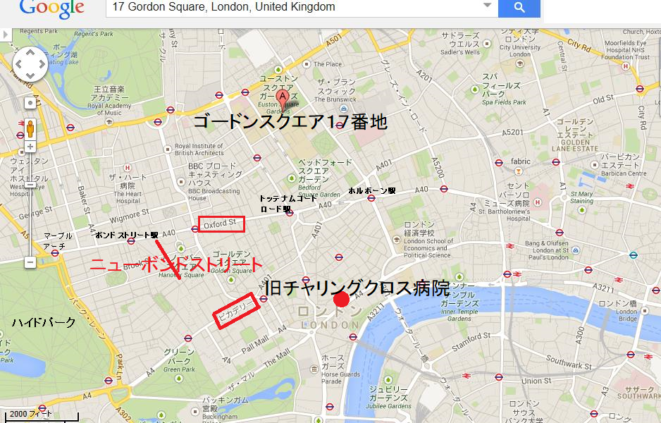
おっと、ここが十七番地か。豪華な
玄関で大男の召使いが二人、手持無沙汰にうろついている。帽子がずらり並べてあることから夕食の招待客がいることは確実だ。どこかの扉が開いて、執事が手にお盆を持って現れた。
扉が開くと、強力な煙草の匂いが漂い、くぐもった低い笑い声が聞こえた。明らかに大勢が食事している。ジェシのくそ度胸が今こそ試される。
ほんの一瞬ちゅうちょした。自分の声に自信がなかった。喉がつかえて声が出そうにない。それでも
「ピカデリーのフォルダーから来た店員でございます。本日この時間にここへ来るように手紙を
ジェシは自分の声がしっかりしているのに驚いた。召使いが横柄に
「衣装のことか。伝えて、とりはかろう」
しばらくして、侍女がジェシを上階へ案内した。ジェシは指示通り、黒服に身をまとい、黒い水夫帽をかぶり、濃い顔隠しをつけてきた。ハッとする見事な体型と、物腰を除けば、億万長者御用達の若い店員そのものであった。ついに化粧室に通された。まさに重要人物が使おうとしていたようだ。
広くて豪華なしつらえだ。
大夕食会が進行中で、そのあと間違いなく同じく大歓迎会が開かれようとしている。窓のブラインドが一枚降ろし切っておらず、そこから下の庭をのぞけば、ずらりと優雅なランプがゆらゆら輝いている。いよいよ冒険の始まり、いまや遅しだ。ジェシは前向きにとらえ、熱く燃え、やる気満々になった。侍女が同僚に話すかのような調子で言った。
「お嬢様はすぐ来るよ。必要以上に引き留めないでね。早く済ませれば済ませるほど私も早く帰れる。じゃあね」
侍女は扉も閉めずさっさと出て行った。あたりを見て、高揚した。ここなら身に危険はあり得ない。顔隠しを上げて、もっとよく周りを見たかった。女心に訴えるかわいいものがたくさんある。しかし、黒い顔隠しを強要されていることを思い出した。
どこからか声がする。ひそひそと、誰かに明かりを消すようにささやいている。もう一度、繰り返し、せかしたので、自分に向けた指示だと分かった。すぐさま扉の所へ行って、明かりを消した。おっと、冒険が本格的に始まっていると、独り言。さらに小声の主が何事かささやきあっている。
そのとき回廊で見たものに、釘づけになった。真っ暗いなか、遠くの明かりではっきり見えた気がした。目撃したのは一人の男を二人の女が半ば引きずり、半ば持ち抱えている様子だ。
うち一人の女は夜会服を着ている。男の顔は蒼白で、死人のよう。重い病気か、死の間際かと見立てた。両眼を閉じ、だらんとした四肢は意識不明の状態だ。夜会服を着た女が年上で、髪は真っ白。もう一人は若くて美人、従者だ。
夜会服の女は頭にダイヤモンドのティアラをつけている。通常、王族しか着けないものだ。正真正銘の女王だと思った。ちらりと見えた両腕を力いっぱい使って、ピクともしない男を引きずっている。何か秘密めいた雰囲気があったが、さっぱり分からなかった。
幽霊の影は来た時と同じように静かに去った、夢かうつつか。三人が消えて、最後に誰かが寝室の扉をそっと閉めた。盗聴を恐れているようだ。ジェシは目をこすって、あたかもぜんぶ妄想じゃないかと確かめた。
こんな今どきの家で出現した妙な光景をあれこれ考えていた時、回廊からシュッシュッという
長く待たなかった。というのも明かりがすぐついて、質素な夜会服を着た女が立ちすくみ、ジェシを見ていたからだ。穏やかな笑みを浮かべているものの、顔面蒼白で、震えている。
「どうもありがとう。感謝の申し上げようがありません。帽子を取ってくれませんか、そうすればわたくしが……。ありがとう。鏡の前でわたくしと並んで立ってください。ハーコートさん、とても奇遇じゃありませんか。似ていませんか」
ジェシが息をのんだ。鏡に並んでジェシが見ているものは自分自身の生き写しだった。
第二章 一か八か
「そっくりでございますね。どうしてお分かりになられたのですか。誰か教えたのでしょうか。どちらさまですか。私の名前はご承知のようですが」
相手の女がほほ笑んだ。ジェシも相手の顔が気に入った。ジェシと同じようにちょっと澄ましたところがあり、笑顔はとてもかわいらしいけれども、まさにいま堅く決心しているふうだ。二人とも奇妙な立場を感じていた。あたかも初めて実際に自分自身を見たかのよう。相手が話し始めた。
「こういうことです。わたくしはベラ・ギャロウェイと申します。メリヘイブン令夫人はわたくしの叔母です。叔父のメリヘイブン閣下と叔母夫妻には子供がいないものですから、事実上わたくしを養子にしました。最近までとても幸せだったのですが、ついに危険が及び、わたくしの養父母だけではなく、この世で一番の恋人にまで差し迫ってきました。今は詳細を言えません、時間がありませんから。でも当家への危険や、恋人のチャールズへの危険は恐ろしいものです。運命のしからしめると言いますか、わたくしが数時間席をはずし、下手人の眼を逃れると同時に、しかもここに居なければならないのです。ハーコートさん、わたくしの代わりをしてください」
「ギャロウェイお嬢さま、それは無理でございます。信じてください。私のできることは何でもやります。勇気や決断が必要なものなら何でもです。生活がひっ迫していますから、お金の為なら何でもやります。しかし、お嬢さまの代わりは……」
「なぜですか。あなたレディでしょう。上流階級には馴れています。メリヘイブン閣下には一晩中会うことないでしょうし、令夫人はひどい近眼です。それにお客さまを接待するように
ベラ・ギャロウェイが早口で話した。しかもとても哀願調だ。きれいな顔が切迫している。もうこわれ始めているとジェシが感じて、あいまいに返事した。
「何とかやってみますが、私のことをどこでお聞きになられたのですか」
「いとこのロナルド・ホープからです。ロナルドはあなた方の家族とむかし知り合いです。思い出しましたか」
ジェシが少し赤面した。ホープ大尉ならよく知っている。心の奥底で思ったのは、ことが別な方に転んでいたならば、いまごろロナルド・ホープとは単なる知り合い以上の関係になっていたかもしれなかった。しかし破産した結果、自分の友達ともども、大尉ともすっぱり縁が切れてしまった。ベラ・ギャロウェイが続けた。
「そうです、ロナルドが教えてくれました。あなたをほめちぎっていましたよ。事あるごとにあなたのことを話し、瓜二つだと言ってました。その気になれば探し出したかもしれませんね。わたくしは好奇心から、ベリルという噂好きの顔の広い男に、ハッカー・ハーコート大佐の娘たちがどうなったか聞いてみたら、一人はボンド通りの婦人帽店、たしかマダム・マルメゾンのお店にいるという。ことわっておきますが、単なる軽い好奇心で見たかったのです。でも今日、気の滅入る事態が発生し、解決に困り果ててしまいました。そのときある計画がひらめいて、あなたへの手紙を携えて、けさマルメゾン店へ立ち寄ったのです。あなたはわたくしを見なかったでしょうが、わたくしは拝見しました。決心がすぐ固まって、手紙をあなたに……。ですからきっと、わたくしを助けてくれますね」
「お助けいたします、必要なことなら何でもいたします。だって絶対に、正当な動機なわけでございますから」
とベラが熱く強調した。
「誓って、貴族の尊厳と、愛する人の名誉のためです。決して後悔させません、決して。あのいやな店員の仕事からも永遠におさらば……。さあ、こっちへ……。いっぱい教えなければなりません」
ジェシはベラから一歩引いて、すなおに従い、回廊へ向かった。その態度には階級が幾重も下という引け目がありありだった。
やがて、二人は大きな二重窓が少し開いている場所へ来て、そこから階段を下って、庭に降りた。ことは当初思ったより安全だ。窓々にロールシャッターがある。
庭はとても静かで、がらんとしており、芝が短く刈り込まれ、バラの香りが漂っていた。静寂な庭園はまもなく大勢の上流階級の人々でごった返し、おしゃべりに花が咲こう。
ベラがいそいで説明した。メリヘイブン閣下による外国公使の夕食会に続き、令夫人による大歓迎会が開かれる予定だという。そのときまで、ジェシはメリヘイブン閣下が外務大臣であることを知らなかった。
食堂裏の大窓が庭にむかって開け広げてあった。食堂のまぶしい明かりがきらきら照らし出しているのは、古い銀器やら超高価なグラス、山盛りの花々、それにボヘミヤン・グラスに注がれた赤ワインであった。二十人以上の男たちがおり、全員、勲章やら、斜帯やら、制服で見分けられる。
性急にベラが一人ずつ説明した。ベラの口からポンポンと大物の名前が飛び出すのを聞いてジェシはちょっとまごついた。ほんの数時間前までは店員に過ぎなかった女の立場は奇妙だ。ベラ・ギャロウェイが言った。
「裏を通って戻りましょう。わたくしの叔母を紹介しますね。もう招待客が何人かいらしています。さあ、こっちへ」
すでに着飾った女性たちが玄関を埋めていた。階段を降りてくるひときわ目立つ女性が、頭にダイヤモンド・ティアラをつけている。あっ、回廊で意識不明の男を運んでいた女性だ。ジェシは目を丸くして、この女性が通り過ぎるのを見た。ベラがささやいた。
「アストリア女王です。あなた、ベールを下ろしなさい。あの方がアストリア女王です。当家の個室で、わたくしの叔母と二人きりで夕食をしておられました。顔を見たことがありますか」
「はい。つい先ほどでございます。誰かが明かりを消すようにささやき、暗闇で座っていたときでございます。でも好奇心から見たのではございません」
「ええ分かっています。わたくしが明かりを消すように寝室から言いました。階段であんなところを見られたくなかったものですから……。おわかりでしょう」
「それから、男の方はご病気でございますか。たぶんお名前を
「そうね、ええ、小声で言いますから近くへ寄って。誰にも聞こえないように。あの方はアストリア国王です。あなたは病気ではないかと言いましたが、そんなんじゃありません。いいですか、アストリア女王は最高の女性です。優雅で心優しく、完全な愛国者です。ですが、アストリア国王はヨーロッパでも最悪の人物です。ある意味、あなたが今晩ここへ来たのも国王が原因です。全てが恐ろしいほどこんがらかったのは国王に端を発しているのです。あの悪人が全部引き起こしたのです。これ以上、
以上をベラ・ギャロウェイが小声でひそひそ伝えた。ジェシはますますまごついた。もはや約束した手前、引き返すわけにいかない。
回廊で目撃した奇妙な場面がまたしても強烈によみがえってきた。アストリア国王はむかし悪人だったかもしれないが、確実に
「さあ、わたくしの部屋に戻りましょう。まずわたくしが召使いを席払いします。もう衣装を着替えることはないからと言います。あなたは用事を言いつけられた風にして、階段を上がりなさい。召使いがいると困ることが後で分かります」
寝室扉の鍵を再び閉めて、ベラが衣装を脱ぎ始め、ジェシにも同じことを求めた。ちょっとの間で、両者は入れ換わった。髪の整形にはてこずったが、どうにかやり遂げた。
ややあって、ジェシが鏡の前に立って見れば、他人が自分の体を乗っ取ったようで、妙な気分だった。一方のベラ・ギャロウェイは顧客の注文を待つ地味な店員に変身している。
「誰も違いは分からないと思います。強い明かりのところに行かない限り、
ベラが瞬時に戻って来て、出発準備に取り掛かった。いまや活劇が本格的に始まろうとしている。ジェシは鼓動が高まっているのを感じた。二人が一緒に階段を下りていくと、一階の華麗な部屋並がみるみる埋まっていくのが見えた。
招待客が一人二人ジェシに会釈するので、返礼に微笑まざるを得ない。このように注目され、うろたえるのは相手が誰だか知らないためだ。目の前のお勤めが一大事だと分かり始めた。ジェシがベラ・ギャロウェイの声色を上手に真似た。
「おまえのいいわけは全く受け付けません。バニスター、大変申し訳ないですが、今晩遅く迷惑をかけます。わたくしが必要なためです。この若い女性がいつ帰ってきても、追い払わないで小部屋に案内しなさい。それからわたくしを呼びなさい」
結局、上流社会の女性の口調はみんな同じだった。大男の召使いバニスターがお辞儀すると、ベラ・ギャロウェイは通りに出て行った。無事に退出できたばかりでなく、帰還の安全も保障された。これらの隠し事や、抜け目のない別行動は一体何だろうと、ジェシは不思議がった。
とにかくも、ベラ・ギャロウェイの行動を厳しく監視する者が一人以上いるに違いない。考えるとぞくぞくし、もしそんな目付けが周りにいるのだったら、きっと自分に集中するはずだと思った。
一人の見知らぬ男がやって来て、片手を差し伸べた。昨晩のシェリンガムの舞踏会はどうでしたかと尋ねた。ジェシは両肩をすくめ、いつものようにとても楽しみましたわと答えた。今こそ慎重になって、用心しなくちゃと決心した。
一歩踏み外せば、全てが駄目になって、化けの皮がはがれかねない。その結果は考えるだに空恐ろしいものだった。見知らぬ男が続いた。
そのあと、一人のかわいい娘がジェシの所へふらふらやって来て、キスしざま、ブリッジしませんかと耳元でささやいた。はたしてベラなら、エイミイ・マックリンとコニーと一緒に、部屋の反対側へ行っただろうか。ジェシは会釈と笑みを返し、さっと抜けた。この娘はこれ以降、避けなくちゃと心に決めた。表面は楽しんでいるように装い、エイミーとコニーはどんな娘かと思った。一晩中、逃げ続けていなくちゃならないかのような気がした。
やがて、サロンにざわめきが起こり、主催者のメリヘイブン令夫人が部屋にはいってきて、少し遅れて、頭にダイヤモンド・ティアラをつけた高貴な女性が入場してきた。
招待客たちが右も左もお辞儀した。アストリア女王が席に案内されると、ちょっとした興奮も収まった。順調に行ってくれとジェシが祈ったが、新たな恐怖が己の立場に加わることになる。一介の店員であるジェシが本物の女王の目の前に実際にいる。おそらく当世ヨーロッパで最も奇妙な光景だろう。
ジェシはアストリア宮殿や、激しい陰謀や策略のことを聞いたことがあったなあ、と思い出した。こんなことを考えている片側では、有名な女性歌手が声を張り上げ、ピアノ伴奏者も名声に負けず劣らずという現実があった。
一人の
「ベラお嬢様、不作法をお許しください。女王があなたに話したいとおっしゃっています。女王の左側に座っておられる令嬢のところに行かれると、令嬢が席をお空けになります。ごく自然に振る舞われます」
ジェシはご光栄に感謝した。しかし、いま早鐘のように鳴る心臓の痛さと言ったら、今晩中ないものだ。ご
はたして女王は偽物とご存知なのか、あるいは策略の一部なのか。しかしこの考えは無理筋だ。招待された王族が招待側に対して、このような策略ができるわけない。
頭がくらくらするものの、極度に警戒しながら、ジェシは前に進み出た。女王に近づくと、待っていた令嬢がごく自然に立ち上がり、すっと去ったので、ジェシは空いた席に座った。
まさかジェシが見たのは、アストリア女王の笑顔の裏に疲れた表情があろうとは。それでも、お顔はとびきり美しかった。女王がお尋ねになった。
「シェリー、呼びつけて驚かなかったですか」
「ええ、妃殿下。何か御用でしょうか」
と答えたジェシは愛称が間違ってないことを祈った。
「お嬢さん、そのうちありますよ。今晩何とかして助ける方がおります。意味が分かりますね。危険が昨晩のように迫っています。もちろんマクスグラジャ大将がもうすぐ来ることも知っていますね」
「承知しております、すくなくとも驚きません、ええ、妃殿下」
「むろん驚くことはないです。あなた、今晩ちょっと話し方が変ですよ。あなたの叔母の歓迎会にマクスグラジャ大将が来るなんて、敵は思ってもいないでしょう。大将が来られたら、ぴったり接客してください。庭に連れ出すんですよ。それから階段を上って、回廊へ案内し、居間にお通ししなさい。あなたの化粧室の隣、あの方が実際に寝ている部屋の隣にです。それが終わったら、わたくしの所へ来て、大声でこう言うのですよ、妃殿下がおっしゃっていた絵画を見に行きましょうって。そうすれば、お忍びで大将に会うことができます。そのあとあなたは庭園の噴水の所まで行って、わたくしか、両名が降りてくるまで待っていなさい。よく飲み込めましたか。どんなに監視されているか誰も分かりません」
すべて承知しておりますとジェシが丁寧にささやいた。それにしてもジェシが途方に暮れたのは、どうやって大将が来たとき見分けるか分からないことだった。事の次第にますます当惑するばかりだ。
明らかにベラ・ギャロウェイは女王に深く信頼されていると同時に、慎重に女王に秘密にしている事実、つまり別人になりすましている。これは高貴なお方を大胆に
「大将をお待ちいたします。時間がありませんので、早速迎えに参ります」
ジェシは立ち上がり、お辞儀して、退出した。今までのところ、すべて順調だ。だが、ホールへ戻ってみれば胸をえぐるような衝撃が、なんとボリス・マザロフ王子がアイスを優雅に食べている女に、ちょっかいを出しているじゃないか。
ほんの一瞬、ジェシは、ばれるかもしれないと思った。その時ハッと考え直し、自分は夜会服を着ており、髪も入念に整えているので、ロシア人の目にはボンド通りの店員にただ似てるだけと映るだろうと思い直した。いずれにしろ、リスクは避けられない。王子は女といちゃついているので、今は誰も目にはいらない。
何度も深呼吸をした。マクスグラジャ大将が来るまでホールで待とう。来たら発表されるだろうから、尋ねる必要はなかろう。ちょっと経って、堅物顔の大男がホールにはいってきた。
誰かがマクスグラジャの名前をささやいた。ジェシがじっと見た。大将の名前は外国風だし、軍服も間違いなくそうだが、確かにあれは英国人の顔だ。一瞬、自分の仕事を忘れかけた時、大将がジェシにしっかり向いて、ひそひそ言った。
「すぐ上に行く。お分かりだろうが、直ちに女王に会わせてくれ。もちろん手配済みだな。女王はご存じか」
ジェシがいまになって確信した。
「女王はすべてご承知です、大将。わたくしと庭に出て、誰かを探すふりをしましょう。そのあと部屋に案内します。そこで女王がお会いになります。とてもすばらしいお方で、ご出身はロムニー地区でございます」
最後の単語を強調した。いったん庭園へ降りて、両者は急いで階段を上がり、回廊へ向かった。遠くから、女性歌手が神々しい歌声で、熱い恋唄をうたっている。別な機会であれば、ジェシも魅力的に感じたことだろう。そういうわけだから、サロンへとって返し、女王のおそばへ進んだ。目を合わせ、一言で十分だった。
歌が拍手喝さいの嵐で終わった。女王が立ち上がり、片手をジェシの腕に置かれた。絵を見に行くとおっしゃった。疲れた様子で、人生は難儀ですねと言わんばかりに、階段を降りられた。だが、ひとたび庭に降りると、態度を一変された。
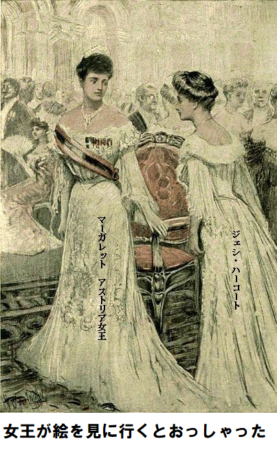
「手配しましたか。うまくいきましたか。大将はあなたの居間の隣におられますか。なんてあなた、手際がよくて、頭が切れるんでしょう。あなたのようなひとを女官に持ちたいものです。向うの椅子にかけてある黒い外套を、頭から肩に着せてください。さあ、先に立って案内して。それが終わったら、むこうの噴水の所へ行って待機して、辺りを人払いしてください。窓の明かりが二回光ったら、それがわたくしの降りる合図です」
静かに階段を上って、回廊に入った。ここでマクスグラジャ大将が女王をお待ちですと、ジェシが部屋を指し示した。
扉をそっと開けると、押し殺した歓声が上がり、静かに扉を閉めた。言葉で表わせないほど心臓の脈が上がったまま、ジェシは再び庭に下りて、観賞用の噴水の縁に立ち、あたかも夜風で涼んでいるかのように振る舞った。
まあまあ冒険を楽しんでいた。でも考えなくては。邸内のみんなは大物歌手の神々しい歌を聞いているから、一休みする余裕ができた。それに自分から休息したかった。考えをまとめようとした。
思案中、背後で足音がしたので、辺りを見渡した。思わず息をのみ、それから噴水池の金魚にじっと見入る姿を装った。
「近づいて来るな。気付かず通り過ぎてくれ」
というのも、真っ直ぐ噴水へ歩いて来るのがボリス・マザロフ王子だったからだ。
第三章 用心
ここは危険、予想もしなかった。邸内ならマザロフ王子に会っても驚かない。実際、この数時間内に起こったことを考えれば何も驚くことはあるまい。邸内でロシア人が現れても驚くような事ではない。王子ならロンドン中の有名人を知っているだろうし、今ここに上流階級の人々が全員居るのだから。
果たして王子はここにきて話しかけるだろうか。自分から逃げればいいのだろうが、はっきりしているのは合図が届くまで噴水のそばで待機しなければならないことだ。全てを慎重に考え抜いた末、明らかにベラ・ギャロウェイなら、この宿命的な夜であれば、どこにいても避けられないだろう。
もしかしてマザロフ王子は変装を見破るか、ジェシが自問した最重要の問いだった。当然、王子はボンド通りの婦人帽店員と、ベラがとてもよく似ていると思うだろう。元々王子はメリヘイブン閣下の邸内や、おそらくベラもよく知っているから、前々から似てることに気付いていることは間違いない。
ジェシが思い出したのは、ホールで馴れなれしく会釈した女たち、この恥知らずのロシア人よりベラのことをもっとよく知っていたに違いないけれど、あの女たちをわたくしは完全に欺いたのだから。
マザロフが噴水の方へぶらぶら歩いて来て、やさしく声をかけた。その態度は丁重、優雅、礼儀正しい。でもそれがそうでないことはジェシが苦い経験で承知済みだ。
上目づかいに冷静に男の顔を覗き込んだ。王子が何か当てこするかどうか、はっきり知りたかった。だが王子は失望を口にしたに過ぎなかった。
「ベラお嬢さま、どうしてそんな不機嫌な目で見るのですか。私、何かやりましたか」
ジェシが作り笑いした。自尊心は忘れなかった。この男は悪人、卑怯者だ。この男のせいで、破綻寸前に追い込まれた。だが思えば、ベラはこのことは一切知らないのだから、ベラがやるように振る舞わなければならない。来たるべき戦いに、知恵の限りを探った。微笑みながら言った。
「不機嫌でしたか。あなたのせいではありません。考えていたのは……」
「あなたの考えを当てましょうか。私は勘がいいんです。女王が絵画に関心がないということでしょう」
マザロフが声を低くして言った。両肘を噴水の縁に置いて話すので、顔がジェシにぐっと近くなった。
ジェシは驚きを抑えた。マザロフの言葉は明らかにおどしだ。それが何か意味するといえば、危険ということだ。そして関係者を守るのがジェシの勤め。さらにベラ・ギャロウェイの知りえないことを一つ知っている。この男は悪党だ。
「ずいぶんカマをかけますね。どこの女王のことをおっしゃっているのでしょうか」
「ここでは女王は一人しかおられません。アストリア女王のことですよ。客間を出られて、あなたと絵を見に行かれて、失望されておられる。どこに行かれたのですか」
「ホホホ、いまごろ客間に戻られているでしょう。わたくし、王族の前ではくつろげませんから」
マザロフの眉が不機嫌に引きつった。明らかにジェシがふと漏らした言葉が、一瞬マザロフを追い詰めた。
「それで国王は？ 何か知りませんか。どこにおられるか、たとえば……」
ジェシが首を左右に振った。いまや危険地帯に足を踏み入れつつある。慎重になる必要がある。ちょっとした言葉が災いになりかねない。
女王は大親友ですとマザロフが続けた言葉は、嘘だとジェシが直感した。さらにマザロフがたたみかけた。
「あなたもご存知かもしれないが、女王が危険です。あなたは首を振られたが、その気になればもっと話せるでしょう。でも外交官の
「外交官の
とジェシが冷静に答えた。
「確かに。あなたを怒らせたくありません。でも、ある事実は知れ渡っています。王冠を戴く方の悪徳を覆い隠すことはできません。アストリア王がどうしようもない大酒飲みで賭博師だということは誰でも知っています。自分の有り金を使い果たし、数々の愚かな問題を引き起こしたとなれば、これ以上民衆の金は引き出せないでしょう。王位についてから四年ですが、まだ戴冠していません。王の弱さと、愚行はロシアに絶好の機会を与えます」
「愛国者の良きロシア人として、あなた、うれしいでしょう」
「とても賢い人ですね、お若いのに。ロシア人から見て、当然ロシアが一番乗りするでしょう。でも私の政治見解は余りにも自由主義なので、ロシア皇帝の思し召しにより、事実上西ヨーロッパに住まざるを得ない事情があります。アストリア政治に関しては故国のロシア皇帝の考えと全く違います。裏切り者と言われる危険を冒してでも、女王をお助けするつもりです。女王はあなたの友人ではありませんか」
「女王の為なら、全力でなんでもいたします」
とジェシが用心して答えた。
ロシア人の目がギラリ光った。興奮したはずみに、片手をジェシの腕に置いた。ジェシは嫌悪感を催したが、我慢した。マザロフが耳元でささやいた。
「それでは今こそいい機会はないでしょう。私は今すぐ女王が知るべき秘密情報を持っています。信じてください、私は純粋に心から沸き起こる動機で動いているのです。私が実際に故国から追放された身であるという事実が、私の心を示しています。私はロシアの領土
「女王にお会いしたいとおっしゃるのですか」
「そのとおりです。女王と国王に、です。国王のあてはありました。行きつけの場所でずっと探していました。けさ、チャールズ・マクスウェルがお供していたことを知っています。国情について何か言ってませんでしたか」
と食いついてきた。
「誰のことですか。その方の名前なんて知りませんよ」
ジェシがうっかり口を滑らせた。
マザロフがちょっと怒ったような調子で言った。
「そんな馬鹿な。警戒するのも芸の一つですが、メリヘイブン閣下の腹心の個人秘書を知らないとは。よしてくれ、いさかいか、恋人同士の痴話
ジェシはすぐ冷静になった。もしマザロフが冷静だったら、おそらくジェシの大へまを見過ごす事はなかっただろう。
ジェシが冷たく言い放った。
「そのようにおっしゃるのはかまわないですけど」
「でもお嬢さん、そう言ったのは私じゃありませんよ。みんなそう言ってます。金曜日の夜、公爵の家でメイトランド嬢がそう言ったとき、あなたは何もおっしゃらなかった。メリヘイブン令夫人も両肩をすくませて、何かよくないことが起こったんでしょうとおっしゃっていた。マクスウェル氏が今ここに来てくれたら……」
ジェシはマザロフの言葉を無視した。この情報は極めて重要だが、同時に危うい事態を招く可能性がある。もしここにチャールズ・マクスウェルが来たらと思うと……、でも考えたくなかった。
顔を半分そむけ、マザロフに表情を見られないようにした。精神を落ち着かせる時間稼ぎをしたかった。ふと邸宅の方に目をやると、寝室の窓から光がピカッピカッと二度光るのが見えた。
あの信号は女王がサロンへ再び帰る知らせだ。ジェシのお勤めは明白だ。急いで寝室へ行って、女王をお迎えすること。でもこの男がそばに居てはできない。マザロフを追い払う口実が浮かばない。追い払っちゃ友人でないかのようになる。マザロフはアストリア首脳の敵なのに。たぶん口に出した以上のことをもっと知ってるに違いない。女王が絵画を楽しんでいるか聞いたとき、声色に脅迫めいた印象があった。
ジェシが今晩起きた諸々の事件を頭の中でぐるぐる考えていた時、ありありと思い出した場面は女王と見知らぬ女が意識不明の男を引きずっていく姿だ。あの男がアストリア王だとしたら。そうだ、ベラ・ギャロウェイがそう言っていた。
ジェシは確信した。その確信とは、敵方はある理由でアストリア王がメリヘイブン邸宅に居るのを知らなくて、私から貴重な情報を引き出そうとしていることだ。
再び見渡せば、合図がまた光った。逆に分かっているからこそ、時間が王冠ダイヤのように貴重に思えた。でも、マザロフがそこにいる限り、動けない。
何か逃げ出す方法がないか探した。庭園はがらんとしている。というのもサロンで歌会がまだ終わっていないからだ。庭園にまで鈴のようなプリマドンナの素敵な歌声が聞こえてくる。歌手がひときわ愛国的、扇動的な旋律を奏でた。
「アストリア国歌だ。感動するじゃありませんか」
こうマザロフがうそぶいた。
第四章 合図
ジェシはまた信号の点滅を見た、というよりむしろ感じた。誰か助けてくれる人がいないか、あたりを見回した。
遠く男が一人、邸宅の方から歩いて来る。ほの暗い中、煙草に火をつけるために立ち止まり、マッチの炎が顔を照らし出した。ジェシがぎょっとして、ほほを赤らめた。
今晩はジェシの為に殿方が戦ってくれるかのようだ。マッチの
煙草をくわえながら、男が噴水のそばにすたすた歩いてきた。両手を背中で組み、物思いに沈んでいる。おそらく噴水にたたずむ二人に気付かないで過ぎ去ったかもしれないが、ジェシが陽気な声で呼び止めた。
「ホープ大尉さん、何か失くされたのですか。こちらへ来て、教えて下さいな」
ジェシの声は平然としていたが、いま心臓はパクパクだ。というのも、ベラのいとこロナルド・ホープ大尉はジェシ・ハーコート時代、個人的な関係で周知の間柄だったからだ。
むかし、ホープ大尉は父の家をしょっちゅう訪れており、ジェシはいろんな夢を描いていたものだ。もし大尉が大胆な計画をベラに思いつかせなかったとしたら……。
ホープ大尉はジェシを忘れていなかった。ジェシは姿をくらまし、何の連絡も取らなかったものの、今すべてを悟った。だって、ベラ・ギャロウェイとジェシ・ハーコートが瓜二つということを，ホープ大尉が言わないなんてあるか。
決定的な瞬間だった。ホープ大尉は昔のジェシを思い続けているから、ジェシはそう言わないでくれ、と心底願った。果たして大尉はジェシと認めて、変装を見破るのか。
もし愛に落ちた恋人の目がくらんだら、他人にその面影を見るはず。ジェシの心臓が止まったかのようになったのは、ホープ大尉が巻き込み帽子を脱いで、ゆっくりと噴水の方へ歩いて来た時だ。
「ギャロウェイお嬢さん、探しているのは消耗して失くした若さですよ。マザロフ王子、ごきげんよう、いい夜ですね」
「恋人たちの夜ですね。サヨナギドリや薔薇の
こうマザロフは言ったが、ジェシの気持ちはホープ大尉との会話を中断されて、いらいら。
「ホープ大尉さんなら、何を思い出しますか」
とジェシが訊いた。
「きみを見ると、いつも友人のジェシ・ハーコートを思い出すね。見れば見るほどよく似ています」
マザロフが割り込んだ。
「ボンド通りの小柄な店員ですね、会ったことがありますよ」
「ホープ大尉さん、こよいの思い出を語ってくれませんか」
とジェシがせかした。
「いかにも、あとでマザロフ王子に聞きたいことがありますけれど。今夜は三年前を思い出しますね。ある夜、素敵な小道の端に月がかかっていましてね。もちろん、一組の男女ですよ。小道で将来のことを語り合ってました。花びら合わせをするために、花を摘んでね。摘んだのは野バラ……」
「二人のこころは花びらで遊びますね。タンポポの種が飛ぶのをご存知ですか、代わりにバラの花を使われたようですが」
こうジェシが笑いかけた。
ホープ大尉の顔色がさっと変わった。日に焼けた黄褐色から血の気が引いて、すぐジェシを見た。両者の目が一瞬会った。二人の間に記憶がよみがえった。マザロフは気付かない。噴水の縁で煙草に火をつけていたからだ。
ジェシがわけのわからないことを言ったから、その意味を知らないと、チンプンカンプンだ。ジェシがマザロフに声をかけようとして、噴水の縁に置いた煙草をわざと落とすと、コロコロ石段を転げて、草の上に落ちた。ジェシが叫んだ。
「わたくし、なんてそそっかしいんでしょう。ボリス王子、取ってくださいな」
笑いながらマザロフ王子が自分の煙草を拾いにかかった。稲妻のようにロナルド・ホープがジェシに向き直った。
「どうしてほしい。どうすればいい。ひとこと」
「あの男を追っ払って。今は説明できない。追っ払って。最低一〇分邪魔させないよう。そのあと、もう一回戻って来て」
とジェシが息せき切って頼んだ。
ホープ大尉が了解。事態が分かったようだ。なんかかんか言って、ゆうゆうと邸宅の方へ向かった。マザロフが途切れた話題を取り上げようとするものかは、一人の若い男が、たぶん大使館員だろうが、現場へ駆けてきた。
「ボリス王子、あなたをあちこちお探ししておりました。メリヘイブン閣下がお話したいとおっしゃっています。ご足労をかけて申し訳ございませんが、重要案件でございます」
マザロフが白い歯を見せたが、ちっとも嬉しそうじゃなかった。自分が煙草を探している一瞬に仕組まれたとはつゆ知らず、正真正銘自然に思えた。すぐ戻りますというようなことを言って、大使館員に従った。
ジェシはやっと一息入れた。辺りをじっと見回したが、合図は二度と来なかった。回廊の階段へ飛んでいかなくてもいいのか、と自問した。
今や真っ暗になった窓をまた見ると、一瞬明かりがついて、マクスグラジャ大将と
ロナルド・ホープ大尉が戻ってきた。厳しい顔をしているが、同時に、目には怖がらなくてもいいよというやさしい気持ちがこもっていた。
「いったいどういうことだ。あんなに驚いたことはなかった。きみがむかし野バラの花びらで、二人の心という遊びをしたと言いだした時、すぐジェシ・ハーコートだと分かったよ。だってその遊びは二人で造り出し、誰にも教えなかったんだから。そうだよ、きみはいとしのジェシだ」
その優しい言葉にジェシはぞくぞくした。唇に不安な笑みを浮かべて言った。
「ヒントがなかったら、分からなかったでしょう。ロナルド、怒ってない」
「きみだと分かっていれば、怒ったさ。きついことを言うようだけど、聞きたいんだ。どうして……」
「ロナルド、そのことは聞かないで。大の仲良しだったのだから……」
「わかった。言いたいことは分かるよ。むかしは大の仲良しだったし、今まで一回も言わなかったけど、きみが好きだった。僕は一言もいわなかったが、知ってただろう。心がそう言ってた。一回もキスしなかったし、腕を腰に回わしたことさえなかったけど、二人はいつも分かっていた。僕はアイルランド長期駐留が終わるまで待つつもりだった。そのとき、きみのお父さんが死んで、破産して、きみは消えた。ジェシ、どうして言わなかったんだ」
「だってロナルド、あなたも貧乏だったし、あなたの軍歴に傷をつけたくなかったからよ。妹のアダも私も、文なしになったけど、意地があった。それにあなたはすぐ忘れると思ったのよ」
「忘れるだって。きみを忘れるもんか、ジェシ。僕はそういう男じゃない。僕はここによく来たんだ、そのわけは知り合いのマクスグラジャ大将を通じて、外務官の職に就こうとしたんだ。アストリア軍のね。混乱や危険がある所には将来チャンスがあるから。そこでベラ・ギャロウェイを見るたびに、きみの面影を見て心がうずいたよ。しょっちゅうベラにきみのことを話した。そこでだ、教えてくれ、なぜ今晩突然、きみの意地は壊れたんだ。ベラで押し通せたのに、バラのことを言わなければ」
ジェシが声も切れ切れに言った。
「緊急にあなたの手助けが欲しかったの。ばらしたくはなかったけど、やむを得ません。なぜここでギャロウェイ嬢になりすましているか、本人はどこへ行ったか不思議に思っているでしょう。それはあなたにも言えません。きょう見込まれて、ここへ呼ばれて、入れ換わってくれとお願いされたんです。その決断は金銭的理由と無関係じゃありません。あの悪徳マザロフが来るまで順調に役割を演じていました。現在、アストリア女王に奉仕しています。あそこの部屋で、マクスグラジャ大将と、足腰の立たない泥酔者と一緒です。酔いどれはアストリア王にほかなりません。わけを聞かれても言えません。以上をめちゃめちゃ急いで取りきめて、私がここにいるのです。誰にも見られず女王が戻られるためには、マザロフ王子を追い払う必要があったのです。別に驚くべきことではありませんが、結局マザロフはいやらしいロシアのスパイに過ぎません」
「よく分かったよ。でも、ジェシ、いつまで続くんだい」
「ギャロウェイお嬢さんがボンド通り店員の格好で戻られるまでです。そのあと衣装を交換すれば、自由になれます」
ホープ大尉が何事かやさしくつぶやくと、ジェシのほほに赤みが戻った。いまや、勇気リンリン、大胆不敵な気分だ。
振り返って上階の窓を見れば、明かりがついて、ブラインドが上がっている。そのとき、シャツとズボンを脱いだ男が窓を開けて、手すりの上に立ち、両手を激しくばたつかせ、タコ踊りしている。思わずジェシは口を押さえた。地面に落ちたら、石畳を直撃して、即死だ。
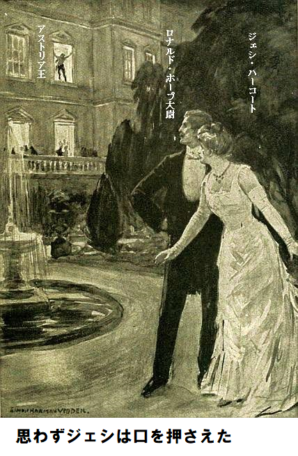
しかし落ちなかった。誰かが背後から捕まえて、窓を閉め、ブラインドを下ろした。数秒間、真っ暗になり、そのあと合図が二回またあった。きつく命令するようだった。
第五章 昏睡
ジェシはとまどい、警戒し、ピリピリしていたけれども、もしも合図が出た部屋の中に居たならば、なお一層ぞくぞくしたかもしれない。自分があそこにアストリア女王とマクスグラジャ大将を案内したのだが、なぜ両者が会って秘密会議をしたのか、分からなかった。
ジェシは漠然とこの妙な出来事を、アストリア王とされる不幸な人物に関連付けた。それほど大きく間違っていなかった。実は、密会室隣の化粧室に、不運な男がベッドに寝ていた。
びくともせず、息も静かで、死んでいるかもしれなかった。夜会服を着て寝かされ、高貴な階級を示すものは何もなかった。
小柄、みすぼらしい顔、もじゃもじゃの赤い口ひげ。同色の頭髪は薄い。これと対照的なのがアストリア女王だった。とても美しく、完璧な衣装で、ダイヤモンドが輝いていた。あらゆる点で女王だった。でもお顔には厳しく、苦しい影があり、黒い瞳がらんらんと光っていた。女王が
「思うに、危ない人生を渡り、健康を害し、神経を痛めつけられたのも、あの男のせいだ。臆病で嘘つき、飲んだくれ者が……。酒と賭け事に金を使い、王冠を投げ捨てようとしている。いや、いまごろたぶん王冠を売っているかもしれない」
ベッドの体が少し動いた。
「死なせてはいけない、まだいけない。ああ神様、この人が死んだら、わたくしはもっと幸せになれるでしょうに。つらい闘いも終わるでしょうし、眼の前で王が殺される恐怖におののくこともなく、ぐっすり眠れるでしょうに。ああ、ポール、どうして来てくれないの」
そのお言葉は自分の無力さに対するお怒りのようであった。そのとき、ドアをそっと叩く音がして、マクスグラジャ大将がはいってきた。
女王はお喜びの声を低く激しく、お上げになった。差し伸べた両手が震えていた。美しいお顔がパッと輝き、すてきな両目には喜びの表情があった。恋人を歓迎する小娘のようで、部下を迎える態度じゃなかった。
「ポール、わたくし恐ろしい。あなたがとても遅れたから……」
ポール・マクスグラジャが震える手をぎゅっと握った。じっと見つめると、目をお下げになり、お顔がポッと紅潮された。軍人が王族と同席するのはこれが初めてじゃない。
勇敢なスコットランド部族は真実を追求する習わしが多々あった。グレン出身のマクスグラジャ家はむかしヨーロッパ歴史を作る助太刀をしたことがあり、ポール・マクスグラジャも一族の中じゃ、やわではない。
世間ではアストリア語を完璧に話したから、同国人として通用したが、この動乱国家に、ここ二十年余り軍務についていた。バルカン諸国は常に衝突があり、若い頃、高い給料に引かれて来たのであった。今まで忠誠心が問題になることは一切なく、骨の髄まで英国人であった。
「マーガレット妃殿下、すぐに来られませんでした。別件がございまして。でもなぜ国王をここへ運ばれたのですか。メリヘイブン閣下はご存知ないのでは……」
「閣下は知りません、ポール。わたくしは英国にいて、役割を果たさねばなりません。そうしたら報告があって、国王が
ポール・マクスグラジャ大将が大声で言った。
「死なせてやりなさい。汚物は死なせてやりなさい。そのあと、妃殿下がアストリアの王位に就けばいいのです。後継者にふさわしいと存じます」
女王が哀しげな表情を浮かべて顔をお上げになった。ここに味方が一人、その人を女王は厚く信頼されている。女王の両手は依然としてマクスグラジャ大将のたなごころにあった。女王がやさしく言われた。
「せっかちですね、ポールは。献身的なことは知っておりますけど、あなた……あなた、わたくしが好きなのね……」
マクスグラジャ大将が小声で言った。
「全身全霊から愛しております。あなたが父上の
女王が少しほほえまれた。この厳粛で、強情で、頑固な兵士は本音しか言わない。やはり女王は味方のいない、迷える一介の女性であられた。
「ポール、わたくし続けなくては。目の前のお仕事をしなくては。もしエアノ王が死んだら？ 今晩死ぬかもしれません。もしそうなったらどうなりますか。現時点でわたくしたちの見る限り、ロシアは国王が署名したとされる文書を提出するでしょう。偽造なんてお手の物です、とにかく偽造書類でしょう。エアノ王が自国を売却したことが証明されており、お金が王に渡ったことが記載されているでしょう。そのあと、ロシアは南部地区を占領するでしょう。この情報は確実です。ロシアがこのような手段を講じても、ヨーロッパは口出しできません。あちこちの諜報員からわたくしが実権を握っていることを知っているでしょうから、わたくしの努力は無駄になるでしょう。ポール、考えてごらんなさい、自分の気持を一時脇に置いて。だから、エアノ王を死なせてはなりません」
マクスグラジャ大将がせかせかと長い歩幅で、部屋を行ったり来たりした。訴えるような女王の声が大将の気持ちを揺さぶった。再び口を開いた大将の声は落ち着いていた。
「その通りでございます。妃殿下の義務と誇りに、恥入る次第でございます。申し上げますが、もし国王が亡くなられたら、どれだけ嬉しいことか。その騒ぎにお連れ出しすれば、生涯で一番幸せになれるかもしれません。貴重な時間を費やしました。これをご覧ください」
マクスグラジャ大将は話しながら、ポケットから白い包みを取り出して、紙袋を破った。小さな瓶が二本あった。大将がそのうちの一瓶のコルクをぽんと開けた。
「サレノ医師からもらってきました。バーニ医師が見つからなかったものですから。大酒飲みに処方します。これを全部飲ませます。もう一瓶は一〇分ごとに一滴ずつ飲ませます。サレノ医師によればこれを飲んだ途端、確実に大暴れするそうです。効き目を強力にしたそうです」
小瓶を開けて、寝ている人物の頭を、マクスグラジャ大将が持ち上げにかかった。薬瓶を傾けて、目をつぶっている男の喉に全部流しこんだ。ゴホゴホむせたが、なんとか全部飲ませた。
すると四肢がぶるっと震え、青白い下品な顔がうっすら色づき、再び血流が戻ったかのようだ。やがて充血した両目を開け、部屋をぼんやり眺めた。王が体を起こし、身震いし、不機嫌に訊いた。
「お前、なにを飲ませた？ 口が火事だ。シャンパンでもブランデーでも酒の味がするものを何でも持って来い。馬鹿もの、何をじろじろ見ている。奴がいるのが見えないのか。手にナイフを持ってるぞ。真っ赤な服を着とる。追っかけてくる」
叫び声をあげて、王がベッドから飛び降り、窓に駆け寄った。ブラインドを跳ねあげ、観音窓を押し広げたが、マクスグラジャ大将は制止できなかった。すんでの所で、下の敷石にたたきつけられるのを目撃するところだった。
マクスグラジャ大将が、なにか呪いのような言葉を発して、突進し、間一髪で間にあった。ものすごい腕力で酒乱の背中をつかみ、観音窓を閉じたが、夢中だったので、ブラインドは上げたままになり、庭の端にあるテラスから部屋の中を見ることができた。
これをマクスグラジャ大将が気付く余裕はなかった。ベッドに戻したアストリア王は大暴れした結果、いまや衰弱し、無力で、ほとんど失神状態だ。ナイフを持った赤い姿の妄想はもう過ぎ去り、両目をつぶった。だが、いま心臓は力強く動き、その振る舞はいっぱしの男のようであった。マクスグラジャ大将が哀しそうに言った。
「こんな卑劣漢を考えると、アストリア王国の運命はないなあ。マーガレット妃殿下、ここはしばらく私にお任せください。妃殿下が臨席しないとマザロフらに察知されます。合図してください……。なんであの女は来ないんだ」
合図を二回も送ったのに、替え玉ギャロウェイ嬢は来なかった。
第六章 悪だくみ
二人は不安そうにお互いの目を見た。国王は再び深い眠りに落ちたようだ。胸が規則正しく波打っている。明らかに強力な薬が効いている。マクスグラジャ大将が二番目の瓶を開けて、眠った男の唇に、間をおいて、少量ずつ滴下し始めた。
女王が不安そうに言われた。
「何かよくないことが起こったにちがいありません。ギャロウェイお嬢さんなら信頼がおけます。待機しているはずです。なぜ来ないのですか」
マクスグラジャ大将が小声でささやいた。
「おそらく監視されています。スパイがうようよいます。遅れると大変なことになるかもしれません。とは言っても女王が介添えなしで、一人で帰るわけにも……。もう一回合図を」
もう一度合図した。不安な時間が経過して、扉をたたく音がした。女王が急いで、扉をお開けになった。そこに突っ立ち、紅潮し、息を切らしながら、ジェシが言い訳した。
「すぐに参上できませんでした。噴水の所で男に見つかったのでございます。わけは説明できませんが、敵に間違いありません。ボリス・マザロフ王子のことをご存知ならば……」
「うまくやりましたか。マザロフ王子ならよく知っていますが、確かにわたくしや、帰化国の味方ではありません。あなた、後をつけられなかったですか」
「ええ、つけられておりません。追い払うまで待たねばなりませんでした。友人が手助けしてくれて、メリヘイブン閣下にお世話をゆだねました。マザロフ王子はしばらく邪魔できないでしょう。妃殿下がサロンに帰られるまで止め置かれています。それでこちらのお方は……」
「ここに留まるということです。国王の面倒を見なければなりません。ポール、扉に鍵をかけてください」
女王とジェシが部屋を出ると、マクスグラジャ大将が扉に鍵をかけた。二人は誰にも見られず素早く庭に降りた。時間に間に合った、というのも、サロンの音楽会がちょうど終わったところで、招待客が庭園へぞろぞろ出てきたからだ。
その夜は風が無く暖かかったので、外で歓談できた。すでに召使いたちが軽食を準備していた。女王はさっと、おしゃべり仲間に潜り込まれた。女王の笑顔が輝き、温かく手を差し出されるお姿は、ジェシの奉仕に感謝されるお印であった。
ここに来て、ジェシは不安になり、神経質になった。次は何が起こるだろうかと気が重い。
その場を抜け出し、庭園の木立へ続く脇道にふらりはいって行った。頭が混乱していた。実際、一日中何も食べられなかった。今頃おなかが空いてきた。丸太椅子に座って、痛む頭を後ろに傾けた。
やがて二人の男がそばを通りかかった。一人は白髪の際立つ老人で、メリヘイブン閣下と認めるにさほど難しくなかった。そればかりか、ジェシが少しも驚かなかったのは、連れがマザロフ王子だったことだ。二人は熱心に話している。
「閣下、私は本当のことしか申しません。アストリア南部に関するロシアとの秘密条約は署名段階です。エアノ王が今日、読んで署名して、戻すそうです」
とマザロフが熱心に語っている。
「エアノ王が署名できる状態であればだが」
とメリヘイブン閣下があっさり言った。
「閣下、そういうことです。条約ではロシアが南部地区を獲得します。そうなれば、アストリアの破滅は確定です。おわかりですね」
「ああ、わかるよ、王子。アストリア
マザロフがつぶやいた。
「是非そうなさってください。でも誰も国王の居場所を知らないのです。国王は乱痴気騒ぎをすると、不思議に消える癖があります。最後にパリの酒場で見つかった時はヨーロッパの悪党どもと、つるんでいました。今現在、従者たちが国王の居所を探しております。お分かりでしょう、国王がポケットに条約を持っているのですから……」
メリヘイブン閣下がひとまたぎで向きを変え、つぶやいて、誰かにすぐ会わなきゃ。マザロフは後追いを止めて、庭の離れで煙草を吸うと言った。ランタンの明かりがロシア人の顔を照らすと、勝利をほくそ笑むのがジェシにはっきり見えた。
「種は
別な男が暗闇から現れて、マザロフの前に立った。この男のツルンとした顔を見ると、むかしは俳優だったかもしれないが、ピリピリしている。夜会服を着て、何らかの階級の
「追いかけてきた。俺が何に困っているかって。まあ、結末を聞けば、キミも大いに迷うだろう。国王が見つからない」
マザロフが何かののしっている。相手をじろっと見て言った。
「あり得ない。だって、俺は今日の午後四時、国王がぐでんぐでんに酔っぱらっているのを見た。俺が国王をホテルから誘い出した張本人だ。やばい踊りを見に行こうと言って、そのあと賭け事をやろうと話してな。シャンパンの極上品があると吹き込んだ。現場は警官が目を光らせているから気をつけろと注意しておいた。国王は給仕係りに変装してホテルを出て、俺と合流した。俺は、国王がへべれけに酔っぱらったのを見はからって、注意深く見張り、逃げさせないようにと指示して場所を離れた。キミ、そこに突っ立ってないで、俺が何週間も練った手口がなんで失敗したか言ってみろ」
「いま言うよ。すぐ分かる。国王をベッドに寝かし、ドアの外から鍵をかけた。ちょうど夕暮れ前、サツが踏み込んで来やがった……」
「何の権利でだ。私人の家だぞ。いままで警察が目の
「でも、事実は事実だ。警察が踏み込んできた。おそらくだれかがチクったんだろう。あのマクスグラジャ大将なら、なんでも嗅ぎつける悪魔だからな。サツは何も見つけられず、問題なしと言って出て行った。そのあと鍵で扉を開けると、ちょっとしか目を離さなかったのに、国王がいないじゃないか。消えていた。直前にサツは出て行ったのに。それでキミに知らせに来たわけだ。俺は招待客じゃないから、邸宅にノコノコ来るようなバカはしない、あっちの馬小屋の庭園壁を乗り越えて、ここへ来た。マザロフ、俺を責めても無駄だ。どうしようもなかった。誰もどうしようもない」
マザロフが砂利道を不安げに行ったり来たりした。陰気な顔つきがますます渋面になった。しばらくすると、再び晴れ晴れとした顔になった。
「俺のやり方で行く。ここには我々の仲間がいるし、俺よりうまく処理してくれる。アイガン、もうぐずぐずできない。行こう」
二人の悪党が去った。ジェシは一層当惑した。今度は自分の番とばかり、立ち上がり、邸宅へ向かった。とにかく、貴重な話を聞いた。この話を女王にご注進するのが義務のように思えた。だが女王は退席されたようだ。というのも邸宅の一階に見当たらなかったからだ。ホールから出ると、ロナルド・ホープが人探しており、小声で言った。
「探していたんだ。説明してくれないか。ぜんぶ話してくれ。こんな気の狂いそうな変な事に遭遇したことはないよ、ジェシ」
「本名を言わないで。あとで全部教えます。ところで、アストリア女王がどこに居らっしゃるか教えてくれませんか」
すると、予期しない返事があった。
「外出された。メリヘイブン令夫人とお話し中、配達係が大きな封筒を持ってきた。それをご覧になると、直ちに馬車を呼ばれた。突然の外出だ。何か悪いことじゃなければいいが、きみの顔色から判断すると……」
「そのような顔色でないことを祈ります。女王にご報告申し上げることがあります、つまり替え玉のこの私が情報を握っています。庭に出ましょう、人目を気にせず話せます。ロナルド、わたし大変なことをやっているし……。あら、何か用ですか」
給仕がお盆でジェシに手紙を一通持って来た。宛名がミス・ギャロウェイだったので、一瞬ジェシがちゅうちょした。全くの私信かもしれない。
「ボンド通りの若い女性からの配達でございます。その方がおっしゃるに、ご希望の一時間以内に帰るそうでございます。同時に、あなた様がこの手紙を受け取られるか心配しておられました」
ジェシが封を切り、玄関の大電灯の下で中味を読んで、
「なんて面倒なのかしら。またしても不思議な手紙だこと。ロナルド、読んでごらん」
ロナルド・ホープがジェシの肩に寄りかかって、読んだのは次の通り。
『万難を排して、国王が寝ている寝室へ行きなさい。そして常に監視されていることを大将に警告しなさい。お願いですから、国王と大将の為に、くれぐれもブラインドを下ろすように』
第七章 不安
ジェシが無造作に手のひらで紙をくしゃくしゃに丸めた。咄嗟にそうしたのはもちろん手紙を始末するためだ。こんなものを持っていては危険。だが、いまその機会がない。安全に始末するには焼却しなければならないだろう。ジェシは不機嫌なふりをして給仕に尋ねた。
「受け取ってからどれくらい経ちますか。ほんとうに、近頃の店員はいらいらさせます」
給仕の言うことに、ちょうど今届いたばかりで、若い女性が自分で持って来て、すぐ戻ってくると言っていた由。ジェシはさも、やきもきするように聞いてから言った。
「じっと我慢するしかないですね。店員が戻って来たら知らせるのですよ。そうしてください。ところで、何を話していましたかね、ホープ大尉」
全てを見事に演じたことはロナルド・ホープも渋々認めざるを得ない。でも演技はいやだったし、それを口に出すことはしなかった。知りたいのは手紙の意味だ。ロナルドは全てを知る権利があると言った。ジェシが動揺した。
「あなたにも言えないのよ。今晩の事態がとても急展開しているので、神経がピリピリしています。ところであなた、マクスグラジャ大将をよくご存じのようね。たしかアストリア軍に士官したいとか。ということは当然アストリアの歴史を知っていますね。たとえば、国王の性格とか……」
ホープ大尉がぶっきらぼうに言った。
「ワルだ。悪漢だよ、実際。飲んだくれの、道楽者の、裏切り者だ。僕がアストリアへ行ったのは女王の為だ」
「よくわかりました。アストリアのマーガレット女王はいい友人を持たれて、とても運がいいお方です。ではこの手紙をポケットにしまって、真っ先に処理してください」
ジェシが変な手紙をロナルドへ手渡すと、ロナルドが読み直し首をかしげた。ジェシが説明した。
「その手紙はベラ・ギャロウェイお嬢様から来たものです。すぐ近くに居るけど、仕事がまだ終わってないようです。私がここで替え玉を演じているわけは言えませんが、事実は事実です。この手紙はマクスグラジャ大将のことに触れています。大将は上階の部屋に居て、アストリア王につかえています。国王は酒中毒に苦しんでいます。あの部屋を外から覗くことができると思いますか」
「確かそういえば、庭の端に台地があり、裏の馬小屋を隠しており、庭を覗かれないようにしている。見えざる敵が、あそこの木の中に隠れて、望遠鏡を持っていれば、よく見えるだろう。ベラ・ギャロウェイはそのことを知っている、さもなきゃ、そんな手紙は送らない。すぐ、見に行きなさい」
ジェシが急ぎざまホープ大尉に頼んだのが、手紙の廃棄だった。国王のいる部屋は鍵がかかっていたので、ジェシが何回もノックすると、やがて扉が開いた。中から用向きを尋ねてきた。
「女王からの指示で参りました。開けてください」
こうささやき、せかせた。いつ召使いが来るかしれない。
用心深く、扉が開いた。そこに立っていたマクスグラジャ大将は、片手に瓶を持っていた。顔は真っ青で、手が震え、何か恐れているかのようだ。恐怖は肉体的なものか、あるいはジェシが勘違いしたのか。
「どうされたのですか。何をそんなに恐れておられるのですか」
「恐れているだと。どういう意味だ」
マクスグラジャ大将が口ごもったが、一瞬奇妙に思えた。だって、この男は欧州の将軍の中でも、一番向う見ずな猛将だもの。
ちょっと軽蔑するような仕草で、ジェシが向かいの姿見を指差した。マクスグラジャ大将がピカピカの鏡を見れば、真っ青なぞっとする顔に冷や汗をかき、眼にはおどおどした表情が隠れている。大将が手の裏で額の汗をぬぐった。
「そのとおりだな。自分じゃ分からないし、言えるわけもない。悪魔の誘惑にはまり、地獄の端へ誘い込まれるところだった。ギャロウェイお嬢さんは勇敢で強い。既に女王に十分奉仕しておられる。向うを見てみろ」
マクスグラジャ大将が嫌悪し、軽蔑して指し示す先に、アストリア王がベッドに横たわっていた。
「正統な王族ではないようですね」
「王族だ。貧民窟へ出没する一番
「ええ、まさか、毒、そしてあなた、あなたは……」
とジェシが絶句。
マクスグラジャ大将が苦笑いした。
「毒殺者になりそこねたよ。今回は逆だ。瓶が空になるまで、一滴ずつ処方しなければ、国王は死ぬ。ギャロウェイお嬢さん、入室時、殺人犯に出くわすところだったな」
「つまり、あなたがぐっと抑えておられたのは……」
ジェシが口ごもった。
「その通り、きみは後を言わないけど。この瓶の中身を捨てさえすれば、察しがつこうというもの、つまり患者は薬が切れる。そしたら一時間以内に国王は死ぬ、心臓が持たない。世の中は悪党が居なくなって解放されるだろうし、犯人も分からないだろう。女王はアストリア国の代わりに、自由を再び得られたかもしれない。そうすれば、私が慰めることもできただろうし、心痛をいやす事ができたかもしれなかったのに」
最後の言葉を絞り出すように言った。ジェシは大将の顔を見て、全てを悟った。誘惑の魔手に駆られた苦悩を、強い大将に見た気がした。ジェシも
「わかりました。よくわかりました。間に合ってよかったです。マクスグラジャ大将、この話はもうやめましょう。誘惑は去ったのですから、確実に。あなたのような勇敢で正直な軍人が……。もう忘れましょう。わたくしがここに来たのは、口上で申し上げた女王の伝言ではありません。なぜなら女王はすでにお帰りになられたからです。匿名の方の緊急連絡で、ブラインドが上がったままになっていることを申し上げるためです」
「しまった、本当か。それなら、庭の端にある台地から誰でも部屋の中がのぞける。わしはここで子供のように振る舞った。今夜はスパイがうようよいる。知らせてくれて感謝する」
マクスグラジャ大将が窓の所へ行き、ブラインドに手をかけた。背中に明かりを受け、窓際に姿がくっきり映った。ブラインドを、がしゃんと下げた途端、ガチャンというガラスの割れる音がして、大将がよろめき、片手で肩を押さえた。あいたたと叫びながら、椅子にどっと座り込んだ。ジェシが心配そうに尋ねた。
「どうされましたか。なにがあったんですか。ガラスが割れて……」
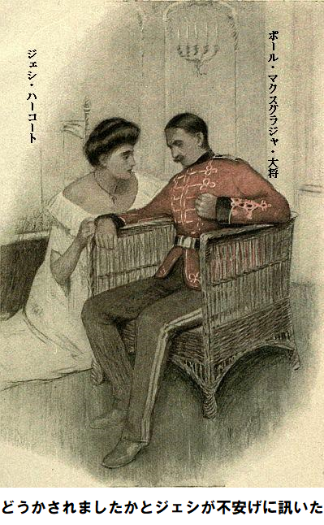
マクスグラジャ大将が痛みに耐えながら、小声で答えた。
「弾丸だ。窓に立っていたら、誰かが庭から撃った。射撃手が台地の木に隠れていたに違いない。もうちょっと左に当っていたなら、私の人生は終わっていた」
大将は冷静だが、明らかにひどい痛みに苦しんでいる。どす黒い赤いしみが制服の左側に現れた。
「肩を撃たれた。どうやら浅傷らしいが、出血して、気が遠くなりそうだ。こんな傷など、むかし戦場で一晩中、耐えたことがあるし、我慢できる。しばらく一人にしてくれ。私に構うな。ちょうど国王に薬を飲ませる時間だ。いま飲ませる人がいない。ギャロウェイお嬢さん、ここに留まって、この瓶が空になるまで国王に薬を飲ませてくれないか。私はここに座って、我慢するから。お願いだから、私のことは気にしないでくれ」
狙撃された大将の手から瓶を受け取って、ベッドの方へ行った。ジェシは自分の手が震えていないのに驚いた。唇に薬を滴下された男は眠っており、規則正しく呼吸している。半時間が過ぎると、瓶が空になった。
「薬が終わりました。次は何を？ メリヘイブン閣下をお呼びしましょうか」
マクスグラジャ大将が頑として、
「絶対に駄目だ。知らせてはいけない。邸宅が静まるまで待たねばならない。選択肢はない……。気を失いそうで、目がぐるぐる回る。この場に信頼できる男が一人いればいいんだが」
第八章 適任者
その時、ジェシに一瞬、ひらめいた。マクスグラジャ大将の腕に触れて言った。
「適任者がいます。誠実で有能な軍人です。その上、アストリア軍に仕官したいと言ってます。わたくしの親友のロナルド・ホープ大尉です」
「きみは本当に慈悲と勇気の天使だ。このような重大局面ではホープ大尉以上に信用できる人物はおらん。呼び寄せるには時間がかかるか」
ジェシがロナルドを五分で呼ぶと請け合った。あたかも、万事に疲れ、何事も気乗りしないかのように装って、階段を降りて行ったが、心臓はバクバク、ドキドキだ。ロナルドを見つけるのは難しくなかった。ジェシの合図で階段まで歩いてきた。無用な説明などせず、マクスグラジャ大将が待つ部屋に直行させた。
大将の説明が終わると、ロナルド大尉が言った。
「大将、凶悪な敵に出くわされたようですね。敵はすべてお見通しのようですが」
「敵の情報はすごい。私を消せば、より安心して動けることを知っているし、向うに寝ている惨めな男の身元もよく知っている。国王を逃がせればいいのだがなあ。ここに居ても何の役にも立たないし、女王も動けないし。国王を逃がせたらなあ」
こうマクスグラジャ大将がつぶやいた。
ジェシが質問した。
「国王がずらかったふりを、殺人軍団に思わせれば、同じことじゃありませんか。そのあと真夜中に、本当の国王を逃がせます。敵の目に、国王の逃げる姿を見せる手があれば……」
「きみの案か。なんと賢い女性なんだ。続けてくれ」
「わたくしの案はとても簡単です。すぐに一階は夕食で、人がいなくなります。おそらく庭も無人になるでしょう。晩餐会は真夜中です。衣装を国王と交換してください、大将にはちょっと窮屈でしょうけれども。そのあと、バルコニーから庭に下りてください。向うの道路に続く門へ、さも酔っぱらったかのようにして歩いてください。道路の端に馬車が何台かあります。一台に乗って、ご自分のマンションへ戻り、医者を呼んでください。おそらく敵方は別な馬車であとをつけるでしょう。誰だか知りませんが、いやきっと庭に隠れています。でもわたくしが下手人を引き留めます。あとでホープ大尉とわたくしとで、国王の脱出方法を決めます」
こんな状況下、この案なら簡単で必要十分だ。ジェシが化粧室へ消えると、衣装交換が行われた。ジェシは悲しむ間もなく考えに集中した。
ジェシにしてみれば、マルメゾン店主に問答無用で解雇されてから、いくらも経っていないのに、一世紀を生きたような気がした。一生が数分でめちゃめちゃにされた。いまや精神の極限を強いられている。ベラ・ギャロウェイお嬢様の帰りが待ち遠しい。
でも与えられた目的は達したし、長年の不安も解消した。とりわけロナルド・ホープにまた会えてうれしい。私をずっと思っていたこと、その愛が一度もぶれなかったことを知ってとても幸せだ。それを知ったことは大きな収穫だ。
化粧室の裏から口笛がして、ジェシが我に返った。衣装交換が完了し、国王は再び
「用意できた。辺りに人がいないときに」
人々が晩餐会に集まってくると、再び邸宅がだんだん賑やかになってきた。やがてジェシが危険を承知で回廊に出て、一階を覗いた。見たところ、誰もいない。
ジェシが扉の所へ行って、用事を告げ、道路へ案内すると、大将がちょっと遅れてついてきた。はたしてロナルド大尉はジェシに半ポンド金貨を持たせただろうか。ジェシは台地の木々を通る時、ちょっと青ざめ身震いした。だって、仕損じた殺し屋がいまも隠れているかもしれないもの。
ジェシが立ち止まり、振り返って見ると、マクスグラジャ大将が自分の方へやってくる。足がふらふらだ。酔っ払いに見せかける必要もない。傷のせいでそうなっている。大将が歩けるのはほとんど鉄の意思のたまもの。ジェシがやっと安堵したのはマクスグラジャ大将が
道路の端に二台の馬車が待機している。大将がそのうちの一台に転がり込むと、さっと走りだした。そのときジェシの予想どおり、別な人物が庭園の
だがそれは織り込み済み、ジェシが阻止にかかった。さっと前方へ飛び出し、同じ馬車を呼び止めた。その時初めて目撃した曲者は、自分が予想した男じゃなくて、女じゃないか。背が高く、容姿端麗、とびきりの美人だった。女が冷静に言った。
「わたしが乗ります。最初に手をつけたのはわたしです」
英語の発音はうまいが、舌足らずだとジェシが気付いた。四の五の言わず、ジェシが馬車に飛び乗って言った。
「ほかに小道が下手にあります。急ぎますから、失礼します。ハイドパーク、アルバートマンション十四番地へお願い」
ぐっと抗議をこらえた女は急いで道路を走った。御者が改めて行先を尋ねた。聞き逃したと言った。
ジェシは馬車から下りて、平然とこう言い放った。
「行く気がなくなりました。半ポンドさしあげますから、ある距離、そうねえ二キロばかり高速度で走ってください。後ろから女が追ってくるのを邪魔してくだされば、益々結構です。先頭の馬車を捕まえようとしています。さあ、扉を閉めて行きなさい」
御者がニヤリと帽子に触り、扉をバタンと閉め、あたかも乗客が急いでいるかのように走り去った。ジェシは戸口の裏に隠れ、やがてあの美人がむなしく追いかけて、さっと通り過ぎるのを眺めた。さしあたり、急場をしのいだ。アストリア王がどこに居るか誰も知らない。スパイも偽工作につられて去って行った。きっと仕損じた殺し屋も今頃行ったに違いない。
ロナルド・ホープがじりじりしながら、バルコニーの階段でジェシを待っていた。この頃になると庭に人がいなくなったので、自由に話せるようになった。
ジェシがちょっと
「大将は無事に行かれました。予想通り、敵は後をつけようとしましたが、道路に運よく二台馬車があったものですから、わたくしが二台目を確保して、逃がしましたところ、スパイはあわてて馬車をどこかに探しに行きました。ロナルド、その為にわたくしが半ポンド金貨をほしがったのですよ」
「で、スパイは、どんな野郎なんだい？」
「まったく殿方ではありません。スパイは女性で、とても素敵なご婦人でした。背が高く、魅力的で、どちらかと言えば貴族のようでした。もう一度、しっかり会うはずです」
「ところで、いまこそ全てを話してくれないか、ジェシ」
「実際、いまそういう心境ではありません。全員が晩餐会をしている時に、こんな衣装であなたと話しているのを誰かに見られたくありません。思い出してください、わたくしはベラ・ギャロウェイですし、あのチャールズ・マクスウェルが好きなことになっているのですから、チャールズの友人たちが噂を立てますよ。ですからロナルド、わたくしは晩餐会へ出席して、食事とワインを戴かねばなりません。だって、足がガタガタ震えていますから、歩き過ぎがばれます。我慢してね」
ロナルが首を曲げて、ジェシにキスをして、すべてがうまくいくようにと熱く願った。ジェシが晩餐会場へ滑り込み、自分の席へ座ると、三人の合い客がいて、温かく歓迎してくれた。
三人が誰だかさっぱり分からなかったが、相手の方はベラ・ギャロウェイをとてもよく知っているようだった。いくつか聞かれるだろうから、返事には細心の注意が必要だ。
「みなさまがた、わたくし、とてもおなかがすいておりますので、食い意地丸出しです。チキンとサラダが少々、シャンパンを一杯いただきます。夕食が終わるまでどんな質問にも答えられませんので、どうぞおしゃべりをお続けになって」
不安があったにもかかわらず、ジェシはたっぷり食べた。やがて嬉しいことに、給仕が伝言を持って来た。てっきり店員に扮したベラ・ギャロウェイお嬢様が戻ってきたかと期待した。だがベラじゃなく、管区の伝令少年が玄関でベラ・ギャロウェイを待っているという知らせにすぎなかった。あわててジェシが席をはずした。
伝令少年が自分の帽子を触りながら、
「チャリング・クロス病院の若い店員からです。ゆゆしい事故にあって、馬車に
ジェシがのけぞった。実に大きな窮地に立たされた。
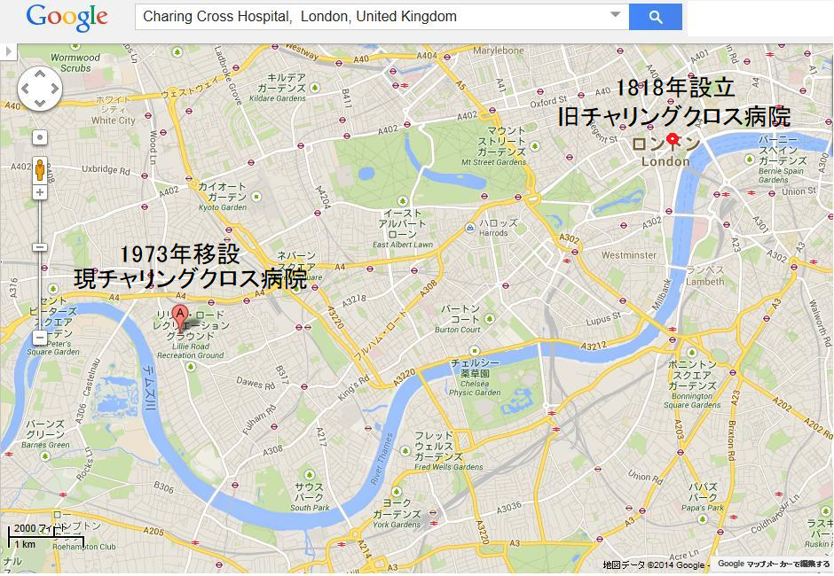
ジェシはベラの召使いの名前さえ知らない。手紙を書いて、次の指示を仰いだ方がいいと思った。やっとしたためて、メモを托し、次は何が起こるのかという表情でホールに戻った。ロナルド・ホープが待っていたので嬉しかった。
ロナルドが言った。
「顔に不安な表情が現れているよ。本物のベラ・ギャロウェイが戻って来て、本物店員のジェシ・ハーコートが無事に出発できたらこれ以上嬉しいことはないね。時機が来たら知らせてくれ、自宅にきみを送り届けて、妹のアダと三人で語り合おう」
ジェシは泣き出しそうなのをぐっとこらえて言った。
「ロナルド、そんなことは今晩出来っこありません。ちょっとした冒険どころか、恐ろしい悪夢へ向かいつつあります。もちろん、ギャロウェイお嬢様がわたくしをここに引っ張り出したとき、どうお考えなさったのか、さっぱり見当もつきません。たった今聞いたところによれば、事故に遭われて、週末までチャリング・クロス病院に入院だそうです」
「ということはそれまで仮装を演じ続けなければならないということ？」
「そういうことです、すっかり予定外です。本当のことを打ち明ければ自分だけは抜けられますが、それではギャロウェイお嬢様をひどい目に合わせてしまいます。とてもいい方だし、絶対に悪いことをされていません。誰かの為に大きな犠牲を払われています。もしわたくしが本当のことを言えば努力が無駄になります。ロナルド、最善策はどうしたらいいですか」
だが、ロナルド・ホープは何の助言もできなかった。現実は最悪の想定域を越えてしまった。両肩をすくめ、最善を祈るというばかり。今や手の打ちようがなく、ただじっとして事の成り行きを見守るだけだ。
「さあ行って、楽しもう。宴会を壊した気がする。特にメリヘイブン令夫人のような親しい友人にだ。庭で楽団音楽が聞こえないか。辺りをぶらついて、楽しく陽気に振る舞おうじゃないか」
この頃になると、晩餐会が終わり、招待客は邸宅や一階に散らばった。ジェシは寝たきりの国王を思い出した。今もあの部屋に伏している。アストリア女王とマクスグラジャ大将を案内した部屋だ。不意に思い出した。
「ロナルド、それはできません。実際わたくしは国王の守護天使なのです。ほんのけさまではボンド通りの帽子店員でしたが。信じられないけれど現実です。もし国王が正気に戻られたら……」
ロナルドが考え込んで言った。
「まったく考えなかった。これからどうするつもりだ」
「上の階に行って、国王の様子を見てきます。それからもう一つ、わたくしの頭からすっぽり抜けていたことがあります。新たな問題、マクスグラジャ大将のことです。重傷を負われ、激痛を抱えて退出されました。馬車の中で気を失われたかもしれませんし、ひょっとして亡くなられたかもしれません。ロナルド、わたくしの指示に従ってください。あなた、出入り自由でしょう。いつでも行ったり来たりしているようですから」
「半ズボンの子供のころから出入り自由だったよ、ジェシ」
「いいですね、すぐに大将のマンションに行って、治療状態を見てください。そのあと戻って来て、状況を知らせてください。お願い、すぐ行って」
ロナルドは素直に出発した。ジェシが邸内の部屋を横切った時、三人の女性が立ちはだかった。他人だと思い、素通りしそうになったが、親しそうにすり寄ってきたので、ベラ・ギャロウェイの友達だと分かった。
うちの一人が陽気に話しかけてきた。
「今晩どうなさいましたの。しかめ面でございますわよ。トラブルの原因はトミー、それともラリーでございますの？」
ジェシは気取って、上機嫌に笑いながら、その間、トミーとラリーは誰なんだろうと考えた。同じことをまた
「みんな元気よ、今晩見なかったの？」
と
「こんばんのことなのに。いつですって？ テーブルの上で砂糖を狙ってたでしょ。まったくラリーには困ります。でもブライトンではそんなことしませんでした、ライオネルがいたから」
「そうよね、トミーの話では……」
ジェシがしかたなく言った。
もう一人の別な女性が笑った。
「ほほほ、トミーの話ですって。まあ、ペットのことになるとメロメロね。猫はわがままし放題ですけど、それに比べりゃ犬とか馬は……」
ジェシは相手の女性を抱きしめたい気持ちになった。だって無邪気に窮地から救ってくれたんだから。明らかにトミーとラリーはギャロウェイお嬢様のペットだ。問題のライオネルは背の高い方の女のペットで、きっと青い眼の猫だろう。その猫がたぶんブライトンの観劇でいなくなったのだろう。会話は滑稽極まりないが、余りにも話題が飛ぶので、次第にジェシの神経に触り始め、こう返した。
「よろしければライオネルをすぐにでも見に行きたいですね。向うにいらっしゃるお方はロングマーシュ令嬢じゃございませんか。今晩ずっと探していました」
こうしてジェシは何とか邸内へ入り込めた。あちこちからだれかれとなく笑いかけ、話しかけてくるので、受け流したり、冷やかしたり、からかったりすることは難しいことが分かった。ベラ・ギャロウェイなら簡単だったろう。ジェシは全くちんぷんかんぷんだった。
階段をのぼりながら、独り言を言った。
「髪の毛が真っ白になりそうだ。神経痛がぶり返したと、でっちあげて土曜日までベッドで寝ていなきゃ。ベラは社交的な女性だから、きっといろんな行事に出席するはずだ。それなのに明日の予定すら知らないのだから」
週末までこんな重荷を背負い続けるかと、考えるだにぞっとする。
ジェシは国王が寝ている部屋にそっと忍び込んだ。とても異様、マクスグラジャ大将の軍服を着ているが、ちっとも支配者に見えない。見る限り、眠りこけている。差し当たり、死ぬ心配はない。しかしアストリア国王には常に泥酔がついて回る。
当分、この部屋に居ればとにかく危険はない。それにいつでもロナルド・ホープを当てにできる。皆がいなくなった時、すぐじゃなさそうだが、国王を邸内からこっそり運び出せるだろう。アストリア女王は急いで出かけられたが、きっと誰かの指示だろう。ベッドの国王が寝返りを打って、何か寝言をつぶやいた。
「誰にも知らせるな。チャールストン通り十五番地にいる。いつもそうせい。もっとよこせ。もう一本ボトルをあけろ」
つぶやきがしりすぼみになり、再び深い眠りに落ちた。ジェシはこっそり抜けて鍵をかけた。
下のホールを覗くと、招待客が部屋から庭園へ出たり入ったりしている。家具の後ろから見えた背の高い、威厳のある姿、明かりが見事な髪に映え、ダイヤモンド・ティアラがキラキラ輝いている。ジェシの心臓はドキドキだ。必要な助太刀が眼の前に現れたように感じた。
「ありがたい。女王が戻られた。何をつかまれたのだろうか」
第九章 ポンゴ
アストリア女王が戻られた。全然困っているようには見えない。メリヘイブン令夫人が女王の
「戻る羽目になりました。訪ね人を探しておりました。ノートン公爵夫人の所で会えるとのことでしたが、既に呼び出されて不在でした。急な用事でチャリング・クロス病院へ行かれました。そのあとで、訪ね人はここへ確実にいらっしゃるそうです。バーニ医師を見かけましたか」
メリヘイブン令夫人が応えて、かの有名な医師は見えていませんが、今夜中に私邸に伺うと確かに約束されましたという。バーニ医師は地位や、多忙にもかかわらず、社会的な約束を守ることに定評があり、確実に来宅されるはずだ。
女王が何か安心されたようにジェシには思えた。決して笑みを絶やされないけれど、目に猛烈な喜びがふっと現れた。顔をおあげになり、ジェシを見られた。花束をパッとおあげになり、さっと合図を送られた。それっきりだった。
ただちにジェシは女王が話したがっておられることを悟った。そのうち機会がくる。というのもメリヘイブン令夫人が呼ばれて立ち去り、尊大な老外交官を女王にあてがわれたからだ。老外交官は、レモネードを取りに行かされ、簡単に追い払われて、そのあと花束を再び上げられたので、さっと女王の横に滑り込んだ。
「経過を全て話しなさい。わたくしは呼び出されて行かねばなりませんでした。使用人と同じ国民のいいなりなのです」
女王は笑みを決して絶やさないものの、ほとんど命令調で言われた。おそらく、たわいもない話をされていたのだろう。
「妃殿下は何か見聞きなさらなかったですか」
とジェシが尋ねた。
「話しなさいと言ったでしょう。ごめんね、
「現段階までをお話します。不注意にも、上階のブラインドを下ろしていなかったものですから、警告しようと寝室へ行きました。マクスグラジャ大将が小瓶から国王に滴下されておられました」
こうジェシが説明した。
「そうですか。全部飲ませましたか。ほんとうにごめんなさいね、うるさく
「一滴ずつ全部でございます。最後の一滴まで処方致しました。その理由はマクスグラジャ大将が負傷されたからでございます。ブラインドが上がっていたため、何者かが庭の端にある台地から、大将を撃ったのでございます」
「まあ、そうですか。一番恐れていたことです。大将の傷は深いのですか」
「肩を撃たれました。ほんのかすり傷だとおっしゃいましたが、ひどく傷むようでございました。ですから直ちにここを退去なさる必要がありました。わたくしの提案で国王と衣装を交換して、なんとか邸外へ出したところ、気分が悪そうにして、よろよろ庭園の道を行かれました」
「ベラ、あなたは勇敢で、本当の友人です、よくやってくれました。でも後をつけられなかったですか」
「わたくしもそう思いました。道路に馬車が二台おりましたので、そのうちの一台に、ニセの国王をのせて、御者に大将のマンションを告げました。予想通り、誰かが現れて、もう一台を使おうとしましたが、わたくしが敵より一瞬早かったので、御者に金をつかませて、客を乗せているふりを装って逃がし、スパイの追跡を防止致しました」
「すばらしい、わたくしとアストリア国への奉仕は決して忘れません。追跡者はどんな男でしたか」
「妃殿下、男ではございません。女です。背が高く、金髪で、美人でした。もう一回見たら、
女王は満足されたばかりでなく、スパイが女だと聞いてもちっとも驚かれなかった。
「大将の事故は残念でしたね。これであなたにも、守るべきものがお分かりでしょう。大至急、大将のマンションにうかがわなくてはなりません。重症かもしれません」
「手配済みでございます。即座に誰かを選ぶ必要がございました。知り合いのロナルド・ホープ大尉に情報を教えて、現在大将のマンションへ急行しております。ホープ大尉はマクスグラジャ大将の知り合いでもあり、アストリア軍に仕官できるか案じております。おそらく妃殿下もご存じではないかと思います」
女王がほほ笑まれてうなずかれた。明らかにロナルドの名前はご存じだ。それから国王の容態を聞かれた。ジェシが大将の指示で行った処置を告げると、女王のお顔が
「危機が終わればこれからの行動は分かります。ところで、皆さん方がわたくしとの会話を待っております。あなたとばかり話していると不審に思われます。わたくしには上流階級の特権がありますからね。お分かりでしょうけど」
ジェシが後退して、当分用向きは無いなと感じた。当てもなく庭にふらりと舞い込んだ。テラスの裏側はさんざめきと笑い声に満ちていた。道路に続く子扉が開いており、向うからシューシューという自動車の音がする。
「ベラ、楽しみにきたの？ 私達ポンゴの自動車で遊んでいたのよ。あなたが来ればポンゴは誰にも見向きしないわね」
ジェシの全然知らない女が話しかけてきた。
ポンゴとは誰なのだろう、ギャロウェイお嬢様との間に親密なお付き合いがあったのかなあといぶかった。でもあり得ないなあ、だってベラはそんな女性じゃないもの、あんな突飛なあだ名の若者と親しくなるなんて。
伊達男が自動車を止めて、のうのうと言った。
「慈善事業へ行こう。ベラお嬢さん乗って。ピカデリーまで行って、一シリング寄付しよう。尋ね犬協会だよ」
ジェシの見るところ、金をひけらかすボンド通りの成金ボンボンだ。
ジェシがすぐ申し出を受けた。というのも、素晴らしい突飛な計画が頭に浮かんだからだ。乗ると、自動車がさっと走り、誰も乗りこむ暇もなかった。
「ピカデリーまでじゃなくて、道路の端まで行って、戻って来てください。ポンゴ、今は行けないの。でもすぐ戻ってきますから、人払いして、チャリング・クロス病院まで送ってくれない？ 賭けの為ですからね」
ポンゴは歯を見せて喜んだが、ジェシは本名などさっぱり知らない。ポンゴはバカげたことをすればするほど、ビビッとくる特異な性格だ。おそらく必要なら一時間でも道の端に自動車を置いてギャロウェイ嬢を待つだろう。ジェシが愛称のポンゴという名前を呼んだり、流し眼をしたことから、ポンゴはすっかり参った。
「仰せの通りに。通りが静まり、その他もろもろ片付けて、チャリング・クロスまでお連れして、戻ってきます。そのうちジャック・ロビンソンと言ってくれてもいいじゃありませんか。ゆっくり旅を楽しみたいものじゃありませんか」
ジェシは笑顔を返し、ポンゴと取りとめのないおしゃべりをした。バカなまねや、破廉恥なことをしようとしているけれど、ほかに方法がなかった。
再び邸内に戻ってみると、
小男の野太い声が響き渡っていたが時折、女王からの静かな質問に対して小声になった。やがて医師がジェシの方向にやってきた。おそらくベラ・ギャロウェイ嬢のことはよく知っているだろうと思って、腹をくくり、家族の一員のようにして近づいた。
しかしその前に、医師の注意を引いたのは一人の閣僚だった。ひと言ふた言、自分の健康のことで相談したので、ジェシの番はちょっと遅れた。そのあともまた、メリヘイブン令夫人が現れて、出会いが伸びた。
「メリヘイブン夫人、本当に大変遅れて申しわけありませんでした。ちょっと興味深いことがチャリング・クロス病院でありまして、めったにない手術に、一刻の猶予もなかったものですから。でも出来るだけ急いで参りました。
「おや、姪がどうしたのですか。わたくしの姪が」
メリヘイブン令夫人が問い詰めた。
先生も令夫人と同じくらい驚いて、見合った。血色の良い顔に深刻な表情があった。
「ベラ・ギャロウェイお嬢さんが馬車に
メリヘイブン令夫人が叫んだ。
「バーニ先生、おっしゃることが分かりません」
ジェシはそっと逃げて、用心してホールの大きなヤシの影に隠れた。さあ、何が起こるか。
第十章 宮廷の味方
ジェシが一番気になったのは恐怖ではなく、むしろ抗しがたい強烈な興味に突き動かされたことだ。ヤシの影にたたずみ、次に何が起こるか、気もそぞろ。優美な葉っぱの隙間から、メリヘイブン令夫人の困った顔が見えたような……。
「ですが先生、先生のおっしゃることはばかげています。ベラは五分前に見ております。もし事故にあって、チャリング・クロス病院に運ばれたとしたら、当然……。だからあり得ません」
「だが現実は確かな気がします。私が急行したのは事実ですし、当該の若い女性はとにかく意識が無かったし、ほぼ昏睡状態でした。奥さま、私はベラの誕生にも立ち会ったし、何十年もよく知っていますから……」
ジェシがゆっくりと姿を現わした。これ以上、捨て置けない。偶然に先生は何かをつかんでしまった。出来るなら口を封じなければならない。笑みを浮かべて近づき、片手を差し伸べた。
「先生、遅かったですね。おしゃべりを楽しみに待っておりました」
バーニ医師が生涯で一度、本当に驚いた。夢見るようにジェシを眺めた。幸いにもメリヘイブン令夫人は顔を上げず、表情に気付かなかった。
「それごらん、先生は不信心なのですから。ベラが事故にあったようには見えませんけど」
バーニ医師がさっと近寄り、ジェシの差し出した手を取った。両眼をらんらんと輝かせながら、ジェシの指をさわった。
「大間違いはしてないようですね。誓って、と言いたいところですが、あなたはチャリング・クロス病院の病室でほぼ昏睡状態で横たわっていましたよ。全身打撲と足首のねん挫です。自称ハーコートと言ったそうですが、住所を言えなかったとか。近頃の若い女性が妙ないたずらをするのは……」
「ですが、先生はわたくしをよくご存じでしょう」
こうジェシは言わざるを得ない。
「確信はありませんがね。でも、とてもあなたに似ていました。さあ、サンドイッチと赤ワインを飲んで、昔話をしましょう」
とバーニ先生がニタニタ。
ジェシが嬉しいわと喜びを表わしたが、内心は話題を変えてくれと祈っていた。先生が決して納得してないことは重々承知だ。見るところ、先生は世間でも勘の鋭い、賢い男だと思われるし、巧みに話を聞き出そうとしている。ひとたび昔話に引き込まれたら、きっとばれるに違いない。
だがバーニ先生はサンドイッチをほおばり、赤ワインや水をすすり、昔話に触れない。ジェシを二〜三回ぼんやり眺めた。ジェシは何かを喋り、差し障りのない話をしようと思って訊いた。
「せんせい、何を考えていらっしゃるんですか」
「考えていたのはね、きみは私が会った女優の中で最高だということですよ。あなたがいないと舞台はつまらんでしょうな」
驚くべき返事が返ってきた。
ジェシの気持ちがぐらっときた。この言葉には間違いなく重要な意味がある。先生は自身の見方を確信している。ついにばれてしまった。それでも顔にはやさしい表情があり、ちっとも詐欺師を相手にしている風じゃない。
「どういうことですの、わたくし、少しもわかりません」
「ああ、そうでしょうとも。でも意味はよく分かるでしょう。あなたが誰だか知りませんが、ベラ・ギャロウェイじゃないことは確かです。いいですか、あなたを単なる悪趣味な詐欺師だと責めることはしません。逆に、信用しましょう」
「そうおっしゃってくださってとてもありがとうございます。いまの先生のお考えは……」
「悪いことをしようと、ここに来たわけじゃないでしょう。あなたのような
「実際、私はなんらやましくありません。ギャロウェイお嬢様を見たときから、そんなことをする下層階級の女性でないと確信しました。でも、不運な事故に遭われて……。バーニ先生、私を密告しないでしょうね」
「ああ、しないよ。確かにわしは老いぼれの骨折り損の大馬鹿ものになってしまうがね。運がよかったのは、私のような頭脳明晰な男に、真実を暴かれてしまったことだ。さあ、まずきみは何者か、ここで何をしているのか言いなさい。包み隠さずに」
ジェシは事態が最悪にならなかったことにすっかり感謝した。
「全てお話します。私の名前はジェシ・ハーコートと申します。何時間か前まではボンド通りの店員でした」
「とても不思議な話のようですね。ボンド通りの店員と、生まれながら高貴なレディ。きみの家系はどれに属しますか」
「ケント・ハーコート家です。父は王立ゴールウェイ部隊のハーコート大佐でした」
「それは本当ですか。きみのお父さんのことは何年も前からよく知っていますよ。長い間、軍医をしていましたからね。きみのお父さんは途方もない方でした……いつも。で、苦労されたのですか」
「私たち姉妹は無一文になりました。二人とも何もできませんでした。ですから私がボンド通りの店員になったのです。解雇されたのは顧客の息子といちゃついたと思われたからです。下劣なゲス男がキスを迫ったと猛烈に抗議しましたが、無駄でした。その文句をつけた顧客はマザロフ大公夫人で……」
バーニ先生の目に奇妙な光がギラリ輝いた。
「息子が仕掛けたのですね。お嬢さん、よく打ち明けてくれました。さあ、続けて、全部話して下さい」
ベラ・ギャロウェイに会った時から現在までを、長々とジェシが語った。そして王室の不思議な話も隠さなかった。そればかりか、先生が興味を持っていることも見逃さなかった。
「私が聞いた中でも驚くべき話ですね。幅広い業務に携わる医者として、いままで奇妙な話はいくつか耳にしてきました。今に見通しがはっきりするはずです。それにきみが知らないことも知っています。つまりベラは愛する人の為にめちゃくちゃなことをしています。きみがここに居る理由がはっきりしました。そうか、そうか、誤解するところでした。でも秘密は守りますよ」
「本当にありがとうございます。やらねばならないことがあります。せんせい、私は自分の重要な仕事内容を知らないのです、それが分からないと、ギャロウェイお嬢様がお帰りになるまで、現在の役目を果たすことができません。お嬢様に二〜三
バーニ先生が先を思いやった。
「よくわかりました。あなたは頭がよくて勇気もあります。でもどうやって気づかれずに病院へ行くつもりですか」
ジェシが笑った。今や勇気リンリンだ。
「他人を利用します。ポンゴという紳士を使うつもりです。ベラ・ギャロウェイお嬢様が好きなようです。暴力をふるう男のようには見えません」
「ジョージ・ラッセルズ閣下ですよ。ポンゴは相当いい奴ですが、上流階級ではまぬけを装っています。結婚して落ち追いたら、ガラッと変わるでしょうけど。どうやって協力を取り付けるつもりですか」
ジェシが説明した。邸宅裏道路に待機させている自動車で、
「チャリング・クロス病院まで送らせます。きっとベラ・ギャロウェイお嬢様は目覚めていらっしゃるでしょう。ほんの数分あれば用は済みます。そうすれば気づかれずに戻れます。お願いします」
「採否を決断しなければなりませんな。私の地位と時機を考えれば、窮地ですな。書斎へ行って許可証を書きましょう。医師会がこれを知ったら何と言うやら……」
こうしてバーニ先生はブツブツ言いながら大股で出て行った。だが目には輝きがあった。
第十一章 庭園で
ジェシは庭に出て、テラスの裏側へ回った。悪ふざけの自動車は依然として路上に待機していた。夜も遅かったので、辺りに人はいない。ジョージ閣下はジェシに車に乗ってくれとか、どこへ行っていたのかとうるさく
「十五分以内に戻ります。それまで出発できません」
今までの所すべて順調だ。バーニ先生が待っている部屋へ急いで戻った。先生がノート半分の大きさの紙を手にして言った。
「許可証です。これを病院の者に見せさえすれば、簡単ですよ。はい、これでどうですか」
ホールがざわめいている。一人のフランス人侍女が二ヶ国語をごっちゃにまくしたてている。侍女の背後に、給仕が私服刑事を案内して、その後ろに警官の姿が続き、頭上のヘルメットが招待客から突出している。
バーニ医師が何事かと問いかけると、招待客の一人が答えた。
「誰かがサーンス伯爵夫人を呼んでいます。聞くところによりますと、伯爵夫人宅で盗みがあり、侍女が何か知っているようです。じきに分かりますよ。さあ、伯爵夫人が出てきました」
サーンス伯爵夫人が笑顔でホールにお出まし、黄色のサテンをお召しで、驚くほど堂々とした容姿だ。ジェシは伯爵夫人の刺すような黒い瞳を見逃さなかった。
ジェシがバーニ先生にヒソヒソ、
「あの方は？ あんな黒眼を見たことがありますか」
「さあ。売り出し中の人ですね。経歴などは謎に包まれていますが、大金持ちで、最高級の接待をなさり、どこへでも出没されます。とあるロシア大公の卑しい妻だと聞いております」
と先生が答えた。
とにかく指の先までレディだと認めざるを得ない。伯爵夫人が気さくな笑顔で仲間にはいると、たちまち皆の注目を引きつけた。例の侍女は恐れをなして外国語調の話を止めて、固まった。
伯爵夫人が派手に声をはり上げた。
「さあ、この事件を解決しましょう。私の邸宅で盗難がありました。盗まれた場所はどこですか、何が盗まれたのですか」
フランス侍女が言った。
「奥さまの部屋の化粧室でございます。夜の準備を完璧にしようと、上がって行ったら、そこに泥棒がいたのです」
「アネット、男の顔を見たらわかりますか」
こう伯爵夫人が尋ねた。
「すみません、男じゃなく女です。化粧台の引き出しを開けていました。手に書類を持っていました。不意に出くわしたものですから、脅されて、首を絞められ、半分気を失いました。正気が戻る前に、女は階段を駆けおり、邸宅から出て行きました。玄関係りはてっきり奥さまのお友達と思って、引き止めませんでした。そのあとに私は気がついたようで、それから……」
伯爵夫人が笑顔で軽蔑して言った。
「それでヒステリーを起したのですか。書類を盗まれさえしなければ……」
「ですが、奥さま、書類はなくなっていました。左側の引き出しは空です」
ジェシは伯爵夫人の黒眼がギラリと光り、顔が怒ってキッとこわばるのを見た。それもほんの一瞬で、再び笑顔に戻った。しかしすばやい洞察で、ジェシは見抜いていた。
「もう一回、その女の顔を見たらわかるでしょう。言いなさい、このばかもの」
侍女の目線が、ふとジェシに釘づけになった。ジェシの顔が小柄なフランス人侍女を引きつけたようだ。数分経ってから、侍女は言葉を探し当て、考えを言った。
人差指をジェシに向け、あたかも容疑者を見つけたように、
「後ろです、後ろに居ます。あの衣装じゃなく、地味な黒服でした。あの女が書類を盗みました。今もあの女に喉を閉められた感触があります。あれが犯人です、ほら」
「まあ、ばからしい。いつ盗まれたのですか」
「ほんの二〇分前でございます。三〇分より長くありません。あの泥棒に注意してください」
「注意するのは大バカ者のお前です。ギャロウェイお嬢さんはこの一時間、数分間を除いて、わたしから見えておりました。捜査は警察にやらせなさい。それからあのバカ者を家に帰して、頭に氷でも乗せなさい……。わたしは出かけます。全く困りものです。重要書類なのに。誰か、馬車を呼びなさい」
やがて伯爵夫人が陽気な笑みを浮かべて、退出した。だが、ジェシは同夫人の射るようなまなざしと、顔の表情を忘れなかった。バーニ先生にキッと向き直った。
「とても変ですね、どういうことかお分かりになりますか」
バーニ先生が冷静に答えた。
「よくわかりますよ。重要な鍵も多少握っています。さしずめ、あの伯爵夫人はスパイ、策略家ですな。伯爵夫人がある書類を手に入れて、それを誰かがひどく欲しがっています。
「でもあの侍女のアネットはなぜわたくしを非難したのですか」
「あなたに泥棒の面影があるからですよ。ただ黒服を着ていましたがね。侍女は夢など見ていません。思った以上の知恵があります。大間違いしなければ、書類を盗んだのはベラ・ギャロウェイにほかなりませんぞ」
論法が余りにも見事で説得力があったので、ジェシは黙って、たたずむばかり。フランス侍女がバーニ医師に重要な手掛かりを与えたけど、ほかの人には分からなかった。最初ベラは変装していなかったが、こんな破廉恥なことをやったのは愛する男の為、いや、ともかくいとおしい男のためだ。これは大胆で勇気の要ることであり、ジェシは感銘した。心底、ベラが書類を奪ってくれと願った。
バーニ医師がジェシの心を読んだかのように言った。
「ベラ・ギャロウェイが成功したかどうかはすぐ分かるでしょう。ベラが犯人だということに一点の疑問もない。ベラがなぜこんなことをしたかはおいおい説明します。あなたは厚めの黒い外套を手に入れて、衣装を隠しなさい。ロンドンの街を通る時は顔も隠さねば」
ジェシが困って尋ねた。
「その外套はどこで手に入れられますか」
バーニ先生が冷静に言った。
「時間がありません。図太い行動が必要です。玄関に外套が一杯積んでありますから、どれでも持っていきなさい。その時、持ち主が文句を言ったら、間違いましたと言いなさい」
ジェシは覚悟を決めた。厚めの黒外套と
ロンドンも静まりつつあったので、最新版新聞の売り子の叫び声が、夜のしじまに、ここからでもはっきり聞こえた。バーニ先生はジェシの腕に手を置き、落ち着き払って、堂々としている。売り子の叫び声がだんだん近づいてきた。バーニ先生がヒソヒソ。
「よく聞いて、何と言っているか教えてくれ」
連れのバーニ先生の態度が急に変ったので、ジェシが全霊を耳に集中した。
『号外、陸軍省重大事件、ランシング大尉自殺、チャールズ・マクスウェル氏逃亡、公文書盗難、号外』
「聞こえました。でも全然わけがわかりません」
「ああ、陸軍省で不祥事がありましてね。そこの将校が一人だったか、二人だったか、外国政府へ情報を売ったかどで告訴されています。噂では何でもアストリア関連だそうです。今晩遅くランシング大尉がクラブの喫煙室で拳銃自殺しました。同僚たちがチャリング・クロス病院へ運びこみ、たまたま私はちょっと遅れてクラブへ顔を出したものだから、治療
ジェシはうなずいたものの、まだ事の次第が完全に理解できなかった。陸軍省の事件と、ベラ・ギャロウェイお嬢様との関係、およびベラの破れかぶれの危険な仕業と、どんな関係があるのか。ジェシはバーニ先生を
「さあ、行きましょう。ポンゴがあなたを待っていると思いますよ。その外套は脇の下に隠して、見られないようにしなさい。戻ってきたらすぐ私の所へ寄って、どうなったか正確に知らせてください。私は恥ずべきことをしている。メリヘイブン令夫人の手前、こんなことは放置すべきだが、上流社会の定例宴会そっちのけの事件ですから。お嬢さん、新聞売り子少年が叫んでいるチャールズ・マクスウェルと言う人が誰かは知らないでしょう。あなたにはなじみがないでしょう。さあ、とにかく急ぎましょう」
「ええ、はい。その名前はマザロフ王子が言いました。バーニ先生、その男性はベラ・ギャロウェイが夢中になっている方、いや事実上婚約している人です。なんて恐ろしいのでしょう」
バーニ先生が淡々と言った。
「ええ、だんだん込み入ってきますよ。さあ、自動車の方へ」
第十二章 不肖の息子
バーニ医師は認めたくないかもしれないが、本件を一緒に探るのも決して悪い気はしない。思うに医者のようにすべてを知る立場なら、役立つこと請け合いだ。現にどれほどよく通じているか、ジェシが知ったら、驚くだろう。というのも、この男は、あまた政治屋や政治家がいる中で、ここ一番の腕利きだからだ。
こうしてバーニ医師は邸宅に何食わぬ顔で戻り、サロンへはいり、誰かを探すふりをした。利発な顔が引き締まり、警戒している。
やっと目当ての男が見つかった。背が高く、灰色髪の男で、どこかグレイハウンド犬に似ている。ある意味グレイハウンド犬かもしれない。というのも、この男は何年も女王の侍従を務めているからだ。
「君を探しとった。レックミア侍従、ちょっと話がある。庭へ出て、煙草でも吸おうか」
「バーニ先生との会話はいつも楽しいですね。行きましょう。ところで、どんなご用件ですか」
「サーンス伯爵夫人のことだ。知ってるだろう」
「知っております。コノート・クレセントの大邸宅に住んでいます。もっとも自分のものじゃありませんがね。着飾って、豪華な宴会を催し、最先端をゆかれる。威厳のある女性で、どこへでも出掛ける。でも誰も素性は知りません」
「レックミア侍従、その点に関して情報を少しもらいたい」
「ええ、バーニ先生、事実を教えましょう。ロンドンに外国人居留区はありませんから、記録もありません。ですから私が外務省や、警視庁に多くの情報を提供してきました。ソール・マークスという名前を聞いたことがありますか、有名な国際スパイ、つまりフランスとドイツの戦争を回避させた人物ですよ」
「もちろん、マークスは聞いたことがある。皆知っている。でもそれと何の関係があるのか」
「ええ、あの伯爵夫人のことを教えてくれたのです。生れはワルシャワ、旅芸人の一座です。やがて結婚したのが、パリで札付きのならず者、こいつが、自分の妻をゲームのさくらに使ったのです。奴は女房を散々こき使い、搾取生活のすべてを教え、覚えさせたのです。最後にとても奇妙な状態で死んでいます。我々の間では、マークスが言うに、女房に殺されたとのことです。その後、マルコム・シン・ダイヤモンド事件ではかろうじて懲役刑を逃れています。それから長い間、音沙汰はなかったのですが、ついにベラ・オーフェという有名な無政府主義弁士となって舞い戻ってきました。ロシアから追放されますが、これは目くらましで、いままでロシア警察が雇った中で最高に頭の切れるスパイなのです。女の名前は現在進行中の大作戦にちなんでつけられています。おそらく金は使いきれないほどでしょう。一般にそのような女性なら、出入り業者などに金は払わないのですが、家政請求書は毎週きっちり支払われているという事実をつかんでおります」
「ほんとうか」
「先生、絶対真実です。マークスは決して間違いません。どうして
「単なる情報収集だよ。おそらくもう少しあとで、伯爵夫人の邪魔をすることになるかもしれないな。君は外務省の事件を聞いたことがあるか」
「たった今聞きました。実際ここへ来たのは、メリヘイブン閣下がその件で何かおっしゃらないか伺うためです。新聞がどうやってこの情報を掴んだかは謎です。でも、名家のディック・ランシング大尉が自分のクラブで自殺するなんて信じられませんし、それに……」
「レックミア侍従、本当だよ。私は直後クラブに行ったし、チャリング・クロス病院へもついて行ったんだが、手遅れだった。新聞記事は真実だ。もし大間違いしなければ、新聞の驚くべき当該記事が役立つはずだ。メリヘイブン閣下にひとつ助言しに行こう」
「小生も閣下を探しておりました。でもアストリア大使が真っ先にこの一時間、話しこんでおられます」
「そうか、ずいぶん長いな。私の判断では、重要書類が外務省から盗まれ、既に、とある将校によって敵に売り飛ばされていると見た。表向き、嫌疑は哀れなランシング大尉にかかっておるが、絶対そうだとは言い切れない。書類がアストリア関連で、もしロシアがこのことを嗅ぎつけたら、もう我々は出し抜かれている。さてここで、今晩起こった小事件を君に教えてやろう。サーンス伯爵夫人の邸宅で盗難があって、書類だけ盗っていった。泥棒は女で、伯爵夫人邸へ行ったのは明らかにその書類を盗むためだ。以下は単なる私の推量だが、私の感触では確実に、この書類は外務省の不祥事と関係がある。原因を突き止めれば、今晩イブニング・マーキュリー新聞が打った記事は、伯爵夫人がそそのかしたことが分かるはずだ。君は当該新聞の編集長について何か知らないか」
「奴の名前はハント、アメリカ人です。実をいいますと、マーキュリー新聞はアメリカの新聞でして、英国新聞界を牛耳ろうともくろんでいます。奴らのうぬぼれはご存知でしょう。小生は社交界で何度もハントに会っています」
「サーンス伯爵夫人邸でハントに会ったことは？」
レックミア侍従が質問を引き取って答えた。思い起こせば、当該邸で二回ハントに会っている。それほど重要じゃない、というのも伯爵夫人の晩餐会にはあらゆる職業や身分の人々が来るからだ。でもバーニ医師の見解は異なる。
「いずれにせよ、私の推測によく合っている。今晩のマーキュリー新聞特ダネ記事と、伯爵夫人との間に、接点を見つけられなかったら驚くところだ。このハントという男に会うことにしよう。おい、どうした？」
息を切らした召使いがバーニ医師の前に立ちすくみ、口ごもって何事か言うことに、メリヘイブン閣下があなたを探しに大急ぎで召使いをよこした
書斎扉は鍵がかかっていたが、バーニ医師が名前をささやくとすぐ開いた。夜会服を着た白髪の男が大きな肘掛椅子に意識不明で座っている。わきにメリヘイブン閣下が立ち、不安そうに眺め、おどおどしており、一方ロナルド・ホープ大尉が、椅子に座る
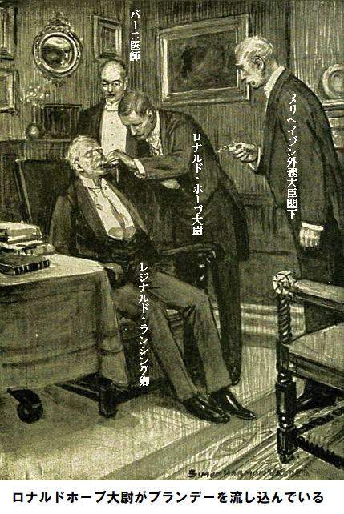
メリヘイブン閣下が震えて言った。
「ありがたい、バーニ先生、来てくださいましたか。哀れな老レジー・ランシング卿だよ。ホープ大尉の腕につかまって、どうにかここまで来て意識を失った。なにか息子が自殺したとか、書類が無くなったとか、くだらないことを言うておった。どういうことですか」
バーニ医師は忙しくて答える暇がない。レジナルド卿の
「床に寝かしてください。外見ほど悪くないですね。興奮しすぎたためか、そんなたぐいの発作です。ペンとインクと紙をください」
バーニ医師が紙にそそくさと処方を書きつけ、薬剤師の所まで行ってすぐ調合させるように指示した。薬が処方されるまで何もすることはない。半時間待っていると、召使いが戻ってきた。意識不明の口に薬を含ませると、しばらくして再び目が開いた。顔面蒼白で、ガタガタ身震いしており、言葉を発するのも難しそうだ。
「メリヘイブン閣下、不名誉だ、ひどい不名誉だ。私の息子があんな罪を犯すなんて。信じられない。全くの衝撃だ。最新版のマーキュリー新聞記事だ。すぐ息子を探しに行ったんだが、すでに報いを受けていた。メリヘイブン閣下、拳銃自殺、拳銃自殺……」
老人は弱々しく、最後の単語を繰り返した。メリヘイブン閣下は同情しきりだが、困惑するばかり。周りを見て、両肩をすくめて言った。
「妄想ですかなあ。アストリアなんて言わないでくれよ……」
メリヘイブン閣下がパタと口を閉じた。しゃべり過ぎたと気づいたからだ。バーニ医師が急いで説明すると、メリヘイブン閣下が怖れるやら、驚くやら。おそらく閣下は初めて聞くのだろう。ランシング大尉が拳銃自殺したのなら、十分ありうることだ。
「そりゃあ大変。恐ろしいことだ。それに災難がここで起こったかもしれないなんて。すぐアストリア王に会いに行かなくては。夜も遅いし、どこを探せばいいやら、国王は……」
こうメリヘイブン閣下が叫んだ。
閣下の話が途切れると、ロナルド・ホープ大尉が話の糸口を開いた。
「閣下、国王に会えます、国王はすぐそこにおられます」
第十三章 近頃の新聞記者
老外交官メリヘイブン閣下がロナルド・ホープ大尉を疑わしそうに冷徹に見た。若者にとって、閣僚は近寄りがたい人物であり、それも外務大臣となればなおさらだ。バーニ医師がメリヘイブン閣下の心中を
「お願いですから、そう堅苦しくしないでください。非常事態です。ある重要な書類が外務省から紛失しました。ランシング大尉と、チャールズ・マクスウェル氏が秘密を売り渡したとされます。売り子が通りでそう叫んでいたから、今頃招待客のほとんどが知ったでしょう。当該書類は既に売却されたか、敵方に渡っています。クズ新聞を売るためのデマじゃないですよ」
メリヘイブン閣下が口を開いた。
「君の言う書類は午後七時、私の手元にあった。目を通し、大臣室で余白に注釈を入れたのが夕食会の直前だった……」
「そのあと、金庫に入れて鍵をかけましたか」
とバーニ医師が尋ねた。
「いいや、大臣室に金庫はない。書類はランシング大尉とマクスウェル氏に渡し、しっかり保管するように念を押した。それから自宅へ戻った。その間ロンドンで事件が起こり、私が知らなかったと言うのか」
バーニ医師が冷静に言った。
「そのようですね。一晩中、外出されなかったので知るわけないです。招待客の誰も面会できませんでした。夕食後数人の大使と部屋にこもり切りでしたから」
メリヘイブン閣下が
「まったくその通り。だが、どうなんだ。まさか、書類の中身が暴露されるんじゃないだろうね」
「ないでしょう。レジナルド卿もあの記事を読まれましたね。どう書いてありましたか」
とバーニ医師。
肘掛椅子で
レジナルド卿が片手で額を触りながら言った。
「今思い出しておる。そう言えば詳細は書いてなかった。記事にあったのは、ある重要な書類が外務省から盗まれて、英国の敵に渡った。マーキュリー紙の編集長はこれを裏付ける現場に居たと思われるが、犯人像は推測に過ぎん。紛失書類の内容についてはマーキュリー新聞のあしたの朝刊に出ると約束しておる。以上で記事は終わり、下段に私の息子の自殺記事が短く載っていた。事件をはっきり確認したように書いてあるが、息子は同新聞の夜九時版を見た後で、拳銃自殺したと示唆しておる。盗難の第一報だ」
ロナルド・ホープ大尉がきっぱり言った。
「これには何らかの陰謀か、疑惑があります。売り子の呼び声を聞いたのはほんの二〇分前ですよ。すぐに馬車でマクスウェルの部屋へ駆けつけたのですが、パリへあわてて行った後でした。置き手紙もありません。部下も同行しておりません、決して部下なしでは旅しないのに」
メリヘイブン閣下がすぐさま継いだ。
「逃げたのですな。絶対確実だ。面喰らうのは、マーキュリー新聞の情報収集が素早いことだ」
バーニ医師が言葉を挟んだ。
「そこが突っ込みどころですよ、閣下、レックミア侍従を投入して構いませんか。レジナルド卿は当分ここに居た方がいいでしょう。レックミア侍従を派遣して、マーキュリー紙のハント編集長の裏を取りましょう。それで収穫がなかったら、私の大へまです」
レックミア侍従が書斎に入ってきた、いつも通り冷静、落ち着きはらい、微動だにしない。いまや、かつての職業と職場を放棄して、メリヘイブン閣下と英国政府に奉仕するのが嬉しい。実はこの冒険を楽しんでいた。何をさせるのか。
バーニ医師が告げた。
「マーキュリー紙のハントを探してくれ、じっくり追い詰めて、君が冗談を言うような男じゃないと知らしめよ。脅した後、紛失書類の件を知った正確な時間を言わせろ」
レックミア侍従が何も質問せず、うなずいた。自分なら時間内に喋らせてやる。自分なら任務をこなし、出来るだけ速やかに結果を報告できる。
早速、馬車を呼んでマーキュリー新聞の編集部に行き、ハント氏を訪ねた。だが、いなかった。午後七時半ごろ出かけてまだ帰ってなかった。通常、夜中ちょっと過ぎに顔を見せて、夕刊が順調に売れているか確認する。副編集長の話では、食事をしにカールトン・ホテルへ行った由。同ホテルへ行きながら、レックミア侍従がつぶやいた。
「何かある。もし奴が編集部を午後七時半過ぎに出たのなら、あの特ダネ記事は既に同部を通過していることになる。副編集長が自らの責任で原稿を突っ込むことはやらないはずだ。ランシング大尉の自殺を知るにはあまりにも手際がよすぎる。アメリカ人記者が哀れな大尉をつけていたのかなあ」
ハント氏は同ホテルに居た。実際は今着いたところであり、私室でレディと一緒しており、開けるなと言われている。そういうことだから、レックミア侍従は待たざるを得ず、待合室の小机に座って、色々尋ねることにした。グラスのそばに一ドル金貨を置いて、意味ありげに接客係を見つめた。
「稼ぐ気はないか、手際良く、適正に答えてくれればいい。マーキュリー新聞のハント氏を知っているか」
接客係がハント氏はよく知っておりますと言った。実際、ロンドンのアメリカ居留区全員を個人的によく知っているという。ハント氏はカールトンでよく食事するという。いま上の部屋でレディと食事中だそうだ。レックミア侍従に方針が見え始めた。
「そのレディを見たことは？ もし見たなら、どんな方？」
「二人を見たのはつい先ほどでした。実は二人が見えられた時、窓際のテーブルをレディが所望されたのですが、ハント氏が駄目だと言われました。とても急いでおられ、夜も遅かったのです。それにハント氏はいつものようになれなれしくありませんでした。レディは背が高く、黒づくめで、黒い外套の下に黄色いサテンをお召しでした」
レックミア侍従が陽気に、気前よく言った。
「ありがとう、お金はキミのものだよ。ただし、ハント氏がホテルを出るのを、私に知らせてからだ。いずれにしろ、長くかからないはずだ。いま深夜十二時二〇分過ぎだからな」
接客係がやがて戻って来て、一ドル金貨を受け取った。ハント氏とレディがいまホテルを出るところだと言う。レックミア侍従がそっとホールにはいり、二人を見張った。一人笑いをしたのはハントの連れの顔と容貌を確認した時だ。馬車を出口に横付けし、アメリカ人のハントが連れを案内し、自分の帽子を取った。
レディがこう言うのをレックミア侍従が聞いた。
「よろしく公表するのよ。そんなにイライラしないで。あなたの新聞は傷つきませんから。おやすみなさい」
馬車が走り去り、ハントが帽子を振った。煙草に火をつけようと立ち止まった時、レックミア侍従が後ろから忍び寄り、肩をポンとたたいた。アメリカ人のハントがびっくりした。
「レックミアさん、本当にびっくりしましたよ。何か用ですか」
レックミア侍従が厳しくズバリ切り込んだ。
「外務省関連の異常な事件を知ったのは正確に何時ですか」
余りにも直球攻撃だったので、アメリカ人はよろっと来た。思わず本音が出た。
「だいたい七時一〇分前ですよ、つまり……。あっ、しまった。あなたに何の関係があるんですか」
レックミア侍従がニヤリ。あやうく相手を怒らせるところだったが、全てが分かった。冗談だよと話題をそらした。きれいな夜ですね、などと話を振って、数分後には二輪馬車に乗って、メリヘイブン邸宅へ舞い戻った。
バーニ医師の問い詰めるような目つきに応えた。
「うまく行きました。ハントに会いました。カールトン・ホテルまで追いかけてみればサーンス伯爵夫人と大急ぎで夕食中でした。あの記事に関しては、予稿ですね。盗難情報がマーキュリー新聞社に届いたのは午後七時一〇分前だそうです。そのあと息まこうとしましたが、時すでに遅しです。午後七時一〇分前にハントは外務省の不祥事をすべて知っていました」
メリヘイブン閣下が驚いたという風に両手を万歳した。バーニ医師が微笑んで言った。
「レックミア侍従ならすごい情報を持って戻ってくると思っていたよ。ますます謎が深まった。メリヘイブン閣下が何かおっしゃりたいようですが」
メリヘイブン閣下が厳しい顔つきで言った。
「これだけは言わなくちゃ。マーキュリー新聞は午後七時前に紛失書類のことを知っている。午後七時にはこれらの書類はまだ私の手元にあった。だから不祥事は起こっていない。しかるにだ、盗難前に書かれたマーキュリー紙の記事は全く正しい。どういうことだ」
第十四章 阻止
一方、サーンス伯爵夫人はメリヘイブン邸宅を笑顔で退去する際、あんな妙な盗難があっても大したことはございませんわと言わんばかりの余裕だった。
ゆうゆうと乗り込んだ四輪馬車は素晴らしい栗毛にけん引され、ロンドン子が目を見張る上物だ。伯爵夫人はエスコート係に自分の手を陽気にキスさせた。
だがひとたび一人になると、華やかさが消えた。鋭く厳しい表情になり、黒眼は不安と怒りがないまぜになった。もしこの瞬間をロンドン子が見たならば、同地で最も妖艶な女性といえども、多くのファンをがっかりさせよう。老けて、
馬車が止まると、召使いがドアを開けるのも待たず、階段を駆け上がりざま、また外出するから馬車を待たせておくように言い捨てた。
くだんの侍女は震えながら、二階で女主人の帰りを待っていた。前に
「よくお聞き。あの書類を盗んで、誰に金をもらったのか」
「書類のことは何も知りません、何も。私は何も盗っておりません。私が
侍女は部屋を行ったり来たりしながら、青ざめた顔をキッと向けた。泥棒呼ばわりされるなんて今までにない。もし伯爵夫人が納得しなければ、直ちに出て行っただろう。伯爵夫人が声色を変えて、やさしく言った。
「では、いいですか。私は今晩、晩餐会の直前に、ある書類を受け取りました。誰もこのことは知りません。安全に保管するためにあの引き出しに入れて鍵をかけました。しばらくするとあなたが私の所へ来て、押し込み強盗の話をしました。宝石とか、お金が盗まれたのなら、納得したでしょうが、あなたの話はとても変……」
「奥さま、少しも変じゃありません。毎日の三面記事に出る事件と同様、ちっとも変じゃありません。宝石は一個も盗まれていません」
「一個もですか。だからこの件はますます怪しい。誰も書類の事は知らないのに、泥棒はほかのものに目もくれなかった。一人の女があたかも自宅のように邸宅に入りこみ、あの引き出しへ直行し、あとはお前の言う通りだ。その女を見たと言ったね」
侍女は不機嫌にうなずいたが、全然やましいことなどないという態度で答えた。
「奥さま、それは前に申し上げました。あの女は今晩二回も見ました。一回目はここへ来た時、二回目はメリヘイブン邸宅です。ホールでサテンを着ていたレディです」
侍女は絶対の自信を持って話した。どんなに伯爵夫人があざけろうが、侍女の信念を揺るがす事はできなかった。
「しかしそれは不可能です。ギャロウェイ嬢のことを言ってるようだが、私は今晩、何回も見ている。もしおまえの言うことが正しければ、ここを抜け出て、衣装を着替え、押し込みをやって、ここに戻り、また衣装を変える一連の作業を、十五分でやらなければ……」
「でも、同じ女です」
侍女がガンと言い張った。
軽蔑するような仕草で、伯爵夫人が侍女に退席を促した。信じられない、あの貴重な書類を盗む
玄関荷物係りは多くを言わなかったが、その中に重要な点があった。確かに侍女が言った時間に、一人の女が邸宅に来た。玄関扉を開けて、ずんずん歩く様子はまるで自宅かというほどだった。黒服に身をまとい、顔隠しをつけていた。それから二階へ上がって行った。
「あなたは制止しなかったというのですね」
「そうです、奥さま、その若い女はすっかり自宅にいるかのようでした。明らかに以前何回も来ています。アネットの友達だと思いました。奥さまの外出後、アネットの友達がよく来て、一人か、二人が中に入るからです。だから格別注意を払いませんでした。少し経ってから、何だか急いでいるように戻って来て、あわてて退出しました。その直後、アネットの大声を聞きました。何事かと思って、二階へ駆けあがりました。窃盗が分かった時はもう手遅れで、泥棒を追いかけることはできませんでした」
以上からアネットは本当のことを言っていると伯爵夫人は思った。盗難に激怒したけれど、誰も責めることはできない。盗難は伯爵夫人の心臓をえぐる一太刀であった。しかしその背後に、同夫人を恐れさせる気がかりな事態が横たわっていた。伯爵夫人が言った。
「あなたはもう一度、最寄りの警察へ使いを寄こしなさい。私は外出するからしばらく帰らないと、皆に知らせなさい」
優美な眉に
一時間前はとても順調に勝ち進んでいた。何事も秘密裏に行われ、誰にも知られていなかった。これを逃せば、王冠は絶対に得られない。しかるに、一瞬にして全ての夢が砕け散った。誰かが裏事情を正確に知り、陰謀を阻止するために動いている。しかもその誰かはとても大胆かつ向う見ずだ。
もし伯爵夫人がその誰かが女と知ったらどうだ。より賢い敵に対して、全く分からずに対処するのは気が狂いそうだ。もし敵が自分を知り、自分が敵を知らなければ、敵は格段に優位に立てる。そう思いながら、奥歯を食いしばった。
馬車がやっとカールトン・ホテルに停止した。ほとんど同時にイブニング・マーキュー新聞のハント編集長が現れた。落ち着きが無く不安な様子で編集長が言った。
「あなたの情報はうまく記事になった。すぐここへ来て、夕食を注文したけど、あまり時間がない」
「それではすぐ部屋に行きましょう。食欲はありませんが」
ハントが文句を言った。
「でも私室に夕食を注文した。壁に耳ありだ。口論して何になる？ もう用意してある」
やっと私室に入った。飲食のまね事をしていると、二名の給仕係りが一時、席をはずした。やおらハントが向き直った。
「どうした。態度がおかしいぞ。金を稼がないか。二千ポンドの大金を払うぞ……」
ハントの言葉には敬意のかけらもない。明白なのは頭の切れる小柄な米国人編集長が貴婦人の従者でないことだ。
伯爵夫人がさえぎった。
「もう情報は与えたでしょう。今晩あなたの新聞は素晴らしい特ダネをうちました、要らないでしょう」
ハントが抗議した。
「でも例の書類だ。約束したじゃないか、英国とアストリアの密約を詳しく話すって。読者にはっきり予告した、明朝の我社の朝刊に出すと。もっと金が欲しくないか……」
「ああ、喉から手が出るほどですよ。ひどく欲しいですけど。でも分かりませんかね、私の関心は機密書類を世界に公表することです。英国には強力な打撃となり、ロシアには同等の利益になります。金をもらおうがもらうまいが、機密書類が暴露されるのを見たかったですけど。あれはあなたにも莫大な価値があります。これがあなたに近づいた理由です」
ハントがせっかちに言った。
「そうか、そうか。是非渡してくれ。その書類を受け取るためここへ来た。事実マーキュリー新聞社はこの瞬間を待っていた。手渡してくれたら今晩五千ポンド小切手を差し上げる。どこにあるんだ」
伯爵夫人があざ笑った。黒眼に激しい怒りがメラメラ。
「出来ません。不可能です。奇妙に思うかもしれませんが、今晩私の邸宅からある女に盗まれました。下手をすれば探索に五年はかかるでしょう」
第十五章 探索
ハントの言葉使いは
でもそれはあり得ない。英国の新聞であれば、あえてそんな情報を世界にばらまくことはしない。愛国的な英国人すべてが憤慨し、この世で一番の低俗新聞が配ったとしても、ひどい目にあうだろう。しかるに、伯爵夫人の顔色は微動だにしない。ハントが言った。
「信じられん。全部話してくれないか」
伯爵夫人が話し始めた。結論から言えば、ハントには絶望のようには見えなかった。確かに他社を出し抜き、来たるべき勝利は望めないかもしれないが、有能で巧妙な報道記者として、挽回策を知っていた。
「そうか、とにかく手がかりはある。ギャロウェイ嬢はすこぶる美人で、とびきりかわいいから、侍女が真犯人を同嬢と言い張る程に似ていれば、犯人探しは難しくない。そう思わないか……」
「あのベラ・ギャロウェイが泥棒ですって。むろん違います。物理的に不可能です。その上、ベラ・ギャロウェイは政治にこれぽっちも関心がありません。とても気まぐれな娘ですから。それにすべてがとても妙です。一番悩ましいのは、泥棒が私の邸宅を詳しく知っていることです。場所を詳しく知らなければ、私の寝室へズカズカ行けないでしょう」
「俺がそのことをコラムに扇動的に書こうか。もちろん、盗難とアストリアに関係があるなんて書かないよ。ただ書類が盗まれた背景には、あなたのロシアの巨額財産に誰かが目をつけたとする。意味が分かるだろ。そしてあなたの侍女が犯人をギャロウェイ嬢だと認めたと、面白おかしく書こう。そうすれば噂になる。本物のギャロウェイ嬢を最初に見つけた人に、百ポンドあげることにしよう。いい？ 大誤算しない限り、すぐに片が付く」
伯爵夫人がうなずき、満足してにっこり。巧妙な小細工によろめいた。お皿とグラスを押したり引いたりしながら、もてあそんでいる。その時、給仕係りが入室してきて、伯爵夫人にメモを渡した。それを開いて読んだ顔が輝いた。
「今回、警察が実際何かつかんだようですね。警視庁のある人からの連絡によれば、黒服を着て顔隠しをつけ、アネットの証言に似た女が、通行中の馬車にはねられてチャリング・クロス病院に運ばれたそうです。これが重要かどうか分かりませんが明らかに有力情報です。朝になればもっとはっきりするそうです。でもそれじゃ満足しないのが私です」
ハントが不安げに言った。
「そんなに、せかんでも」
「衝動的なことはしない性分なのよ。でも今晩チャリング・クロス病院へ行って確認してみます。この話はおしまいにして、あなたは計画を変更して、コラムを書きなさい。さあ、やりましょう」
少し経って、伯爵夫人が四輪馬車で東へ向かった。ハント編集長もレックミア侍従と別れた。侍従は
でも伯爵夫人はそのことは知らない。伯爵夫人が有名な病院へ近づきつつあったその時、ジェシ・ハーコートも別方向から自動車で近づいていた。持ち主はラッセルズ、別名ポンゴだ。ジェシは目的地に近づくにつれ、ますます神経質になった。
ラッセルズがニタニタ笑った。
「すっごく楽しいなあ。嬉しそうにそんな黒いものを頭にかけて。急に終わるのが惜しいなあ。冗談なしだよ」
ジェシが小声で言った。
「ちょっとはね。ラッセルズさん、信頼しますよ……」
相手の男がひどくとがめる調子で言った。
「いますぐポンゴと呼んでください。まるで……」
ジェシがやけになって言った。
「それじゃ、ポンゴ、いやよろしければポンゴさん。信頼していますよ。お願いがあります、病院の近くでわたくしをおろして、一人で帰ってください。皆にはこう言いなさい、賭けに関心がなくなって、正面から帰ったと。そのあと半時間後かそれぐらいに、今晩のおふざけは終わったと言って、お抱え運転手を探すふりをして、抜けだして、ここへ来て、わたくしを連れ出してください。分かりましたか」
明らかにラッセルズのポカンとした顔から見て、分かっていない。馴れ馴れしい態度が消え、堅い、厳しい顔つきになった。
「いやです。もちろん、私がバカなまねをするのは、まあ、ちょっと疲れましたけど、誰も傷つけないからです。でも、尊敬して
「そうじゃありません。あなたは紳士です。思ったよりずっと分別があります。名誉にかけて約束します。これは逢引きではありません。生きるか死ぬかの切羽詰まった案件なのです。病院に行かせてください。これは誰にも知られたくないのです。つまり友達にもです。二輪馬車に乗って帰ることもできますが、それだと危険なのです。ひとつにはお金を持っていないことです。ラッセルズさん、どうか本当のことを言っていると信じてください」
女の困った視線が、ラッセルズの顔に向いた。もしラッセルズが自分の判断を一八〇度曲げなければ、男といえないだろう。
「やります。今まで女性につれなくしたことはないですから。バカなまねをすると、みんなまぬけと言うけど、間違いです。恥ずべきことをしたことはありません。いまもそうしたくありません。私の見るところ、誰かにつくされようとしていますね。もしかしたらその誰かとは……」
「女性？ そうですよ、女性です。全くあなたにすっかり頼りっ切りですね。さあ、帰って、言うとおりにしてください。本当のことを知ったら、いつか必ず分かるでしょうが、今晩やることは決して後悔させません」
ラッセルズも同じくそう思った。いま確信したのは、自分が何も悪くないことだ。同時に、顔つきが深刻になったのは、ジェシを車から降ろし、ジェシの体に外套を丁寧に着せた時だ。長くて黒い外套が、頭や顔をすっぽり覆い、地面に着いたので、豪華な衣装がぜんぶ隠れた。
「半時間です。少し長いかもしれませんね。ポンゴさん、あなたを信じます。最初、どうかなと思いましたが、新たな人格を見て、すっかり信用できます。さあ、これ以上留まると、人目を引きます」
ラッセルズは車を反転させ、再び西の方へ出発した。ジェシがちょっと立ち止まり、ポケットの許可証があるか確かめたその時、二頭立ての四輪馬車が駆けてきた。てっきり派手好きな医者が大至急呼び出されたのだろうと思った。
もう一度見れば、馬車は完璧に装備され、馬は優美な姿、銀の馬具ではないか。医者にしては派手過ぎだし、金ぴかだし、さらに言えば、どんな医者も夜中にこんな馬車は使わない。
そのとき、よくよく見れば、乗客の顔が分かった瞬間、心臓がドキドキ高鳴った。あれはサーンス伯爵夫人だ。こんな真夜中に何をするのだ。緊急入院じゃない。だって、同夫人にそんな噂はなかったもの。
そのとき、舗道にたたずむジェシに、稲妻のように考えがひらめいた。伯爵夫人が何か手掛かりをつかんだ、たぶん侍女アネットの報告、
だが、もう一つジェシが大いに知りたいこと、それはどうやって、本物のギャロウェイ嬢が事故でチャリング・クロス病院に収容されたかを、伯爵夫人が知ったかだ。
そうだ、自分ならすぐ分かるかも。伯爵夫人は馬車から下りて、病院の玄関へ向かった。守衛に何か話しているが、守衛は首を左右に振っている。明らかに規則に反することを頼んでいる。再び守衛が首を振った。まさしく危機が迫っているとジェシが感じた。
舗道になすすべなく立ち止まり、余りにもじっと見ていたので、思わず顔を覆った片手が下がった。強烈な明かりに、容貌がひときわ愛らしく浮かびあがった。早足で通過中の一人の男が立ち止まり、驚きの声を上げた。
「ベラ、ベラじゃないか。なんということだ。こんな偶然は……」
男がまくしたてた。
瞬時にジェシは事の次第を悟った。ジェシはベラの恋人、チャールズ・マクスウェルにばったり出会ってしまった。
第十六章 ロシアか
バーニ医師はジェシが出発した後、用心して邸宅の裏側をゆっくり回った。聡明な老科学者は歩きながら考えをじっくり巡らした。状況を掴まぬはずがない。医術のほかに何かしらの信望もある。おもな治療対象が外交官や政治家だからだ。かつて、国王の病気の相談に呼ばれたことさえある。
そう、政治の内幕をほとんどそらんじていた。同時に、大胆にもなれるし、慎重にもなれる。アストリア王位に降りかかるどんな破滅的醜聞、雲海の如き些細なスキャンダルといえども、隠し通せない。直ちに突破口を突きとめる。
書斎ではメリヘイブン閣下、ロナルド・ホープ大尉、レックミア侍従が事態を語り合っていた。レジナルド・ランシング卿はバーニ医師の治療を受けて退去した。傷心の老人は具合がよくなった。皆に嘆いたことを詫び、すぐ自宅に戻りたい、誰もついてこなくていいと言い置いた。
バーニ医師がグループに再び加わり、そっと扉を閉めた時、メリヘイブン閣下が口を開いた。
「とても異例だ。慣例に従えば、本件を皆さん方とこれっぽっちも話し合ってはならないのが私の立場だ」
ロナルド大尉が熱く語った。
「でも、やらなきゃいけません。不祥事を一掃できるかもしれません。ここに居る皆さんは信用できると思います、閣下」
レックミア侍従があっさりと言った。
「昔、秘密を少々
メリヘイブン外務大臣閣下がつぶやいた。
「表向き、私は何も知らないことになっておる、公式には……」
レックミア侍従がせっかちに割り込んだ。
「公式には閣下はこの件に関して何もご存じありません。一大臣がいい加減な新聞にいちいち発言できませんし、あくどいアメリカ人に操られた新聞ですし。マーキュリー新聞の示唆するところ、ある書類が盗まれて、犯人の一人は逃亡し、もう一人は自殺した。マクスウェル氏が逃亡したと誰が断定できますか。確かに同氏はパリに突然出発したし、不幸にもランシング大尉は自殺しました。同時に周知の事実として、ランシング大尉はトランプカードや競馬で大借金があり、全てに符合します。それに書類が盗まれたと言うけれども、当然メリヘイブン閣下は今晩七時、手元に持っておられた」
メリヘイブン外務大臣閣下が口を開いた。
「素晴らしい政治的な見立てですな。議会における立場上、何ともそれ以上のことは言えません。でも求められれば、もし無傷の書類を見つける手立てがあれば……。私の立場が分かるかな」
レックミア侍従が続けた。
「小生から分かりやすく申し上げましょう。書類が無くなるかどうかは
「でも、なぜ自殺しなけりゃならんのだ？」
とメリヘイブン閣下が尋ねた。
レックミア侍従が引き継いだ。
「明らかです。ランシング大尉は裏切られたのです。盗まれた書類の内容を明日ハントが暴露するという約束を知らないのですか。もし小生の推論が正しければ、ランシング大尉は書類を借りただけだと思います。明らかに返すという意志がありました。大尉はこれで大金をもらっています。もし大尉の周辺で多額の現金が見つかれば、図星です。大尉が書類を渡したとたんに、冷徹に裏切られてしまったのです。受取人は大尉を単なる笑い物にした。誰が受取人でしょうか」
メリヘイブン閣下が答えた。
「英国の敵、おそらくロシアの手先だろう。もしその書類が
「閣下、全くその通りでございます。閣下の許しを得て、書類の行く先を正確に言いましょう。女の所です」
「それは違う。実に疑わしいな」
「では、今から証明します。書類は今晩七時以降に渡されたと思います。夜の九時ごろ、ランシング大尉が新聞を読んで、ひどい裏切りにあったことを知ります。さあ、自分の失敗を知ったランシング大尉、そもそも
暖炉を囲んで聞いていた一同はそうだと認めた。どの顔も興味ありありだ。
「今となってはランシング大尉の
「そうなら、ランシング大尉の強さと勇気はどこへ行った。一連の推理は、大尉の勇気を元にしているだろ」
こうメリヘイブン閣下が問いつめた。
レックミア侍従が落ち着き払って言った。
「閣下、まだ終わっていません。ランシング大尉が失敗したのはこの場合、勇気と腕力が役に立たなかったからです。相手が男だったら、容赦しなかったでしょう。だが哀しいかな、ランシング大尉の敵は女という大きな引け目がありました。あなた方だって女性は虐待できないでしょう。歯をへし折り、顔を破壊できないでしょう。だからランシング大尉は失敗したのです。女に会った、その女があざけった。くそみそに侮辱した。大尉なら自分の恥を棚に上げて攻撃することはなかろうと、女がそこにつけ込んだのです。仕方なく、ランシング大尉は戻り、自殺しました。この推理どう思いますか」
そのあとの沈黙から明らかなことは、各人が、話者レックミア侍従の華やかな論理に参ったことだ。レックミア侍従が多弁に語ることは多くないが、侍従の評判は高く、一度ならず何回も、複雑な事件を解決したことがある。
バーニ医師がやっとのことで言った。
「君の言うことは全く正しい。考えれば考えるほど確かだ。そろそろ女の名前を聞かせてくれ」
レックミア侍従が少しもおごり高ぶることなく、続けた。
「そのようですね、たまたまですが、少し前、ホールでサーンス伯爵夫人と侍女のちょっとした場面に出くわしました。侍女が言うに、奇妙な窃盗が伯爵夫人邸宅で発生した。ある引き出しの書類以外何も盗られていない。その時近くにいて、これを聞き、しかも夫人の顔を見ることができた。黒眼には怒りと、激怒と、失望が、ほとんど鬼のような形相が、悪魔を束ねたかのように踊っていた。伯爵夫人はすぐ我に返ったが、馬脚を現した。その時はそれほど重要だとは思わなかったが、次に同夫人が邸宅を発ち、次に夕食するためにカールトン・ホテルの私室でイブニング・マーキュリー新聞のハントと会って、なぜ同紙の朝刊に載せる予定の盗難書類の核心を印刷させなかったのか、その理由が、あたかも夫人が小生に語ったかのように分かった。なぜなら、単純なこと、今度はその書類が盗まれてしまったからです」
ロナルド・ホープ大尉が話したげに向きを変えたが、ふっと心変わりした。この時点で口を挟んで、余計こんがらかすのはよくないと考えた。
レックミア侍従が最後に締めくくった。
「ランシング大尉が書類を渡したのはサーンス伯爵夫人です。メリヘイブン閣下は疑っておられるようですが、ご存じないのです。上流階級で輝くサーンス伯爵夫人は欧州一、頭の切れる
バーニ医師がピシッと答えた。
「会えるよ。半時間前も経たないうちに会える。ここにいなさい……。待ってくれ、ホープ大尉、マザロフ王子から目を話さないように。まだこの家から退去していない」
第十七章 当てずっぽ
バーニ医師は、ジェシ・ハーコートから生々しい冒険の一部始終を聞いた無上の喜びに浸りながら、階段をコツコツ登って行った。自堕落なアストリア王が横たわる部屋を探すのは簡単だった。鍵のかかる部屋は回廊に一室しかなく、ポケットに持っている鍵は思い起こせば、ジェシが渡したものだ。
部屋の明かりがまだ燃えている。マクスグラジャ大将の軍服を着た国王はベッドに静かに眠っている。回廊の端に電話機がちらりと見えた。
バーニ医師がそこへ行って、腹心の秘書を電話で呼び出し、長々と指示を与えた。それが終わると寝室へ戻り、用心して鍵をかけた。
ベッドの所に行って、国王を起こすさまは警官が側溝に寝ている酔っ払いを起こすかのようだった。
「起きろ、起きろ、緊急要件だ。これを飲め、聞こえるか」
うつろな目をした恥知らずがベッドから起き上がった。頭から足先までブルブル震えている。手を震わせながら、バーニ医師が持ってきた瓶の中身を飲んだ。レジナルド・ランシング卿に処方した薬の残りだ。
「毒じゃないだろうな、御殿医者をここへ、バーニ医師を」
と国王がささやいた。
「私がバーニ医師ですよ。飲み過ぎて分からないだけです。少なくとも、差し当たり、毒なんか与えませんから。殿下の衣服は？ その軍服じゃないでしょう」
国王が
「夜会服を着ていた。誰かが取り換えた。おい見てみろ、いいやつだ。いたずらしたのは大男に違いない」
バーニ医師ががっかりして、愚痴った。思い起こせば、マクスグラジャ大将が国王の身なりで退去した。従って、退位文書の原案をポケットに入れたなら、今はマクスグラジャ大将が持っている。
バーニ医師が話しかけた。
「殿下はメリヘイブン閣下の邸宅におられます。今晩女王とここへ来られました。お国の為、欧州の為に、ここにいなければなりません。そうしないと、どこかへ行かれ、どこかの
と当てずっぽで弓を引いたが、矢が的中。
「
「そのうち勇気が必要になります。あなたの父上は勇気のある方でした。
国王がびっくりして叫んだ。
「何だ、こんな格好で。ぶかぶかの軍服じゃないか」
「全然違うものでございます。殿下のホテルから着替えを持ってまいります。腹心の秘書が探しに行っておりますから、そのうち戻ってきます。清潔な下着と制服と勲章を二〜三お召しになれば、まだ現役の国王です。すぐに体を洗って下さい。今晩は私の言う通りにしてください」
国王に対し、バーニ医師の物言いには、ちくちくと冷ややかな軽蔑が決してないことはない。おそらく国王にも恥じる気持ちが湧いたのだろう、酒好きの唇から反論が出なかった。やがてバーニ医師が部屋を横切って、背後の扉に冷酷に鍵をかけるさまはあたかも看守になったかのようだ。
階段の昇り口の所で、パリッと制服を着た召使いが、バーニ医師の言いつけた包みを持って待っていた。包みを受け取った時、ホープ大尉が大広間を横切ってきた。警戒する表情で、戦いの意思がありありだ。
「何が起こっているのか。何か起こったようだが」
とバーニ医師が尋ねた。
ロナルド大尉がひそひそ声で答えた。
「グレイクスティーン伯爵がいます。ロシアの代理大使です。正式大使がサンクトペテルブルクに行って不在のためです。何のためにここに来たか分かるでしょう。サロンでは知恵比べが始まっています。アストリア女王はグレイクスティーン代理大使とお話をされています。マザロフ王子も確認しました。レックミア侍従は口論にならないか心配しており、あの顔つきから、袖にナイフを確実に忍ばせていますね。何か強力な切り札があれば……」
バーニ医師が小脇に包みを抱えながら、きっぱり言った。
「今からやる。もう十五分ほど座を取り持ってくれ。そうすれば準備できる、いいか」
急ぎバーニ医師がホープ大尉の耳に指示を二〜三ささやいた。大尉がニヤリと歯を見せたが、再び深刻な顔つきに戻った。事態はとても厳しいけれど、喜劇の要素もあった。外交が狂言になり下がった。大広間に名刺がたくさん置いてある。そのうちの一枚を適当に選んで、ホープ大尉がメモを書いた。おそらく女王はお分かりになる。事実、そうだと確信した。
サロンの中の小グループ、有名人のロムニーとこれまた同じく有名なベラスケスを従え、ひときわ背の高い堂々たるアストリア女王が、あたかも完全にくつろいでおられるかのように微笑まれている。
女王のそばに控えるロシアのグレイクスティーン代理大使は、腰が細く、暗い顔つき、厳しい目つき、
レックミア侍従は無関心を装い、辺りをぶらぶらしているが、時々口元をぎゅっと締め、けんかに備えている。マザロフ王子でグループ全員だ。
ロナルド・ホープ大尉がうやうやしく礼をして、女王に名刺を差し出した。女王が
「ご期待に添えず申し訳ないですね。面会要望がたくさんきておりますので。ホープ大尉、その女性があなたの友人であることに免じて、特例を設けましょう。あした、あさ十一時にわたくしの秘書を訪ねて来るように」
メモが拒絶されたかのように、ロナルド大尉がうやうやしくお辞儀してあわてて大広間へ戻った。名刺を細かく破り、テーブル下のごみ箱に捨てた。それから再び、絵画の前にいるあの目立つ集団に舞い戻ってきた。
グレイクスティーン代理大使が意味深に言った。
「我々全員に関わることでございます。もちろん、書類の中味は誰の責任でもありませんが、アストリア国民の意見は厳しいですから……。失礼お許しを、女王」
「お国の為に犠牲を払ってお仕事なさる方々は誰でもそうです。その書類とやらを見つけ出せたらいいのですが、ロシア皇帝がとてもご心配なすっていらっしゃるようで……」
と女王。
「重要書類が盗まれたというのは本当だったのですか」
と代理大使が、すかさず言った。
メリヘイブン外務大臣閣下が笑って言った。
「それどころか、何も分かっておられないようですな。大使の想像によれば、むちゃなことになりかねません。実を申しますと、あなたがほのめかされた書類は今晩七時に私の手元にありました。この時刻から一時間以内に盗んで、アメリカの新聞に内容を知られることはとても不可能です。ですから、私は安心し切っており、事務所まで出向いて、書類の確認なんかしません。それに、アストリア王が接見されれば……」
グレイクスティーン代理大使が意味深に女王に視線を向けて、言った。
「しかし、国王はパリへ行かれたのでは？ もちろん国王がここへ来られて、絶対に退位しないと保証して、発表なされば……。怖れながら、国王が大層お好きな自由奔放で気ままな脱線は、同じアストリア国民が望む自由主義的な気風とは、見なされないでしょう。さらに、メリヘイブン閣下のおっしゃることは……」
「私の言葉は国王ほど重くありません。もし国王がここへお出ましになれば……」
とメリヘイブン閣下。
代理大使とマザロフ王子の二人が意味ありげに笑ったのを、女王が無視されて言われた。
「国王は待機されております。発表さえできれば……」
マザロフ王子が扉の方に目を向けた時、あっと押し殺した叫びをあげた。グレイクスティーン代理大使も視線を向け、顔色を変えた。女王がほほ笑んで、扉の方へ歩み寄られた。女王の黒い瞳がひときわ喜びに満ちている。
「大使、ご親切に感謝します。ええ、間違いありません」
と女王。
入り口で、のっぽの召使いが大声で上奏した。
「アストリア国王殿下の御成り」
第十八章 監視
ジェシに近づいてきた男の身元を推定するのは難しくなかった。愛をささげる男、かつ確実に愛を返されていると思う男、そんな男なら、相手の女にはそのように話しかけるもの。
間違いなく、チャールズ・マクスウェルその人だ。とても見映えが良く、ひとなつっこく、好意的な顔で、ちょっと愛想がよすぎると思いつつも、きりり結んだ口元に力強さを見逃す事はなかった。
「きみ、こんなところで何をしているの。全く、世のなか狂ってないか、今夜は」
話し手の声には絶望的な響きがあった。マクスウェルの衣服がちっともその地位にふさわしくないことに気づいた。一般的に今晩のあの時点で着る服と違う。灰色のフランネルスーツを着ており、パナナ帽を眼深くかぶっている。
「緊急の用事で参りました。あなたはマクスウェルさんだと思いますが」
「あたりまえじゃないか。チャールズ・マクスウェルだ。ロンドン一みじめな犬さ。でも気にしない。なんでそんな馬鹿なことを
「だって、自分でしっかり確かめたかったのです。それにわたくしベラ・ギャロウェイじゃございません。お近くによって、ご自分で確かめてください」
マクスウェルがジェシを、面倒臭そうに無表情で見つめるさまは、記憶がすべて過去になったかのようだ。
「ああ、違いがあるけど、とても微妙だから、きみが言わなければ気づかなかったかもしれない。今なら分かる。きみはハーコート嬢だ、亡くなったハーコート大佐の娘だね。ベラからしょっちゅう聞かされていた。瓜二つだって。もし二人が私生活で会ったなら……」
「会いました。いま、その役を演じているのです」
とジェシがささやいた。
「驚いたなあ。だってきみは、きみは……つまり……」
「ボンド通りのお店で働いておりました。今日までのことでしたが、濡れ衣を着せられ解雇されました。ギャロウェイお嬢様に替え玉を頼まれたのです。今晩、密かに役割を演じておりました。お嬢さまは私の粗末な黒い服で出かけられ……」
「どうして、こんなバカげたことを」
とマクスウェルが疑わしげに
「そう断定できますか。そんな疑いの目で見ないでください。ぜんぶギャロウェイお嬢様の秘密を知っているわけじゃありませんが、愛する誰かを救いたがっておられます。その誰かが困っているのです。推定はそんなに難しくありません、あなたが問題の人物です。すべて外務省から紛失した書類に関係があります」
マクスウェルが語気を強めた。
「私は全然知らない。問題の書類や、そのほかは私とランシング大尉が厳しく管理していた。非難さるべきはランシング大尉だ。ただメリヘイブン閣下が決済された後、私が今晩鍵をかけた。マーキュリー新聞を見たとき、恐ろしかった。何が起こったか想像できる」
「ではどう説明なさいますか」
「むかし疑ったことがあるからだ。ランシング大尉を侮辱することにもなるし、自分の為にもならないと考えて、疑いは捨てた。大尉がサーンス伯爵夫人にぞっこんだったことを知っているし、俺はレックミア侍従から、この人は女王の侍従だがね、この人から警告されていたんだ。ロシアのスパイにほかならないって。ランシング大尉はあの女に狂ったんだ。ほぼ間違いない、ランシング大尉がそそのかされて、あの書類を盗んだってことだ。そのあと、返却を拒まれて、奴は自殺した。これが私の推定だ」
「マーキュリー紙の衝撃記事はその上を行ってますよ。あなたも一味で、パリへ逃亡したって。本当ですか、それともそうなりそうですか」
マクスウェルが絞り出すように小声で反論した。
「神に誓って、違う。事態を知った時、書類を取り戻そうと決めた。パリへ突然呼ばれたと言って消えた。この四時間、サーンス伯爵夫人を尾行している。ここまでつけてきた。見失わないようにしている。自宅で無防備になるまでだ。ひとたび自宅で安心しきった時、一か八か思い切ったことをするつもりだ。あの女はここで何をしているんだ？」
ジェシはしばらく返事しなかった。外套を顔まで引き上げて、見られないようにした。息を殺してサーンス伯爵夫人を監視した。
同夫人がスイングガラス扉を開けて、奥の大ホールへ上がって行った。守衛と言い争っており、守衛が断固として首を左右に振っている。明らかに伯爵夫人の怒りが、両肩の震えや、身ぶり手ぶりでよく分かる。ジェシが言った。
「伯爵夫人が規則時間外に面会しようとしているので、守衛は譲りません。どうか面会できませんように」
マクスウェルが力なく尋ねた。
「またしても謎の場面ですか」
「重要な場面です。ああ、守衛は動こうとしません。助手を行かせて、たぶん誰か病院の外科医を呼ぶんでしょう。見て、伯爵夫人が座り込みましたよ」
確かに伯爵夫人は怒って、椅子に身を沈めた。誰も気にかける人はいないようだ。一〇分待っても、当局者の誰から何の連絡もない。その間、ジェシがマクスウェルに状況を詳しく教えた。
「あなた、もう少ししたら一か八か危険なことをやるつもりでしょ。書類を取り戻すにはとてつもない努力が必要と思いますけど」
マクスウェルがきっぱりと言った。
「その通りだ。それができれば、みんな救われるし、何とでも言える。例えばランシング大尉の自殺も、むちゃな賭け事のせいに出来る。いいかい、事実上本当なんだから。もしランシング大尉が無茶しなかったら、伯爵夫人の魅惑に溺れることもなく、貴重な書類を売ることもなかっただろう」
ジェシが割り込んだ。
「ええ、そうですね。でもね、正直なところ、先手を越されました。既に何者かが、サーンス伯爵夫人の保管場所から盗みました」
「本当か。つまり、互角の勝負ってことか」
「ええ、あなたが思うほどじゃないですけど。今度は今晩、サーンス伯爵夫人邸から盗まれました。寝室の引き出しから盗んだのは、ギャロウェイお嬢様です」
マクスウェルが両手で頭を押さえた。事態はあまりにも過酷だ。説明してくれ、とうめいた。
「単なる推測ですが、あなたもそのうち認めざるを得ないでしょう。証拠は確かです。ギャロウェイお嬢様は何らかの方法で事態の手掛かりをつかみました。その為の身代わりにわたくしを呼び、一〜二時間、気づかれないようにしました。一時間ばかり前、サーンス伯爵夫人の侍女がメリヘイブン邸宅に来て、こう言いました。伯爵夫人の寝室で盗みがあり、書類以外何も盗られていないようだと。これらの書類が重要だということは伯爵夫人のひどく怒り狂った顔を見れば推測できます。侍女が述べた泥棒の容貌は、ちなみに女性でした。その場で侍女はわたくしを指差しました。なにがしとか言って、犯人はわたくしだと言いました。これをどう思いますか」
マクスウェルの声がかすれた。
「賢いお嬢さんだ。どうか続けてくれ」
「侍女は自説を曲げませんでしたが、みんなの笑い物になりました。侍女がいう泥棒は地味な黒服で、わたくしは夜会服を着ており、一晩中見られていますから、皆さんが面白がったのです。でもわたくしだけは分かりました。わたくしの地味な黒服でギャロウェイお嬢様は伯爵夫人邸へ行き、書類を盗んだのです。内情に通じている人なら、日の目を見るより明らかです。そういうことですから、これから盗もうなんて、時間の無駄です」
「よく分かった。情勢をこれほどはっきり読むとはとても賢いな、きみは。俺の為にベラがやったのか。でもどうやって知ったんだ。どうしてベラは状況を言わなかったんだ。それに書類はいつ見つかるんだ。もちろん、マーキュリー紙をすぐ見て、問題点は分かったけど。だって、ベラは政治に全く関心が無かった。きみ、何を見ているんだ」
再びジェシがじっと見ていたのは、病院のスイング扉奥の大ホールだ。伯爵夫人が椅子から立ち上がり、面会している。金縁の眼鏡をかけた
「なぜ伯爵夫人の動きが気がかりなんだ」
ジェシが小声ではっきり言った。
「患者の面会に来ているのです。心底、失敗して、と願っています。面会したら、我々もあなたも破滅します。患者がベラ・ギャロウェイお嬢様だからです」
第十九章 書類の行方
マクスウェルが弱々しく言った。
「そのうちすべて分かるだろうが、ベラがここに入院して、伯爵夫人が会いにきた。教えてくれ、なぜベラはここにいるんだ、何があったんだ、あの魔女は何を知りたいのか」
「ひどい事故に遇われたのです。ベラ・ギャロウェイお嬢様はピカデリーで通行馬車にはねられて、ここへ運ばれました。傷はひどくありません。わたくしの名前を言ったそうです。さらにバーニ先生が診察されました。先生に秘密がばれましたが、信用してくださったので感謝しています。お分かりですか」
「どこからサーンス夫人に情報が入ったか分からんなあ」
とマクスウェルがつぶやいた。
ジェシが苦笑いした。
「あなた、外交官としては先見の明や知恵がありませんね。伯爵夫人の侍女が重要なヒントを与えたのを知りませんか。伯爵夫人はメリヘイブン邸を去る時、盗難の重大さを知り、状況をつかみ始めました。あるトリックが自分に仕掛けられたと考えました。警察……」
「ああ、でもどうやって、ベラの証言に似た人物がここにいると分かったんだ」
「とても簡単です。侍女が犯人を証言しました。それから警察が聞きこみを始めました。侍女の証言に似た黒服の女が事故に遇って、ここに運ばれたことを見つけました。警察が伯爵夫人にそのように教えたのです。警察は差し当たり、心配していません。被疑者が安全だからです。でも伯爵夫人は満足できません。自分で確かめにきたのです。替え玉を疑っています」
「実にきみは賢すぎる。きみの言うすべてに説得力があり、明白だ。さらにややこしいことにならないか心配だなあ。この件はどうやって知った？」
と言ってマクスウェルがため息をついた。
「ギャロウェイお嬢様が教区の配達少年を使って、わたくしにメモを渡してくれました。その結果、すぐに会いに行って、本来の姿を取り戻すまで各自の役割を演じると決めました。しかし、教えてもらわなければ、そんなことは不可能です。そこでバーニ先生に秘密を打ち明けて、今晩ベラ・ギャロウェイお嬢様に面会する許可証をもらいました。お分かりのように、ここへは相当な危険を覚悟で来ております。しかしメリヘイブン邸へ帰る手立てはしてあります。あっ、伯爵夫人が失敗しました」
伯爵夫人が立ち上がり、
「夫人の魅力でも失敗しましたね。マクスウェルさん、今度はわたくしが行きます。いまわたくしの正体がばれたら何もかも駄目になります。あなたも見られないようにしてください」
「きみの言葉は知恵の泉だ。ちょっと待ってくれ、今晩また会って、状況を教えてくれないか。一時間以内に、メリヘイブン邸の裏庭で会ってくれないか。いやだと言わないでくれ」
「何とかやってみます。さあ、行かなくては。道路は薄暗いところを歩いてください。今のところ順調ですから」
マクスウェルがぷいと立ち去り、ジェシがさっと脇に寄った時、伯爵夫人が階段を下りてきて、自家用馬車に乗り込んだ。ジェシは馬車が走り去るのを見届けてから、今度は自分の番だとばかり、病院の階段を上がって行った。
ジェシが患者のハーコートに会いたいとはっきり告げ、守衛に許可証を突きつけた。守衛は一介の患者に何事かとちょっと不信がったが、許可証の名前がものを言い、やがてジェシは担当看護婦の病室へ案内された。
看護婦はベールで隠したジェシの顔をちらっと見て、先ほど事故に会った患者の妹だろうと思った。そういうことだから、席をはずし、ジェシとベラ・ギャロウェイを二人っきりにした。
ベラが小声でささやいた。
「ありがとう、来てくれたのね。いいえ、大したことはありません。衝撃と痛みで失神したのだと思います。医者は二〜三日で退院できるとおっしゃっています。腱の打撲で、ほかは何でもありません。何て勇敢なのでしょう、あなたは」
かわいくて勇敢なジェシが無理にほほ笑んだ。やはり前途は危険だ。替え玉を一時間か二時間やるのはほんの
ベラが続けてささやいた。
「経過を全部教えて。わたくしの事故のことはくよくよ考えないで。あのおぞましい馬車に
ジェシが話し始めた。ベラはひどく興味を示した。寝返りを打ち、ジェシの語る驚愕の話を聞いて、顔が青ざめた。
「わたくし危なかったのですね。伯爵夫人は疑っていますね。チャーリーとランシング大尉のことも全部本当だったのですね。ここへ来てから聞きました。チャーリーに会えたらなあ……」
「会いましたよ、五分も経っておりません。どうでしょう、私の話が終わってから、そのあとなんなりと尋ねてくださった方がいいでしょう」
ベラができるだけ気を静めて聞き入った。青白い顔が赤く染まり、熱くなった時、ジェシの話が終わった。ジェシは不安だった。ジェシは何か心にひっかかるものがあったので訊いた。
「もっと秘密を打ち明けてくださいませんか。簡単な指示を教えてくだされば、替え玉を演じ続けられます。でも危険が双方にあることはお分かりでしょう。伯爵夫人は申し上げたように周辺を疑っておられます。いまお聞きしますが、あなたは今晩伯爵夫人宅へ行かれましたか。泥棒はあなたですか、つまり……」
「そうです。認めたほうがいいでしょうね。書類の件です。知っていましたから……」
「ええ、でもどうしてお分かりになられたのですか。今晩早々に私に会われた。その時、書類は外務省にありました。そんな時間に、どうして盗まれるだろうとお分かりになられたのですか。つまり、サーンス伯爵夫人へ渡ることを。それに窃盗が起こることをご存知ならば、なぜメリヘイブン閣下に警告なさらなかったのですか。あるいはもっといいのは、その情報をマクスウェル氏へおっしゃればいいのに」
「そのとき、チャーリーには連絡できませんでした。時間が無かったのです」
ベラの話しぶりはとても苦しそうだった。涙があふれた。
ジェシがやさしく訊いた。
「私も途方にくれております。何かあったのでしょうか」
ベラがきっぱりと言い切った。
「何もかも話しましょう。わたくしにとてもよくしてくれたし、とても忠実で勇敢だし。いままで他人にこれほどよくしてくれる人はいませんでしたから」
「いいえ、お金の為でございます。どうにもならない状態でございましたから……」
「ジェシ、そんなことはまったくありません、承知済みです。どんな状況であっても、わたくしのために同じことをしたでしょう。そうですよ。最初疑ったのはわたくしの手元に渡った一通の手紙からでした。間違ってわたくしへ送られたもので、チャーリーがサーンス伯爵夫人にあてたものでした。二人が激しい浮気をしているように思われました。もう少し、チャーリーに心をかけていたら……」
ジェシが慰めるように言った。
「そんなにくよくよ考えなさんな。この事件が片付いたら、あの有名な女の策略がいろいろ暴かれると思いますよ。聞いてもよろしいでしょうか、その手紙はマクスウェル氏が、愛を告白されたものでしたか、つまり……」
「そうかもしれません。最近の出来ごとに照らし合わせれば、確実なようです。しかしご存知のように、何とでも説明できます。じっと耐えるしかありません……。いま頭がぼうっとして、混乱しているので、明確に考えられません。でもあなたを訪ねたときは、水晶のようにすべてはっきり見えていました。わたくしが馬車にはねられなければ、何もかもうまくいって、今頃あなたも家に帰れて、誰も内幕を知らないはずだったのに」
「それでは入手されたのですね」
ジェシがやきもきして尋ねた。
「確実に手に入れました。今となってはどんなに勇気を振り絞ったか覚えていません。一たび行くと決めたからには一瞬たりとも気をゆるめませんでした。伯爵夫人の住まいは知っていました。以前何回も行ったことがあります。特に玄関番を通るとき、強く、固く決意したら、注意を受けませんでした。そのあとはサーンス伯爵夫人の侍女から聞いたと思います。あそこで侍女に見つかるとはまったく運の無いことでした」
「邸宅から書類を持って、無事に出られましたね。実に運がよかったですね」
ベラ・ギャロウェイがほほ笑んだ。にわかに記憶がよみがえった。二人も同時にそう思ったようだ。質問したのはジェシだった。
「いまその書類はどこにありますか。私に預けてください」
ベラがきっぱり、返した。
「持っていましたよ。どこへ行ったって？ 馬車に轢かれた時、失くしたと言わなかったですか」
どこにも書類は見当たらなかった。
第二十章 必死の努力
レックミア侍従は図太い男だが、その男ですら、アストリア王をおどろきの目で見つめた。いつもは小柄で、みすぼらしい国王が、いまや変身したように見える。バーニ医師の強力な薬が効いて、人が変わった。ともかくも赤毛の国王がここにいる。
グレイクスティーン代理大使が驚いて視線をマザロフ王子に投げると、王子も両肩をすくめるばかりだ。マザロフ王子が困惑していらつく顔を、レックミア侍従が見逃すはずはない。女王の老侍従であるレックミアにとっては面白い喜劇であった。
広いサロンはメリヘイブン閣下の招待客でまだぎっしり埋まっていた。
アストリア王が入場すると、きらびやかな集団に、ざわめきと戦慄が走った。最近いろいろな噂が飛び交ったが、誰も真実は知らなかった。
既にアストリア王は王位を放棄したとか、革命で退位させられたとか。最近の新聞はゴシップ満載だった。というのもアストリア女王がロンドン社交界で人気があり、みんな興味を持っていたからだ。この為というか、必要な関係者の為に、メリヘイブン閣下が王族を近々に招待したものであった。
そして最後に国王が登場し、まさにここぞという時に劇的に入場し、
「雄牛のようだ、心臓も同様だな。しかるに、一時間前は顔に死相があった。あの薬をもう一度試してやろう」
国王が笑いながら、くつろいだ表情で前に進んできた。女王にお辞儀して、女王の手にキスをした。それからメリヘイブン閣下を指差して言われた。
「閣下、遅れて心配させた。女王から遅れの説明があったと思う。おお、こんばんは、グレイクスティーン代理大使、マザロフ王子。
マザロフ王子が何か口ごもり、不快そうだ。行状を聞かれると思った。アストリア王が叫んだ。
「今はキミに負けない気迫があるぞ。キミは
マザロフ王子が戸惑い困惑して、後ろへ下がった。王のことはよく知っているつもりだったが、全くこのような人格は予想もしなかった。王が続けた。
「キミはある書類を渡して、署名するように言った。すっかりそのことを忘れておった。ちっとも重要じゃなかったので、署名すべきとは思わなかった。何かの免許と関係があるのじゃないのか」
マザロフ王子が口ごもって申し上げた。
「左様でございます、殿下。懸案事項でございます。都合の良い時にお目通し戴だけたら。心の広い私と致しまして……」
「マザロフ王子、キミの心の広さは評判じゃよ。だがあの書類は紛失した。全くどこにも見当たらない。代わりを持ってきなさい」
マザロフ王子の口から奇妙な舌打ちが聞こえた。グレイクスティーン代理大使の顔は怒りのあまり真っ青。喜劇が進行している。招待客たちは真面目な顔をして、気づかないふりで聞き耳を立てている。いきさつを完全に知ってるから、会話は筒抜けのようだ。
「国王はからかって楽しんでおられる」
とマザロフ王子がかすれ声で言った。
「王子、からかっちゃいないよ。キミのせいだ、極上シャンパンがあるとか言って。どこかで食べたじゃないか。そのあと、どこかで服を変えたに違いない。煙草の火でシャツに穴をあけたのをはっきり覚えているけど、見ろ、いまは穴などない。燕尾服のポケットのどこかに、キミの貴重な免許状はある」
女王がちょっともったいぶって言われた。
「話題を変えましょう。このような夫の古臭い習慣はきらいですわ。ああ、マダム・ペリがまた歌い始めましたよ」
静かになり、またざわついて、再び素晴らしい歌声がよどみなく響いた。マザロフ王子が会場を抜けると、グレイクスティーン代理大使が続いた。代理大使の顔は陽気に笑っているが、マザロフ王子へ近づいて、低音で意見する言葉は
「勘の
マザロフ王子がせせら笑って、言った。
「そして、平和を口実にロシアが占拠するはずでした。グレイクスティーン大使、とても驚きました、王が言ったとおりですから。私は無頼漢どもが行く場所、つまり賭場へ王を誘いました。王のポケットに退位布告書があるのを見ました。ぐでんぐでんに酔わせたので、朝まで寝かすつもりでした。ある場所に閉じ込めるように手配しました。翌日、事を運ぶつもりでした。つまり今日署名させるはずでしたが、署名していません。そのあと正気になって、着替えてここへ来ました。びっくりです。また一から始めなければならないようです」
グレイクスティーン代理大使がちょっと上品に言った。
「確かに妨害を受けましたな。でもまだ、切り札がある。例えば、外務省から盗まれた書類だ。イギリスの策略を解明するため、大きな利点になる」
「それも同じく、してやられたことを知らないのですか」
とマザロフ王子。
「そうは言えないはずだ。不可能だ。だって、伯爵夫人の暗号メモによれば、完全にうまくいったとあった。もちろん直接私に宛てたメモじゃなかったが、有力筋から夜八時ごろ届いた。伯爵夫人は書類の中身を読んでいないが、確実に夫人が持っている。夫人が約束したのは……」
「もう夫人は約束を果たせません。本題へ戻ると、その書類は夫人宅から簡単に盗まれました。本当です、グレイクスティーン大使、我々が知らない強力な秘密連合の敵がおり、戦わなければなりません。敵はとても賢いと思いませんか。我々の行動と動向をよく掴んでいます。どんな手段を使って、王を取り戻し、ここへ運び、着せかえて、正気に戻したのか。全く、奇跡というほかないでしょう。それから、伯爵夫人は書類を持つが早いか盗られています。どうやら、ちらっと見る暇さえなかったようです」
こうマザロフ王子が言った。
「じゃあ、マザロフ王子、その書類が無くなったのは確実か」
「絶対確実です。伯爵夫人はそう言ってませんが。侍女が来て、邸宅で盗難があったと告げたら、大急ぎで退去されましたから。私はそれを全部ホールで聴きました。侍女は書類だけが消えたと言いました。伯爵夫人の顔をちらと見たら、何の書類かすぐわかりました。ですから強力な敵がいます。敵は奇跡を起こし、我々が獲物を確保しないうちに我々の努力を無にしました。差し当たり、やられました。あなたにもよくお分かりでしょう」
おそらくグレイクスティーン代理大使は何か言いたかっただろうが、そのときレックミア侍従がぶらりと寄ってきた。青白くて細長い顔はツルンとして、落ち着いている。侍従がにっこり笑って言った。
「古いお友達のお二人さん、何をたくらんでおられるのですか」
グレイクスティーン代理大使が如才なく応じた。
「外交に陰謀はありません。透明な真実の泉そのものです。我々が古いお友達とは誰がおっしゃったんですか」
レックミア侍従が平然と言った。
「私の目と強靭な記憶です。私のような女王の老侍従をだますなんて無駄です。二人とも戸惑っておられる。思い出してください、一八九七年十一月十五日のモスクワを。ペテルスブルグ・ホテルのことです。三人でルーというトランプ遊びをしておりました。部屋には片目の給仕がいました。さあ、あなたにクイズです」
こう言って、レックミア侍従があたかも通りすがりに知人を見つけたかのように、寄ってきた。
マザロフ王子が心配そうにつぶやいた。
「どういうことだ、奴は何を知っている」
第二十一章 警告、警告
グレイクスティーン代理大使も、連れのマザロフ王子同様、ひどくまごついた。二人はお互いをやましそうに見合った。明らかに、レックミア侍従が述べたペテルスブルグ・ホテルの思い出は、少しも名誉にならない痛い出来事だった。
グレイクスティーン代理大使が言った。
「生き残った男は姿をくらました。どうやって、全容を知ったのか。どうやら過去から逃げられないようだ」
誰かがグレイクスティーン代理大使の注意を引いた。マザロフ王子は庭へふらりと出て行った。マザロフ王子は心が乱れ不安で、陰謀が失敗して気がかりだった。全ての企てがあたかも公然の秘密同然になったかのようだ。ロシア諜報員として、アストリア王の退位が見たかったのに。
アストリアはロシアの進出にとって、南側の障害だ。国王が退位するか、あるいは革命で引きずり下ろされるかすれば、ロシアはこの動乱地域に公然と、平和維持を口実として確実に介入するだろう。
それなのに、稲妻のようにあっという間に、何もかも引っくり返った。操り人形の国王もマザロフ王子の手からひったくられた。あの外交文書もサーンス伯爵夫人の引き出しから消えた。
現時点で、メリヘイブン外務大臣閣下なら、両肩をすくめ、証拠がなくても、疑惑が立証されたと言えよう。どちらの陣営にとっても喜劇であるが、当該書類が発見されない限り、喜劇のままだ。
マザロフ王子がこんな憂鬱な考えのタコつぼから我に返ったのは、召使いがメモを差し出したときだった。召使いは、返信不要、マザロフ王子に渡すだけでいいと言われた
人生に新たな意欲がわき、マザロフ王子がサーンス伯爵夫人の美文字を確認した。手紙を注意深くゆっくり読んで、細かく破いて、月桂樹林の藪に投げ捨てた。次第に残忍な笑みが、暗い顔中に広がり、独り言を言った。
「そうか、これはゲームだ。以前それに気づかなかったのは失敗だ。でも瓜二つなら、誰でもだませただろうなあ。結局、侍女は大きく間違っちゃいない。そうか、とにかく、これをからかってやれ。どうなったって知らないぞ」
そそくさとマザロフ王子が煙草を捨てて、邸宅へ引き返した。誰かを探しているかのように、部屋から部屋をはしごした。
ギャロウェイお嬢様を探していると言った。だれか見ませんでしたか、サーンス伯爵夫人からの大切な伝言を渡さねばなりません、そう叫んで回った。ベラを探していることが公然と知れ渡った。
一人はこっちで見たといい、もう一人はあっちで見たといい、誰も確実なことは知らなかった。探索が難しいほどに、マザロフ王子はますます楽しそうであった。とうとうバーニ医師の耳に入った。バーニ医師が楽しい会話に花を咲かせていた相手は著名な女流小説家だったが、瞬時に警戒態勢になった。バーニ医師が言った。
「私なら見つけられます。誰ですか、こんな真夜中にベラを熱心に探しているのは」
女が通り過ぎざま、笑いながら答えた。
「マザロフ王子ですよ。結婚の申し込みかしらねえ、先生。本物の王子から申し込まれるなんて、すてき」
だがバーニ医師の笑顔の裏には不安があった。今まで事件にバーニ医師の名前は全然出ていない。バーニ医師なら少しも気づかれずにマザロフ王子を調べることなど朝飯前だ。鋭い観察眼から、マザロフ王子が自分を、年寄りの化石みたいにしか思っておらず、科学分野以外、純朴そのものだとみなしていることも知っていた。やがて、当のロシア人に行き当ったので尋ねた。
「なにを探しておられるのですか。お手伝いしましょうか」
「ええ、ギャロウェイお嬢様を探しております。大切なお知らせがあります」
こう答えたマザロフ王子の眼は激しくぎらつき、本人が思っている以上をバーニ医師に教えた。
バーニ医師が間の抜けたような笑顔で言った。
「では、私めがそれをお伝えしますから、おっしゃってください。家族医として、隠しごとは致しませんから。ギャロウェイお嬢様をお探しの方はどなたですか」
「サーンス伯爵夫人です。お分かりでしょう。たった今手紙を受け取りましたので……」
だが、バーニ医師はちっとも会話が面白くないかのようにその場を離れた。実を言えば、びっくり、しかも不安だった。
ついマザロフ王子が勝ち誇って多弁になり、バーニ医師にすべてを語った。さっきマザロフは伯爵夫人から手紙を受け取り、その中で、同夫人は貴重な書類が無くなったことに触れ、事態を正確に推測していた。サーンス伯爵夫人は熟考して、ギャロウェイ嬢の替え玉がどこかにいると見抜き、マザロフ王子に事実を確認するように求めた。
それにマザロフ王子こそ、ジェシ・ハーコートがメリヘイブン邸宅でお披露目する原因を作った張本人だ。しかし、ジェシをこのように攻撃してくるとあっては、ここへ絶対来させてはいけない。危険が迫っている。
そして、ジェシが帰ってこない場合も、危険は減らない。そのうちギャロウェイお嬢様が見つからないとあっては皆が変に思い始める。もし、ジェシとマザロフが鉢合わせしたら、どんな衝突が起こるやら。
さて警告しとかねばいかんなあ、とバーニ医師が独り言を言いながら、邸宅の裏側へ歩いて行った。ジェシがもうすぐ帰ってくるだろうから、その時全てが分かるはず。
ジェシはよくやってくれた。新たな友人ベラ・ギャロウェイの為ばかりじゃなく、英国や欧州平和の為にもだ。このかわいくて大胆不敵で、はしこい女が一躍、一大外交チェスゲームの重要な一駒になった。
必要なら、メリヘイブン外務大臣閣下に全てを言わなければならない。マザロフを追い詰める必要性を示し、最後の企てをくじかねばならない。メリヘイブン閣下が事態を知ったら、ジェシ・ハーコート側に立たざるを得ないだろう。大がかりな、いかさまゲームになるはずだ、とバーニ医師は判断した。
メリヘイブン閣下が真相を聞いたら、おそらく怒るだろう。だって、自分の姪が片棒を担ぐなんて信じられないだろうから。もしマザロフが暴露する決心をしても、ジェシなら部屋に悠々と座っていられるだろう。ジェシはロシア人のバカげた言い分など聞く耳を持たない。メリヘイブン閣下がおもむろにジェシを助けるだろう。バーニ医師はマザロフが失敗するのを想像して、一人笑いした。
マザロフがギャロウェイ嬢の替え玉を探しまわっている間、夢にも思ってないこと、つまり替え玉が邸宅を抜けだしていることを、メリヘイブン閣下に警告しなければならない。取り巻き連中から当の老外交官を引きはがすのは大変だったが、バーニ医師がやっと成功した。メリヘイブン閣下が厳しく問い詰めた。
「どうした？ また驚かす気か。本当に今晩は驚きっぱなしだ。私は老人だからショックに耐えられそうにない。どうした？」
「大ごとです。でなきゃ、このようにお手間をとらせません。ちょっと席をはずして、書斎へおいで下さい。マザロフ王子とお話しされる前に、閣下の耳に入れて置く重要案件があります」
メリヘイブン閣下はため息交じりに従い、社交会場を離れた。同閣下は書斎の方へまっすぐ行ったが、バーニ医師はついて行かなかった。それどころか庭へ出て行った。庭は窓際の書斎へ通じており、その窓が開いているのを知っていた。
庭に出てみると、メリヘイブン閣下が机にかがみこんで、メモをしたためているのが丸見えだ。そのとき、背後のバラ樹林から一人の姿が立ち上がり、バーニ医師と向かい合った。相手が黒い外套を脱いだので、ジェシ・ハーコートとすぐ分かった。ジェシが息を切らして報告した。
「帰ってきました。ここでこうして早く先生と会えてとても運がいいです。すぐ話します。バーニ先生、わたくし何かへまをしましたか。なにかありましたか。わたくしミスしましたか。あれから何か起こりましたか」
「いいや、つい先ほどまではな。お嬢さん、時間が無いのじゃよ。メリヘイブン閣下にすぐ言うことがあるんじゃ。マザロフ王子が閣下に会わないうちにだ。
バーニ先生が駆け足で、書斎窓の所まで行き、部屋に転がり込む様は、全く偶然にその部屋を見つけたかのようだった。それと同時に、マザロフ王子もホールからやってきた。その顔は青ざめ、目がぎらつき、ケチをつけにきたようだった。机につかつかと歩み、メリヘイブン閣下の肩に片手をかけて言った。
「閣下、ちょっとお時間を頂けませんか。とても重要なことが、とても痛ましいことを言わなくてはなりません」
ジェシが聞き耳を立てた。
第二十二章 追跡
ジェシは、ほやほやの友人ベラ・ギャロウェイ嬢のベッドわきに座りながら、何を言えばいいか分からなかった。すべての事実を勘案して、ベラ・ギャロウェイ嬢の盗んだ書類が重要じゃないなんて、絶対あり得ない。重要でなければ、こんなに警戒や、遠出はしなかっただろうし、サーンス伯爵夫人が病院に侵入することもなかっただろう。ベラが外務省の紛失書類を取り返したことは間違いない。
「何か思い出せませんか」
とジェシが食い下がった。
「全く何も思い出せません。分かるでしょ、向う見ずな行動がとてもうまく行ったので、半分有頂天になっていました。面目を守ったし、チャーリー・マクスウェルも守りました。ピカデリーを夢心地で渡るはめになりました。その時、激しくぶつかって、その後意識を回復しましたが、それも一瞬で、ここへ来るまで完全に気を失っていました。かろうじて思い出すのは、自分がハーコートと呼ばれて、そこで意識がなくなったことです」
「でも、あなたの下着は全部、名前入りだと思いますが」
「装飾文字だから、とてもややこしいので、誰も読めなかったのでしょう。周りをよく調べて、書類を見つけてください。馬車に当った時、手にしっかり持っていたことはうっすら覚えていますから」
だが、どこにも書類は見つからなかった。看護婦も何も知らないし、玄関の守衛も、患者が病院へ来た時、何も持っていなかったと証言した。きっと道路に落ちて、誰かに拾われて、その価値なんて全然分からないだろう。結果がとても残酷だったので、ベラの眼に涙があふれた。
「
「勇気と自信だけはあるのですが、バーニ先生に最善策を
「そう願いたいわ。本当に信じられません。チャーリーの顔が眼の前に浮かび、夢見心地です。でもサーンス伯爵夫人とも、とても馴れ馴れしかったのを知っています。確かに二人の間には何か浮気があります。野暮なやきもちだと思いたいですが。あの
「匿名ですって。そんなことを聞いたのは初めてですよ」
とジェシが素っ頓狂に叫んだ。
「忘れていました。実際は言う機会がありませんでした。つい先ほどわたくしの悩みやら、もめ事を教えました。その手紙はとても上質な紙に美文字で書かれていました。教養のあるレディからのものとピンときました。ただこう書いてありました。愛する人を破滅から救いたかったら、今晩九時から十一時の間に、サーンス伯爵夫人の寝室へ都合をつけていらしてください、タンスの二番目の引き出しを開けてください、鍵は時計の上に置いてありますと。おわかりでしょう、わたくしは叔父のメリヘイブン閣下からアストリア問題を聞いたことがあります。アストリア女王はわたくしのお友達ですから、これから起こる事態に気付いたのです。チャーリーに会おうとしましたが、会えませんでした。そのとき、あなたのことを思い出して、一か八かの作戦を実行しようと決心しました。サーンス伯爵邸はよく知っています。友達を何人か招かれたので、すべての部屋に入ったことがあります。それに伯爵夫人が叔母のパーティーへ行くことも知っていました。そしてこの作戦の実行中、ほとんど知らなかったのですが、新聞売り子があの恐ろしい悲劇を叫ぶのを聞きました。ふとアストリア女王が漏らされたことを二〜三思い出して、そのとき任務の重要性を知りました。ご存知のように、任務はうまくいきました。最後の土壇場で失敗したのは、もう知っていますよね」
「でもあなたが失敗したなんて言いたくありません。書類を落とされたことは疑いようがありませんが、誰かに拾われたのも確実です。書類は部外者には何の価値もありませんから、おそらく警視庁に渡ったでしょう。まだ、希望はあります」
「そう言ってくれてありがとう。あしたまでわたくしの役目を演じてください、あしたになればバーニ先生がわたくしに会いに来ます。わたくしが十分動けることを確約させますから、ジェシ・ハーコートとしてあなたの家まで馬車で参ります。あなたは妹に連絡して、準備させてください。そのあと自宅へ帰って、衣装をまた交換すれば、誰にも知られないでしょう。何も心配はいりません。準備して、黙っていてください。
ジェシが立ち上がり、ベラの涙顔にキスした。看護婦が、面会の終わる頃合いですよと、再びやってきた。長い黒外套と頭巾はバーニ医師の意見で調達して有り難かったが、もしかしたら歩いて帰るはめになるかもしれない。普通であればちっとも怖くないのだが、着飾った女性が真夜中にしゃなりしゃなりと歩いては注目を引きかねない。実際、注目を引いてしまった。というのも、通りすがりの男が、病院の出口扉でジェシに気付いたからだ。
「安心しろ、チャールズ・マクスウェルだ。上向き襟と目深にかぶった帽子がとても役立つ。状況はどう、お嬢さん……」
マクスウェルが呼び名につっかえた。ジェシは答えなかった。ギャロウェイ嬢はだんだん快方に向かっていたが、危険を犯して行った仕事は無駄になってしまった。
マクスウェル氏が伯爵夫人邸に行って、二番攻撃を行うブツはもうない。貴重な書類は既にベラ・ギャロウェイが盗んでいたからだ。ギャロウェイ嬢が書類を落としたって状況は変わらない。マクスウェルがちょっとため息交じりに嘆いた。
「ついてないなあ。そのような勇敢な行動は報われるべきだ。でも一息つける。これで敵をやつけられる。僕と一緒に、メリヘイブン邸宅の庭門まで歩いて帰ろう。途中で、サーンス伯爵夫人邸宅を通るから、何か分かるかもしれない」
ジェシは反対しなかった。それどころか、男の連れはありがたかった。通常であれば、夜遅く出歩くのは気にならないし、そんなとき上流社会の服装は着ないし、靴だって、凝った留め金のついたサテン靴じゃない。
二人はいまや人通りが絶えた道を無言で歩いた。その時マクスウェルが道路の反対側の家を指差した。玄関に炎が明るく燃えており、食堂に電球がたくさんついている。レース・ブラインドが半分降りて、窓・花壇のスミレやシダ越しに、部屋の中を覗くことができた。マクスウェルが小声でささやいた。
「伯爵夫人が家にいる。確実だ。もう外出はしないと思う。連絡係が邸宅に呼ばれた。あっ、あそこだ」
ちょっと背伸びすれば、伯爵夫人の姿が見えた。宝石類や、付け花を脱ぎ棄てて、小さな煙草を吸っている。テーブルで、何か書いているようだ。やがて男が一人はいってきた。やせ形、顔は青白く、頭髪はふさふさの
「あれが見えるか。あそこに立っている男が誰だか分かるか」
アストリア王です、とジェシが即座に答えた。あの距離では断定できないけれども、食堂はとても明るい。間違いなく、ここにアストリア王がおられる。つい先ほど前後不覚のまま、ジェシが置き去りにした人物だ。マクスウェルがひどく軽蔑した口調で言った。
「奴を見ろ。悪党めが、ニタニタ笑いおって。奴と奴の王国を救うために、英国一の女性が全身で
だが、会話の中身は聞こえないし、道路側の直近からは中を見ることができない。ジェシの
第二十三章 マクスグラジャ大将
マクスウェルに冷静さが再び戻ってきた。顔面が警戒し、厳しくなった。
「すまないがきみは一人で帰ってくれ。これを見て、好機を逃す手はない。国王はここに長くは留まれない。サーンス伯爵夫人もこれ以上危険を冒せないことがきみにも分かろう。俺はここで待つ」
ジェシも待ちたかったが、他の所で任務がしっかり待っている。ちょっと
「ちょっと俺にくっついて、お休みをいってる風にしてくれ。大間違いしなければ、あの口笛は合図に違いない。あっ、思った通りだ。召使いは皆とっくに寝ている、伯爵夫人自ら出てきた」
伯爵夫人が扉を開け、階段に立つと、明かりが背後を照らした。男は口笛を止め、階段を上がり、伯爵夫人に最敬礼した。
夜も更け、とても静寂だったので、伯爵夫人の声が反対側の道路まで筒抜けだ。
「やっと来てくれたの。来ないかと思ったわ。この手紙を持って、マザロフ王子にすぐ見せなさい。王子には合図を送るのですよ。いいですか、王子に手渡しなさい。そう、メリヘイブン邸にいます。庭園の扉を通って行きなさい。場所は知ってるでしょう」
男がうなずき、ロシア語で何か言ったが、二人には分からなかった。それから男はぶらりと道路に出て、伯爵夫人は家の中に消えた。マクスウェルが勇気全開。
「さあ行こう。方針変更だ。国王がこの数時間なさることは、自己責任で自己利益の為だろう。俺にとってもっと重要なのは伯爵夫人がマザロフ王子に宛てた手紙の内容だ。早足で駆けて、奴の先回りをすれば、奴が来る前に庭園に隠れることができる。おそらく合図は奴がいま口笛で吹いた同じ歌劇の小節のどれかだろう。運命が大きな
猫背のロシア人が何食わぬ顔で、無意識に通り過ぎた。マクスウェルが横から覗くと、手紙を胸ポケットに入れるのが見えた。
メリヘイブン邸宅へ無事着いた。一階へ続く庭園の入口だ。ジェシがほっと一息つき、外套を脱ぎ、椅子に置いた。もし誰かが今ジェシを見たら、新鮮な空気を吸いに外へ出たと思うだろう。
書斎の窓から明かりが漏れ、数人のグループが見えたので、身を隠した。見つかったら危ないと自分に言い聞かせた。もしマザロフが来て、問い詰められたら、入れ換わったことがバレるにちがいない。
何をすべきか。何か急いでやらねば。バーニ先生なら、最悪の瞬間をなんとかくい止められるかもしれない。マザロスの企てをつぶせたらなあ。そんな考えが稲妻のように浮かび、ジェシの血が騒いだ。
女王だ。アストリア女王以外だれがいる。ジェシは急いで邸宅へ入った。間に合ってくれ、去らないでくれと祈った。
女王はサロンの長椅子に座られ、いつものように落ち着いて、威厳を正されているが、黒い瞳に警戒心があった。時々誰かを探すかのようにあたりを見回された。思いきってジェシが合図を送った。人差し指で女王に合図を送った。
女王は不快な表情を示されなかった。そればかりか、立ち上がって、失礼して出口の方へ歩いて行かれた。外に出ると、態度がガラッと変わった。厳しい顔つきになり、両目が脅えている。
「どうしましたか。何かとてもよくないことでも、あるいは……。心配しないで。はっきりおっしゃい。何でもしてあげますから。必要なら卑しいことも」
ジェシが息を切らして言った。
「妃殿下、それには及びません。説明する時間がありません。あとでお話します。マザロフ王子が大変重要なことを見つけてしまいました。王子が思うほど重要ではないのですが、現時点で暴露されると、わたくしたちの計画がすべて駄目になります。王子はいま書斎でメリヘイブン閣下に全てを話しておられます。メリヘイブン閣下はまず英国紳士で外交官ですから、全てを明らかにせよと言われるでしょう。そこで、妃殿下にけん制していただけませんか。話を中断させて、マザロフをせめて半時間、遠ざけてくださいませんか。時間がありません」
女王が落ち着いて言われた。
「とてもあいまいですね。同時に切羽詰まっていることも分かります。すぐに書斎へ行ってみましょう」
女王が回廊を速やかに移動されるのは、故国の巨大なお城でもお馴染みであり、頭上の王冠の重みを自覚されてからずっとだ。部屋にはいる時、作り笑いをされた。メリヘイブン閣下は深刻に聞き入っており、不機嫌な顔をマザロフに向けていた。バーニ医師が笑顔で傍らに立ち、愉快そうに言った。
「メリヘイブン閣下は分からないと思いますよ。マザロフ王子、シャンパン、程よいシャンパンがよろしいようで。でも一日三回ともなると……」
「ギャロウェイお嬢様がいらして、我々を優雅に楽しませてくれると嬉しいのですが」
とマザロフ。
かわりにわたくしでは？ と女王が中を覗き込んでおっしゃった。上機嫌で部屋にはいってこられた。浮かれておいでのようだ。
「ギャロウェイお嬢様はわたくしの用事をやらせておりますので、半時間ほど来られません。そのあとなら、あなたのお好きなようにできます。まったく、宴会場で最も賢明かつ素晴らしい殿方が、三人も寄って、こっそり交遊するのはよろしくありませんね。メリヘイブン閣下、例の押印をすっかりお忘れのようですね」
メリヘイブン閣下が意味ありげにつぶやいた。
「これは失礼、妃殿下申し訳ございません。マザロフ王子が……。いや、マザロフ王子が言ったことは保留にしよう。緊急じゃないし、女王がお待ちになっていることを考えれば……」
メリヘイブン閣下がお辞儀をして会釈した。再び屋外に出たジェシがはっきりわかったことは、密告を中断させた原因がほかにあるなんて、あのロシア人は思ってもいないだろう。
マザロフ王子はバーニ医師にごく自然に話しかけている。女王がメリヘイブン閣下の腕に片手を添えて連れ出した。するとマザロフ王子も失礼と言って、あとを追った。ジェシが部屋にはいった。
「きみ、危ないところだったぞ。女王がこられなかったら……」
とバーニ医師が冷静に言った。
「わたくしがお願いしました。あのとき、運よく窓際にいたものですから。今晩マザロフの口を封じてください。そうすれば、あしたの今頃はベラ・ギャロウェイ、つまり本物のベラその人に会っているはずです」
「じゃあ、任務はうまくいったんだね」
とバーニ医師が念押しした。
ジェシが説明を続けると、バーニ医師の顔が曇ってきたが、結果は思ったほど悪くない。敵は途方に暮れているし、あの書類が消えたなんて知りようがない。バーニ医師がやっと分かった。
「ここだけの話だが、よくやった。あっ、あれは何だ。庭園に隠れている男の影を見たような気がするが。オジギソウの鉢のそばだ」
確かに人影が動き、歌劇の小節をそっと口笛で吹き始めた。最初の一節が出るか出ないうちに、別な男が突進してきて、口笛男を地面に殴り倒した。取っ組み合いになり、ドスッ、ドスッと音がした。殴られた悪漢は、重大犯罪をもくろむ行きずりのごろつきか。倒れた男が立ち上がり、庭園から一目散に走り去った。遠くの方で、木製扉の音がバタンと聞こえた。
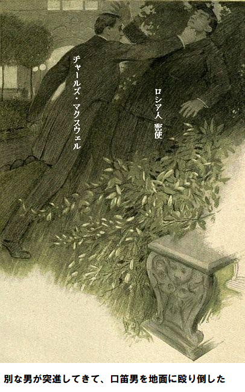
「よく見た方がいいな。
ジェシが落ち着き払って言った。
「違います。あれはチャールズ・マクスウェル氏です。すぐ行って、成功したか見ましょう。わけはあとで説明します。手紙を奪ってくれ……、相手は手紙の略奪が目的と知らない……。さあ、行きましょう」
バーニ医師も興奮してついてきた。
「これはマザロフ向けの手紙です。サーンス伯爵夫人が宛てたものです。武器を使わず、陰謀の手紙を、なんとか奪取できました。そのうちこの若いお嬢さんがすべて教えてくれます。手紙を開けましょう」
中味は名刺にほかならなかった。名刺に数行、文字が書いてある。マクスウェルが明かりにかざした。見えた内容は……
『これを確実な人手で渡します。マクスグラジャ大将が鍵です。直ちに追跡しなさい。我々に逆風が吹いていますから』
第二十四章 窓から見たのは
マクスウェルが名刺をひっくり返すと、美しい筆跡があった。マクスウェルが言った。
「敵は欧州一賢い女性です。過ちを素早く修正し、再び追跡を始めています。でも私にはマクスグラジャ大将が関係あるようには見えませんが、先生はどう思われますか」
「マクスグラジャ大将は大いに関係があると言うべきだ。もし大将が強敵じゃなかったら、今晩撃たなかっただろう。大将はマンションをつけられたと思うか」
とバーニ医師。
ジェシが割り込んだ。
「つけられていません。十分注意しました。路上の美女が大将を追えないようにした方法も話しました。窮屈な国王服を着て逃げた件です。スパイがいたかもしれませんが……」
バーニ先生がさえぎった。
「いないな。明らかに敵はマクスグラジャ大将が邪魔だと見抜いた。国王が邸宅を退去したという情報が伝えられ、そのようにサーンス伯爵夫人は思っている。大将がここにいると踏んでいるから、伝令を邸宅内のマザロフに送った。もし、大将が怪我して自宅マンションで床に臥していると知っていれば、余裕しゃくしゃくだ。あんな手紙はここに送らないだろう」
「手紙は届けねばなりません。手紙が届けば、事故があったと思いません。私の考えはこうです。マザロフにこの手紙が届けば、我々が読んだと少しも想像できないでしょう。マクスグラジャ大将に害が及ぶことはあり得ません」
とマクスウェル。
バーニ医師もいい案だと思った。でも実行する前に、レックミア侍従と相談したかった。マクスウェルが沈痛に言った。
「それなら用事がすむまで、私はここにいますよ。今は誰とも会う気がしません。本件に関して、私は赤子同然の潔白ですから」
バーニ先生が
「くだらん、裁判じゃあるまいし。レックミア侍従と言えば、その道の通、しかも君の友人じゃないか。有罪が証明されるまで、ちっとも非難しないよ。気持ちは分かるが、帝国の危機だ」
先生はそれ以上言わず、席をはずし、やがてレックミア侍従と戻ってきた。侍従が冷静沈着にマクスウェルに会釈する態度は何事もなかったかのよう。こう言った。
「間違いなく、この問題は我々で解決すべきです。バーニ医師から事情を聞きました。マクスウェル君の意見に賛成です。マザロフにその手紙は渡すべきです。手紙を読ませて、行動を監視して、つけるべきです」
「でも、どうやって疑われずに奴の手に渡すのですか」
とマクスウェルが訊いた。
「とても簡単です。あなたは瞬時に行動されたと思います。愚かにも、封筒を蒸気に当てず、破られたと思います。幸い、同じ封筒がメリヘイブン邸の書斎には一杯ありますし、メモの書かれた名刺と手触りが違うのも、幸運です。小生は多芸でして、筆跡偽造などお手の物です。早速封筒を仕上げましょう。そのあと、招待客の誰かを使って、マザロフに手紙を渡し、庭園で拾ったと言わせます。その役割はレディを選ぼうと思います。ちょっとお待ちください」
少し後、マザロフの腕に誰か触った。マザロフはトランプ室でブリッジを見ていた。振り返ると、かわいい女性がそばに立ち、ほほえみかけ、手紙を手に持ち、こう言った。
「マザロフ王子、これはあなた宛てと思いますが、庭で拾いましたのよ。まあ、侵入者に出くわすところでしたわ」
マザロフ王子が封筒をちらり、目が輝いた。それから悠々と封筒の端を破って、メモを読んだ。自然に笑みを浮かべ、あたかもメモが重要でなかったかのように言った。
「危険な目に合わせてすまない。こんな些細なメモの為に。侵入者はどこから来ましたか」
「ふふふ、ロマンスぶち壊しですね。この手紙を持ってきたのは配達係だと思いますわ。結局侵入者じゃありませんでした。配達係りが道を間違って、道路から扉を通って、庭園にはいりこんだのだと思います。とにかく、庭師が襲いかかったので、配達係りは逃げました。とてもドキドキする光景でしたわ。我に帰ったら、その手紙が芝に落ちていました。そのあと、どうすればいいのか、ハッと気づきましたの」
マザロフ王子が話を楽しむかのように笑った。ちょっと顔を深刻にして言った。
「もし私だったら、この話は誰にもしないね。ここにはあなたの武勇談を聞いた女性はいません。もし聞かれたら、冷やかすでしょうし、うまくいっている恋愛が駄目になるかもしれませんよ。恋愛はよく結婚に発展しますからねえ」
今度は女が笑って、さっと逃げた。レックミア侍従が扉の入口に立って、待っていた。
「よくやってくれた。きみは生まれながらの女優だ、チェールスミラお嬢さん。とても冗談がうまい。もっと役を続けてくれ。マザロフ王子を見張って、奴がこの家を去る時は、すぐ私に知らせてくれ」
レックミア侍従は事態の進展を喜び、ぶらりと去って行った。マザロフは何の疑いも抱いていないと確信した。レックミア侍従はある考えを温めていた。書斎へ戻ると、みんなが待っていた。レックミア侍従が言った。
「今のところ順調です。マザロフは裏事情を知らずに手紙を受け取りました。いま、マクスグラジャ大将を邸内で探しています。とっくに退去したのも知らずに。おそらくマザロフはメリヘイブン令夫人に退去したか尋ねるでしょうが、当然いいえと言われるでしょう。だって大将はお休みの挨拶をしてないですから。マザロフは、大将ならそんな欠礼は絶対にしないと承知の上です。だから探索を続けると確信します」
ジェシが唐突に言った。
「もっと、重要なことがあります。マクスウェルさん、お忘れですか。さっきサーンス伯爵夫人と客間で会っていた人物を」
マクスウェルが認めた。
「忘れていた。ハ、ハーコートさんが言うに、アストリア王はここだけでなくあそこにもおられた。一晩中安静が必要で、馬車で運ぶ体調なのに。なぜ仮病を使われるのですか」
バーニ医師が叫んだ。
「仮病だと。我が職業人生をかけて、国王は仮病じゃない。治療して危ないところを助けたが、今晩ほど死の淵に近づいたことはない。強力な薬を処方したおかげで命が救われたと、心から思っておる」
「そうです。わたくしも大量に飲ませましたから。わたくしが部屋を出るときは意識がありませんでした。しかし、半時間たらず前に、国王がサーンス伯爵夫人邸の台所にいるのを見ました」
とジェシ。
バーニ医師とレックミア侍従が大笑いした。二人とも首を左右に振った。バーニ医師が言った。
「不可能だ。お嬢さん、それは不可能じゃよ。国王は最後の時間、つまり一時間近く、この家におられる。正装して、しかも正気だ。一階に運んだのは私だよ。私が国王を連れ出して、マザロフ王子と、グレイクスティーン・ロシア代理大使を大混乱させた。きみは大間違いしている」
マクスウェルが割り込んだ。
「間違いではありません。私も国王を両所で見ました。法廷で宣誓してもいいです、直近の半時間以内に、アストリア王がサーンス伯爵夫人邸宅で馴れ馴れしくしているのを見ました」
バーニ医師とレックミア侍従がちょっとうろたえた。二人の知らない隠し札がまだあるのか。バーニ医師が喋ろうとした時、レックミア侍従が自分の腕をさわり、いま書斎に入室された二人の人物を指さした。
「きみたちが間違っていることを証明しましょう。あれを見てください。アストリア王をよくご存知なら、あれは誰ですか」
マクスウェルが大声で言った。
「国王と女王です。しかし、誓ってと言いたいところですが……。まさか国王がここを抜けられたとは言えないですね……」
レックミア侍従がそっけなく言った。
「そうです、言えません。実は国王を極秘に監視しています。ずっとここにおられたことを証言します」
ジェシが訊いた。
「夢みたいですね、国王が同時に二か所です。あの方が国王なら、サーンス伯爵夫人邸の食堂で見た男は誰でしょうか」
第二十五章 不意打ち
その問いはとても簡単だったが、答えられそうになかった。レックミア侍従だけが笑顔で言った。
「非常にうがった見方を申し上げます。サーンス伯爵夫人は今晩仕組まれた事例に触発されて、ある状況下で国王の替え玉がとても有効に働くかもしれないと考えました。この若い女性が言うように、道路に隠れていたスパイを阻止したにもかかわらず、伯爵夫人は真相をうすうす感じていたと思います。我々が確実につかんでいる事実は、国王が今日の午後、ある書類をポケットに入れて外出されたことです」
マクスウェルが言った。
「おそらく、ロシアの為の、国王退位書でしょう」
「その通りです。国王は署名すべきかどうか迷っておられました。
マクスウェルが悔やんだ。
「見ていたかのようですね。もう少し早く知っていたらなあ」
レックミア侍従が続けた。
「残念ながら、誰も知りません。敵だけが知っています。マクスグラジャ大将が国王服を着てここから退去された時、ポケットに書類があったのです。もしサーンス伯爵夫人が事態を察知したとすれば、このことも知っています。だから、メモをマザロフに渡したのです。実際、大将は相当危険にさらされています」
「そういうことなら、誰かすぐに大将の所へ行くべきです」とジェシが叫んだ、
レックミア侍従もすぐにそうすべきだと言ったが、マクスウェルがぐずった。レックミア侍従にとっては、ここに留まりマザロフを見張っている方がずっと重要だ。だがマクスウェルはここにいてはいけない。誰も異論は無い。従って、マクスウェルが最適任者だ。バーニ医師もこの提案に大賛成したから、レックミア侍従も強要せず、こう言った。
「すぐ行きなさい。早ければ早いほどいいです。我々側には大きな優位があります。あの書類が見つからない限り、敵は手が打てません。サーンス伯爵夫人邸宅の寝室から盗まれた外務省の書類のことです。取り戻せたらなあ……」
バーニ医師が言った。
「絶対取り戻さなきゃ。最善策は警視庁へ行って、中身のことは触れずに、書類が紛失したと言うことだ。書類が戻れば、今晩のマーキュリー新聞記事なんぞ、英国民は無視するだろう」
マクスウェルがつぶやいた。
「そうなれば私もまた堂々と振る舞えます。ここでぐずぐずしてはおれません」
マクスウェルが暗闇に消え、裏道を通って、ピカデリーへ向かった。今や通りは静まり返り、ほとんど人影はない。道中、マクスグラジャ大将のマンションまで遠くなく、サーンス伯爵夫人邸宅へもすぐ行けた。
サーンス伯爵夫人邸宅の前でちょっと立ち止まった。食堂のブラインドはまだ上がっており、明かりもついている。だが、見たところ空っぽだ。何か起こりやせぬかと期待して、ずっと待った。
ちょうど引き返そうとしたその時、正面扉が開いて、男が出てきた。街灯の明かりに一瞬照らされ、アストリア王と見間違うほどだ。近くで見ても似ているどころじゃない。
男は戸口の踏み段の所で立ち止まり、煙草に火をつけ、帽子を目深に引き、今夜は暖かいのに襟を立てた。二輪馬車がのろのろ進んできた。御者台で御者が半分眠っている。強いドイツ語なまりで、舗道の男が御者を呼んだ。
「フリート通り、フリート通り、百九十一Ｂ番地だ、イブニング・マーキュリー新聞社へ、おい、起きろ」
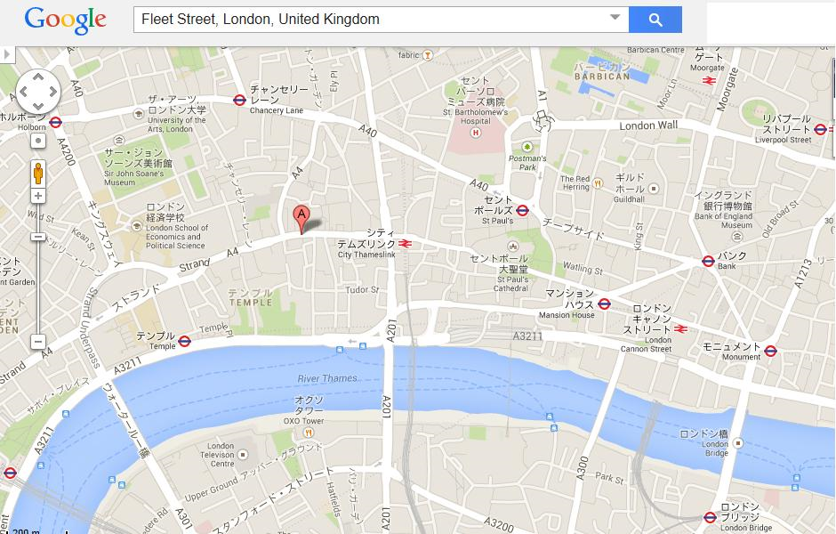
マクスウェルはあとをつけようとしかかった。だが、マクスグラジャ大将が危険だと思い出して、渋々追跡を
伯爵夫人が階段を上って行くのが見えた。スカートの
「驚いたなあ、あんな賢い女性でも時々不用心になるなんて。鍵かけは使用人の仕事だから、伯爵夫人は気にしない。夫人の仕事じゃないからなあ」
やっと、マクスグラジャ大将のマンションへ着いた。明かりがついているので嬉しかった。眠そうな守衛は大将がいようがいまいがどうでもいい。ちょうどベッドに行くところだった。守衛は真夜中以降、起きないし、鍵を持たずに外出しても、それは自分の責任だ、などという。
マクスウェルは守衛の寝言を無視して、階段を登った。まっすぐマクスグラジャ大将の居間へ行った。二階の折り戸つきの暗い部屋だった。折り戸の反対側に大将がベッドに臥している。マクスウェルをちょっと横柄に見た。
「非礼だぞ。キミには一〜二回会ったことがある、マクスウェル君。だからと言って私の寝室にこんな風に入る権利はない。最近の事件をかんがみるに……」
「お願いですから、そう言わないでください。おっしゃることは分からないわけではありません。いまここで無実を主張しても意味がありません。私は無実ですし、早晩あなたは嫌疑を詫びる必要があることも明白です。でも私がここへ来たのはレックミア侍従とバーニ先生の要請によるもので、危険を警告するためです。大将はうまく脱出を画策されましたが、見つかってしまいました。一体何があったのですか」
大将が冷ややかに会釈した。マクスウェルが事件の
「そうか、あの疑惑の女がまた嗅ぎつけたか。例のメモは俺には災難だ。伯爵夫人は俺が負傷したことを知っているかなあ。おそらく知ってるな。君が来なかったらベッドで殺されていたかもしれない」
「確実に殺されていたかもしれませんよ。重傷ですか」
「いや、単なる肩の軽傷だ。弾はもう抜いた。出血して今ちょっと弱っているが、一日か二日でまた元気になる」
「どうやって処置されたのですか」
「友達の医者を呼んだ。第一次アストリア戦争で一緒だった。運のいい奴で、医療を道楽にしている。奴はバルカン情勢にも精通している。このことは内密にしてくれと頼み込んで、了解してもらった。ほかに何か言うことがあるか」
「いえ、ありません。国王の服を着て帰られた時、おそらく書類も一緒だと思いますが、ロシアに対して、大きな影響力があります。正しい側、つまり我々側が入手すればですが。構わなければ、外套のポケットを探ってもよろしいでしょうか」
「よい考えだ。まてよ、あっそうだ。守衛が外套を取って、ブラシがけしたな。わしは召使いがいないので、守衛が従者代わりだ。すまんが玄関へ降りて、奴に
マクスウェルがすぐ行った。別部屋の住人が玄関扉を手持ち鍵で開けながら、守衛は寝たと言う。そのすきに一人の男がサッと侵入し、見ればコートの襟を立て、帽子を目深にかぶっている。アストリア王の替え玉だ。
それを聞いたマクスグラジャ大将の顔が厳しくなった。
「展開を予想しよう。居間の明かりを消して、扉を閉めてくれ。そのあと、ここの明かりも消してくれ。この部屋から、居間を通らずに廊下へ出る道がある。居間の扉に鍵をかけてくれ」
マクスウェルが鍵をかけて、手探りで戻ってきた。半時間かそれ以上、二人は真っ暗闇の中で一言も話さずに黙って座っていた。長い時間に思われたが、何か起こっており、じっと待った。やがてマクスグラジャ大将がマクスウェルの腕に触った。大将が何事か耳にささやいた。
折り戸の下から、細長い光線が寝室へ漏れてきた。誰かが、居間の明かりをつけた。
第二十六章 忠義の沈黙
もう、遅くなっていた。次第に招待客がまばらになり、豪華な部屋もガラガラになってきた。ジェシは回廊に座り込み、ヤシとアザレヤの木影に隠れて、休めるときを待ち望んでいた。頭から爪先まで疲労でジンジンしている。こんな気の張ることには馴れない。ボンド通りの店でひどい目に会ったり、あんなとりすました所作を要求されたりと、ひどくこたえた。今はそれも過ぎ去り、疲労
後頭部を壁に当てて、目を閉じた。放心状態だったので、気がつかなかった。朝になったら、やることがたくさんあるだろう。ベラ・ギャロウェイお嬢様さえ帰ってくれば、危険は降りかからない。しばし、まどろんだ。もしロナルド・ホープ大尉がやって来て見つけなかったら、昼までそこにいたかもしれない。
ヒトの声にジェシが警戒して構えた。
「驚かせないで。寝ていたのよ。なにか新たな、ややこしいことでも」
ロナルド大尉がジェシの横に座りこんだ。ちょっと深刻な厳しい顔に見えた。しばらくその場にジェシを引き留めた。
「目新しいことは何もないよ。きみにちょっと言いに来た。皆さんお帰り中だ。メリヘイブン令夫人の親友だけしか残っていない」
「あなたもそのひとりなら、まだ退去できないわね。でもどうしてそんなに深刻なの。わたし何かした？」
ロナルド大尉がちょっとまごついて言った。
「誓ってそうじゃない。ジェシ、気にくわないよ。別な見方をしてごらん、きみはここにいなくてもいいのだよ。メリヘイブン令夫人は僕の知り合いだ。もし本当のことを知ったら、何と言われるか。実際、いつかは全てを知るはずだよ」
「そんなに責めないで。私の立場を考えてごらん。どうしようもないのよ。何の落ち度もないのに、ボンド通りのお店から解雇された。私には、いたいけな妹がいるのよ。こんな状況ではどこも雇ってくれません。餓死に直面しているのです、ロナルド」
ロナルドの表情が和らいだけれども、途方に暮れた渋面は消えなかった。
「ああよく知っているよ。立場はよく分かる。でも、よくないね。僕が言っているのは上流社会の問題と言うことだ。最悪なのはベラ・ギャロウェイが戻ってくるまで今の状態を続けなければならないことだよ。その為に別な方法をすみやかに探しているのだが。もし元に戻れたら、二度と替え玉なんかしないことを誓ってくれ」
ジェシの目に涙のようなものがあった。だるい疲労感に再び襲われて、口を開いた。
「責めないで、ロナルド。私の立場も考えて。今日の午後まであなたとは連絡不通でした。なのに、ずっと私のことを思っていたなんて夢にも思っていませんでした。でも、どんな場合にも同じことをやったに違いありません。高貴で善良な乙女が大きなトラブルを抱えて私の所へやって来て、愛する人を救うために、深刻な状態から助けてくれとお願いされました。その人を助けるために、これをやっているのです。そして、多少は成功しました。二人で、国家を救う所まで踏み込んでしまいました。その気なら、メリヘイブン令夫人におっしゃっていいですが、勝利の機会を全部駄目にしないでくださいね」
「そんなことはしないよ。いま話すなんてとんでもない。しかし、いつでも予想外のことが起こって、ばれるかもしれない。寝る前かもしれない。そしたらどうなる。将来の妻になるきみの名声をとても心配しているんだ。それでバーニ先生は……」
「先生は勇敢に味方をしてくださいます。大丈夫とおっしゃいます。先生は心配されておりません。もっと任せてください、そうすれば確実に……」
ジェシ、信じるよ、とロナルドが声を絞り出した。前かがみになって、ジェシの震える唇にキスした。
「ただひどく心配だ、とても怖いのは……。あっ、誰か来る」
誰かが回廊にやってきた。時々アザレアを無造作にかきわけている。明らかに人を探している。そのとき、レックミア侍従の灰色の顔がぬっと現れ、真っ青になり驚いた様子は、ロナルド大尉が今まで見たことないものだった。二人の前に立ち止まった。
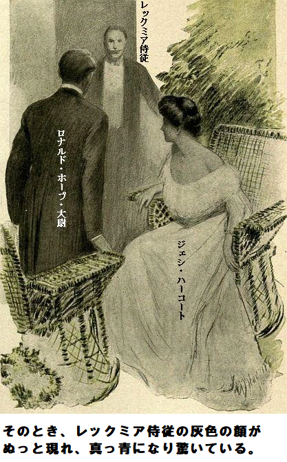
「お嬢様……ああ……ギャロウェイお嬢様、あちこちで探しておりました。とても重要なことが……」
ジェシが破顔一笑して言った。
「まあ、今晩ほかに用事があるなんて言わないでしょうね。とても疲れていますから。ベッドに直行したいのですが……」
レックミア侍従があっさり言った。
「小生としたことが、どうも、失礼致しました。重要なことが分かりました。仰せのアストリア王ですが、つまりサーンス伯爵邸の食堂でご覧になった男の事でございますが、そのあとどうされましたか」
「実際は知らないのです。えーと、マクスウェル氏がこんなことをおっしゃってました。ええこうです。その男性はマーキュリー新聞社へ行ったそうです。マクスウェル氏がつけようとしたのですが、時間をさくことができなかったそうです」
レックミア侍従が何かうれしそうにうなずいたが、厳しい表情はそのままだった。
「お手間を取らせました、以上でございます。お嬢さま、今夜のお仕事はもうないと存じます。あした朝食前の乗馬で、バーニ先生にお会いになられたら、誰にでもご用件をお申し付けください」
レックミア侍従は来た時と同じようにあたふたと去って行った。どうやらまだやる仕事があるらしい。
レックミア侍従が去った途端、ジェシがすかさず言った。
「有力情報を一つ残してくれました。言う通りなら、ギャロウェイお嬢様は朝食前に乗馬の習慣がありますね。ロナルド、私それをやらなくてはなりません。また馬に乗れるなんてとても嬉しいし、たとえ他人の習慣だとしても、やりこなしてみせます」
見れば、大量のシフォンがあり、目の前で毛布がひらひらたなびいている。乗馬服はベラ専用だろうが、ジェシにもぴったり合いそうだ。
「全く別な任務です。モールとか蝶結びとか、シフォンには戸惑います。でも身についた乗馬習慣は全く別です。やりこなして見せます。じつは本当に怖いことが一つあります」
「是非知りたいね」
「もちろん、サーンス伯爵夫人です。きっと伯爵夫人は事態を少なくとも知って疑い、替え玉を見つけようとしています。そうでなければ、今晩病院へ面会に行くはずがありません。おそらく朝、もう一回行くと思います。賢くて、節操がないですから、やり口を変えて来ます。外来病棟は身元照会がいつも一回か二回あります。そこに伯爵夫人は目を付けます。誰かに会い損ねたと嘘を言って、外来病棟へもぐりこめるからです。それで用が済みます。確実にこれを午前中に行うと思います。そう思いませんか」
ロナルドがジェシの考えに賛成した。たぶん伯爵夫人を止める手立てはないだろうし、レックミア侍従はバーニ医師へ朝早く病院へ行ってくれと頼んでないかもしれない。ジェシが話を続けた。
「阻止方法を考えていました。ギャロウェイお嬢様を個室へ移せないことはないでしょう。バーニ医師が病院へ行かれて、患者を回診すれば、できます。ロナルド、私の言ってることが分かりますね。個室なら逃げ出せる機会があるし、ギャロウェイお嬢様を自宅へつれ戻せます」
地獄に仏だとロナルドが言って、再び赤い唇にキスした。
「ベラ・ギャロウェイがきみを思いついて運がよかった。でもこの計画にも危険はある。例えばだね、サーンス伯爵夫人邸宅で盗難があったときにいた侍女がここへ来て、きみを見つけたら、どうなる。盗みで告訴され、たぶん有罪になる。警察が全てを発表する。きみの名前が新聞にでかでかと出る」
ジェシは答える前に、ちょっと
「心配していません。伯爵夫人はまだ出かけていないと思います。盗まれた書類は取り返せないでしょう。それには紛失した書類のことを説明しなければなりませんし、喋るなんて理にかないません。わたくしはベラ・ギャロウェイお嬢様の苦難を助けるために、どんな危険も冒す覚悟です」
ロナルドはそれ以上、何も言わなかった。こんなにもジェシが好きだと分かってよかった。ジェシは決意を貫くはずだし、ロナルドは当分、沈黙を忠義に守るだろう。
第二十七章 レックミア侍従の助太刀
レックミア侍従が新たな決心を秘め、メリヘイブン邸宅を後にし、ピカデリーへ向かった。道路はいまや閑散としており、居るのは徒歩の本人と、薄汚い深夜馬車だけだ。一台の馬車がのろのろやってきた。レックミア侍従がフリート通りへやってくれと頼んだ。西地区に比べ、この通りはせわしなく、活気があり、夜も眠らない。
間もなく朝刊を印刷する時間だ。明かりがこうこうと輝き、機械の音がうるさい。ついにマーキュリー新聞社へ着き、編集長に面会を求めた。こんな遅い時間の面会は通常ないものだから、事務員が約束してあるかと
「全く予約してないけれど、編集長に是非会いたい。私の名刺をハント編集長へ渡して、手間は取らせないと伝えてくれ」
こうレックミア侍従が頼んだ。
レックミア侍従の態度にただならぬものがあったので、事務員は何も文句を言わず名刺を持っていった。侍従はこれまでにもこの世の重大事件の緊急時にごり押ししたことがあった。だから一介の編集長ごときに邪魔はさせない。編集長が鍵を握る重要人物だ。しばらく待っていると、事務員が戻ってきた。
事務員が言うに、編集長はとても忙しくて、申し訳ないが会えないと詫びた。出直しますか、それとも用件を伝えますか、重要なニュースが遅くなって入ったので、このような状態では誰にも会えませんと言う。
レックミア侍従は出直すと告げて、扉の方へ向かった。しかし素直に出て行く気はさらさらない。事務員が忙しさにかまけて注意をそらしたすきに、立ち止まった。二階へ通じる踊り場で、よれよれの記者が二人熱く話している。一人目が言った。
「奴のは、ガセかい、ガチかい。俺はたったいまウェストミンスター議会場から帰って来たばかりだけど、グレッグは会おうともしない。いいネタをつかんだと言ったのに」
「奴のネタは分かってないのか」
と二人目が食いついた。
「ああ、知らん。どこかの国王の事情と、外務省の騒動らしい。とにかく、全員で
レックミア侍従はこれ以上待てない。この機会を逃さなかった。踊り場の両名の所まで進んで、編集長の部屋を
「二階の右側ですよ。ノックしないで入りなさい。この時間なら編集長は歓迎します。厄介な夜仕事が一段落したあとの気分転換です。きっと喜びますよ」
レックミア侍従が丁重に礼を言った。言葉やウィンクの皮肉がわからないことはない。ここには編集長に会いに来たのだし、どんなことがあっても会うつもりだ。階段を上がり、二階へ着くと、扉に大きな文字で書かれたハントの名前が目にはいった。扉はしまっていたが、かまわず入った。
その時、部屋には誰もいなかった。床には、新聞紙や試し刷りが散らかっている。机にはゲラ刷りが乗っている。見出しが侍従の関心を引き、思わずヒュー。そのあと椅子に座り、静かに編集長の帰りを待った。それほど辛抱しなかった。しばらくして、マーキュリー新聞のハント編集長が部屋に勢いよく入ってきた。
顔には喜びの笑みがあった。最高のうぬぼれに浸っているようだ。だが、その笑みが消え、けちな強欲顔が不安になったのは、訪問客がいることを悟った時だった。
「レックミアさん、今は勘弁して下さいよ。もちろん、名刺を拝見して、伝言しました。たとえ国王を連れて来られても、今晩は会いません。夜十二時以降は誰にも会いません。繰り返しますが、たとえ国王を連れて来られても、一介の読者たるあなたは拒絶せざるをえません」
と抗議したが、レックミア侍従は相手の声色が動揺しているのを見逃さなかった。
「ずいぶん大げさだな、偉そうに言うなよ。どこの国王だ」
レックミア侍従があっけらかんと言い、お詫びのかけらもない。
「もちろん英国王です。実際問題どこの国王もですよ」
とハントが吹っ掛けた。
「ゴータ年鑑のどこの国王もか。アストリア王は除くのか」
ちょっとからかって言ったのだが、ハントへの効き目は大きかった。顔面蒼白になり、両手が震えている。何か悪事を働いているから、そんな動揺をみせる。はったりを噛まそうとして、逆におたおた、取り乱してしまった。
「全く意味が分かりません。アストリア王のことですか」
「ハントさん、分かり切ってるだろ。今晩ここへ来たのは、キミに会うためであり、事務員に脅されるためじゃない。御社の新聞はもう刷られているから、暇ぐらいあるだろ。心配しなくていい。
「駄目です。無礼です。もしここから出て行かないと……」
座れ、とレックミア侍従がきっぱり告げ、あたかも暴れ猟犬に話しているかのように脅した。
「話を聞かないと、扉の向うへ行けないぞ。アストリア王が今晩ここへ来た。もし否定すれば、台上にある眼の前の試し刷りで、嘘の皮をひんむくぞ」
ハントが長いゲラ刷りをちらと見て、そわそわ。面子丸つぶれだ。
「否定するつもりはありません。アストリア王がここにいました。馬車で来ました。こちら側から呼んでおらず、自分の意思で来ました。ある情報を持って……」
「全く俺の言った通りだ。残念ながら、国王はロンドンの例の場所へ急行された。そこへ行くのはミュージックホールの常連や、ストランド酒場の出没者だけだ。
ハントがそのようだったとほのめかした。明らかに不安で不快な様子だ。レックミア侍従はハントから全部、文字通り聞き出した。
「もっともらしい。けどな、アストリア王がフリート通りのここに全くいなかったと証言したらどうだ」
「不可能です。国王を見たのですから。その椅子に一時間座っていました。私のような立場の人間は間違いを起こしません。国王がくれた情報は世間を騒がすと思います。内容は一般大衆の皆さんと見てください。朝食時にマーキュリー新聞を買って」
レックミア侍従がコックリ。おそらく扉の向こう側に、印刷職工長あたりが、刷りたての新聞を持っている。ピンと来た、ここに早刷りがある、分捕ってやれと決心した。面会に満足したかのように立ち上がって言った。
「よく分かった。お休み、よい夢を。バカなことをしたもんだ、私のにらんだところ、キミは大新聞の編集長として、空前絶後の人物誤認をやらかした。失敗はキミの責任だ。お休み」
レックミア侍従が部屋を出て、扉を閉めた。そこには印刷職工が突っ立って、侍従が退出するのを待っていた。レックミアがおもむろにポケットの財布から一〇ポンド紙幣を取り出した。これを通路の明かりにかざし、新聞を指差した。職工は汗をびっしょりかいていた。発作的に新聞を畳んで侍従の手に置き、同時に金をひったくった。取引は五秒とかからなかった。
冷静かつ簡単に勝利して、レックミア侍従はゆうゆうと階段を下りた。フリート通りに再び出ると、明かりの下で新聞を開いた。びっくり仰天だ。いつもは感情を抑える侍従だが、今晩は驚いた。
少なくとも、眼の見える誰もが見るはずだ。五ページめに載っていたのが次の通り。
『アストリア国王と人民。同国王がマーキュリー新聞社を訪問して、気さくに歓談。国家の責任を放棄して、退位を決断。同趣旨の宣言に署名。バルカン政治より、ピカデリーを寵愛。欧州歴史上、最大の驚愕事件』
レックミア侍従が叫んだ。
「おっと、そうこれはゲームだ。ここへきて運が向いてきた。歴史上、最悪の無鉄砲新聞だな」
新聞を手に丸めて、全速力で西の方へ、息を切らして走った。
第二十八章 新聞の力
マーキュリー新聞社の編集陣は確かにいい仕事をした。記事は詳細に欠け、完結していない。誰もが思い出すのは、バルカン半島のアストリアという地域で最近、大衝突があったことだ。ロシアが長年広大な土地を欲しがっていることはよく知られていた。
今までアストリア国王の王冠は安泰だった。しかし現国王が登場すると、事態ががらりと変わった。エアノ王の経歴から早々に分かったことは、国王が責任の重大性を全く理解しないことだ。どんちゃん騒ぎや快楽に
女王は万事そつがなかったが、
だから最近、アリックス皇太子の住むウィーンに
レックミア侍従はフリート通りへ急ぎながら同記事を全部読んだ。多くの情報は真実だったが、誤報も多い。明らかにマーキュリー新聞社は時局を騒がす以外、何も考えていない。でも結局、大騒動になる。
あの夜、アストリア王はマーキュー新聞社へ出かけ、編集長に話を聞かせた。とても荒れて、暴力的で、どうしようもなく酩酊していたことが、あけすけに書いてあった。
国王の希望はアストリア処分の公表だ。故国の首都に帰るつもりはさらさらない。退位書に署名したから、今頃間違いなく、代表団はアリックス皇太子へ王位を
「まったく、数ある厚顔無恥の中でも、政治史上、未だかつてこれ以上の策略はない。ハントは真実かどうか疑ったのか。あとで責任転嫁できる限り、奴にはどうでもいい。敢えて言えば、奴は記事を正当化する証拠を持っているのだろう。これと互角に渡り合うには一つの方法しかない」
レックミア侍従がやっとデイリーヘラルド新聞社へ着いた。
ヘラルド紙はまだ印刷にかかっていなかった。大急ぎすることはしない。部数を稼ぐために眼の回るような駆け込みをすることは、社主が認めなかった。同社には一種の礼節があり、マーキュリー紙の環境にないものだった。おごそかに見え、騒音もなく、廊下はすべてフェルトで覆われていた。課長級の部屋ですら、同じ礼節が支配していた。
レックミア侍従がヘラルド紙の編集長に会うのは難しくない。そもそも侍従の古くからの友人だ。実際レックミア侍従が異国の政治に関して、折りにふれ多くの記事を提供してきた。エベリ編集長は気楽にすぐ会ってくれるだろう。エベリ氏が肘掛椅子に寄りかかり煙草をふかしながら言った。
「いま終わったよ、何かいいニュースを持ってきてくれたかい。いい知らせか。興奮しているな、君にしては珍しいぞ」
「大急ぎでここへ来た。異常事態が発生した。放置すれば、損害は計り知れない。エベリ、すまないがこれに目を通してくれないか」
ヘラルド紙のエベリ編集長がマーキュリー紙を手に取るさまはあたかも不潔なものに触るかのようだ。高貴な顔に軽蔑笑いがあった。だがその笑みが消え、読み進むにつれ、興味の輝きがギラリ。ついに新聞を脇に放り投げて言った。
「大したことはない。現アストリア国王ならまさしくやりかねないことだ。ハントにしては大スクープだし、我が意を得たりだろう。おそらくヨーロッパ中に五万部以上、派手に売るつもりだ」
「当然だ。奴はアメリカ人だし、金儲けが目的だ。言い訳に、愛国心には縛られないと言うさ。中味を信じるか」
エベリ編集長が思慮深く言った。
「確かに真実の特徴がある。ハントは大衆をたぶらかしていない。一般的な英国人なら反論しないだろう。そのうえ、ハントの署名入りだ。国王の口から情報を取ったことは確実だ」
「違いない。おそらく速記者の助けを借りている。ハントお得意の表現で、抜け目がない。ここは反論の為にこう推測しよう、つまりハントが完全に信じたのは、舞台俳優の情報だと。でも、ハントはそう思ってない。声明を口述した男はアストリア国王でもなく、私でもない」
エベリ編集長がほれぼれして見上げた。レックミア侍従が嘘っぱちをいうことはない。侍従が続けた。
「実際、国王は今晩ずっとメリヘイブン邸宅におられた。俺が少し前に国王を同邸宅に置いてきた。記事は共謀一味が故意に仕立てたものだ。奴らはロシアの為に、ひいては自らの利益の為に働いている。時機が来たら、共謀者の名前を全員、君に教えよう。ハントの所で喋った男の名前も言える。奴らは慎重に人選している。ロンドンの全報道各社の中から、マーキュリー紙だけが外務大臣の裏付けを取らずに発行するだろうと知っている。君、策略が見えないか。パリや、ウィーンや、セント・ペテルスブルグの全新聞が、会見を詳細に転載するだろう。すぐに嘘を否定しないと、アストリアで大騒動になる。意味が分かるか」
「そもそも、名優が国王を演じていたというのか」
とエベリ編集長が尋ねた。
「ああ、サーンス伯爵夫人が最初に考えついた。残念ながら、我々の行動に触発された。しかしそれは取るに足りないことだ。嘘はたたき潰さねばならないし、それができるのは君だけだ。やはり英国でならした報道の権威はヘラルド紙だ。だからヘラルド紙に、今晩のハントの記事が嘘っぱちで、悪意があるとコメントしてくれ。もう一つ、これも書いてくれ、本当のアストリア国王はメリヘイブン外務大臣閣下の邸宅におられて、その間、誰かがマーキュリー紙の編集長に私見を暴露したと思われると。エベリ編集長、この事実に確信が無かったら、俺はやってくれと頼まない。これを大事件にしてほしいんだ。ハントが一杯食わされたと断定して、誤報を直ちに罰してもらいたい。時間はあるか」
エベリ編集長が慎重に答えた。
「ああ、たっぷりある。それなら何の問題もない。なんとかする。二〜三分ここに座っててくれ、局長に掛け合ってくるから」
レックミアが座って、マーキュリー紙をぱらぱらめくった。眼を皿のようにして、コラムからあまたの広告まで、泳がせた。
ついに私事広告欄に目が止まった。そこの一行に引きつけられた。乱数記号だったが、レックミア侍従はその種の訓練を受けていたので、ほとんど一瞬で理解でき、こうつぶやいた。
「やっぱりだ。例の男に間違いない。ペリトリがロンドンにいたか。最初から
編集長机の後に電話機があった。レックミア侍従が警視庁にすぐ電話をかけて、情報を求めた。しばらくして、返事が来たので、手帳にきっちり書き留めた。そこへエベリ編集長があたふたと戻って来た。
「レックミア、やるよ。礼は要らない。我々二人にとってもいいことだ。さあ帰ってくれないか、これからちょっと忙しくなるから。俺が引き受けたからには、安心しろ」
第二十九章 マクスグラジャ大将の部屋にて
レックミア侍従が最短距離を通って、ヘラルド社からマクスグラジャ大将の豪華マンションに急行している間、読者は覚えておられるだろうが、同大将はベッドに絶対安静で横たわり、居間扉の下から漏れる光を見ていた。マクスウェルと大将の二人にとって、ドキドキする瞬間だった。マクスウェルが小声で言った。
「これからどうなさいますか。私が正体を見て来ましょうか」
マクスグラジャ大将が答えた。
「駄目だ。ここにいろ。大誤算しなければ、正体は分かっている。例の男がここへ調べにくる」
たしかに観音扉が開いて、人影が侵入してきた。明かりを背にずかずかと、かなり暗い寝室へはいってきた。スイッチを探して、壁を手探りしている。やがて、寝室がパッと明るくなった。マザロフがそこに突っ立っている。両手がコールタールで汚れ、真っ黒、べたべたで、洗面台を探している。
「探し物が見つからないときは、ベルを鳴らせ」
こうマクスグラジャ大将が冷静に言った。
マザロフがギャッと叫んだ。芯から驚いたことは疑いようがない。おろおろしてマクスグラジャ大将とマクスウェルを眺め、後ずさりして、口ごもった。
「申し訳ありません。ま、まちがって入ってしまいました」
「俺の部屋カギをどこから手に入れたんだ」
とマクスグラジャ大将が問い詰めた。
「誰からって？ もちろん、バーロからです。バーロが部屋の所有者で、そのカギを私が預かったのです。バーロは私の友人です。とてもまずいことに、この鍵が両方の部屋に合ったのです」
「まずいな。いつバーロから鍵をもらったのか」
こうマクスグラジャ大将がズバリ問うた。
「昨日、いや一昨日かな。バーロはロンドンを去りました。実はこの部屋を貸したいと言ったので、友人として借りました。しかしここであなたに会えるなんて奇妙ですね。間違いを心からお詫び致します」
「その前に手を洗ったらどうですか。洗面器をお探しですか」
とマクスウェルが強く勧めた。
「そうですね。てっきり、部屋の区割りが分かっていたと思ってました。バーロの部屋にしょっちゅう来ていたから。さっき馬車から滑り落ちて、アスファルト塗りたての舗道に倒れましてね。洗面器を使わして下さい」
マクスグラジャ大将が自由に使ってくれと言った。マザロフはお詫び、たらたらだ。この頃になると、マザロフも落ち着いてきた。マクスグラジャ大将の顔色がさえないことに気づいた。昔のマラリヤ熱がぶり返したのか。
足首のねん
「話すほどのことじゃない。実を言うと、我が人生で健康だったことはない。まるで……」
と、ここでマクスグラジャ大将が絶句、急にくしゃみしてその場を取り繕い、驚きをうまく隠した。というのも、レックミア侍従が居間で、唇にシーッと指を当て、立っていたからだ。
レックミア侍従が警戒して首を左右に振り、マザロフを指差した。そのあと居間を横切り、厚手の窓カーテンに隠れた。隠れ場所を確保する間もなく、マクスウェルに窓の方へ来るように指図した。
ごく自然に、マクスウェルが居間にゆっくり移動した。まずカーテンを引いて、下の通りをぼんやり眺める風を装った。それを見たレックミア侍従が小声で言った。
「マクスウェル君、奴はそこで何をしている。間違って入ったと言ったか。部屋の持ち主がバーロだって。まさかマクスグラジャ大将を殺すために来たと、君は思ったんじゃないか。実はマザロフは間違えたと断定できる、そのわけはあとで証明する。お願いしていいか、しばらく寝室扉を締めてくれ、そのあと、私が合図して、窓のブラインドを軽くたたくから、それまでマザロフと話を続けてくれ。出来るだけ気楽にさせてやれ。大仕掛けを考案中だ」
マクスウェルが寝室へゆっくり戻り、背後で扉を閉めた。この頃になるとマザロフはまったく平静に戻り、マクスグラジャ大将と陽気に立ち話をしていた。同大将の戦略として、メリヘイブン邸宅で死に直面したなどとマザロフに言うつもりはない。
「そのくじいた足でどうやって戻られましたか。一時間かそこら前、メリヘイブン邸宅では
そこでくじいたんだ、とマクスグラジャ大将がしらっと嘘をついた。マザロフのような
「いまいましいバナナの皮で滑った。ミカンの皮より危ない。こんなときに迷惑だ、アストリア問題で忙しい時に、国王も手いっぱいな時に。バナナの皮を置いたのは、けしからんロシア人じゃないか」
マクスウェルが笑った。
「ははは、マザロフ王子もロシア人ですよ」
気を使わんでいいと、マザロフが洗練された物腰で言い、
「ロシア人は沢山います。私は文明化しすぎて、進歩的すぎて、故国では居心地が悪いので、そのため英国で長居しているのです。私としては、バルカン半島で貴国がロシアの影響を排除できなくて、本当にお気の毒です。あっ、あれは何ですか」
向うの居間から、誰か口笛をそっと吹いているのが聞こえた。特に変わった風はないけれど、マザロフが何だかそわそわして聞いている。マクスウェルがピンと来たのは、マザロフがとにかく一時も見せたくない何かある。レックミア侍従がはっきり命令したのは、マザロフをしばらく喋らせておけということだった。マクスウェルが説明した。
「私の部下だと思います。この時間にここへ来いと命じましたから。たぶん近くに来たことを知らせて口笛を吹いているのでしょう。誰でも問題を抱えている時は、今の私がそうですが、慎重になります。外交機密を売ったかどで告発されている身としては……」
マザロフが愛想よく
「マクスウェル君、構わんよ。詫びなくても。その種の事は大騒ぎになる。私の故国では外交機密の売買が盛んですよ。そうしなければ、故国の貧しい貴族どもは生活できませんから。もちろん、あなたは無実です。ランシング大尉の自殺が証明しています」
マクスウェルが向きを変え、マザロフに顔を見られないようにした。かろうじてマザロフに手をかけなかった。奴が諸悪の元凶の一人だ。たぶんマクスグラジャ大将もそれを見抜いたのかもしれない。急に話題を変えたからだ。その間、隣部屋からの口笛は続いている……。
レックミア侍従が無造作にカーテンを引いて、覗いた。小柄で、髭のない鋭い目つきの男が、テーブルの端に腰かけて、足をぶらぶらさせ、自分の口笛にうっとりしていた。小男はすっかりくつろいでいるようだ。冷静に集中しているものの、顔が何かてらてら光って、ひどく汗をかいているようだ。小さなバッグを大切そうに抱えている。小男が自分に陶酔している一方、レックミア侍従がニタリと笑うさまはそれ以上の自己陶酔であった。
実のところ、レックミア侍従は現時点で欲しい情報を全て
「申し訳ないですが、退席をお願いします。マクスグラジャ大将と打ち合わせがありますので。それに一時間以内にドーバーへ行かなくてはなりませんので。ご無礼をお許しを……」
そう言ってマクスウェルが両肩をすくめた。マザロフはお詫びを上品に述べて退出した。廊下を進み、扉が開いている居間に差しかかった。中にはいり、小男の肩をつかんだ。テーブルで口笛を吹いている男だ。
「このバカ者。こんなに近くにいるから全部だだ漏れだぞ。だが俺も部屋を間違えた。扉が開いていたせいだ。来い」
小男が、退屈な人生だから何でもやります、あなたに従います、などとマザロフにつぶやいた。レックミア侍従がカーテンの裏を通って、居間の外扉を閉めた。それからマクスウェルを呼ぶと、すぐ駆けつけた。マクスウェルが食いつかんばかりに言った。
「何か新事態でも。お手伝いしましょうか」
あるよ、とレックミア侍従がきびきび、こう言った。
「手伝ってくれ。当分わけは聞かないでくれ。時間がないから。ここに釣り道具があるか、マクスグラジャ大将に聞いてくれ。もしあったら、
マクスグラジャ大将が叫んだ。
「机の下段引き出しの中にある。今頃何をするつもりか」
第三十章 女王が味方
ジェシは座って、隣でおしゃべりしている女の話をぼんやり聞いていた。何を言っているのかはもちろん、身元の手掛かりすらなかった。ちょっと秘密めいた話で、過日の続きのようであった。うなずいたり、ほほ笑んだり、直感で適当に同情したりした。女が尋ねた。
「そのときレジーになんて言うつもりなの。ジョージの態度は悪くないようだったけど。実際も悪くなかったし。ベラ、聞いてるの」
ジェシが夢でも見てるかのようにほほ笑んだ。いまやすべてが恐ろしくなり始めた。これ以上続けられそうにない。すっかり疲れ切っていた。弱った神経を奮い立たせるものが欲しい。男たちがこんなとき酒を飲みたがる気持ちが分かろうというもの。まさしく同等な局面であった。
「とても疲れてますの。半分寝ていました。頭もずきずきします。もう一度おっしゃい、まともに考えられたらですけど。レジーは、女の感を信じるほかないですね。いつも考えないようにしています……」
ジェシはこれ以上言葉を濁すわざがない。やっと面倒なお勤めから解放されるか？ メリヘイブン令夫人が部屋にはいってきた。ジェシの見るところ、もう逃げ場はない、招待客が次第に減り、アストリア女王を含む少人数になった。女王は国王がブリッジをされる間、待機されるはずだ。国王を置いて行くわけにいくまい。
メリヘイブン令夫人がやって来て、ジェシの横に座った。メリヘイブン令夫人が例の女にささやいた。
「アダ、お金は都合しましたよ。あなたのお父上が、ホールで大騒ぎです。あした早く、川辺に旅行されるとか」
女は喜んで笑みを浮かべ、立ち上がり、ジェシにキスをした。あきらかにベラ・ギャロウェイお嬢様の友達だ。女が立ち去ると、メリヘイブン令夫人がジェシに向き直った。
「今晩とてもあり得ないお話を聞きました。夫の話では出所はマザロフ王子とのことです。あなたは本人じゃなくて、別人だとか。アイルランド人のようだとも。そんなことです。ベラ、あなた、顔色が真っ青ですよ。近眼でもそう見えます」
ジェシがよろめいて言った。
「頭がガンガンするのです。どういうことですの」
「さあ、どうかしら。王子は何かにとても困っておられるようでした。こんな奇妙な話でした、ボンド通りのお店にあなたにとてもよく似た店員がいるそうです。遠い親せきで、とても似た女性と言えば、ハーコート一家です。でも全員行方不明です。もちろん、一家の一人が店員になることは可能ですけど。何か噂を聞いたことがありますか」
ジェシが大胆に答えた。
「聞いたことがあります。ロナルド・ホープが言っていました。それがどうかしたのですか」
「ベラ、これは重大なことなのよ。サーンス伯爵夫人の事件を聞いたことがあるでしょう。伯爵夫人の侍女の話も聞いたでしょう。あなたそっくりの女が強盗したことは疑いありません。夫に事の次第を尋ねてみます。きっと警察は詐欺罪か何かであなたを逮捕しますよ」
ジェシがひきつり笑いをぐっとこらえた。幸運だったのは、そのとき誰かがメリヘイブン令夫人を呼び出して、退出したからだ。さもなくば、ジェシは泣いただろう。
向いの温室の小部屋にそっとはいっていった。みなブリッジに熱中している。国王もゲームに参加しており、背後には黒い軍服姿の男が厳しい顔つきで控えていた。王族を護衛していることは明らか。一人になったことで、ジェシの気持ちに変化が現れた。哀しいやら、寂しいやら、一人ぼっちやらで、限界をひしひしと感じた。痛む頭を両手で抱えると、涙がほほに流れた。
しばらくそこでしくしく泣いた。涙でかすむ目に、スカートの衣擦れが聞こえた。急いで顔を拭いたが、時すでに遅く、感情の痕跡を消し切れなかった。長いまつげにかかる涙をぬぐおうとした時、女王が眼の前におられた。
やさしくほほ笑まれたが、心配の表情に変わられた。ジェシのそばにお座りになり、片腕でジェシの頭を抱かれた。女性らしいやわらかいいたわりで、女王を知る人々全員に慕われる理由だった。今やすっかり一人の女性であられた。
「どうしたのですか。わたくしは人生のあらゆる苦労を経験しましたので、他人の苦労を感じないわけにはいきません。ふだんのあなたはとても勇敢でしっかりしています。おちからになりますよ。女王ということは忘れてください。今までどおり、いいお友達とさせてください、ベラ」
最後の言葉がジェシにぐっときた。このように替え玉を演じることが恐ろしくなった。なのに、アストリア国にとって今夜は最悪で、ボンド通りの守護天使なくしては立ち行かない。ジェシは真実を語ろうという気持ちに大きく傾いた。
「言わない方がいいかと存じますが、お力添えくださるそうで。ひどく恐ろしいのでございます……つまり今晩この邸宅に居ることが。どうか、わけを聞かないでください。わたくしだけの秘密ではありませんから。ここに居たくないのです」
女王は余計な詮索をされなかった。女王を惑わせる局面であった。やさしくジェシの片手を自分の両手に包まれ、そっとなぜられた。
「神経が落ち着かないのですね。誰がいいですか。わたくしと一緒であれば、どんなことも敵から隠せますよ。わたくしの友人ですら、時々敵になりますからね。だから今晩ここに居るのが怖いのですね。なぜですか」
ジェシが小声で言った。
「妃殿下、申し上げられません。でも場所を変えれば、本当のことが言えるかもしれません。あした朝早く出かけなくてはなりません。お助け下さるのであれば……」
「お助けしますよ。もちろん、お助けします。このようなことができなくて、女王たる価値はありません。わたくしの侍女が一人病気になり、とても不便なのです。今晩わたくしと一緒して、その役目をしてもらえませんか。どうですか」
ジェシが喜んだ。重荷を両肩からすっかり下ろす心地だ。立ちあがって、すぐにでも逃げ出すかまえだ。顔に赤みが差した。女王がほほ笑まれ、ジェシを椅子にまた座らせた。
「あなたのせっかちと頑固さは勇敢さと同じですね。まだ退出できません。やることがあります。アレクシス大尉へ伝言しなければなりません。ここから見える殿方、国王の椅子の後ろに立っているお方です。国王から目を離さないようにするのがお仕事です。心配いりませんよ。メリヘイブン令夫人にはよろしく計らいますから」
「これでやっと解放されます。今晩はここに居たくありません。何もかもばれるところでした。うまくいったあかつきには……」
ここでジェシが言い過ぎたことを悟って、話をパタッと止めた。女王が驚いておられる。高貴な誇りと、何かしら疑惑の表情とが、威厳のある疲れた顔に入り混じった。
「確かに表面以上の何かありますね。わたくしは約束を守りますし、破るつもりはありません。できたらあとでお話をしてください」
と女王が冷静におっしゃった。
「人払いしてくだされば何もかもお話し致します。ああ、妃殿下、わたくしの今晩の経験と、苦しみを思い遊ばれたら……」
ほんとう、と女王がすぐに応えられ、声の調子を変えて、
「うっかり気づきませんでした。ただ、秘密は嫌いです。わたくしの人生は長年、秘密で毒されてきました。あなたはここに居て、気持を落ち着けてください。わたくしはメリヘイブン令夫人に会ってきます。そのあと、あなたの侍女を呼んで、今後の指示を出しましょう。ここから動かないでくださいね」
ジェシがお礼をモゴモゴ言った。ただただ嬉しくて、そこに留まって、しばし考えにふけった。とにかく、メリヘイブン邸宅で夜を過ごす心配がなくなった。ベラ・ギャロウェイの服を着て、薄明かりの下に居れば、同嬢として振舞っても全く申し分ない。しかし、髪をとかし、寝巻だけになれば、強力な日光の下では、ベラ・ギャロウェイの侍女が違いに気づかないなんて、奇跡だろう。
ジェシは背中を倒し、目を閉じ、危険が去った至福の時に浸った。本当に全てを女王に話しても、構わないだろうか。何はともあれ、アストリア国に対し、ベラと同等か、それ以上の働きをした。勇気と献身を証明し、おそらく誰もこれ以上の事はできないだろう。しばし、ジェシは仮眠した。
やっと目が覚めた。召使いが来て、アストリア女王の馬車が玄関に到着し、女王がギャロウェイ嬢に会いたいとおっしゃっていると伝えた。ジェシは新たな意欲と力が湧いて、立ち上がり、お召しに従った。
「すぐにまいりますと伝えてください。女王はホールにいらっしゃいますか」
第三十一章 ジェシの驚き
女王はジェシの予想通り、ホールにおられた。行ってみると、メリヘイブン令夫人と愉快にお話し中だった。ジェシに意味ありげな視線を投げて、おっしゃった。
「あなたの叔母様はわたくしの気まぐれに喜んで応じてくださいました。ですからベラ、わたくしと一緒に来てください。侍女がホテルへ荷物を全部送ってくれるそうです。メリヘイブン令夫人、お休みなさい、そしてカード遊びはほどほどにさせてください。さあ、ベラ、行きましょう」
メリヘイブン令夫人がつぶやいた。
「娘には大変名誉なことです。お休みなさいませ、妃殿下」
女王がジェシを四輪馬車にそっと押し込まれた。小さな電灯が女王の頭の後方についていたので、ジェシの顔全体を照らした。ジェシは女王の視線を体全体に感じた。
「それでは話してください。自由にお話して、怖がらなくていいですよ。つよい味方になりますから」
「勇気が出てきました。まず、なぜメリヘイブン邸宅で夜を過ごすのが怖かったのか、お話し致します。朝になれば必ずばれるはずですし、そうなればすべてが駄目になるからでございます。自分の為ばかりでなく、ほかの人の為でもあります。妃殿下、わたくしがギャロウェイじゃないと、見破れになれますか」
女王が驚かれて、大きく息を吸われた。両の黒い瞳で、ジェシをじろじろご覧になった。長いことかかって、やっと口を開かれた。
確かにそうですね、とゆっくり言われ、考え込むように、
「あなたの言った通り、微妙に違います。でも、とても似ています。あなたはレディですよ」
「そうでございます。わたくしの父はハーコート大佐と申します。事実、メリヘイブン家の親戚でございます。わたくし今晩は、一切不作法を致しておりません」
「確かにそのようですね。ほんとうに驚くほど似ています。友人のベラ・ギャロウェイだと思って、ずっと信用して、話しておりました」
ジェシが申し訳なげに、ほほ笑んで言った。
「ベラお嬢様ではなく、ジェシ・ハーコートでございます。信じてください、ひたすらベラお嬢様同様にご奉仕いたしました。今晩お分かりいただいたと思います。最後までだまし通せたかもしれませんが、できませんでした」
「わかりますよ、ええ。本当のことですね。わたくしもあなたが好きですよ。でもどうしてこんなことをなさったの。ちょっと前まで赤の他人でしたのに。何かわけがあるのですか」
「はい。何なりとおっしゃってください。たぶん最初から説明した方がよろしいでしょう。わたくしを拾ったのはベラ・ギャロウェイお嬢様でございます。わたくしが困窮している時に来てくれました。運命の糸でこのようなことに巻き込まれたのは、全く不思議なことでございます」
「なんとまあ、興味深いお話でしょう」
と女王が優しくおっしゃった。
「妃殿下ありがとうございます。ギャロウェイお嬢様がわたくしのところへ来られました。あきらかにわたくしのことを知っておいででした。ちょうどそのとき解雇されていたのです。得意先の息子と、よからぬ浮気をしたと責められていました。実際、卑怯者がキスしようとしたのですが、その非難をすべてわたくしにかぶせました。推薦状なしで解雇されました。手持ちはほんの数シリングで、病弱な妹の生活も支えなければなりません。そのときは切羽詰まっていました。早速ごたごたが始まりました。トラブルを引き起こした卑怯者は、ボリス・マザロフ王子でございます」
女王がやや自嘲気味に言われた。
「驚きませんよ。わたくしたちはみんな運命の奴隷です、わたくしもそうですから。でも偶然の一致とはちょっと奇妙ですね」
「ギャロウェイお嬢様が手紙をくださり、仕事着のままでお呼びになりました。お嬢様を見たとき、驚くほど似ているのにただびっくりするばかりでした。そのあと計画を話されました。しばらくの間、立場を変えるとのことでした。愛する誰かが困っており、疑われず抜けだせなかったからでございます。妃殿下、その困っている御方とはお察しかもしれませんが、チャールズ・マクスウェル氏にほかなりません。トラブルの元凶はアストリアがらみの書類が紛失したことでございます」
女王がうなずかれ、黒い瞳がランプの明かりに光った。
「なるほど。その書類がサーンス伯爵夫人の手に渡ったということですね。伯爵夫人が手に入れた途端に、奪われてしまったと言うのですね。なんとまあ驚くべき大胆なことでしょう。今となればよく分かる気がします。ギャロウェイお嬢様が抜け出して、書類を盗んだ。その間、友達やら関係者は、本人が叔父の邸宅にずっといたと思っていた。ああ、愛する男の為に、何ということをするお嬢さんなのでしょう。それで成功したのですね」
「その通りでございます。その場面は伯爵夫人の侍女がメリヘイブン邸宅で申しました。侍女がわたくしを見て、泥棒だと言うまでは、思ってもいませんでした。もちろん、それを聞いた皆は笑いましたが、侍女は自説を
「ベラ・ギャロウェイお嬢さんがアストリア国と恋人を同時に救ったのですね。でもどうして、ギャロウェイお嬢さんは帰って来て、元通りにしないのですか」
「ええ、悲しいことが起こったのでございます。とても首尾よく成功されたので、有頂天でピカデリーを歩いていたら、馬車に轢かれて、チャリング・クロス病院へ運ばれました。今そこにいらっしゃいます」
女王が強い悲しみを示された。両手をぎゅっと握りしめられた。
「とても不運ですね。道理でここへ来られないはずです。さあ、続けて、最悪も話してください」
「最悪なことはベラお嬢様が書類を紛失したことでございます。事故の一報が来た時、抜けだして、危険を承知で病院へ行きました。バーニ先生が許可証を書いてくださいました。ベラお嬢様は書類を落として、何が起こったのか全く覚えておりませんでした。それだけではありません。サーンス伯爵夫人が病院へ運ばれた女性のことを嗅ぎつけて、そこへ行ったのでございます。さいわい入室は拒絶されました。でも明朝きっとまた行きますので、わたくしも早朝行かなくてはなりません。伯爵夫人はうすうす疑って、察し始めています。それにマザロフ王子がおります」
「いったい王子とどういう関係があるのですか」
「妃殿下、お忘れじゃございませんか、マザロフ王子はベラ・ギャロウェイお嬢様と、ジェシ・ハーコートの両方を知っております。後者の店員に、いやらしい関心を抱いたのでございます。ギャロウェイお嬢様に似た人物がロンドンにもう一人いることを知っていますし、サーンス伯爵夫人の侍女が言ったことも聞いています。実際今晩、替え玉が仕掛けられたと、メリヘイブン閣下にご注進しています。王子がご注進をすぐ止めたのは、たった一つの理由でございます」
「それは何ですか。なぜやめたのですか」
「完全に裏を取っていなかったからでございます。店員のジェシ・ハーコートは知っています。しかし戸惑ったのでございます。一介の店員が上流社会で悠々と振る舞い、指先まで完璧に所作が行き届くなんて想像できなかったからです。ボンド通りの店員が上流社会出身ということを知らなかったのです。だから戸惑いました。お分かりいただけましたでしょうか」
女王は要点をよくお分かりになられた。とても利口なことも認められた。
「全てを打ち明けてくれてとても嬉しいです。長い目で見れば、あなたの率直さのおかげで立場が救われるかもしれません。一つはっきりしています、ベラを病院から出して、直ちにここへ戻す必要があります。そのあと当分あなたは姿を消してください。ここでもアストリア同様、敵が大勢、しかもちょっと賢いようです。みなロシアに雇われています。サーンス伯爵夫人はどんな犠牲を払ってでも阻止しなければなりません。ちょっと止まって」
馬車は止まったが、召使いが御者台から降りてこない。ジェシの考えでは、馬車が止まったところは、アストリア女王の本宿と違う場所のようだ。ジェシが怪訝な視線を投げた時、女王がほほ笑まれた。
「なぜここに止まったか不可解なようですね。寝る前にマクスグラジャ大将にお言葉をかけてやらなければなりません。大きなマンションの特別室に居ると思います。二階の電灯がついているあの部屋だと思います。ちょうど誰か来て、窓から外を見ていますよ。あなた、あのお方は誰ですか」
女王の声色が突然変わり、厳しくなり、いらいらされた。夜会服を着た男が一人、明かりのついた窓から外を見ている。女王が言葉を継がれた。
「メリヘイブン邸宅での事情は知っていますね。忠実なアレクシス大尉に、椅子の背後で国王を監視するよう命じてきました。わたくしたちはどこにも寄らずここへ来ました。とても奇妙じゃありませんか。窓から外をのぞいているあの方は誰だと思いますか」
ジェシがうろたえて見上げた。以前の悪夢が
「まちがいございません。あの方はアストリア国王殿下でございます」
第三十二章 時間がない
おそらくレックミア侍従は釣り糸を持って飛び出したいだろうが、マクスグラジャ大将が呼び戻した。大将の見るところ、理由なくしてこんな変な行動はしない。しかし、レックミア侍従がかぶりを振った。
「すぐ戻ってきます。そのあとで用件を聞きましょう。小生からも申し上げることが一杯あります。マザロフはどっちの方向へ行きましたか」
マクスウェルの予想では、マザロフはこの建物から出ていない。奴はマクスグラジャ大将を殺そうと侵入したのではない。間違いなくある特定の部屋を探しにきている。マクスグラジャ大将が半信半疑で、こう言った。
「もしマクスウェル君がいなかったら、奴はとっくに私を殺害していただろう。特定の部屋を探しているようだから、まだ建物にいても、全然驚かんよ」
レックミア侍従もその通りだとつぶやいた。是非とも知りたいことは、この階に裏階段があるか、夜遅く頻繁に使われるか。マクスグラジャ大将が答えた。
「召使いが引き上げたあとは誰も使わんよ。この階には元気な若者が何人か住んでいるが、借金取りから逃げるとき、裏階段を重宝する。廊下の端っこにある」
レックミア侍従がお礼をモゴモゴ言って、そそくさと出て行った。侍従が出るが早いか、コツコツという靴音がして、ジェシがはいってきた。ジェシが心配、不安、戸惑いを隠さなかったのは、不満とまでいわないが予期せぬ驚きを、マクスウェルが顔に浮かべていたからだ。マクスウェルがとがめるように言った。
「ベラ、いや、違った。とても進展が速くてついていけない。全くきみはベラ・ギャロウェイそっくりだ。打ち明けたっけ。ああ、病院のそばで直接聞いたな。しかし、何しに来た？」
「女王と参りました。一緒に妃殿下のホテルへ行くところでございます。女王がおっしゃるに、マクスグラジャ大将に会わなければ今晩休めないとのことでございます。大将はよくなられましたか」
マクスグラジャ大将がベッドから答えた。
「だんだん良くなりつつある。皆さんの前で、床に臥しているのは情けない。女王が小生のことを思われるのはありがたいが、ご足労には恐縮する」
「是非とのことでございます。たってのことでございます。それにもう一つ異常事態が起こりました。国王をメリヘイブン邸宅に残し、アレクシス大尉に厳重護衛させました。邸宅を退出するとき、国王はブリッジをなさっていました。しかし、馬車がこのマンションへ来ると、国王が窓際におられるじゃありませんか」
マクスグラジャ大将が叫んだ。
「不可能だ。国王がここに居たことは一切ない」
「ですから自分の目が信じられなかったのです。確かに国王を見ました。当初、この部屋におられたと思っていましたが、隣の部屋ですね。以前と同じ夜会服に、勲章をつけておられました。それに女王もそれを確認できる位置におられました」
女王がはいってこられて、扉の方から声がした。
「確かにその場所で見ましたよ、この……あの……このお嬢さんが言うように。原因を突き止めなくてはなりません」
マクスグラジャ大将がうーんとうなった。女王の勇気と覇気をたたえたが、ここへ来た無鉄砲さをとがめた。全く狂気の沙汰だ。女王が不安そうに微笑まれて言われた。
「具合はどうですか、大将。苦しくないですか」
「肉体的な痛みと言うより、精神的な痛みです。なぜ来られたのですか、なぜ私にまかせなかったのですか。スパイが何人あとをつけているか誰も知らないのですよ。それに国王がここに居るなんてあり得ません」
マクスウェルが言った。
「国王の回復力はすごいです。一時間前は瀕死状態、一時間後は外務大臣の名誉招待客です。ちょっと前、この若い女性と私は、サーンス伯爵邸の居間でくつろいで座っている国王を見ました。同時に二カ所におられるように見えます。誰か説明できますか。あなたは？」
あなたとは、再び部屋にはいってきたレックミア侍従に向けられた質問だった。侍従が笑って答えた。
「まもなく全てを説明して、何が起こったか証明してさしあげます。その為の手掛かりに、鮭用の釣り糸を借りたのでございます。妃殿下、ここにおられても安全でございますか」
女王が自嘲気味に答えられた。
「どこか安全なところがあって？ いままで、とても用心してきました。入るところは誰にも見られていませんし、馬車を広場に待たせてあります。これ以上留まらないし、この娘さんの話も聞かなくてはなりません。でも、マクスグラジャ大将のことがとても心配です。何か新しい知らせは」
「小生がいま情報を仕入れたところでございます。敵は前代未聞の危険で大胆なことを仕掛けました。明朝マーキュリー紙が発売されたら、アストリア国王と編集長との長い対談が、特別記事として載るでしょう。小生はマーキュリー紙の編集長と会ってきました。うまいこと、前刷りを手に入れました。是非女王にお目通し、いただきとうございます。英国民が朝食テーブルで見ますから」
レックミア侍従がマーキュリー紙を取り出し、テーブルに広げ、それを女王に渡した。すると、新聞をもどかしげに横にどかされた。今晩は読めそうにない。眼が疲れ切っていた。
「内容を読んでください。ぜんぶ知りたいですから」
レックミア侍従が声を出して記事を読み始めた。全てを読み終えると、事実をはるかに上回る悪意が含まれていた。例えば、はっきり書いてはないが、アストリア王がマーキュリー新聞社を訪れたとき、酩酊していたことがあからさまに推測してある。
全てに渡り、下品で、無神経で、冷淡なことが強く印象に残る。国王がすでに退位して、国家や国民の事などちっとも気にせずとある。この記事はヨーロッパ中に大きな衝撃を巻き起こすように仕組まれている。女王はすぐその危険性に気づかれた。
「ぜんぶ嘘じゃないですか。あり得ません。晩餐会以降、国王はメリヘイブン邸宅を出ておりません。この会談はそれ以降に行われています。レックミア侍従、英国ではこんな報道がまかり通るのですか」
「英国の新聞ではございません。英国の日刊新聞であれば、いずれかの担当大臣に確認せず発行するほど、堕落した非国民じゃございません。実はマーキュリー紙はアメリカ系でございまして、売らんがために、新聞で英国新聞界の汁を吸おうとする新参ものでございます。ハント編集長に良心の
「では全部でっちあげと言うことですか。卑怯な裏切りですか」
レックミア侍従が落ち着いて答えた。
「そうではございません。間違いなく誰かがハント編集長を訪問して、その話をしたのでございます。ハント編集長はアストリア国王の信頼にあずかる栄誉を賜ったと本当に信じていると思います。ある意味、ころりとだまされたのでございます」
「それが証明できればいいのですが。証明できれば」
と女王が声をひそめておっしゃった。
レックミア侍従がいつもの冷静さで続けた。
「半時間以内に証明してごらんに入れます。何が起きたか、うがった見方をしております。多少感謝すべきは、ここに居る若い女性と、ベラ・ギャロウェイお嬢様との間で実行されたかわいい替え玉作戦でございます。それをサーンス伯爵夫人が逆手に取ったのでございます。幸運にも人材が手近に居たのでございます。その結果、マーキュリー紙の編集長はとても自然な状況で国王と会見して、ころりとだまされてしまいました。そういう事情ですから、あっさり、付け込まれたのでございましょう。じきに騙されたことが証明されても、ハント編集長は全然動じないでしょう。大騒動を巻き起こし、大量に新聞を売りさばき、誤報そのものは一日か二日で忘れ去られるでしょう」
「でも欧州は違います。あした欧州中に卑怯な嘘が知れ渡るでしょう。電報がうたれ、たちまちアストリア国中に広まります。ひとたび嘘が大衆の口に登れば、二度と取り消すことはできません。全てはわたくしたちをおとしめようとする意図的な目的をもって、工作されています。何か対抗策はありますか」
「すでに手を尽くしております。ヘラルド新聞が記事を否定し、嘘だと証明致します。同紙の編集長にすべてを話しました。両紙は同時に発行されますが、片方は嘘、もう一方は真実でございます。ご存知のようにヘラルド紙は信頼できる報道機関とみられております。同紙のニュース電報も、相手方に対して反論を流します。特別級の大胆な手段をとりました。明朝のヘラルド紙が自信を持って報道することは、国王が王冠を捨てるどころか、アストリアのエアノ王が特別列車でアストリア国へ向け既にご出発なさったという記事でございます。妃殿下、これを実行していただけないでしょうか」
第三十三章 釣り糸の魚
女王の両眼に驚きが走った。女王の心をつかんだ一人の男、レックミア侍従がとてつもないことをやってのけた。実際、嘘をもみ消す事など不可能だし、欧州の隅々へ報道されるのも防ぎようがないけれども、これで必ず対抗できる。エアノ王がアストリアへ帰国されたという事実だけで、おのずと重大な意味を与える。
「是非やりましょう。わたくしがメリヘイブン邸へ引き返して、必ず国王を引きずり出します。アレクシス大尉に護衛させて、直ちに出発させます。もう一人忠実な味方を同行させたいのですが、あなたはロンドンでわたくしに奉仕してください」
言われたマクスウェルがむきになった。
「妃殿下、それはご勘弁ください。私はロンドンにおれない身でございます。ここは当分、手持ちの味方で十分かと思います。私は少しの間、雲隠れする必要があり、誰にも居場所を知られたくありません。私もアストリアへ同行させてください」
女王が同氏に感謝され、黒い瞳にお礼の気持ちを込められた。それから、レックミア侍従に向き直り、こう
「どうやって、旅の足を緊急手配できますか」
「まさしく要点を突かれました。女王専属の老侍従といたしまして、手抜かりなどございません。先ほど欧州の端にある故国へ、すぐ電報を打ちましてございます。所定時間内に目的地へ来るように指示いたしました。一時間ほどで実行の運びでございます。特別列車をドーバーへ向かわせ、特別蒸気船で海峡を渡る手はずになっております。これしきの事は電報で簡単に出来ます。でも万が一、国王がご旅行お遊ばされない場合は……」
女王がホッホッとお笑いになられた。両眼がらんらんと光っている。小声で言われた。
「国王は帰国なさいます。きっちり請け合います。もし断ったり、いやなそぶりを見せれば、一服盛って引きずってでも帰国させます。そして首都に姿を見せます。そこで本人の口から、声明を発表させます。でも一つ、やり残したことがあります」
女王が一呼吸おいて、レックミア侍従を意味ありげに見られた。侍従が笑って、首を上下に振って答えた。
「妃殿下のおっしゃることは承知しております。例の案件をすっかり片付けないと、とんでもないことになります。万が一、疑惑をかけられたら台無しになります。つまりアストリア国王がロンドンに居残っていると誰かが言いかねないことです。本件を完全に解決するために、ある手段を講じました。妃殿下、あと数分お待ちいただければ、み心を安らかにしてご覧に入れます」
女王が待つ意思を示された。レックミア侍従が退出した。廊下で立ち止まり、煙草に火をつけ、
「ここまでは順調だ。中部屋には裏階段へ通じる扉がもうひとつある。裏階段に罠を仕掛けたので、心配ない。それほどきつい仕掛けじゃないから、きっと面白いことになるぞ。さあ、楽しみだ」
レックミア侍従が中扉をコツコツ叩くと、内側のささやき声がピタリ止んで、扉が開き、マザロフ王子が顔を出した。侍従を見た途端、さっと青ざめ、口ごもって何事かと
「さあて、一服しますかな。煙草を吸いに友人のベビスの部屋へ来たのですが、王子が御用聞きにお出ましになられた。ベビスはいますか」
マザロフが奥部屋から出て、中扉を閉め、そっけなく言った。
「いいや、余計なことだが来ないよ。知りたきゃ、奥に居るのは私の友人だ」
マザロフがにやりと笑ったのは、レックミア侍従が微妙な立場など理解できまいと踏んだからだ。だが侍従は先刻承知の上だ。奥部屋の声の主が間違いなくある男だと知っていた。手だれの老外交官ならでは、さらりと聞き流し、こう言った。
「わかりました。その言葉を信じましょう。ところで、ベビスはどこへ行きましたか」
マザロフ王子が皮肉交じりに答えた。
「ベビスの居場所や行先はこれっぽっちも知らない。あの若造のベビスは最近護衛官をやめた。しばらく田舎で暮らすそうな。奴がこの部屋を使わないかと言ったので、気に入らない場合は友人に譲るつもりだったが、私の仮住まいより立派だったので、この機会に飛びついた。そういうことだ」
レックミア侍従がすっかり分かったかのようにうなずいた。でも決して全てを知ってたわけじゃない。座りこんで、一人で煙草をプカプカ吸って、マザロフの迷惑などおかまいなしだ。自分からゲームを仕掛けて、ずけずけ言った。
「あなたとちょっとお話したいのですが、これ以上めったないい機会はございません。出来ることなら、あなたの支持を、アストリア女王側に取り付けたいのでございます。もしあなたと、サーンス伯爵夫人の二人の協力が得られたら、これ以上の喜びはございません」
マザロフ王子が光栄だと言うようなことを口ごもった。だが不安そうで後ろめたい様子だ。どうやら恐怖の感情が吹っ切れてない。時折耳をそばだてて、奥部屋の物音を聞くかのようだ。レックミア侍従はどっかと座り、煙草をふかし、天井を見つめていた。次にどんな手を打とうかと決めかねてこう言った。
「小生はアストリアへ帰ろうと思っています。まだ錆び付くほどの老人でもありませんし、向うにはおもしろいこともございます。国王もあした帰国されるそうです。明朝の全新聞に載るはずです」
マザロフ王子が大声で叫んだ。
「これは一大事。計画が全部引っくり返る、いや、つまりロシアの敗北と言う意味だ。これまでの経過を考えればそうだろ、キミ」
「王子、嘘を申し上げる気は毛頭ございませんし、もちろん事実でございます。国王は絶対に帰国すべきではないし、帰国されなかったでしょう。女王が国王を信用なさらなかったからでございます。ロンドンを訪問すれば自国がよくなるだろうとお考えでした。国王も将来を大いに期待しておいででした。最近ペリトリ王子を見かけられましたか」
最後の質問が銃弾のようにマザロフを鮮やかに撃ち抜いた。さっと横目で侍従を見たが、侍従はマザロフの怪訝な顔に何食わぬ様子だ。マザロフは罠に落ちたかと勘づき始めた。その怖さと言ったら、証言席の証人が、舌鋒鋭い弁護士の厳しい質問に脅えて、嘘を証言するようなものだ。
「そんな男など知らん」
とマザロフがたじろいだ。
「それはないでしょう。思い出してください。ペリトリ王子を知らないなんて。五年前あなたと私とスキャンドル等で、オーデル州の人々と夕食をしました。それなのにペリトリ王子を知らないなんて」
マザロフが不機嫌そうに笑った。俺の記憶はそれほどよくないとか何とか云った。ちらちら奥部屋を見ているさまは、あたかも目が離せないかのようだ。
「ペリトリ王子の居所を教えてくれませんか。いろんな情報から、現在ロンドンのどこかにおられるはずです。ああ、うしろをご覧なさい。なるほど。あなたの素振りから本人がそこに居ますね。何という偶然の一致でしょう」
とレックミア侍従は譲らない。
マザロフがだみ声で、
「俺が嘘つきだと。とんでもない言いがかりだ。俺は……」
レックミア侍従が冷静に言った。
「図星でしょう。あのステッキはペリトリ王子のものです。誰もあんなものは持っていません。本人が自慢していました。もし否定なさるなら、ぶしつけながら奥部屋にはいって確認します」
不意にレックミア侍従が奥部屋の扉に駆け寄った。マザロフがあわててあとを追いかけて、ロシア語で何事か大声で叫んだ。だが時すでに遅く、侍従の侵入を阻止できなかった。奥部屋には誰もいなかったが、帽子が一個、手袋が一組、テーブルに残されており、直前まで誰かいたことが明白だった。
とても許し難い無礼だとマザロフが激怒したが、しばらくして我を取り戻し、
「キミを呼んだ覚えはない。ステッキの件は何の証拠にならない。複製を手に入れたものだ。さて、もう済んだから、部屋から出て行ってくれないか」
レックミア侍従が愉快そうに答えた。
「まったくです。お詫び致します。出ていきます。怒らせて大変申し訳ありません。お休みなさい」
レックミア侍従が正面扉から廊下へ出て、素早く扉を締めた。その時、裏階段から、ドタン、ゴロゴロという音がして、悪態をつく声が上がり、痛そうであった。
レックミア侍従が勝ち誇って言った。
「捕まえた。奴だ。早速見に行くか」
第三十四章 王族俳優
レックミア侍従がダーッと駆けて行った先に裏階段があり、そこから人の落ちる音がした。ちょっと薄暗いのは、ガス灯が止めてあり、電灯もないからだ。階段の下に見えたヒトの姿、
ぐずぐずしちゃおれない。間違いなくマザロフもすぐ部屋から飛び出して、こっちへ来てもちっともおかしくない。レックミア侍従は学生がやるように手すりを滑り降りた。ポケットナイフを開いて、口にくわえた。音もなく、男の背後に忍び寄り、両肩をわしづかみにして、そっとささやいた。
「シー、声を出すな。一言でもしゃべったら、ナイフを刺すぞ。おとなしくすれば何もしない」
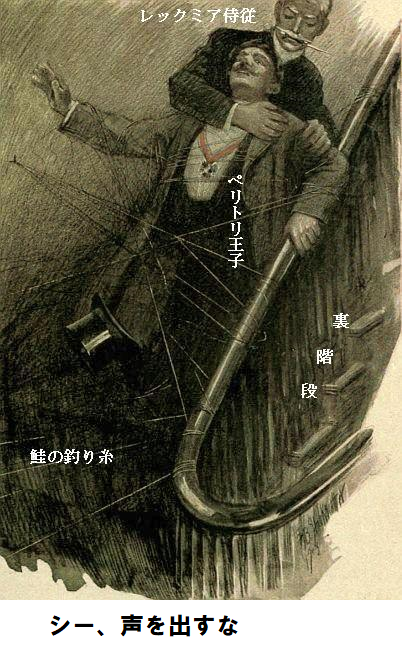
男は何も言わなかった。おとなしく鮭釣り糸を切らせ、されるがまま階段下の使用人部屋に押し込まれた。と同時に、マザロフがやってきた。マザロフが現場を見ようとマッチをつけた時、不安そうな顔の輪郭がちらと見えた。マザロフがつぶやいた。
「行ったようだな。とにかく一足違いだ。奴が屋敷を出たなら、俺はこっちへ行ったほうがいい」
マザロフがすぐ近くを通ったので、レックミア侍従が簡単に触れそうだった。捕まえた男が何もしなかったのは、おそらく侍従の指が喉を締めて殺すぞと脅していたからだろう。マザロフが扉をバタンと閉め、靴音がコツコツ遠ざかって行くと、レックミア侍従の厳しい表情が緩んで、笑顔になり、獲物をつついた。
「さあ、一緒に行きましょう。お先に立っていただけませんか」
「私を誰と心得る。もし分からなければ……」
レックミア侍従が冷静に答えた。
「よく存じております。必要なら同じことをして差し上げます。何事もおふざけ遊ばされておいでですが、殿下の行いが重大な損害を与えたことを少しでも
レックミア侍従が両肩をすくめて言葉を止めた。捕まえた男を廊下に沿って進ませ、マクスグラジャ大将の部屋まで連れて行き、中に押し込んだ。
明かりに照らされ、パチパチ瞬きをして、立ちつくしたその姿は、まさしく国王然として、胸に勲章をぶら下げ、赤毛の髪がキラキラ光っている。恥じているようだが、眼はまだくりくりしていた。レックミア侍従が言った。
「国王をご覧あれ。トラブルの元凶をご覧あれ。国王、かつらが
男が赤毛の頭髪をぐいと引っ張ると、黒々とした短髪が現れた。女王が驚きの表情で、両手をお上げになった。
「ペリトリ、ペリトリ王子じゃありませんか。あなたがもろもろの張本人ですね。説明してくれませんか」
ジェシが傍らのマクスウェルにささやいた。
「かつらを取ったら、ぜんぜん国王に似ていませんね。素顔の方が素敵です。誰ですか」
マクスウェルが説明した。
「ナッサのペリトリ王子です。アストリア王の
「敵のようには見えませんが」
とジェシが同じく低い声でささやいた。
「敵じゃない。事実、誰の敵でもない。この機会を利用しても少しも驚かない」
「どうしてこんな途方もない愚かなことをなさったのですか」
と女王が冷静にお尋ねになった。
度が過ぎましたか、とペリトリ王子が応じ、
「妃殿下、賭けの為でございます。成功報酬は千ギニーでした。現在の懐具合では
「つまりサーンス伯爵夫人とマザロフ王子の賭けに勝ったということですか。二人が認めたのですか」
とレックミア侍従。
「認めたよ、手厳しい侍従どの。伯爵夫人とマザロフが、本件に関与していると、一体どうして分かったのかな」
と王子が愉快に言った。
「そのうち話しましょう。あなたの金欠話を聞いて、伯爵夫人とマザロフがそろりと持ちかけたのです。マーキュリー新聞の編集長の所へ行って、アストリア国王を演じました。破滅的なことを話し、編集長を信じ込ませました。編集長があなたを国王と信じたら、金がもらえるのでしょう」
とレックミア侍従。
「こんな金額はそう簡単に稼げるもんじゃない」
とペリトリ王子がご自慢だ。
女王が厳しく言われた。
「何ということですか。ペリトリ、今まで自分の楽しみ以外のことを考えたことがありますか。あなたのしでかしたことを見てごらん。ひとたび嘘の新聞記事が国境を越えてアストリアに入ったら、わたくしたち王族全員はどうなりますか。それを考えましたか。国王が退位なさったと全欧州が思うことが分からないのですか。切迫している現状を、さらに十倍も悪くしてくれました」
ペリトリ王子は女王をぽかんと見ていた。やんちゃが見つかった少年のようで、ここに至り始めて事の重大さが分かった。
「誓って、そうとは一瞬も思いませんでした。おふざけをやると、何も考えられなくなるのが私の悪いところです。とてもおかしな服装をした私の話を、あのうぬぼれ小男編集長は鵜呑みにしました。金をもらったら、自由の身になれたのになあ。妃殿下、何かお手伝いできることは……」
女王が悲しげに頭を左右に振られた。しばし、途方に暮れた。もう、局面を逆転させる方策はないかもしれない。
「あなたは一番卑怯な二人組の敵のカモになり下がりました。ロシアの手先ですよ。今まさに最大の策略を行い、アストリア国王を退位させようとしています。ひとたびそうなれば結果は明らかです。一味はこれを行うために金を湯水のように使っています。これまでに二〜三回計画は阻止されましたが、あなたを見つけて、我が一族を根絶やしにする機会を得ました。千ポンド、いやその五十倍でも大した金じゃありません。どうして見つかったのですか」
「私は英国に六カ月いました。そのとき、ふと身分を漏らしたのです。とても好きな英国女がいて、もし結婚してくれるなら、すべてを犠牲にする覚悟でした。一味がどうやって私を見つけたかはどうでもいいでしょう。おふざけは済んだのですから」
「そのおふざけは修復の域を超えています。ところで、ここへ来られた理由は何ですか。なぜ隣の部屋で窓を開けて、その前に座っておられたのですか」
とレックミア侍従。
「それも計画の一部だった。おそらく監視係りがいて、私をアストリア国王と認めさせる必要があったのだろう。自慢じゃないが、私の化粧は完璧だから、たぶん誰も……」
女王が
「まだぐだぐだ言う。どうして分からないのですか。どうして努力しないのですか。自分の破壊行為を修復するために、どんな犠牲もいとうてはなりません。全力で責任を果たせば、決して裏切り者にはなりません。そうと分かっていても、血に染まった金を受け取りますか。そんなはした金で、身を持ち崩すなんて、信じたくありません」
ペリトリ王子がこうべを垂れた。眼に恥の表情があった。
「仕返ししてやります。掠奪者を懲らしめてやります。逆に、自分が行ったおふざけを倍返しする方法があります。まだ遅すぎません」
第三十五章 王位へ急行
しばし一同の間に、沈黙があった。すっかりペリトリ王子の陽気さが消えた。ふさぎ込み、考え込み、座り込んで、最近の
祖国の為なら大いに働く覚悟だ。常に心に秘めていたのは、いつか愛国者として名を上げることだ。悪ふざけはいつかやめねばならない。今しがた行った悪ふざけも分からないことはない。失策をやらかしたが、利発で機転のきく脳細胞がもう、最適な仕返しを見出しつつあった。
「本件は盗難書類と関係がありますか。外務省関連ですか」
とペリトリ王子が
レックミア侍従が答えた。
「すべて関連しております。実はサーンス伯爵夫人が持っていた書類を、今度は自分が盗まれたのです。書類がないと夫人は動けません。書類の行先を探っていることは、あなたが先ほど女王に悪ふざけを見せつけたことから明らかです。自分が引っ掛かったトリックを、参考にしたのです。王子、事態を好転させるために、何かやれることはありませんか」
「それ以上のことをやるつもりだ。もう考え付いた。好都合なことに、伯爵夫人は私をおっちょこちょいのバカ者だと思っている。私がここに居ることも知らないだろうし、レックミア侍従の行為も知るまい。さすがはレックミア侍従だ」
それほどでも、とレックミア侍従がつぶやいて、
「以前、殿下のものまねを拝見したことがあり、すぐ殿下だと推測できました。まさにここでお会いできて光栄でございます。よろしければ、何をなさるか皆に教えていただけませんか」
「言いたくない、気を悪くせんでくれ。失敗するかもしれないし、だろ。夜も遅いから、サーンス伯爵夫人を尋ねる。口実は賭けに勝って、現金をもらうと言う。妃殿下の個室に電話がありますか」
電話なら、当然ありますと、女王がおっしゃった。ペリトリ王子が立ち上がって言った。
「差し当たり、話は休会にしましょう。妃殿下にはホテルご帰還の際、一層ご用心され、慎重に行動なさってください。すぐ出発してください。誰か一人残って、マクスグラジャ大将のお世話する必要があります。アストリアにとって重要な人ですから」
レックミア侍従が大将の安全を確認してから女王のホテルへ行きますと、簡潔に述べた。ペリトリ王子は変装をすっかり落として、これでよしと、うなずき、笑顔で去った。
ペリトリ王子は自分を惨めな方法で利用した奴らに、形勢を逆転できる自信があった。女王は夜明け前に、王子の考えを聞かなくてはと決心された。
――――――――――
ジェシは一人、女王御用達ホテルの見事な居間で、重苦しく茫然となっていた。そのうちレックミア侍従が戻って来て、最新事情を女王と詳細に打ち合わせることになっている。一体どんなに骨の折れることか、分かっているのかしらん。
いつもであれば、一日の仕事で疲れ果てるので、夜一〇時過ぎには床に就くのだが、いま午前三時過ぎ。ほとんど目をあけておれない。女王が話しかけられたので、立ち上がった。女王が優しくおっしゃった。
「お嬢さん、疲れて半分死んだみたいですよ。あなたには大変感謝します。すぐにお休みなさい」
ご命令なら喜んで何でもいたしますとジェシが口ごもったが、女王には聞こえなかった。ジェシはすぐベッドに行った方がいい。疲れ過ぎて何もできない。夢遊状態で席を外した。
手先の器用な侍女が服を脱がしてくれた。ふかふかの豪華なベッドがあり、次第に楽しい夢に落ちた。女王がかがまれて、寝顔にキスされ、そのあと部屋に戻られると、レックミア侍従が待っていた。女王がおっしゃった。
「真の味方がたくさんいて心強いです。皆さん、とても協力的だし、申し分ありません。首尾は万全ですか」
「妃殿下、お電話ありがとうございました。残りは全部電報で手配済みでございます。三〇分以内にドーバーへ特別列車が出ます。その到着を臨時蒸気船が待っております。あの忌々しい記事が到着しないうちに、国王はアストリアに到着なさいます。すぐにご出発を」
女王の
「今頃ここへ来るはずなのに。アレクシス大尉が約束しましたから……。誰か階段を上がってきます。あっ、
国王がアレクシス大尉に付き添われ、部屋に入ってきた。今度は元気がなく、不機嫌なようだ。たぶん薬が切れたせいだろう。ベッドに行きたいと漏らした。
すると女王の顔がさっと怒りに変わり、要点をきっぱり話され、事の次第を正確に説明された。国王は大儀そうにじっと聞いておられ、ぶっきらぼうだが、ふざけ気味にこう言われた。
「
女王が答えられた。
「王様のように振る舞うことです。バカげたことをして、特権を捨てなかったですか。今にもわたくしたち全員を裏切ろうとなさいませんでしたか。でもそれは過去のことです。いまは寝ないで、起きて行動するのです。敵の計画が失敗したと、欧州に知らしめることです。半時間以内に、アストリア帰国の列車に乗っていただきます。アレクシス大尉とこの紳士が随行します」
国王が弱々しく抗議した。絶対に帰国したくない。だがいくら反対しようが、女王がしつこく説得され、きつく言われた。
「帰国しなさい。全て手配済みです。とても残念ですが、わたくしは一緒にいけません。あと一〇日間英国に滞在します。準備万端ですから、トランクの荷造りも終わっています。半時間以内に列車がドーバーへ出発します。国王にいま意地と度胸があれば、王位とアストリア国は安泰です」
国王はもう反対しなかった。座り込むと、顔色がどんより憂鬱な表情になった。あたかも二人の看守に連行され、牢屋から牢屋へ移送される囚人同然だった。アストリアへ帰国するなどこれっぽっちも考えていなかったのに。でも、我が領地に再び足を踏み入れさえすれば、自分の落ち度にはならないだろう。こんなことを自問自答した。
一行がやっと出発すると、女王はホッと一息つかれた。今や思いは母国で自由を求めて、何か起こりやしないかということだった。でもロシアの思い通りにはさせない。部屋をうろうろして、最悪の考えに心を痛められた。
レックミア侍従が尋ねた。
「妃殿下、ご用命はございませんか。何なりとお申し付けください」
「もう少し待機してください。あとでペリトリ王子から聞き出したいのです。今やるべきことは紛失書類を取り戻す事です。この瞬間も、どぶにあるかと思うと気が狂いそうです。せめて広告できたらいいのですが。ほかに方法はありませんか。あなたなら対応が早いし、機転も効くし」
レックミア侍従が首を左右に振った。おそらく時間がたっぷりあれば、巧妙な手を考え付いたかもしれないが、今は全く先が見えなかった。広告を出すなんてとても危険だ。そんなことをすれば、たちまち敵に感づかれる。
レックミア侍従がズバリ指摘した。
「敵はとても警戒しています。例えばサーンス伯爵夫人です。既に鋭い勘で自分に降りかかったトリックを見破っています。もし疑問を抱かぬなら、昨晩チャリング・クロス病院へ行かなかったでしょう。妃殿下、お分かりでしょうが、今朝は何としても病院へ行かせてはなりません。
女王が部屋をせわしなくあちこち動き回りながら言われた。
「わかっています。わかっています。本件にペリトリ王子の協力が得られませんか。王子の頭脳はすごいですから。きっとここから出るときに、ある計画を……」
電話のベルが鳴って、会話が中断した。女王の指示で、レックミア侍従が受話器を取って、耳に当てた。ばか丁寧に相手を尋ねた。ひそひそ返事だったので、聞き取れなかったが、ペリトリ王子に間違いない。
「もしもしレックミア侍従です。普通に話してください。どうかなさいましたか」
「大仕掛けをやった。手助けが欲しい。ここへ来てくれ。家にこっそり忍びこんで、左側の扉を開けて、小部屋に入ってくれ。召使いは全員寝ているから心配ない。電気を消して、合図を待ってくれ。玄関扉に鍵は掛かっていない。当てにしていいか。そうか。じゃあ」
声が途切れ、カチャリと音がして、電話が切れた。
第三十六章 アネットの秘話
ペリトリ王子はその人となりや、評判を知る人の間では、決して人気がないわけではない。王子の血統には粗野な傾向があり、バルカン半島全ての人に固有のようであり、途方もないことが多々起こる場所でもある。
かつて王子は夢見る少年であった。実のところ、西洋文明の影響を受けて、本来の特長をとっくに失ってしまった。向う見ずな行動や、手の込んだおふざけに、人生の楽しみを求めるようになった。偽名を使って、数カ月間、ウィーン劇場で主役を張ったこともある。いまや自らの地位が脅かされるに及び、こんな性癖は捨てざるを得なくなった。
今しがた行ったいたずらに、後悔するやら、恥じるやら。あの時は実害があるなんて思いもしなかった。
虚栄心の痛いところをくすぐられ、敵の手先になったという事実から、王子の怒りに火がついた。たぶんサーンス伯爵夫人に仕返しをしなくても、王子の落ち度にならないし、金をもらっておふざけを楽しんでもいいだろう。だがサーンス伯爵夫人と、協力者のマザロフ王子にとっては、大金をかけた大勝負であった。
ペリトリ王子は伯爵夫人邸宅に着くころまでに、何をすべきか、きっぱり決心した。邸宅は真っ暗で皆寝ているかのようだった。しかし伯爵夫人はまだ帰宅していないと確信する理由があった。必要なら、玄関の入口で待つつもりだ。
でも、もしかしたら扉に鍵がかかっていないのじゃないか。スパイがうようよいるから邸宅を真っ暗にしているのかもしれない。
案の定、玄関扉に鍵はかかっていなかった。そっとホールへ忍び込んだ。見つかっても全然怖くない。たとえ見つかっても、さっきの仕事の報酬をもらいに戻ってきたと言うだけだ。伯爵夫人に対しては自分のふところが火の車だと隠していない。
邸宅は完全に寝静まっているようだから、間違いなく召使いは全員寝室へ行っている。ペリトリ王子はしばしホールに立ちつくし、どうしようかと決めかねた。じっと聞き耳を立てた。
やがて押し殺したような笑い声が聞こえたような気がした。
ペリトリ王子がそっと扉の所へ行くと、下から光が漏れていた。扉を押すと鍵がかっていない。そっと、中をのぞいた。やはり予想した通りだ。テーブルにおいしそうな御馳走が並び、座っている男は間違いなく召使いの特徴が全身に現れている。テーブルの反対側には伯爵夫人の侍女アネットが座って、こう言っている。
「もう一杯どうぞ。最高級ブランドだよ。誰も来ないから絶対安心だ。それにあれこれ命令もない。ロバート、取って食べて。邪魔は来ない」
男は不安そうに微笑んで座っている。奴は共謀者じゃないな、とペリトリ王子が直感した。奴はただの、はしこいロンドンっ子の召使い、雑務を忠実にこなす下男、政治的な
「危なくないか。キミの女主人に見つかったら……」
「ロバート、その恐れはない。とっくに寝て高いびきだ。誰も起こしやしない。今晩は一人で着替えた。あたしの世話は必要ない。ところで、いい話がある」
「なんか、やばいことか。厄介なことになるぞ」
「いいや、ブツは生き物じゃないし、感情もない。ただの拾い物だ、拾い物だよ。だが金になる。奥様に払わせてやる。スイスへ帰郷しようと思うから、ただじゃ起きないよ。それに今晩、奥様に泥棒呼ばわりされたし」
ロバートも調子を合わせて何か言った。アネットにスイスに帰ってほしくないと言った。俺も少しは貯めている。
どうやらアネットは、下宿屋のおかみを目指しているか、酒類免許付き宿屋の女主人あたりを狙っているのじゃないか。アネットがなまめかしく微笑み、声を落として、ひそひそこう言った。
「たぶん、何かいいものだよ。あたしゃ詐欺師じゃないし、立場も同僚と同じだ。チップも少ないことはない。でもツキが舞い込むこともある。今晩奥様から泥棒とか、嘘つきとか言われた。今晩の盗難は作り話だとも言われた。本当の泥棒を教えても疑っていた。あのコソ泥が書類を盗んだ。いいかい、大変な値打ちのある代物だ。確かだよ。それが私の物になったら。中味を読んで、とてつもないものだと分かったら。奥様のものじゃないとしたら。一度は奥様が策略で分捕ったものだよ」
ペリトリ王子が聞き耳を立てた。いま事情がよく呑み込めた。アネットの話がよく分かった。今晩ここへ来た幸運に感謝した。間違いなくアネットは、外務省から紛失した書類の事を話している。
「よくやったな。五〇か、六〇ポンドの値打ちがあるかも」
アネットが相変わらず、ささやき声で続けた。
「一万ポンドだよ。金をせしめたらどう。マウント通りに下宿屋を買って、二人で稼げる。ロバートいいかい、書類は黒服の女が盗んで消えたブツだ。奥様が言ってたよ、その女が事故に会って、病院へ運ばれたって。警官が来てあれこれ聞かれたよ、まったく。頭が痛くなるまで根掘り葉掘り聞かれた。その後立ち去って、奥様も邸宅から外出された。頭がずきずきしたので、舗道をうろうろ歩いて、一息ついていたのよ」
「まるで劇の一場面だね。さあ続けて」
とロバートが励ました。
「舗道に立っていると警官が来た。顔見知りで、若いから仕事に慣れてなくて、私を見てぼーっとなった。ロバート、やきもちを焼かないで。私の目の付けどころは警官じゃない。強盗の件は知っていたが、事の重大さを全く知らない。ピカデリーから逃げた女のことをべらべら話した。そして、なんとまあ、一包みの書類を拾ったそうだ」
「でかした、アネット、キミは講釈師か」
とロバートが叫んだ。
アネットが機嫌良く続けた。
「警官がその書類包みを見せてくれたのよ。輪ゴムがかけてあり、包みには奥様の紋章があった。当然、書類は警視庁に押収される。いいかい、私がその警官のことを何も知らないと思っちゃいけないよ。たちまち、書類は私のものだ。ちょいと笑顔をかまし、軽くキスしたら、獲物はこっちのものさ。ロバート、しかめっ
ロバートが舌を巻いた。
「キミはとても、こすいなあ。それが取り柄だけど。書類がどんなものか是非知りたい。もう読んだのかい」
「いいや。フランス語だよ。学歴のある階級が使う言葉だ。母国のスイス語とは大違いだ。でも読める友人が一人いる。その間、見つからない所に用心して隠してある。あの警官なら喋らない。そうなっても、紙屑だったから捨てたと言うさ。それにしても奥様は私を嘘つき、泥棒呼ばわりした。書類は絶対に見せない。あれ、どうしたの？」
突然、玄関扉から、けたたましいベルの音が鳴り響き、つまみ食いの二人と、ホールで盗み聞きしていたペリトリ王子が、驚いた。ロバートは立ち上がり、帽子をひっつかみ、逃げる構えだ。
利口なアネットがささやいた。
「ダメ、行っちゃダメ。私が出る。私ならちょろい。まだ寝ていなかったので降りて来たと言う。ロバートはここにいて。絶対安全だ。電報かもしれない。時々夜中に来ることがある。明かりを消して」
ペリトリ王子は手近の真っ暗な部屋に潜り込み、成り行きを見守った。アネットがホールに出て、電灯をつけた。いつもの取りすました態度で正面扉を開けて、踏み台に立っている口やかましい小男に対面した。
「伯爵夫人、伯爵夫人はいるか。すぐ会わせてくれ、すぐ」
と息せき切っている。
「奥様はお休みでございます。ぐっすり眠っておられます」
「じゃあ、すぐに起こしてくれ。すぐにだ。キミ、抗議しても無駄だ。伯爵夫人に必ず会うぞ。ハント様が来たと言え、マーキュリー新聞社のハント様だ。遅れは許さん」
第三十七章 同床異夢
ペリトリ王子が声を押し殺し、吹き出した。生来の喜劇役者さながら、眼前の喜劇を楽しませてもらった。ハント編集長がなぜここへ来たか説明の必要はない。依然として事態は厳しい局面にあり、ペリトリ王子に心当たりがないわけじゃない。
ハント編集長は、ずかずかと食堂へはいり、自宅同然の態度を見せつけて、明かりをつけた。アネットが二階へ上がると、ペリトリ王子がさっと電話機の所へ行き、レックミア侍従を小声で呼びだした。そのうち侍従の助太刀が必要になると思い、早いほどいいと判断した。そのあと暗闇に隠れていれば、面白いものが見られそうだ。
やがて再びアネットが階段を下りてきて、驚いた顔つきだ。ハント編集長は食堂で煙草をふかしており、アネットにキッと向き直った。
「それで、奥様を起こしたか。長く待たせないだろうな」
「お客さま、それどころじゃございません。先程は寝入っていると申し上げました。わたしは今晩夜更かしで、お仕事がございました。ですからベルの呼び出しに参上致しました。奥様がご就寝と申し上げましたのは、完全にそうだと思っていたからでございます。起こしに行ったところ、なんということでしょう、いらっしゃらないのでございます」
「伝言したのにどういうことだ」
ハントがいらついて尋ねた。
「お客さまの伝言は受け取っておりません。奥様は寝室におられません。不在でございます。いま思い出しますに、ベルの音で玄関に出たときに、正面扉は鍵がかかっておりませんでした。奥様が邸内におられないのは明らかでございます」
ハントの返事は丁寧どころか、横柄極まりなかった。アネットの顔が怒りで真っ赤になった。
「当節の皆さん、私をうそつき呼ばわりするのが
こうしてアネットは、ツンツン立ち去った。やがて足を引きずる音がホールに聞こえたのは、ロバートが邸宅からこっそり出て行き、アネットが裏の隠れ部屋に引き上げた時だった。
出迎える間もなく、玄関扉が開き、伯爵夫人がはいってきた。アネットはふてくされて、先ほどのいきさつを上奏した。同夫人の顔に光が当たっていたので、ペリトリ王子が狼狽ぶりを見てとった。
「アネット、寝室へ下がりなさい。私はこれからその紳士に会います。こんな妙な時間に来るとは」
伯爵夫人が食堂にはいりしな、玄関扉のつまみが静かに回った。見れば、レックミア侍従が邸宅に忍び込んでいる。侍従はしばらく動かず、立ち止まっていた。盗み聞きしていた小部屋からペリトリ王子が出てきて、侍従を手招きし、小声で呼んだ。
「こっちへ来い。君を呼びつけたのはある考えがあって、すぐに手助けが欲しいためだ。ハント編集長が食堂にいる。ほら、口論が始まった」
ハント編集長が激怒している。
「だましやがって。餓鬼のように馬鹿にしよって。アストリア王と単独会見させると約束したよな」
「おや、約束を破ったかしら。王様は行きませんでしたか。何でもちゃんと話せる状態だったでしょう。朝刊に全部載せないのですか」
ハント編集長がうめき声でまくしたてた。
「全部載せてある。もう海外版は車中だ。本社刷りの大部分は既に配達済みだ。わざとコケにしたな」
伯爵夫人がいらついて、叫んだ。
「なんてこと言うの。私がためにするとでも……」
「馬鹿にしよって。まったく、わけを知りたいもんだ。実際、破廉恥の極みに担ぎやがった。俺の所へ来た男は、詐欺師、偽物、俳優だ。知ってたろ。すべてが明らかになれば、俺の新聞は破滅だ。俺はロンドン中の笑い者だ。本物のアストリア王は……」
「本物は狂っています。本物のアストリア王が今晩あなたと同席しました」
「真っ赤な嘘だ。キミも知ってた。自分の目的の為に俺を利用した。たったいま例の情報源から聞いた話によれば、本物のアストリア王はアレクシス大尉と、もう一人の紳士に随行されて、一時間前に特別列車でドーバーへ出発して、アストリアへの途上だ。この情報はある女性記者からだ。実際にチャリング・クロス駅から出発するのを見ている。この女性記者は信頼が置ける。いままで間違ったことがない。なんと申し開きするか」
人生の中でサーンス伯爵夫人が初めて追い詰められた。この情報を突き付けられた以上、もう嘘をつき通す事は出来ない。
「ほっほっほ、あなたの勝ちですね。大胆な賭けでしたが検閲を通ると思っていました。おまけに千ギニーもかかっています。いいですか、国王がそんな大胆なことをするとはこれっぽっちも思っていませんでした。貴重な情報をありがとう。さて、お詫びに何をしましょうか」
ハント編集長なら逆境を乗り越えられる。実を言えば、自身が全く潔白かと言うとそうでもない。
「あの書類だ。あの書類を取り戻せ。はったりで逃げ切って見せる。誰かが本物の国王になりすましたと言えばいい。どうしてもあの書類を手に入れねば」
伯爵夫人が小声で言った。
「ああ、取り戻せたらいいのですが。敵はこざかしいです。今晩コケにしたことは感謝してもよろしいのじゃございませんか。アストリア国をつぶすために最大の事をしたのですから。追跡して、原因を突き止めます。朝一番でチャリング・クロス病院へ行きます」
「何のためだ。何を言ってるんだ」
ハント編集長が毒づいた。
「気にしなさんな。そのうち説明します。必ず書類を取り戻します。今晩のトリックはお詫びします。でも私の手持ち札は大きいわよ。敵があんな大胆なゲームを仕掛けるとは思いもしなかったけど」
レックミア侍従が相棒のペリトリ王子に言った。
「聞きましたか。王子、どのような計画をお持ちであれ、今朝サーンス伯爵夫人をチャリング・クロス病院へ絶対に行かせてはなりません。あなたの対抗策は素晴らしいですから、是非防いでください。必ず出来ますね」
ペリトリ王子が大丈夫だとささやいた。しばらくレックミア侍従がここに留まり、成り行きを見ていれば、なんとかできるかもしれない。必要なら何でもやりますと侍従が請け負った。王子が言った。
「よろしい。私はしばらく姿を消す。一〇分後に戻ってくる。君は邸内にいてくれ。あとで、やることがある。そのときが本当の脅威と危機になるぞ」
今度は侍従がうなずくと、王子はそっと出て行った。食堂からはまだ話が続いている。取りとめのないものだった。伯爵夫人が言っている。
「重ね重ね今晩のトリックはお詫びします。でも編集長は自説を曲げてはなりませんし、会見は本物だと押し通さねばなりません。何もなければそのまま通用します。国王に帰国する気力がどれほどありますか。国王の神経は壊れています。確実な情報筋からは、国王が二度とアストリアへ帰国しないはずでした。なのに、決然として、帰国するなんて。どういうことなの」
自分ならその答えを言えると、レックミア侍従が一人ほくそ笑んだ。ハント編集長の声がだんだん扉の方へ近寄ってきた。やがてホールへ現れた。
ペリトリ王子が退出してからゆうに十五分経ち、レックミア侍従はだんだん心配になってきた。そのとき玄関扉をドンドンたたく音がしたので、伯爵夫人と、連れのハント編集長がぎょっとなった。伯爵夫人が扉を開けた。
すかさずレックミア侍従が首を伸ばして覗いた。見ると、担当地区の伝令少年が伯爵夫人に封筒を渡し、受領書の鉛筆を差し出している。扉を閉め、伯爵夫人がそそくさと封を切った。
「厚い封筒ですね。おもてには、私の名前だけが大文字で書いてあります。何かしら。ディノン公爵夫人の名刺がはいっています。この名前は、アストリア女王が旅行の時に用いるペンネームですね。ああ、要点が書いてあります。よく聞いて」
『あした、パリのブリストルホテルで九時に会ってくれ。コンウェイ氏を訪ねるように。監視されている。脱出できるか不安だ。朕を失望させるな。エアノ王』
伯爵夫人が勝ち誇って、羊皮紙を頭上に振りかざした。
「国王からです。国王から私宛てです。国王は逃げたがっており、私の思うつぼです。列車の時刻表を見せて。後ろの玄関テーブルの上にあります」
第三十八章 偽装
ジェシが両目をあけて、辺りを物憂げに見渡した。当初状況がつかめなかった。豪華な家具に囲まれた広い部屋だ。絹のカーテンが、窓から吹き込む風にさらさらなびいている。いつから贅沢な暮しになったのかといぶかった。レース飾りのついた枕に髪を乗せて横たわっていると、前夜の出来事を思い出した。
たっぷり寝たので元気と活力がよみがえり、考えると笑いそうになった。ほとんど信じられないが、ジェシは完ぺきにやり通した。へまをすることなく、一連の冒険をやり遂げるなんて、ほかの乙女にそんな度胸があろうか。
だがジェシは、やり抜いた。しかもその役割の時々で、スリルを楽しんだのも少しは許されよう。少なくともマダム・マルメゾンのお店で、つゆほど未来の展望もなくこき使われるより、ずっとましだ。
今となっては強力な友人も得られた。これ以上の上流社会はないという友人だ。マザロフ王子からこうむった不名誉な屈辱も、結局は身の為になる不幸であった。
そして何より良かったことは、ロナルド・ホープ大尉に再会できたことだ。ロナルドのことを考えると、嬉しさに赤面する。
同時に妹のことも考えた。果たしてアダは何と思うだろうか。アダに連絡しなくては。
ベラ・ギャロウェイお嬢様を病院から移し、所定の地位に戻せば、自分の役割を辞して、自宅に帰れる。おそらくちょっぴり道草をしなければならないだろう。その道草なら、読者諸兄は容易に推定できよう。だって、ベラ・ギャロウェイの替え玉なのだから。
ジェシがこんなことを心の中であれこれ思っていた時、扉が開いて、感じの良い侍女が、凝った朝食をお盆に盛って入室してきた。
朝食を手早く済ますと、衣装の着替えを手伝ってくれた。すべてベラ・ギャロウェイお嬢様の衣装棚からだ。ジェシはむしろ自分から着たかった。地味なスカートと、ふわふわのブラウスを上手に身につけた。あつらえたかのようだった。
女王は既にご起床になり、すぐにお目通りなさると侍女が言った。まったく神経がピリピリしないというわけにもいかず、ジェシは階段を下りて行った。深々とお辞儀すると、女王が前に進み出られ、キスされた。
「あなたはわたくしの友人です。大親友ですよ。あなたのような女官を持ちたいものですね。そのうち話し合いましょう。ところで、わたくしは多くの手紙を口述筆記しなければなりません。あなたはなんて
「妃殿下、わたくしにはやるべきことがたくさんございます。つまり起きて、すぐに行動すると言うことでございます。もう朝一〇時でございます。病院へ行って、ギャロウェイお嬢様に会わねばなりません。サーンス伯爵夫人が踏み込む前に、退院させる必要がございます」
「失念しておりました。お仕事が多いと、ついうっかりします。必ず、バーニ先生を通してやってくださいね」
ジェシがそのつもりですと答えた。すぐに
バーニ先生は邪魔されたくないと、助手が言った。こんな時間に先生の手間を煩わすなんて、緊急要件以外無理だとも言う。ジェシはそんなたわごとを無視して、驚く助手を押しのけて、ずけずけ食堂へ行った。バーニ先生は全然怒らなかった。
「やあ、きみか。待っていたぞ。今朝はとても輝いて、
「ベラ・ギャロウェイお嬢様をご帰宅というより、退院させることです。そうしないと、サーンス伯爵夫人が見舞いに来るからです。必ず今日中、おそらく午前中に病院に来ます。私たちが最初に行けば好都合です。もし先生がお仕事を口実に、一緒に行って戴いて、ギャロウェイお嬢様を別人だと確認してもらえば、とてもよろしいのですが。そして退院許可をもらえば、それで終わります」
バーニ先生が、おどけた表情でニヤリ。
「おやおや、若いのに大した女性だこと。私ほどの高い地位にいるものにとっては、まことにきつい提案ですな。本当のことが知れたら、破滅します。でもきみなら押し通すと見た。きみだけで、ギャロウェイ嬢はつれ戻せないからな」
「お嬢様はご帰宅させません。メリヘイブン閣下と、令夫人は、自分たちの姪が一日か二日、アストリア女王の所に、女官が不在の為に、滞在していると思っています。ベラお嬢さまをご帰宅させたら、すべて台無しになります。その上、足首のねん挫を説明する必要があり、ご両親の不信は避けられません」
バーニ先生が感心して口ごもった。
「なんて賢いひとだ、お手並み拝見といこう、さあ」
「もう少し言わせてください。私はベラお嬢様の親戚を装います。当然、本名のハーコートを使います。私はお嬢様の黒服、いや、自分の粗末な黒服とベールを着ます。ベラお嬢様は女王のホテルへ運び、そこで衣装を換えます。私はそっとホテルから歩いて去り、当分の間、姿を消します。これでどうでしょう。本物のベラお嬢様が女王とご一緒されます。一日か、二日、足首を
バーニ先生は提案を大声でほめちぎった。これはもう、面倒に深入りせざるを得ず、後戻りできないなと言った。ジェシが病院へ行き、ベラ・ギャロウェイ嬢に会ったら、慎重に時間を置いて、合流しよう。
まさにジェシが望んだとおりになった。ベラに支障はほとんどなかったが、ただ一つ、足首に問題を抱えており、担当外科医が、明日か明後日まで退院できないと言う。そうこう言い合っている時に、バーニ先生が入室してきた。持ち前の素早い診断と、快活な話術で、今後の処置を言い渡した。
「さて、お嬢さん、ゆうべ拝見しましたが、うっかりしておりました。キャトリ―医師、このハーコートお嬢様の父上とは、昔からの古い友人でな。なに、家に帰りたいと言ってるのか。そうだなあ、拒む理由はない。馬車を用意してやれ、以上だ、よし、よし」
こうしてバーニ先生は本件から手を引いたかのように、退出した。忙しい人にありがちな行動であった。ジェシはベラと握手して、急いで準備に取りかかった。いまにも伯爵夫人が現れるかもしれなかった。やっと手続きが終わり、馬車が戸口につけた。ジェシがベラお嬢様にささやき声で言った。
「ベールを下ろしてください。私も下ろしましたから。誰が見ているか知れません。さあ、私の腕にしっかりつかまって、足を引きずらないようにしてください、そう」
こうして無事馬車に乗り込んだ時、ジェシがホッと一息ついた。馬車の行先はボンド通り、口実は買い物などの雑事だ。更に細心の注意を払ったほうがいいとジェシが言った。ベラお嬢さまは青白い顔でお疲れの様子だが、ジェシに感謝の言葉をかけた。ジェシがいきさつを説明し始めた。
「なにもご心配いりません。事情が変わり、風向きがよくなってきました。前に申し上げましたように、何の疑惑も持たれず、メリヘイブン邸宅から首尾よく抜け出しました。メリヘイブン令夫人は、お嬢様が女王と短期間ご一緒されていると思っておいでです。ですから、足首の養生に専念なさり、きっちり直してください。私は当分の間、静かに姿を消します」
「でもあなた、お金ないのでしょう。昨夜の話ではどうしようもない状態だとか。お金があれば、わたくしの所へ来なかったでしょう。もちろん言い訳でしょうが、あなたならわたくしに対して、いや悲しみに沈むどんな哀れな乙女に対しても、同じことをしたでしょう。ジェシ、いつか正式にお礼をします。しかし、あなたお金なしで……。わたくしもここに手持ちはないし……」
「ロンドンを出るつもりはありません。自宅なら安全です。それにほんの少額で十分です。むしろ探しているのは、勤め口が……」
とジェシがぼそぼそ言った。
ベラお嬢様が軽蔑して叫んだ。
「勤め口ですって。わたくしがあなたに勤め口を二度と許すとでも。それにロナルド・ホープがどう思いますか。本当にあなたの事を心配しているのなら……」
ジェシがパッと顔を赤らめながら言った。
「本当に気にかけてくれています。ロナルドとの再会を戴いたお礼を……。さあ、ホテルにつきました」
第三十九章 敵の寝ぐら
再会を果たした二人は、裏事情を知る
レックミア侍従は、伯爵夫人が巧妙なトリックに引っ掛かったのを直接見て、邸宅から退去した。
その直前、伯爵夫人は.マーキュリー新聞社のハント編集長に電報を読み聞かせていた。一瞬、ハント編集長はアストリア国王が更に裏切ったかと疑った。
レックミア侍従が邸宅から出てくるが早いか、ペリトリ王子が侍従を捕まえた。王子の目がぎらぎら輝いている。
「君を邸宅に残したのは目的があったからだ。私のまいたえさに食いついたか」
「あの名刺を送ったのは王子でございましたか。どうやって手に入れられたのですか」
「パッと考えが浮かんだのさ。伯爵夫人を遠ざけたかったので、確実な方法を考えた。女王のホテルへ急行して、女王の偽名・名刺を手に入れて、真実性を持たせた。そして、あしたの夜パリで国王が会いたいというメッセージをでっちあげた。それから封筒を地域配達少年の手にゆだねて、君に見物させた。問題はだ、そのえさに食いついたかどうかだ」
レックミア侍従が冷静に答えた。
「伯爵夫人はいまブラッドショー鉄道時刻表をあわててめくっていますので、確実にえさに食いつきました。伯爵夫人は直近の列車で、パリへ出発なさいます。朝の早い時間にも船はもちろんあります。小生はたびたび利用しましたから。おそらく一時間で出発されます。ここで時間をつぶし、見届ければ、枕を高くして眠れます」
ペリトリ王子がヒッヒッと笑った。煙草に火をつけて、中毒患者のようにふかしながら言った。
「まだ寝れない。伯爵夫人が出発するまで動けない。この案件に全身全霊をかけているので、確認するまでここを動かない。伯爵夫人が去った後、君と私とで、ちょっとした押し込みをやる予定だ」
「何をなさるんで。そんな危険を冒して何をなさるおつもりですか。外務省書類を探しても、伯爵夫人は絶対持っていませんよ」
すると、驚くべき返事があった。
「そうだ、でも侍女のアネットが持っている。遂に見つけたよ、いかな冷静なレックミア侍従も驚くぞ。今晩伯爵夫人邸へ行ってみたら、アネットが恋人のロバートを引っ張りこんでいた。奴は間違いなく紳士付きの召使いだ。ロバートの素性と主人を調べ上げる必要がある。あとで利用できるかもしれない。アネットが書類を持っていると、この耳で聞いたからだ。バカな警官が書類を拾って、価値も分からずアネットに渡した。だからアネットが持っており、書類を売って、金をがっぽりせしめようとしている」
レックミア侍従が驚きから正気を取り戻して、こう言った。
「それならとてもやりやすいです。伯爵夫人は少なくとも四十八時間邪魔できないでしょう。それだけ時間があれば、アネットと交渉して書類を取り戻せます」
「おそらくアネットは怖がって疑うな。どうやってアネットに接触するか。レックミア侍従、私の方策が最善だと思うが、とにかく邸宅へ行って、書類を探そう。値打ちがなければ、アネットは金庫なんかに仕舞わんだろう。危険過ぎる賭けだし、アネットも賢い。どう思う」
レックミア侍従が
伯爵夫人は黒服を着て、黒ベールをかけ、手に小さな旅行バッグを持っていた。明らかに衣装には手が回らなかったと見えますと、レックミア侍従が連れの王子に言うと、ペリトリ王子が提案した。
「すぐに邸宅へ乗り込もう。たぶん伯爵夫人は召使いに何も告げておらず、執事も起こさなかったと思う。緊急呼び出しの場合、時々すっと消えるくせがある」
ペリトリ王子の予想がピタリ当った。辺りに召使いは一人もおらず、玄関ホールのテーブルにアネット宛てのメモがあり、伯爵夫人がパリへ発ったこと、帰宅する時は電報を打つ旨が記されていた。レックミア侍従が王子をちょっと皮肉っぽく見て言った。
「今の所うまくいっていますね。邪魔する者はおりません。次はどうされますか。小生は、野暮な押し込み強盗よろしく、アネットの寝室に忍び込み、持ち物を調べるなんて御免こうむりますよ。つまり、探す場所が分かっても、そんなことはできません」
ペリトリ王子が首を振って同意した。そんなやり方はしないと言った。それよりずっといい策がある。玄関扉へ行って、ベルをガンガン大音響で鳴らした。レックミア侍従があっけにとられた。王子は汲めども尽きぬ才能の持ち主だと知ってはいたが、こんな時でもおふざけを楽しまれるとは慎重さを欠くこと、はなはだしい。
「王子、狂ったのでございますか。なんと非常識なことをなさるんで？ だって、たちまち召使い全員がホールに降りて来ますよ」
ペリトリ王子がニタリと笑った。
「君らの言い草で、全員集合だ。レックミア侍従、これはいたずらじゃない。ベルをもう一度鳴らして叩き起こす。おっと、なまけ者どもがやっとホールで騒ぎ始めよった」
一階の二人の耳に、二階で確実にうろたえる物音が聞こえた。長い外套を着て、片手に火かき棒を持ち、恐怖におののく執事が、欄干越しに見え、何があったかと、ひそひそ話している。召使いが二〜三人、目の前でウロウロし、急いで引っかけた上着の下から、ちらりと下着が見えた。
ペリトリ王子が命令を下した。
「全員すぐにここへ集合せよ。とんでもないことだぞ。伯爵夫人が今晩小さな装身具を紛失なさったので、私が取りに戻って来て、ベルを鳴らしたところ、誰もいないし、みな寝てるじゃないか。玄関扉の鍵もかかっていなかった。押し込み夜盗が侵入し放題だ。見当違いかもしれないが、私が階段を上がってきたとき、邸宅に何者かが侵入したように見えた。邸内をくまなく探索せねばならない。全室に明かりをつけよ。私は最上階へ上がって、天井の明かり窓を点検する。さあ、すぐにかかれ」
誰も文句を言わず、質問もなかった。王子の言葉は国王の命令のようであり、みんなおとなしく従うのに慣れている。王子は厳しい顔をしていたが、レックミア侍従にウィンクして、階段を上がって行った。
探索はずいぶん時間がかかった。というのも、邸内に夜盗が侵入したなどと言われては、びっくり仰天の衝撃を与えること
アネットが
「ご親切なあなた方が出て行かれたあとで鍵をかけます。ご覧ください。私あてに奥様の手紙があります。奥様は始発の船で、緊急にパリへ出発されました。奥様がよくなさる突発旅行でございます。誰か地下室を探しましたか」
誰も夜盗に出くわしたくないものだから、誰も地下室は探していない。
レックミア侍従が人を小馬鹿にしたような風に言った。
「地下から調べて上階へ行け。地下に夜盗がいれば、逃げ場はない、王子が天井の出口を固めているから」
アネットが身震いして言った。
「天井出口は私の寝室の真上でございます。おおこわ、寝ている時に、殺されたかもしれません。男性陣にくまなく探させてください」
やがて男性陣が捜索を終わり、誰も邸内に侵入していなかったので、元気を取り戻した。もう探索は不要だ。邸内の最上階近くまで調べても誰もいないと確認した時、ペリトリ王子が降りてきて言った。
「誤報か、もしくは天窓から逃げたかだ。伯爵夫人は今晩帰宅しないと、誰か言ったようだが、本当か。そういうことなら、私らが出て行ったあと、扉に鍵をかけたか確認するように。皆さんお休み。これから一層用心すると約束すれば、このことは伯爵夫人に言わない」
ペリトリ王子とレックミア侍従が去った後、玄関の大扉を閉めて、今度は鍵をしっかりとかけた。レックミア侍従が王子に向き直り、どういうことですかと尋ねた。ペリトリ王子が答えた。
「そうだな、とても簡単だ。我々の目的は一緒じゃないのかな。実を言うと、とても眠たい。おっと、私の策のことだったな。まあ、召使いの部屋、つまりアネットの部屋を知りたかった。こんな立派な邸宅なら、召使いもこぎれいな部屋があてがわれているものだ。アネットも例外じゃない」
「ええ、でも書類は見つからなかったと思いますが」
とレックミア侍従がせっかちに尋ねた。
ペリトリ王子が一息入れて、新しい煙草に火をつけた。重苦しい顔付きだが、目が踊っていた。
「必ずしもそうじゃない。アネットはそわそわし過ぎた。書類のありかは、寝室の左手、高所に飾ってある『東方三博士の礼拝』という石膏彫刻の裏に隠してある。断言する」
第四十章 薄氷
ジェシは、新しい友人ベラ・ギャロウェイお嬢様の為に、決断と忠誠の限りを尽くし、女王が滞在なさる安全なホテルに、お嬢様を運び込んだとき、安堵のため息を禁じ得なかった。
結局のところ、前夜の出来事は究極の賭けだった。休みたかった。ベラ・ギャロウェイお嬢様が気づいて、震え声で言った。
「いくら感謝しても感謝しきれません。あなたがいなかったら何もできませんでした。ほんとうです。おそらくいまごろ、わたくしの愛する人は破滅していたでしょう。チャーリー・マクスウェルは二度と世間に顔向けできなくなっていたでしょう。ああ、あの書類さえ無くさなかったら」
「必ず見つかります。絶対に発見して取り戻します。とにかく、伯爵夫人は目下の紛失に対してなすすべがなく、全て逆風でございます」
その時、女王が部屋にはいってこられた。厳しいお顔をされていたが、ベラに対して優しかった。マーキュリー新聞を手にしておられた。
既に、衝撃会見記事を隅々まで読んでおられた。未だかつてこれ以上破廉恥で、侮辱的な陰謀はない。だが、レックミア侍従の勇気と、機転のおかげで、敵の企ては失敗した。
女王が言われた。
「これはとても不名誉で破廉恥なことです。でも幸いにもヘラルド紙が我々を助けてくれます。国王は既にアストリア帰国の道中です。ほんの新聞沙汰……。ベラ、あなたのトリックは許しますよ」
ベラがかすかにほほ笑んだ。
「目的がございました。お分かりと存じますが、複雑な事情がございました。でも根本は同じでございます。チャーリーと女王様を同時に救いたかったのでございます。とても切羽詰まった事態が起こって、そうせざるをえませんでした。なんと完璧な替え玉がいたことでしょう。ジェシ・ハーコート以外勤まる人はいません」
女王が一瞬、怒りと苦悩をお忘れになった。
少し経って、ジェシは自分の宿へ歩いて帰った。誇りと嬉しさで耳がジンジンした。もう友達が欲しいなんて思わない。前途洋洋の未来が待っている。
自宅へ帰ると、妹アダの不安な青白い顔がぱっと輝き、両眼に涙があふれた。アダにとってはずっと心配な時だった。
「姉さん、元気で幸せそうだけど、疲れているね。椅子に座って全部話して。大冒険したんでしょう。でも失敗してないね」
その通り、失敗しなかったわ、とジェシが説明した。始めから終りまですべてアダに話し、矢継ぎ早に質問に答える羽目になった。
ロナルド・ホープの名前が出ると、アダが物静かにほほ笑んだ。とびきり最高の知らせであった。アダがそっと言った。
「姉さんとロナルドが再会できてとても嬉しい。いま思えば、書き置きせずに夜逃げすべきじゃなかった。返す返すも心残りだったし、姉さんもそうすべきじゃなかったと思う。さあ、姉さんはそこに座って休んで。私は外に出かけて、クリスマスカード用の絵の具を買ってくる。いままで心配のあまり、外出しなかった。歩いて気分転換してくる」
ジェシが、けだるくうなずいた。心地よい疲れに襲われた。目を閉じると、仮眠してしまった。
再び気が付くと、ロナルドがかがんでいた。ぐっと顔を寄せて、唇を押しあててきたので、赤面した。ほんとうに驚いたのなら、もっと抵抗したに違いない。なぜならジェシも、唇を押し付けたからだ。笑顔に打ち震えながら言った。
「ロナルド、ずるいわよ。突然つかまえるなんて」
ロナルドがジェシのそばに椅子をそっと持ってきて、ジェシの片手を握った。ジェシは引っ込めなかった。ロナルドが言った。
「愛しているんだ。お互い気のあることはよく分かっていた。ジェス、嫌いなら、キスなんてしないよ。どうしてあんな風に消えたの。まったく理解できない。きみの父上が破産したって関係ない。承知の上だったし、大事なきみ以外何も欲しくはないし、きみもそれを知っていた。そのあと、僕がインドへ駐留したら、きみは消え、消息不明になり、その後、ボンド通りの女神の噂を耳にした。ジェス、二度と僕の前から逃げないでくれ」
「そうね、今のように手を握り、しっかり腰を抱いてくれたら。真剣よ、ロナルド……」
とジェシが控えめに答えた。
「本当に、本当にそうかい、ジェス、愛してくれるかい」
ジェシがささやいた。
「全身、全霊、愛しているわ、ロナルド。別れて以来、どんなに愛していたか。永久に失ったかと思った。今度という今度、昔は英国一惨めだったけど、今は一番幸せよ」
「ジェシ、今すぐ結婚してくれないか。質素な式で」
「もうすこしあとよ、申し訳ないけど、急がせないで。新しい親友をほっておけません。ロナルド、その親友がいなければ、あなたに絶対会えなかったのですから。決着がつくまでは、自由の身になれません。いま、この瞬間も逮捕される危険があります。サーンス伯爵夫人邸から書類を盗んだ罪です」
「でもきみ、そんな忌々しい書類なんて、見たこともないだろう」
「それはちっとも言い訳になりません。サーンス伯爵夫人邸から書類を盗んだ若い女は、私にそっくりな顔立ちで、まさにいま着ている服そのものなのですから。もし、伯爵夫人の侍女アネットに出くわしたら、泥棒にされてしまいます」
「でもジェシ、本当の泥棒はベラ・ギャロウェイお嬢様だろ」
「もちろんそうです。でも言えるわけがないでしょう。たとえ自分の弁護の為に証言席に立って、実は私がベラ・ギャロウェイの替え玉ですと証言しても、書類は取り返せないでしょう。そんなことをすれば、私たちが否定している書類の存在を認めることになります。万一、醜聞が発覚しても、私一人で受ける覚悟です。ベラ・ギャロウェイお嬢様の関与は絶対に秘密にしなければなりません。私がベラお嬢さまにとても似ていることを利用して、伯爵夫人から情報を引き出さなければ」
「しかし恐ろしい。刑務所行きにでもなったら……」
「それも覚悟の上です。少なくとも、真実が秘匿されるならば、そうします。サーンス伯爵夫人は強大な敵……」
「絶対に指一本触れさせない。伯爵夫人は今パリへの道中だ。邪魔させないよう巧妙なトリックで誘い出した」
「でも出発する前に、警察に手を回したかもしれません」
「たぶんそうだ、考えつかなかった。用心した方がいい。きみが逮捕されるなんて、考えたくもない。もし危なくなったら、女王の所へ戻りなさい。頼れるのは女王だけだ。おや、アダもいたのか」
妹のアダもこの訪問者を大いに歓迎した。ロナルドにまた会えてうれしかったし、ロナルドとジェシが和解して、泣かんばかりに喜んだ。でもやはり怖いとつぶやいた。
アダが帰途中、一人の男に呼び止められて、姉のジェシ・ハーコートの居所を
「あの男は使い走りなんかじゃない。とても表情が暗く、いかつすぎる。デカのようだった。もちろん私は何も知らないと言ったけど、怖い。ロナルドさん、行って見てくれませんか。シーモア通りにいます。箱を抱えています」
ロナルドが急いで出かけた。ややあって戻ってきたとき、厳しい顔つきで不安そうに言った。
「アダの勘が当った。サツの匂いがぷんぷんだ。昨夜の容疑者を探しているようだ。ジェス、きみはすぐ女王の所へ戻りなさい。あとは僕がなんとかする。この部屋からディーン通りへ抜け道がある。そこへ行って、戸口で待っていなさい。すぐ馬車を呼んでくるから、それに飛び乗りなさい。ぐずぐずしなさんな。捕まったら質問攻めにされる。あしたを乗り切ればもう大丈夫だ。僕はレックミア侍従の手口を
ホープ大尉が急いで出て行くと、少し間をおいて、ジェシが石階段をこっそり降りて、ディーン通りへ出た。長く待たなかった。すぐ一台の馬車が来た。ロナルドが心配そうに見ている。稲妻のようにジェシが舗道を横切り、馬車に乗った。ロナルドがささやいた。
「今回は助かった。ピカデリーへ一人で行きなさい。用心して顔を隠しなさい。僕はこのあと、レックミア侍従の部屋に行く。まだ、敵に勝てる」
第四十一章 アネット絶体絶命
一方、レックミア侍従は忙しかった。伯爵夫人の窃盗事件が警察の手に委ねられて以来、ち密な頭脳は危険を見逃さなかった。難題を解決する糸口を見つけ出したようだ。
一時間後にサーンス伯爵夫人邸で落ち合う旨を警視庁に連絡したあと、女王の定宿ホテルへ出向いた。ジェシがついさっき退出したことを知って、ちょっとがっかりした。
探しに行こうとした時、ジェシが訳ありで戻ってきた。解決策がある風に、レックミア侍従が笑顔で言った。
「少しも恐れる必要はありませんよ。ホープ大尉の指示は極めて正しいと思います。小生が対処致します。お助けするのみならず、警察の疑惑を晴らして差し上げます。二人で、サーンス伯爵夫人邸へ行きましょう」
「なんてことを、だって、あそこへ行ったら、伯爵夫人とばったり……」
「お嬢さん、伯爵夫人に出くわす事はありません。外国へ行きましたから。馬車で一緒に行って、ベールを下ろしたまま、客間に座って、小生が言うまで待機してください。とても無謀のようですが、絶対必要なのです。さあ、面倒なことにならないうちに、急いで行きましょう」
ジェシが仕方なくついて行った。冒険がやっと終わろうとする直前、またも厄介事なんて御免こうむりたい。しかし、これまでの行動中、勇気は極限まで保ったし、レックミア侍従の表情も信頼できる。ジェシが笑顔で訊いた。
「いつ頃、この騒動から逃れますか」
レックミア侍従が重々しく答えた。
「お嬢さん、すぐに解放されますよ。そのあと、我が若き親友のロナルド・ホープ大尉と結婚できるでしょう。まったく運のいい男だ。ごたごたがいつ終わるかは神のみぞ知るです。アストリア女王にとって、おそらく一番いいのは王様が亡くなることでしょう。その時どんなに幸せか、分かっておられます。更に国王が自然崩御なされば、欧州はロシアの企てを拒否して、食い止めることができます。さあ、着きました」
馬車がようやく停止して、二人は降りた。レックミア侍従の指図でジェシがベールを上げた。侍従が召使いに尋ねた。
「伯爵夫人は不在か。困ったなあ。私的な緊急用件だ。ベラ・ギャロウェイお嬢様が奥様に会いたいとおっしゃっている。侍女のアネットなら、質問に少しは答えられるだろう。我々を客間へ通し、アネットを呼んでくれ」
召使いはお辞儀して、少しも驚かない。邸宅への変人来客や、妙な質問には慣れっこだ。うやうやしく二階へ案内し、直ちにギャロウェイお嬢様の面会にアネットを呼びますと告げた。レックミア侍従がつぶやいた。
「これまでのところ順調だ。ハーコートさん、アネットに会うのは少しあとにしてほしい。当分は奥の小さな待合室で座って待ってください。おそらく話を全部聞いた方がいい」
ジェシは訳を聞かなかった。次に何が起こるか、湧き上がる興味を抑えきれなかった。座った小部屋からは、自分の姿を見られずに、大部屋で行われるすべてが丸見えだ。
平然と、ちょっと取り澄まして、アネットが入室して、上背のある青白い顔の訪問客に対面した。
「お客さま、ギャロウェイお嬢様がお見えと伺いました。びっくり致しました……」
レックミア侍従が冷静に言った。
「実をいうとギャロウェイお嬢様はここにはいない。そのうち、別な若いお嬢様に会わるが、まだだ。キミのツバメには興味はない。つまりだ、あのイケメン召使いはキミの愛人だろ。ああ、二人で密談していただろ」
アネットが取り澄まして言った。
「お客様は紳士でいらっしゃいますから、否定は致しません。そうおっしゃるならば……」
「そうだな。キミがひどい浮気女だと悪い噂になってはかわいそうだ。もし愛人のロバートの耳にはいったら、ここで惨事が起こりかねない」
アネットの顔色が変わり、目の笑いが消えた。話し手を不安そうに見つめた。
「いいか、私に協力するなら、助けてあげるし、内緒にしてやる。私と一種の協定を結べば、シャンパン夜食の事は秘密にするし、重要書類についても取り決めよう。あとで売れば相当なカネになるし、実際、大金になるからロバートと下宿屋が買えるぞ。場所はどこが好みかな。私なら、ブルック通りに所有している」
聞き手アネットの血の気が引いて、ふてぶてしい態度が消え、目がうつろになり、戸惑っている。
「お客様はとても抜け目がございませんね。何をしろとおっしゃるのですか」
「些細なことだ。ここで起きた窃盗の件だよ。キミが指摘したように、ギャロウェイお嬢様が泥棒なんて、まったくばかげている。おそらくお嬢様の替え玉がいると思っている。その替え玉が本人かどうか、全てキミにかかっている。もしその女が警察に引き出されて、昨夜キミを驚かしたのはその女じゃないと証言すれば、一件落着だよ、キミとロバートにとっても」
アネットの顔に、ずる賢い知恵が一瞬よぎった。
「おっしゃることはよくわかりました。その若いご婦人と直に会って、じっくり拝見いたしましょう。困った風に顔をこのようにしかめて、おもむろに当人じゃないと言います。そのようにきっぱり申します。瞳の色が違うので別人ですと。お連れの女性がどんな眼の色か、髪の毛かは存じませんが、逃げた泥棒に似ているかどうかは、別問題でございます。おわかりでございますね」
「アネット、了解だ。道路の向う側でうろついている男が見えるだろ。レックミア氏が待っているからと言って、ここへ連れてこい。警視庁の警部なんだ。ここで会う約束をした。ところで、ロバートはどこにいる」
「ガード・ビルでございます。そこの二階で、紳士に仕えております。まさか、あなた……」
そんなことはしないと、レックミア侍従が言って、手で口元の笑いを隠した。新たなことが分かった。
「キミは自分の役割を果たせ、私もそうする。さあ、私が待っていると言って、タスク警部をここへ連れてこい」
タスク警部が来ると、レックミア侍従は警部を小さな待合室へ案内した。侍従の指示でジェシがベールを上げた。成り行きが分かり始めた。レックミア侍従が口を開いた。
「こちらはジェシ・ハーコート令嬢です。私の古い友人のハーコート大佐の娘さんです。噂では昨夜ハーコート令嬢がここへ来て、ある書類を盗んだとか。そのことをハーコート令嬢は、けさ病院を退院して、初めて知りました。こんな馬鹿げた騒ぎが起こった原因はハーコート令嬢がギャロウェイ令嬢にとてもよく似ているからです。ここにいるうっかり女給のアネットがそのギャロウェイ令嬢を泥棒だと、メリヘイブン邸宅で名指ししたのです。いいですか、同令嬢はパーティーで夜会服を着ていたのにですよ。その為に、ここにいる私の友人の令嬢が、実際に似ていますから、嫌疑がかかり、タスク警部の部下に追われています。ここに強力な光源がありますから、問題をきれいさっぱり片付けたいと思います。さあ、アネット、この令嬢をよく見て、前に見たことがあるかどうか言いなさい」
ジェシが多少じろじろ見られても尊大に構えたのは、アネットに一度も会ってないからだ。すべてがアネットの返答にかかっていた。アネットは検証に時間をかけ、慎重だった。自らの良心に少しもそむくまいというかのようだ。やおら、かぶりを振った。
「とてもよく似ています。確実によく似た令嬢が三人います。だから間違ったのです。警察も間違いませんでしたか。はるばるアストリア国から男を連行して殺人の罪を着せたけど、人違いと分かったことがありませんでしたか。しかもなんとまあ、自白したとか。ですから慎重になる必要があります。でも、私は自信を持って言えます。もし暗かったら、ここにいる人が泥棒と言うかもしれませんが、昼みたいに明るくては違います。泥棒の目は黒色で、髪は黒褐色でした。この人の目は灰色で、髪はほんのり金色がかっています。あのひとではありません」
警部がきびすを返し、さも十分だといった様子で言った。
「本件は終了だ。ハーコート令嬢には苦痛を与え、申し訳ない。これからは困らせることは致しません。ごきげんよう」
警部が退出した。レックミア侍従の指示でジェシも続いた。アネットは取り澄ましてお辞儀をしたが、一人になった時、笑顔が消え、不安そうな表情になった。道へ降りると、新聞少年が何事か叫んでいる。レックミア侍従が聞き耳を立てた。
「パリ近郊で重大列車事故。特別列車転覆。フランス無政府主義者の破壊活動か。アストリア国王重大事故。号外」
第四十二章 伯爵夫人帰英
レックミア侍従が一紙を購入して、記事を読んだ。奇妙なのは、誰もがアストリア国と同国王の事を話している時、こんなことが起こるかということだ。
初めにマーキュリー紙に衝撃の会見が載り、大衆の
夕刊各紙にとっては、大チャンスとなり、ものにしようと全力を投入した。調べれば調べるほど、ヘラルド紙の記事がますます確実になった。マーキュリー紙の編集長が偽物と単独会見していたその時、本物の国王は間違いなくメリヘイブン邸宅にいた。
そして今や、事故記事が全紙一面となった。本物のアストリア国王が事故に遭ったことを疑う余地はない。ヘラルド紙が、同国王は故国へ帰国途中であると報じたからである。レックミア侍従が読みながら首を左右に振った。
「悪い冗談ですか、それとも驚愕事件の続きですか」
とジェシが尋ねた。
レックミア侍従が答えた。
「冗談だと言いたい。我々はとても危険な敵と戦っています。奴らはどんな悪事を働いてでも、国王を帰国させないはずです。特別列車が故意に破壊されても、不思議じゃありません」
ジェシがつぶやいた。
「女王は心を痛められます。うまく乗り越えられますか」
レックミア侍従が、にべもなく言った。
「無理でしょうね。女王は結婚してアストリア人になっただけです。国民はほとんど気にしていません。女王は国民を気にかけておられますけど。国民は現国王を排除したがっています。もし退位すれば、ロシアが侵入します。現時点で殺されても、ロシアは構わず侵入するでしょう。でも数日の余裕があれば、アリックス皇太子が帰国されます。国民が待望する人物です。ひとたび国王宣言をすれば、ロシアは完敗です。事情が分かりますか」
「そうなっても女王は心を痛められます」
とジェシ。
「そうは思いません。しばらくは心配されるでしょうが、女王の地位は保てません。現国王の余命は風前のともしびですから、次にまた
レックミア侍従が王子を探しに退出した。両者はしばらく行き違ったが、どうにか会うことができた。言うまでもなく、王子はニュースを聞いていた。ペリトリ王子が口火を切った。
「侍従なら事情がよく分かるだろう。サーンス伯爵夫人が大急ぎで渡航したのは、国王の帰国が阻止されたか確認するためだ。もし国王が首都に到着されたら、そこで起こることはこうだろう。直ちに会議に呼ばれ、国王自ら無条件に大臣たちに進退を委ねる。大臣たちは退位を宣言するように迫り、アリックス皇太子を選ぶ」
レックミア侍従が意味ありげに答えた。
「なるほど。ロシアを倒せますね。でも国王が着かなかったら」
ペリトリ王子がさもおかしいという風にクックッと笑った。
「国王は帰国なさるよ。事故で怪我されたかもしれないが、ともかく帰国なさる。私が確認に行こう」
「もしお考えがおありでしたら、是非教えて戴けませんか」
とレックミア侍従。
「君、今は言えない。昨晩バカなことをしたので、挽回できるか不安だ。計算では今晩暗くなる頃までに、事故現場に到着できる。船はメリヘイブン閣下の報知艦を使う。私の自由に使わせてくれる。一人で変装して行くつもりだ。今夕、君に電報を打つから、指示に従うように準備・待機してくれ。
レックミア侍従が何を言おうが、ペリトリ王子の堅い口を割らせることはできなかった。王子は独自の計画を持ち、必要ならやり抜く覚悟だ。
ペリトリ王子が必死に頼んだ。
「女王を見に行ってくれ。それにマクスグラジャ大将もだ。女王の性格から判断して、女王は確実にエアノ王のあとを追われる。もしそうなされば、これまた確実に同じ罠にはまる。女王を行かせてはならない。マクスグラジャ大将に止めてもらわねば。もし大将が動けるなら馬車に乗せて、女王が英国に留まるように説得させてくれ。大将には、私が第三計画を実行すると伝えてくれ」
レックミア侍従がちょっと驚いて尋ねた。
「今日大将にお会いになったのでございますか」
「ああ、けさ会って、事態を話し合った。大恥知らずと散々ののしられた。こらえる羽目になったけど。では」
ペリトリ王子は流しの二輪馬車に飛び乗って、さっと行ってしまった。残されたレックミア侍従は一人考え込んだ。日頃おっちょこちょいのペリトリ王子にしては、妙な提案のようだが、直ちにマクスグラジャ大将の所へ行こうと決めた。
大将は座してベッドに身を起こし、眼前に広げた夕刊紙にひどくいら立っていた。
「ひどいもんだ。当然、特別列車の大破は故意だぞ。ペリトリ王子の見立てでは、大したことはないとか。侍従は王子に会っていないだろう。なに、会ったのか。よろしい。何か伝言は」
レックミア侍従が答えた。
「はい、第三計画を実行するとおっしゃっていました」
マクスグラジャ大将がクックッと笑い、不機嫌な顔つきが緩んだ。なんとかベッドからはいずり出たが、依然としてふらついている。侍従の手助けで着替えた。
「馬車を呼んで、女王のホテルまで連れて行ってくれ。二人っきりで会わねばならん。女王はホテルで静観されることが重要だ。女王を説得して、何事もなかったかのようにさせねばならない」
二人がホテルへ着いた時、女王はちっとも落ち着いておられなかった。ベラ・ギャロウェイお嬢様がなだめても、居間をうろうろされるばかり。ベラは長椅子に横たわっていた。足首がまだひどく傷むからだ。
女王がマクスグラジャ大将に両手をおあげになった。
「わざわざ来てくださって、勇敢です。あなたの献身的な勇気なしでは、わたくし何もできません。海峡を一緒に渡っても支障ありませんか。直ちに出発します」
マクスグラジャ大将が厳しく言った。
「妃殿下、何も行動してはなりません。既に有能な人物に委ねてあります。内密にお話しできませんか」
女王が奥の部屋へ行かれた。ベラお嬢様がレックミア侍従にじっと向き直った。ベラお嬢様は顔が青白く、目にいっぱい涙をため、高貴さゆえ、
「何か新しいことが起こったのですか。女王の前では個人的な悲しみを言えません。とても大切にされて戴きましたから。実はチャールズ・マクスウェルもあの列車に乗っています。もしもひどい事故だったら……、偶発事故だったら……」
レックミア侍従が冷酷に言った。
「偶発ではございません。計画的でございます。質問攻めしてはなりません。疑惑を招くからでございます。お心をしっかりお持ちください。いま本当に重要なことは大至急、あの書類を取り戻す事でございます。お嬢様が取り戻そうと危険を冒された書類でございます」
「ええ見つけられたら、いいのですが。せめて誰の手に渡ったか、分かれば」
レックミア侍従が冷静に答えた。
「実はですね、分かっております。ありかも正確に知っております。まさに今日、取り戻しにかかるつもりでございます。書類を取り戻しさえすれば、マクスウェル氏の疑いをすっかり晴らせます。お分かりですか」
よく分かった。最近の出来事をいろいろレックミア侍従が教えた。侍従は、しばらくして戻ってくるけど、サーンス伯爵夫人邸まで行くと告げた。目的はアネットと話をつけるためだ。
レックミア侍従は歩きながら、決意を固めた。目的地にほぼ着いたその時、一台の馬車がサーンス伯爵夫人邸の前に止まった。ベールで顔を隠し、外套をすっぽりかけ、上背のある優雅なご婦人が、馬車から下りて、御者に金を払わず、邸宅へ駆け込んだ。まさにその優雅な姿は、路上にいる者なら誰でもはっとする。
レックミア侍従がつぶやいた。
「おやまあ、偶然にも、あれは伯爵夫人だ。こんなにも恐ろしく早く戻って、何があったのか」
第四十三章 国王探索
レックミア侍従は十分な時間があったので、じっくり考えた。いずれにしても、いまアネットを訪ねて行っても、時機が来るまで無駄だろう。今のところ、あの書類をアネットが売る機会はないという安心感もあった。
レックミア侍従がホテルへ引き返してみれば、マクスグラジャ大将が女王をうまく説得してくれたことが分かった。女王はパリ渡航をあきらめられておられたが、とても嬉しい表情さえ浮かべ、達観しておられるようであった。
その夜の遅くなって、レックミア侍従がペリトリ王子から電報を受け取った。高くついたに違いない、長文だった。その内容。
『夜行船で渡航せよ。カレーとパリの中間、アミアン駅の近くで、事故発生。ポアトーというところから現場へ来い。姿を見られないように。マザロフが現場にいる。ピエール・ロチという男の小屋を尋ねて、そこで連絡を待て。くれぐれも姿を見られないように。私はイーストワードへ行く』
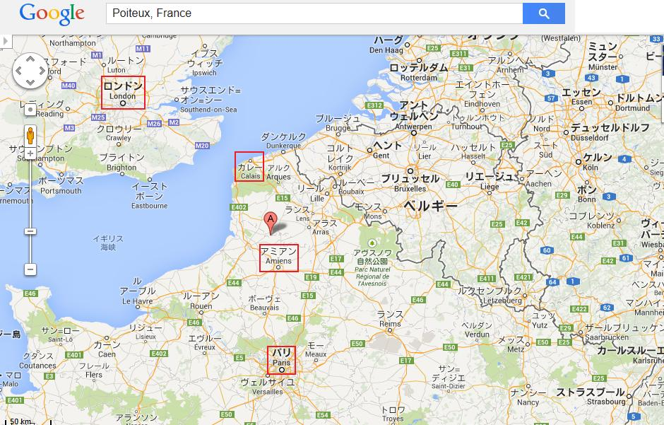
漠然として要領を得ない内容だ。国王の事が書いてないのはよくない。あたかも何か悲劇が起こって、電報の送り手が
あの悪漢は明らかに伯爵夫人の代理人として動いている。同夫人は何らかの緊急用件で英国に呼び戻された。だから結局、海峡は渡ってないようだ。おそらく特別列車転覆計画が成功したことを知って、満足したのだろう。とにかく同夫人は英国へ帰ってきた。監視しなければならない。それをやれるのはロナルド・ホープ大尉だけだ。
レックミア侍従がやっとホープ大尉を見つけたのはジェシの宿屋、そこでジェシと妹のアダと語り合っていた。
ホープ大尉が嬉しそうに言った。
「何でもしますよ。今や晴れ晴れです、ジェシが自由になったから。レックミアさん、実にうまくやりましたね」
「ただの駆け引きです。結局アネットは嘘を言ってない。あの晩、伯爵夫人邸で、絶対にジェシ・ハーコートお嬢様を見ていない。あなたは、ずる賢い伯爵夫人を見張って、行動をすべて小生に報告してください。小生は今晩、海峡を渡りますから、一日か二日、留守にします。一つ忘れないでほしいのは、我々が探している書類が依然としてサーンス伯爵夫人邸にあるということです」
意味深な伝言を残して、レックミア侍従は出発した。海峡横断は順調だったが、ポワトーへたどりつくまでが大変だった。ローカル線の本数は少ないし、線路不通で大混乱しているようだった。
翌晩の夕暮れ近くになって、レックミア侍従は隣村に着いた。そこに一軒のホテルらしきものがあったので、まず部屋を探すのが得策と考えた。マザロフとばったり会うなんて、避けねばならない。
赤帽が手伝いを申し出たので、レックミア侍従は喜んで利用した。赤帽が話した事故の様子は、軌道欠陥が原因であり、とても妙なことだと言う。だって、現場の線路は当局が整備したばかりだったからだ。レックミア侍従の案内人、赤帽の深読みでは、警察はその説に懐疑的で、数人の容疑者を逮捕したと言う。レックミア侍従が訊いた。
「今ここによそ者が泊まっていないか」
赤帽が答えた。
「一人います。紳士が一人ホテルにいます。デュク・ド・モルネイに会いに来たそうですが、不在なので、ホテルで待機中です」
「立派な紳士で、黒い口髭と、尖ったあごひげか」
とレックミア侍従が問うた。
赤帽がその通りですと言ったので、レックミア侍従はそれ以上、尋ねなかった。マザロフが近くにいることがよく分かった。でも奴はここで何をしているのだろう、目的の列車転覆は完遂したのに。
だがひとつ疑問があった。アストリア国王がどうなったかだ。赤帽がじれったいという風に片手を上げて説明した。
「謎です。事故が起こった時、国王付きの紳士が二人いました。二人ともひどい怪我はありません、旦那もご存知でしょうが。そしてこの村の田舎家二軒に収容されました。時々、先ほどのホテル滞在の紳士が、お見舞いに来ておられました」
レックミア侍従が独り言。
「諜報活動だな。マザロフは抜け目がない。いま国王は？」
赤帽が答えた。
「王様の事は誰も何も知りません。すっと消えました。誰かの話では、無政府主義者にさらわれて、すべて卑劣な陰謀だとか。あの二人の紳士は気絶して地面に倒れていたので、何も見ていないのです。王様が消えたことは、皆と同様、二人にとっても、まったく不可解で、困っておられます」
レックミア侍従は、そんなことなど些細なことだという風にうなずいたものの、ひどく狼狽した。国王をこのようにさらうとは何が目的だ、どんな意味があるか。国王が死んだら敵のゲームは、もう努力せずして容易に進むだろう。
もし、国王が無傷で脱出をたくらんだとしたら、そして、もしこの好機を利用して事実上看守同然の二人から逃げ出したとしたら。今頃一人、パリで遊び呆けているかもしれない、他人にさんざん迷惑をかけながら。
レックミア侍従は真相を突き止めねばと決心した。あえて、マクスウェル氏や、アレクシス大尉の所には行くまい、マザロフに会う恐れがあるからだ。絶対この村にいることを、マザロフに知られてはならない。
さっそく宿を見つけて潜り込み、マザロフの目を逃れた。新鮮で質素な食事にありつき、手早く食べた。神経が張りつめており、こんな状況下では、食べた気がしない。食事が終わると、煙草を吸って、考えを巡らせた。
不意に思い出したのは、ペリトリ王子からの電報だ。ピエール・ロチの小屋を訪ねろという指示だった。ピエール・ロチはお人好しのほかに取り柄がないということが分かった。奴がどうやって生計を立てているかについては、はなはだ疑問だった。森の小屋に住んでおり、事故発生現場に近かったので、一番に駆けつけているはずだ。
すべてが興味津津で、ロチをすぐに探しに行こうと決心した。男を突き止めるのは難しくなかった。森の中で柵を作っていた。英国人が歩いて来るのを見て、明らかに警戒した。
レックミア侍従がそろりと声をかけた。
「そんな柵では役に立たんぞ。キミに会いにはるばる英国から来た。そうするように電報を受け取った。分かるか」
男はうなずいて、おもむろに目をしばたいた。疑わしそうに細めた目をレックミア侍従に向けた。ポケットから汚い紙きれを取り出して、そこに書かれた乱雑な署名を黙読して、こう言った。
「知り合った紳士が、あっしにとてもよくしてくれた。夕べこの小屋に泊まった。立ち去る前に、同じような紳士が英国からあっしに会いに来ると言った。その紳士の名前はある文字で始まると言ってた。旦那、よろしければその文字を言ってくれますかい」
レックミア侍従はとうとう目的の人物にたどりついた。喜んで回答者になろう。この注意人物に笑いかけた。
「エルという文字で始まり、綴りはレックミアだ。これで十分だろ、もっと証拠が欲しいか」
ロチが満足げに言った。
「まさにその通りでさ。レックミアという名前だ。ところで、旦那、きのう事故が起こった時、あっしは近くにおった。あっしが、けが人を運び出した張本人だ。運転手と助手は死んじまった。一人の紳士は意識不明じゃったが、あとの二人は少し意識があった。その男が言うに、三番目の紳士に気をつけろ、絶対に近づけるな、そして指図するまで誰にも何も言うなと、頼まれただよ。ただあっしの名前を
レックミア侍従がイラついて言った。
「報酬は払う。小屋に案内して、そこに隠した男と話をさせろ」
ロチが目を見開いた。
「話をさせろだと。あっしは分かんねえ。旦那も分かんねえ。さ、こっちへ来なされ。あっしは口をつぐんで誰にも言わねえ。危ねえ橋だけど、金には逆らえねえ。こっちでさあ。だんな、付いて来られますかい。鼻の鋭い犬がいますんで。こっちだ」
やっと小屋にたどりついた。用心して扉を閉めた。小さな下屋の中に、麦わらの山があった。ロチが慎重にどかし始めて、ささやいた。
「見なされ。よく見なされ。前に見たことは」
レックミア侍従が一瞬、びっくりして後ずさり、おじけづき、ほとんど狼狽せんばかりだった。というのも、目に飛び込んできた死に顔が、不運なアストリア国王その人だったからである。
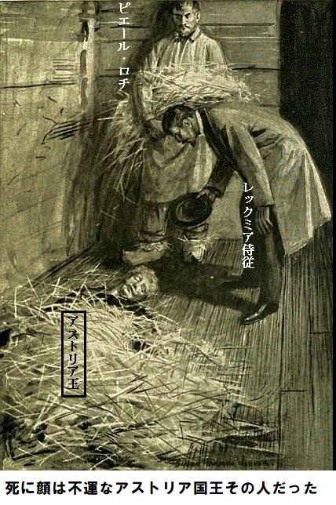
第四十四章 崩御
紛れもなくアストリア国王の
もしこの時点でペリトリ王子が居たら、ひと言ふた言で多くのことが分かっただろうが、王子は電報を打った後、立ち去ったようだし、どうやらそれ以上詮索しなかったようだ。でも何か、王子独自のゲームをやっている。
レックミア侍従がロチに訊いた。
「この紳士のことを、何か知ってるか」
ぼろ服を着た農民は関係ないと言う風に両肩をすくめた。明らかにこの男は自分が国際的な悲劇に立ち会ってることなど微塵も知らない。男が信じていたのは、特別列車転覆は事故ではなく、共産主義者の仕業だろうということ。自分のやったことで金がもらえれば、骨折りも報われようというもの。レックミア侍従が農民を前に最強の説得にかかった。
「もっと金をやるぞ、黙っていればだ。サツにタレこんだら、色々まずいことを聞かれるし、一銭ももらえない。白木の
ロチの瞳がギラリ。そんな大金は野望の遥か彼方だ。働かなくても、余生を暮らせる。うんうんと首を縦に振った。
「これで決まりだ。いいか、きょう遅く、箱の送り先を教える。アミアン駅員の受取書を、俺の所へ持って来い。金は現金で手渡す。だから何も疑われない。あした、同じ時間に、ここでまた会おう。分かったか」
ロチがコックリうなずき、目が星のように輝いた。明らかに理解した。
レックミア侍従は、隠れ宿に戻って、長い手紙をパリ警察本部に書いた。午後のうちに配達されるように、特別郵便で発送した。
暗くなるまで待ってから、マクスウェルとアレクシス大尉を探し始めた。この方針はとても危ない、マザロフがすぐ近くにいるからだ。とりわけ、あのロシア人に見られないようにした。
国王をアストリアへ帰国させないために、悪辣に、故意に特別列車を転覆させたことは、先刻承知だ。奴らは己の目的を達成するためなら、人命などおかまいなし、どんなこともやりかねない。
しかるに、奴らが望んだように、完全に成功したとは言えない。成功報酬は目前だったけれど。明らかにマザロフは成り行きを報告するために、近辺をうろついている。そして、国王が忽然と消えたことで、困惑し、幾分不安になっている。国王が崩御されたことなど、知りようもない。さもなくば既に、ピエール・ロチを尋ねていたことだろう。
レックミア侍従がこれらを頭であれこれ考えていたのは、日没後マクスウェルが伏せている小屋へ行く道中だった。マクスウェルに宿を提供した純朴な農民は既に寝ていた。扉に鍵がかっていないことから、おそらく医者を訪問させるためだろう。そっと扉を開けてのぞいた。
農家の共用居間が、
顔はひどいあざだらけで、腫れあがっているが、手足が絶えず動いているから、神経は傷んでいない。マクスウェルが両目をドローンと開けたのは、レックミア侍従が肩に触った時だった。
マクスウェルがうわごとを言った。
「あっちへ行け。心配するな。俺は大したことはない、ひどく眠いだけだ。頭を上げられない。あの百姓の事は知らん。奴に手持ちの金は全部やった。どうした？」
マクスウェルの眼の色がさっと変わった。にこにこ顔のレックミア侍従を確認したからだ。マクスウェルが小声で言った。
「見つけてくれると思っていました。うまくいきましたか。奴らを阻止できましたか。あの事、つまり国王の事は？」
レックミア侍従が即座に答えた。
「知っておる、全てだ。国王は崩御された。亡き骸を
「でも国民は王が亡くなられたことは知らないでしょう」
とマクスウェルが反論した。
「国民は知らない。君がうまく隠してくれた。ペリトリ王子もそばにいたに違いない。電報で小生に指示を送ってくれた。君の知り合いのピエール・ロチにも会った。奴の小屋で、麦わらに隠された国王の亡き骸に対面した。全部、君がやったのか」
そうです、とマクスウェルがブスッと答えた。
「事故発生時、閃光のように頭をよぎったのは、全て策略で仕組まれたということです。客車は文字通り、粉々に壊れ、我々は線路上に投げ出されました。運転手と、釜焚きは死にました。私とアレクシス大尉とで、機関車まで行って確認しました。国王は身動きひとつせず横たわっておられ、私も気が遠くなりました。このとき、ピエール・ロチが来たのです。有り金全部をロチにやって、国王を人里離れた所へ運び、私が指示するまで、何も言うなと命令しました。ロチは命令に従ったと思いますが」
「完璧にやった。国王は崩御された。即死だったに違いない。本件を秘密にしてくれて、心からお礼を申し上げる。敵側が事故の全容を知らない限り、我々に勝機がある。国王を英国へ秘密裏に運ぶよう、手配は終わった。マザロフは、何かつかめるかもしれないと思って、ここをうろついている」
「何もつかめないでしょう。ところで、新しい味方のペリトリ王子は？」
「わからない。ちょっと、うがった見方をしてるけど。いま口にしても無駄だ。医者の見立てはどうか」
「全身打撲です。時々気分がよくなりますが、目をあけておれません。一服盛られたような妙な気分です。とても喉が渇くので、ご覧のように、いつも横に大ジョッキのレモネードを用意しています。いま、またひどく疲れが出てきました」
マクスウェルが瞼を閉じた。小屋の外から足音が聞こえ、扉がそっと開いた。レックミア侍従が一瞬の本能で、布の後ろに隠れ、咄嗟に避けると、やって来たのはマザロフだ。布をちょっとめくると動きが丸見えだ。マクスウェルはぐっすり眠っているかのよう。
マザロフの顔に不気味な笑いが浮かんだのが見えた。行方不明の王付き護衛官が無力でここに長々とのびていればいるほど、マザロフ一味にとっては都合がいい。マザロフはポケットから小瓶を取り出して、マクスウェルのレモネードに滴下し始めた。相変わらず無気味な笑いを浮かべて、扉の方へ出て行った。
果たしてアレクシス大尉にも同じことをするのか、それとも、仲間の女がやっているのか、とレックミア侍従は案じた。
マザロフのあとについて外へ出ながら、怒りというより空恐ろしくなった。アレクシス大尉にも同じことをするのか、見届けてやる。
おそらくこれが最後になるだろうと、レックミア侍従が独り言を言ったのは、その朝、マザロフの息の根を止める邪魔をしたからであった。
マザロフが歩足を進めた小さな村ホテル近くで、役人風の男が二人突っ立っており、一人が手に青い紙を持っていた。その男が進み出て、深々とお辞儀をした。
「マザロフ王子、本官はまことに光栄であります。おっと、そうでありました。あなたをパリ刑事局により収監します。本官の手に持っているのが逮捕令状であります。一緒にパリへ同行願います」
マザロフが毒づいて威嚇した。告発内容を知りたがった。罪状が読み上げられると、威嚇と脅しをあきらめ、落胆のため息をついた。
「人違いだ。どこへ連れて行く気だ。パリか。参ったな、証拠が堅すぎる。俺の負けだ」
第四十五章 検死
差し当たりマザロフはとにかく逮捕された。レックミア侍従がパリ警察署長に当てた手紙は無駄じゃなかった。侍従が自称マザロフ王子という男の経歴を詳細に知らせたからだ。
実を言うと、この男は当時最強の極悪人の一人だった。フランス警察が、この男の別名を、昔の罪で長いこと追いかけていたところ、レックミア侍従がその間の空白事実を詳細に教えたので、本人確認につながった。
その上、パリ警察長官とは昔からの知り合いで、レックミア侍従の見解を高く評価していた。こうしてレックミア侍従の手紙を受け取った直後、マザロフを捕らえて拘束した。マザロフはとても狡猾な悪人だが、女王の老侍従にとっても、好敵手以上の存在だった。いまや辺りに邪魔するものはなくなった。
不運な国王の亡骸を英国へ移送する障害はまったくない。少なくとも今は、国王の死を誰にも知らせてはならない。当分、秘密にすることが重要だ。もちろん、女王とマクスグラジャ大将には報告しなければならないが、そのほかの人は別だ。
翌朝早く、レックミア侍従はアレクシス大尉とマクスウェル氏に会った。両氏とも快方に向かっているようだ。経過を説明した。
「二人とも一日か二日して、また協力してください。その間、お二人にとって実に好都合ですが、ここに病人として居てください、誰にも見つかりません。でも医者は手配します。小屋で伏しているあなた方を診察させます。国王の事については、お二人とも何も知らないし、何も言えないし、無関係になることです。国王は逃亡された。さもなければ、とうに見つかっています。お分かりですね」
念押しする必要はなかった。心置きなく、レックミア侍従はロンドンへ直帰した。煙草を吸いながら、終局までを考え抜いた。
サーンス伯爵夫人のあくどい策略をはばむ道が見え、書類も取り戻せる気がする。でも手の内は少しも見せない。おそらくロンドンにちょっとした騒動が起こり、国際間の評判に関わるややこしいこともあるだろうが、必ず決着させてやる。
レックミア侍従は例のぞっとする荷物を携えて、マクスグラジャ大将の部屋に直行した。見たところ、大将はかなり良くなっており、仕事に復帰できそうだ。老兵が受けた肩の浅傷は全快しており、素晴らしい体躯は血の気を失っていなかった。大将が叫んだ。
「会いたかったぞ。君がロンドンを離れたと聞いて、例の奇妙な事件を片付けに行ったと確信したよ。偶発事故だったのか」
レックミア侍従があからさまにさげすんだ。
「全然違います。一瞬でもそう思われましたか。あれはマザロフが計画的にやったのです。共謀者が誰かはこの際関係ありません。とにかくやったのです。国王をアストリアへ絶対に帰国させないためです。だが一つ想定外がありました。国王の蒸発です」
「アホの強運だな。国王だけが無傷とは。これを好機に、看守から逃げた。護衛官が重症だと言うのに、平気で馬車を呼び、パリへ行った。金は持ってないが、アストリア国王ならいつでもフランスの首都で金をかき集められる。そうだろ」
レックミア侍従が真面目な顔で言った。
「いいえ、そうではございません。国王は崩御されました。亡骸をいま持って来たところでございます。いいですか、これは誰も知りません。でも大将には崩御を伏せた理由を申し上げます」
マクスグラジャ大将がレックミア侍従の話を熱心に聞いた。いかつい顔が深い憂鬱に染まった。
「とても残念だ。女王にはひどい痛手になろう。全てに耐え、苦しまれたあと、アストリアがロシアに落ちたことを知って、絶望されよう。全力を尽くされたのに」
レックミア侍従が平然と言い放った
「アストリアはロシアの手に落ちません。敵はずる賢こくて、手に負えなくなりつつあります。とは言え、我々仲間内以外、崩御を知りません。そのうち説明しますけど。一方、国王は埋葬しなければなりません。すぐ死亡診断書が必要です。時機がくれば、公表できます」
「そこいらの医者からは無理だろう」
とマクスグラジャ大将が言った。
「大将、その点は認めます。死亡診断書はバーニ先生からもらいます。先生は国王がロンドン滞在中、何年間も折りにふれ手当てされました。ショックは命を縮めますよと、国王によく注意されていました。小生に言わせれば、国王はショックで崩御されたのです。とにかくバーニ先生を呼んで意見を聞きましょう。大将、使ってない部屋がありますか。そこでつらい仕事をやっつけて、遺体を慎重に密封しましょう。部下を退去させてください」
やっと段取りがついて、少しして、バーニ医師がやってきた。長いこと慎重に死体を調べてから、診断を下した。
「どこも痛んでいない。死因は暴行とは関係ない。確かだ。突然の恐怖によって、神経と心臓が、褐色包装紙のようにぐしゃっとなった。ショックで心臓が止まり、アストリア国王は崩御された。はっきり言えることは、アストリア国王の遺体検死に立ち会い、その死因がショックだと診断したことだ。絶対自信があるから、患者が一般人でも検死はしないだろう」
「では直ちに埋葬してよろしいか」
とマクスグラジャ大将がきいた。
バーニ医師が慎重に答えた。
「いや、ノーだ。これから医術外のことを言うが、ごたごたには巻き込まれたくない。政治的理由からも、アストリア国王の崩御を大衆に知らせてはいけない。死因についてはいつでも証言する。だがな、国王は一般人のようには埋葬しないものだ。ふつう、防腐処理をする。数日中に悲報は大衆に知れ渡るだろう。そのあと亡骸をアストリアへ運び、国葬されよう。防腐処理人たちに、遺体が高い身分だと知らせる必要はない」
バーニ先生のおっしゃることは絶対に正しいと、レックミア侍従が直感した。更に自分の予想が正しければ、じきに皆に知れ渡るはず。みんないろいろ聞きたがるだろうが、答える必要はない。いまは、女王に上奏すること意外、何もない。レックミア侍従がマクスグラジャ大将に言った。
「大将に是非やってほしいのです。大将は女王と昔からの知り合いですし、あなたの話であれば、小生など足元にも及びません。でもアストリアに関する限り、すべて順調でございます。ロシアはつまずいています。そして、大将と小生、その他一人か二人が、欧州史上最悪かつ極秘の政治秘密を墓場まで持って行くことになりましょう。幸運を祈ります、大将」
マクスグラジャ大将が直ちに女王のホテルへ駆けつけた。驚いたことに、女王は少しも
「お待ちしておりました。もしお越しいただけなかったら、こちらから押し駆けるつもりでした。聞きましたか、いい知らせを。国王のいい知らせですよ」
マクスグラジャ大将がちょっと警戒して女王を見た。ごたごた続きで脳のタガが外れたか、と思いがよぎった。明らかに女王は正気を失っておられる。
「いい知らせって。マーガレット、それはない。誰かに騙されておるぞ。心して聞きなさい、凶事だよ、とても悪いことだ」
「でも国王は脱出されました。転覆列車から脱出され、素早く秘密裏に祖国の首都にはいられました。おそらく人生の中で、ただ一つの人道的、利他的行動でしょう。ひどい事故に遭いながらも、自ら進んで大臣に会っておられます。トマニが電報で知らせました」
「不可能だ。妃殿下、国王は崩御された。事故で亡くなられた。チャールズ・マクスウェル氏が重傷を負いながらも、ご遺体を安全な場所に運んだので誰も知らない。そのあと、ご遺体は英国へ運ばれた。レックミア侍従が手際よく配送してくれた。ご遺体はいま私の部屋に鍵付きで安全に保管してある。私も見たし、レックミア侍従も当然見ているし、バーニ先生も死亡診断書に、死亡原因は全身ショックだと記された。私がここへ来たのは妃殿下に悲しい知らせを報告するためだ。お願いだからそんな誤報に惑わされず、元気を出してくれ。もし自分の目で確認したいなら……」
女王はまごついたように、額を片手でぬぐわれた。同時に、傍らのテーブルから灰色の電報を取られた。
「トマニの電文を聞きなさい、いいですか」
『国王無事。事故から生還。面会済み。現在諸大臣と相談中。決定次第、女王に報告予定。トマニ』
「ポール、これはどういうこと？」
人生でただ一度、マクスグラジャ大将は返答できなかった。
第四十六章 二局の指し手
マクスグラジャ大将が一瞬返答に詰まった。心によぎったのは、誰かが、単独か集団で、ひどい悪ふざけを女王に仕掛けている。
でもちょっと考えれば、そんなことは不可能だと分かる。第一に電報は暗号で、女王とトマニの連絡手段であり、トマニはアストリア政府部内で女王が唯一信頼できる味方だ。第二に、トマニの忠義は疑問の余地がないことだ。
女王が最初に口を開かれた。マクスグラジャ大将に近寄って、震える手を大将の腕に置かれて言われた。
「あなた間違っていませんか。でなければトマニが……、いや一瞬ともトマニは疑いません。絶対の信頼度はあなたと同じですから。しかし、あなたの言うことは……」
「妃殿下、国王は崩御された。大惨事で亡くなられた。ご乗車の特別列車がロンドンとパリの間で転覆した。いいですか、信頼できる少数の者を除いて、このことは知りません。これらの者で妃殿下のお命は安全に保たれているのですぞ。実を申しますと、大惨事は全くの偶発事故じゃなく、故意にサーンス伯爵夫人とマザロフ王子が己の目的の為に実行したものです。実行犯が姿をくらまし、逮捕できてないので、不安ですけれど。列車の運転手と釜焚きは死にましたから、二人の証言は得られません。アレクシス大尉と、チャールズ・マクスウェル氏は奇跡的に脱出しましたが、二人とも重傷です。マクスウェル氏が現場を仕切り、なんとか国王の
「でも大将、電報、電報は？ トマニによれば、国王は首都で大臣たちと密談しています。たぶんこの瞬間も……」
「ですが妃殿下、確かに国王はお亡くなりました。これには何らかの奇妙な謎があり、そのうち分かりましょう。国王が崩御されたことを、必要ならお見せします。ご遺体は、ロシアに干渉の口実を与えないように密入国させました。とにかく当分は、事態を知られないことが肝心です。アリックス皇太子をかつぐまで、公表すべきじゃありません」
「証明できるとお考えですね」
と女王がかすれ声でおっしゃった。
「その通りです、妃殿下。女王の権力は失われたものとお考えください。ご承知のように、国王のお命と共に尽きたのです。ですから、私的な感情を脇に置き、あらゆる苦悩に耐えて、ロシアが事態を知る前に、アリックス皇太子をアストリアへ呼びよせねばなりません。一たびアリックス皇太子が王位継承に指名されれば、ロシアは無力です。この方針に従えますか」
「大将のおっしゃる厳しい事実が本当なら、喜んで従います」
「絶対に本当です、妃殿下。国王の崩御は疑いようがありません。最後まで言わせてください。全てをレックミア侍従から聞きました。それによると、ペリトリ王子から妙な電報が来て、直ちに事故現場へ行けとの要請だったそうです。ある農民の小屋を訪ねて、身元確認せよとのことです。そこで国王のご遺体を見たそうです。ご遺体は英国へ送られて、現在私の部屋に鍵をかけて安置してあります。私も、レックミア侍従も、バーニ先生も見ました」
女王が手を額に当てて、絶望の表情を示された。
「すべてが、まごつき、急過ぎて、混乱の極みです。トマニの電報を受け取った直後に、あなたが来てこんな話をされる」
「私は冷酷にも薄情にもなりたくありませんが、しばらくその電報の事は忘れてくださいと、お願いしなければなりません。そのうち謎の部分は間違いなく晴れます。いま最も肝心なことは、アリックス皇太子と連絡がつくまで、国王の死を隠さなければならないことです。あなたと私の夢については何も言えません。今は破綻していますから。我々の全精力を、ロシア排除に集中しなければなりません。そして国王を埋葬しなければなりません、お分かりですね」
「でも必要な書類がないと、できないでしょう、英国では」
「はい、知っております。英国のやり方は外国と違います。とても運がいいことに、バーニ先生が味方についております。往診に来てくれて、死因はショックのせいだと証明してくれたので、もう検死は一切必要ありません。表向き、先生は列車事故について何も知らないことになっており、いきさつを話すことはあり得ません。あとで、王妃であるあなたが公式に、アストリア国のエアノ王がみまかったと、世界に発表されるまで話しません。バーニ先生のお勧めで、遺体は防腐処理してアストリアに運び、埋葬せよとのことです。お分かりのように、すべてが我々の思い通りに進んでおり、ただ勇気を持って、好機を逃さないことです」
女王はしばらく返事をされず、部屋を行ったりきたりして、考えがまとまらなかった。女王の手から、するりと王国が落ち、野望もすべてポトリと地面に落ちた。コップが屈辱で満杯になり、一滴残らず飲み干す羽目になった。
さはさりながら、失ってみれば、あらゆる慰めになるのは、これから平和と静寂が待っていることだろう。最近までずっと、能力以上のことをやってきたのだから。
ポール、とやさしく呼びかけて、マクスグラジャ大将を驚かせた。
「すべてをあなたにゆだねます。女性の役割以上のことをやって、失敗でした。最初から失敗すると知っていたら、屈辱はこれほど苦くなかったかもしれません。国王は亡くなりましたが、国王とわたくしのためにも、後悔はしません。結婚生活は悪夢の連続でした。終わってうれしいです。長年苦しめられたことを思い出せば、どうしてこれが悲しめましょうか。これからは政治に関わりません。もちろん、アリックス皇太子をしっかりと王位後継者にした後です。国民はアリックスについて行くでしょう。不運にもわたくしにはついて行こうとせず、単なる興味本位になりましたが。あなたが来たとき、アストリアへ帰国する用意ができていました。お忍びで帰国して、ずっと英国にいると思わせるつもりでした。そして、あのすばらしい乙女のジェシ・ハーコートを同行するつもりでした。都合よく、しばらく仕事を離れられたでしょうに。それに勇気と献身は申し分ありません」
マクスグラジャ大将が返事しないうちに、ジェシが部屋にはいってきた。地味な黒服を着ており、明らかに外出着だ。女王の青ざめたお顔と、マクスグラジャ大将がいるのを見て、はっと驚き、扉の方へ戻った。女王が引きとめられた。
「これは私的な会談ではありません、少なくともあなたにも関係があります。全てを知ってもらいたいのです。絶対的に信用していますから。マクスグラジャ大将が驚くべき知らせを持ってきました。余りにも妙なので、しばらく信じられませんでした。国王が亡くなられたそうです」
「亡くなられたですって。しかし電報では、妃殿下。味方のトマニが……」
「非難はもってのほかです。それに、秘密暗号に誰かが侵入したというのも信じられません。でも、国王は崩御されました。大将がすべてを話してくれます」
マクスグラジャ大将がもう一度、話をジェシに聞かせると、ジェシは目を丸くした。ボンド通りで憂鬱で退屈なお仕事を毎日やっていたのは、何年前だったろうか。あんな生活を辞めたのは何年も前のような気がする。
マクスグラジャ大将が話すと同時に、謎が分かった。ペリトリ王子の名前が一瞬、脳裏に浮かんだ。ジェシが叫んだ。
「ペリトリ王子、ペリトリ王子が、レックミア侍従へその変な電報を打ったのですね。そのとき、ペリトリ王子は全てを悟ったのかもしれません、事故のあとです。それに王子は国王に扮した人でもあります。賭けの為に、愚かにもサーンス伯爵夫人たちの罠にはまりました。そしてマーキュリー紙の編集長にアストリア王として、まかり通りました。さあ、何が起こったか分かりますね」
マクスグラジャ大将が口ごもった。
「ああ、とても簡単なことだ」
ジェシが続けた。
「ええ、解けましたね。ペリトリ王子はあの事件を心から詫びておられました。償いの為なら最善を尽くすとおっしゃいました。世間で浅はかと言われているより、遥かにお利口さんです。こんなこともあろうかと、変装して王様のあとを追っていたのです。事故当時、そんなに遠くにいませんでした。そして王様が亡くなったのを見て、突き進みました。もう一度、アストリア王を演じたのです。国王に変装し、おそらく絆創膏を使ったり、顔を塗ったりして、全然気づかれないようにしたのでしょう。王様は首都に招待されていましたから、代わりにペリトリ王子が行かれました。だから、トマニから電報が来たのです。トマニは変装を見破れなかったのです。いまごろ、アリックス皇太子も確実に現場にご臨席されておられます。喜劇役者の昔からの定番ですよ、危機に登場して、その場を救う」
マクスグラジャ大将が一言、
「その通り。偶然にも、ズバリ的を射た」
第四十七章 国体維持
これ以上言う必要はなかった。二人の聞き手は国体が救われたと感じた。同時に、ジェシが絶対正しいことも感じ取った。論理に無理がない。単純明快だもの。女王が、せかせか動きを止められて、扉の方へ歩かれた。
「これで決まりですね。ここにいるお嬢さんが問題を解いてくれました。でもやることがまだたくさんあります。そのあと安全になり、アストリアは狼の支配から逃れられます。国王に合わせてください」
マクスグラジャ大将は反対しなかった。自分が真実そのものを話していると、女王が確認された方が、おそらく最終的にはいいだろう。
続く誠にいたわしい時間を過ごされてから、女王は再びホテルへ戻られた。
戻られるが早いか、メリヘイブン閣下の来訪を告げられた。閣下は部屋にはいってきたとき、
「妃殿下、妙な話を聞きました。私の姪が真実を暴露しました。そうか、ここにいるこの若い娘が、昨夜の仰天事件の数々に関係しておったのか。どうにも認めたくないが……」
「閣下、お願いですから、今回だけは外交官とか、大臣とかを忘れてください。これはあなたと、わたくしの個人的な名誉にも深く絡んでいます。どうか信じてください、入れ換わったことを知らなかったのです。ここにいる娘さんを閣下の邸宅から連れて行くまで知りませんでした。でもこの娘さんの勇気と大胆さは認めざるを得ないでしょう。この娘さんがあらゆる危険を冒してお助けした人は、今まで会ったこともないお方でしたのよ。この娘さんにとっては奇妙な立場でした」
「小娘には不可能な身分だ」
メリヘイブン閣下が吐き捨てた。
女王もちょっと冷ややかに言われた。
「そうは思いません。咄嗟の行動だったのです。あなたの姪御さんが全てを話されたのなら、認めなくては」
メリヘイブン閣下が続けた。
「妃殿下、私の姪が全てを話しました。愛する人を救うために大胆な行動を計画しました。姪の友達全員に、自分が邸宅正面から出て行ったことを知られずに、邸宅を脱出する状況を作りたかったのです。そして、姪のベラは成功しかかりましたが……」
女王が声をあげられた。
「成功しかかったですって。成功したのですよ。紛失書類を手に入れました。また失くしたのも本当ですが、サーンス伯爵夫人から横取りして、強力な武器を奪ったのですよ。マクスウェル氏への非難を振り払おうという大胆な試みが……」
メリヘイブン閣下が言い訳をした。
「事情が分かったので、マクスウェル氏は少しも非難できません。ランシング大尉が終始犯人でした。マクスウェル氏のお粗末な所は同夫人とちょっと不倫関係になって、おっとこれは同夫人が強要したのですが、これがために疑いがかかったのです。マクスウェル氏が荒っぽいことをして、同僚のランシング大尉を救おうとして、自分にも疑いがかかったのです。マクスウェル氏の上官は将来、許しを請う必要がありません。事実、ランシング大尉が自殺前に書いた手紙を入手して、全てに責任を認めています」
「でもそれを公表する必要はありませんよ」
「公表するつもりはありません。噂は消します。全ては単なる愚かな新聞の作り話にします。それでも、盗まれた書類は一度、サーンス伯爵夫人の手に渡りました。そしてグレイクスティーン代理大使はあたかも内容を知ってるかのように、書類を持っているかのように振舞っています。おそらく単なるはったりでしょうが、とても不安です」
ここでジェシが訊いた。
「いずれに致しましても、その書類が大使の手元にあるかないか、はっきりしないということでございますか。大使は持っているかのように振舞われるのでございますか」
メリヘイブン閣下が笑顔で答えた。
「とても賢いお嬢さんだ。そこがまさに重要だよ。私の相手はとても狡猾な男でな、私を
女王がおっしゃった。
「事の次第をわたくしからはっきり申し上げましょう。公式にはまだ知らせませんが、知れば知るほどグレイクスティーン代理大使と渡り合うのがますます有利です。これからお話しますがきっと驚かれるでしょう、外交官として」
女王は自慢なさらなかった。メリヘイブン閣下は心底驚いた表情を示した。部屋をうろうろ動き回り、独り言を言った。
「今まで誰が、こんなすごいことを聞いたことがあろうか。確実に知りたいなあ、紛失書類がどうなったか。誰か在処を知らないかなあ」
ジェシが言った。
「そこまでは存じ上げませんが、知っている人は言えます。レックミア侍従が秘密を握っておられます」
メリヘイブン閣下がフフと喜び、不機嫌な渋面が消えた。
「きみはなんて賢い娘さんだ。問題が解決した暁には、きみのやったことを許さざるをえまい。レックミア侍従というきみの考えは素晴らしい、実にすばらしい。すぐに出掛けよう」
夕刊の第一刷りは又してもアストリア記事一面だった。新聞売り子たちがメリヘイブン閣下の前を走りながら、見出しを叫んでいた。
明らかにアストリア首都発の噂では、敵がまだ、主導権を握ってない。エアノ王が再び首都に帰国され、王位在任中ただ一度だけ、不満を抱く大臣たちと
エアノ王が認めたのは、在位中模範的な君主でなく、肉体的にも知能的にも、最高位にふさわしくないということだ。後継者を問われれば、アリックス皇太子を指名したい。まさにあらゆる理由から信じられる人物が手近にいた。
メリヘイブン閣下は歩きながらテレフォン紙の記事を読んで、ほくそ笑んだ。ひとたびアリックス皇太子が後継を受諾すれば、ロシアに勝てるだろう。
もし敵側が全ての切り札を己の手にもちながら、それを見逃すほどおろかだったとすれば、それは外交成果の一端であり、メリヘイブン閣下の大いなる喜びだ。夕刊紙のごたごたや、グレイクスティーン代理大使とのせり合いも、忘れた。
レックミア侍従は自宅にいなかったが、指示を残しており、もし誰か会いに来たら、小一時間ばかりオリエント・クラブにいるということなので、メリヘイブン閣下はそこへ出向いた。
見ると、侍従が夕刊紙を読みながら、長い黒葉巻をくゆらしている。その様子はまるで暇人で、全く無益な人のようであった。だが、メリヘイブン閣下の顔を一目見るや、全てがばれたと知った。新聞を横に置いて、閣下を隅に招いた。
「閣下、驚くようなお話を聞かれたと思いますが」
メリヘイブン閣下はそんなことじゃないという。本題にズバリ切り込んだ。単刀直入で、要点を突いた。結論を言った。
「私がここに来た理由は、あの忌々しい書類の奪回方法を教えてくれないかということだ」
「材料を提供して、お助けできると思いますし、それほど先ではございません。慎重に機雷にマッチを仕掛けましたので、爆発をいつでも起こせます。ご存知のように、小生は国際的な策略家の経歴に、大いに興味を持っており、とりわけマザロフ王子と、サーンス伯爵夫人の経歴に興味があります。こう申し上げましょう、もしですね、欧州警察がある事件を捜査しているとします、それが高貴な淑女だったら、たぶん始末に困るでしょう。マザロフ紳士については、裏情報を提供して、パリで逮捕して、拘留しました。大誤算しなければ、マザロフは数年間、世界を騒がす事はないでしょう。さて、サーンス伯爵夫人も、しばらく邪魔しないようにして戴きたいですね。同夫人に関する確実な情報があり、検証したいです。そこで、手段を講じました」
「で、書類をおがめるのだろうな」
とメリヘイブン閣下が尋ねた。
レックミア侍従は当然そうなると思った。説明し始めたその時、興奮した一人の男が喫煙室に駆け込んできて、明らかに何かスキャンダルをつかんでいるようだった。窓近くに陣取った二人を、さも聞いてよという風に、掴みかからんばかりだ。
「最新ニュース、ほやほやだ。一体誰が想像したろうか。お金をたっぷり持った高い身分の、華麗なご婦人だ。誰かって。もちろんサーンス伯爵夫人だ。自家用馬車に乗り込もうとしている時に、警察に逮捕され、ボウ通りへ連れて行かれた。まるで窃盗常習犯のようにだ。文書偽造とか何とか、そんな罪だ。なんで？」
レックミア侍従がゆっくりと椅子から立ち上がり、煙草を暖炉に投げ捨て、ささやいた。
「さ、行きましょう。一刻の猶予もありません。小生の計算に大間違いがなければ、あの書類はすぐ閣下の手に戻りますよ」
第四十八章 遂に書類を
メリヘイブン閣下はレックミア侍従の後について、クラブの階段をいそいそ降りた。今や、週末休暇にうきうき、興奮している学生気分だ。外交官が単なる男になり下がった。レックミア侍従に質問を浴びせた。侍従が答えた。
「馬車に乗った方がよろしいかと思います。直ちにマクスグラジャ大将のマンションまで行かねばなりません。そのあと、サーンス伯爵夫人邸へ行きましょう。ええ、その通りでございます。小生が警察に提供した情報で、あの衝撃的な逮捕につながったのでございます」
閣下が帽子を馬車の扉に挟んだので、早口で言った。
「前にやらなくて遺憾だ。ごたごたも、なかったろうに」
レックミア侍従が抗弁した。上流社会でサーンス伯爵夫人として知られる女の過去については、じっくり大量の情報を掴んでいた。実を言えば、時機を待っていた。この情報を利用する機会がこんなに早く来るとは、全く思いもしなかった。
「女の正体については以前、閣下に申し上げたと思います。いや、マクスグラジャ大将でしたか。とにかく、どうでもよろしい。小生と致しましては残念ながら、この女を排除する必要はございません。こんな人物は監視下に置いて、泳がせておいた方がよろしゅうございます。実はほかに手がなかったのでございます」
「じゃあ、脅して口を割らせることはないと？」
「むろん、やりません。腹の座った女ですから。ただ邪魔してくれないようにして欲しい、つまり我々の目的を悟られず、紛失書類を邸内から探し出せればいいのです。さあ、じっくり探しに行きましょう」
メリヘイブン閣下が反対した。
「君は間違っておる。サーンス伯爵夫人が書類を持っていたら、もうグレイクスティーン代理大使に手渡して利用したはずだ。代理大使が今やってるように夫人も攻撃を容赦しない」
「伯爵夫人が書類を持っているとは申しておりません。邸内にあると申し上げたのです。両者は全く異なります。さあ、マクスグラジャ大将のマンションに着きました」
マクスグラジャ大将は外出されましたと、玄関番のロバートがレックミア侍従に告げた。でもレックミア侍従はちっとも失望しているように見えない。
階段を上がって大将の部屋に行きざま、ロバートについて来るように言った。ロバートはそんなに不信がらず、まだ不安など微塵も見せなかった。レックミア侍従が大将の寝室へ来てくれと言って、メリヘイブン令夫人邸の歓迎会から戻ってきた時に着ていた大将の服をひとそろい見せてくれと頼んだ。
ロバートはちょっとためらったが、衣装棚から該当の服を差し出した。レックミア侍従がちょろいもんだと勝利にほほ笑んだのは、衣装のポケットから平たい紙束を見つけた時だった。
レックミア侍従がメリヘイブン閣下にささやいた。
「予想通りです。この服は国王がお召しになっていたものです。歓迎会の夜、女王と侍女の二人で、国王をこっそり閣下の邸宅に運び込みました。以前申し上げましたように、マクスグラジャ大将は国王の服を着て脱出されました。この服の中に、退位証書がありました。マザロフが国王に渡して、署名準備をした書類です。この紙束を開けてみれば、小生が正しいか、間違っているか分かります」
レックミア侍従は間違っていなかった。正真正銘の退位証書であった。うやうやしくメリヘイブン閣下が安全な場所にしまった。次にレックミア侍従がグレイクスティーン代理大使と話す時、強力な武器になる。
レックミア侍従が言った。
「必ず見つかると思っていた。さあ、次に進もう。ロバート、マクスグラジャ大将の電話はどこだ」
次の部屋にありますと、ロバートが説明した。居間に進むと、ロバートの気持ちが少し落ち着いたようだ。そのとき、レックミア侍従が扉を閉めて、ロバートをキッと見据えて言った。
「ロバート、ちょっと手を貸してくれないか。すまないが、ベルグレービアの九九九九六番を呼び出してくれないか。ああ、その番号はよく知ってるよな。私の手持ち情報によれば、キミは何回もその番号にかけている。いいか私の言葉をよく聞いて、私の言う通り正確に喋るのだぞ、さもないとやがて刑務所の塀の中を知ることになる、ある書類を探す手伝いをしてくれ。キミが盗んだ一味というわけじゃないが、全容を知っているし、価値なんぞも知っている」
「おっしゃることがよくわかりませんが」
とロバートが不機嫌に言った。
「それでは思い出させてやろう、ロバート。書類というのは、前の晩、アネットと語り合っていた書類のことだよ。サーンス伯爵夫人邸でシャンパンの夕食会をやっていた晩だ。ピカデリーで警官が見つけて拾った書類だ、そうだろ。キミとアネットで、それを売って、ブルック通りの下宿屋を買って、儲けるつもりだな。ロバート、思い出した方がずっといいと思うけどなあ」
召使いのロバートはがっくり来て、争う意思を示さなかった。もとより、生まれながら共謀者の素質なんてなく、平凡で、不真面目なロンドンっ子の召使いに過ぎない。レックミア侍従の頼みごとなら何でもしよう。
レックミア侍従がぞんざいに言った。
「じゃ、九九九九六番にかけて、アネットを呼び出せ。今すぐこのマンションで会いたいと言え。わけは言うな。それから受話器を静かに置いて切り、アネットに質問させないようにしろ。そのあと、私の馬車で一緒に出かけよう。おそらくアネットにとっては恋愛沙汰どころじゃないだろうが、それはどうでもいい。キミがあとでじっくり言い訳すればいい」
ロバートが指示に従おうとした時、メリヘイブン閣下が言った。
「召使いに何の用事があるのか」
レックミア侍従がロバートに用事はないと答えた。でも、レックミア侍従は細心の注意を怠らない。
ロバートをここに置いておくと、我々が出て行ったあとで、警戒しろと注意の電話をしかねないからだ。メリヘイブン閣下にはこの点が見えておらず、用心がすっぽり抜けていた。だがレックミア侍従はそのように人質を自由にさせておくことはしない。
電話の近くで聞き耳を立て、アネットのかすかな声がすぐ行くというのを聞くと、受話器をひったくって、接続をスパッと切って、ロバートにこう言った。
「さあ、一緒に行こう。我々がサーンス伯爵夫人邸に着くころ、アネットはここへ来る途中だろうが、おそらく馬車と行き違うことになろう。我が友人のロバートの為を思って、今回は四輪馬車に乗ろうか。さあ行こう」
まさしくレックミア侍従が正しかった。アネットは逢い引きへの道中だった。三人が乗った馬車は伯爵夫人邸宅のまん前には止まらず、レックミア侍従が下車して、小生が戻るまで車中で待って下さいと、メリヘイブン閣下にお願いした。
予想どおり、邸宅は警察が押さえており、邸宅の代理人の到着を待っていた。代理人は電報で呼び出し中だ。指揮する警部はレックミア侍従の古い知り合いで、会えてうれしそうだった。
レックミア侍従が声をかけた。
「ロスコ警部、大騒動だね。皆知らないだろ？」
ロスコ警部はこんな騒動には慣れっこだという風に笑った。これは大事件になりつつあって、強制送還が適用され、そのあとは外国警察があとを引き継ぐと、ほのめかした。レックミア侍従が尋ねた。
「もう邸内はガサ入れしたのか。まだか。そうだな、家宅捜査許可を取った方がいいぞ。実際、伯爵夫人は大物政治スパイだから、英国政府が調査する値打ち物があるかもしれない。そんな内密情報は知らなかったなんて、言うなよ。俺が邸内にはいっても気にしないでくれ。何も見つからないかもな」
ロスコ警部は何も反論しなかった。部屋を探すために、レックミア侍従が手の込んだ言い訳をして、平然と召使いの部屋に登って行った。言うまでもなくアネットの部屋だ。
ペリトリ王子の言ったことをしっかり思い出していた。壁の高い位置に、十字架にかけられた石膏製の人物像があった。辺りに人がいないか耳をすましてから、椅子の助けを借りて手を伸ばした。
予想どおり、石膏の裏側が空洞になっており、その中に一包みの書類があった。少しも興奮の感情を出さず、包みを縛っている帯を解いて、中味にすばやく目を通した。そして、再び階段を下りた。会釈して、ロスコ警部をやり過ごして言った。
「見たところ何もない。家宅捜査許可を取るのを忘れるなよ」
レックミア侍従が四輪馬車を止め、ロバートにそっけなく、仕事に戻れと告げた。もうこの召使いに用はない。目的は達した。
メリヘイブン閣下がせっかちに尋ねた。
「それで、どうした。君の顔色からは何も分からん」
レックミア侍従が冷静に答えた。
「いい物ですよ。どうですか。閣下の書類でございます」
メリヘイブン閣下がこの上なく喜んで、レックミア侍従の正しさを認めた。
第四十九章 愛とバラ
翌日の午後も遅くなって、マクスウェル氏がロンドンに帰り着いた。まだ具合が悪くて、ふらついているが、いまや心は希望に満ちていた。というのも、戻れというレックミア侍従の電報から判断して、すべて片がついたと思われるからだ。
正装して、足早にメリヘイブン閣下の邸宅へ向かった。レックミア侍従の電報でそうするように指示されていた。メリヘイブン閣下が握手で暖かく迎えて、座るように勧めてくれたのにはちょっと驚き、戸惑った。
「すべて解明できた。チャールズ、君はちょっとお粗末だが、ちっとも非難できない。全員バカ者だよ、あの女に振り回されて。今になって、伯爵夫人が君を引き込もうとした理由が分かった。事実、ランシング大尉が遺書を残して、全部を暴露して、君の冤罪をすっかり晴らしてくれた。当然、ベラは何も知らないで、あんな危険なことをしでかして、ジェシ・ハーコートという見事な娘さんを身代わりに置いた。まさに一つの朗報とすれば、この老大国があのような乙女を生み出したことだな。誰もこのことは知らないし、ランシング大尉の遺書の事も、アストリア王の崩御の事もだ。全て片がついた」
「例外はあの紛失書類だけですね」
と言ったマクスウェル氏は泣き笑いたい感情を抑えた。
メリヘイブン閣下が説明しながらクックッと笑った。
「書類も取り戻した。今日グレイクスティーン代理大使に会ったが、あすからはもっと敬意を払ってくれそうだ。我々は全戦にわたって勝利した。それにアストリアからいい知らせだ。むろん、舞台の段取りも内密に知っておる。ペリトリ王子が哀れなエアノ王の役を演じ、振舞い、誰もが信じた。エアノ王はアリックス皇太子を支持して退位した。アリックス皇太子はアストリアの首都できのう、民衆の歓喜の声と共に戴冠した。ペリトリ王子は英国への帰途にあり、日暮前にロンドン到着を新聞が報じよう。そして、直ちにマクスグラジャ大将の部屋に
メリヘイブン閣下はマクスウェル氏にお礼を言わせる間も与えず、部屋から勢いよく追い出した。マクスウェル氏の足取りは軽やかで、目が輝いており、かつてと比べものにならなかった。それでも、ちょっと後ずさりしたのは、ベラ・ギャロウェイが一人でポツンと待っているのを見た時だった。
ベラが物静かに言った。
「叔母は用事で出かけました。すぐ帰ってきます。チャーリー、なんて愚かなことを。でも立派に埋め合わせをしましたね」
チャールズ・マクスウェルは心臓がちょっと早打ちするのを感じた。前に進み出て、両手を差し出して頼み込んだ。
「許してくれるかい。絶望的だった、ベラ。何もできなかったんだ。単なるばかばかしい虚栄心のせいだ。さすがにランシング大尉が夢中になったのを見た時は……」
ベラが穏やかに話した。
「その話はよしましょう。当然、あの伯爵夫人を正直な女と思い、山師とは考えなかったでしょう。途中でびっくりしたのは間違ってわたくしの手元に届いた手紙です。一刻の猶予もなかったし、あなたは見つからないし、ランシング大尉も見つけられなかった。分かるでしょう、誰も信じられなかったのよ。だってあなたが巻き込まれる機会はいつでもあったわけだから。そのとき、ロナルド・ホープが言っていたわたくしによく似た店員の事を思い出したの。たまたま素性を知った。計画がひらめいてすぐに実行した。出かけて書類を盗もうと決めた。だって、
もう、チャールズ・マクスウェルは何も言わなかった。貴重な教訓を得たし、胸にしまおうと決めた。一方では、終わりよければ、全てよしだ。とても愉快な半時間が過ぎると、召使いがジェシ・ハーコート嬢の来訪を告げた。
二人のお嬢さんが並んで立つと、驚くほどそっくりなこと、マクスウェル氏がそれを見て喜んだ。
ジェシの目が輝き、顔が赤らんだのはロナルド・ホープ大尉が入室した時だった。ロナルド大尉が、すかさず前に進み出て、マクスウェル氏と心から握手して謎をかけた。
『お前がたとえ氷のように貞淑でも、雪のように純粋でも、人はお前を誹謗中傷するだろう』
とハムレットを引用し、
「マクスウェルさん、あなたに限って何も悪いところはありません。それにランシング大尉もです。ギャンブルの借金で魔が差したかわいそうなやつです。結局書類は紛失していません」
マクスウェル氏が苦しそうに言った。
「俺に限っては違う、クラブの連中は……」
「新聞のゴシップ欄に散々悪く書かれていましたからね。ところで、今日のマーキュリー紙に大量のお詫び記事が出ておりましたよ。みんなそのことを話しています。私なら、もう考えないことにします」
全てメリヘイブン閣下が予想した通りに決着した。夕刊各紙はアストリアの新体制を一斉に報じた。皆が見て喜んだのは、ロシアが行き詰ったこと、アリックス皇太子の戴冠が好感を与えたこと。また忘れもしない事実は、エアノ王がロンドンへ戻り、とても容態が悪そうだったということ。
後日、朝刊の出番が来て、エアノ前国王が亡くなり、マクスグラジャ大将の部屋で夜に
グレイクスティーン・ロシア代理大使は、何らかの方法で裏をかかれてしまったと戸惑った。しかし実際に国王の亡骸を見たし、更に具合の悪いことに、どうやらアリックス皇太子がアストリア国の玉座に正式に座ってしまった。
この時点で、マザロフかサーンス伯爵夫人のいずれかと連絡等を取ろうにも不可能で、二人とも逮捕され、厳しい刑罰を科せられた。おそらくロシアの策略がアストリアに及ぶのは、更なる機会を待たねばならないだろう。
――――――――――
「ジェシ、結末は？ 前女王はどうなさるおつもりかな」
ロナルド・ホープがこうジェシに尋ねたのはそれから一週間後、二人がメリヘイブン邸宅の庭に散歩に出た時だった。
同邸宅でこぢんまりとした夕食会があり、前アストリア女王が夫の葬儀からちょうど戻って参加されていた。
ジェシが笑って、質問に答えながら、赤面した。誰も近くにいなかったので、ジェシがロナルドにキスして優しく言った。
「お幸せになってほしいです、私があなたと、うまくおさまりつつあるように。度々見たのよ、女王の御心がどこにお有りか。あの運命の夜、マクスグラジャ大将が両肩で示された衝動も知っています。女王の歩まれた背景を崇敬されています。女王がその愛を十分ご承知なのは、私があなたの愛を知るのと同じです、ロナルド。王権がご自身にある限り、秘密にしておられました。それが無くなったから、マーガレット女王と、アストリア国とは縁が切れたのです。ロシアに勝ったし、アリックス皇太子がいれば王朝は安泰でしょう。危機一髪でしたが、私たちで何とか勝利できました。その時から、この問題はエドワード王の事例にほかなりません。女王の幸せはご自分の両手の中、それをしっかりつかまれれば」
ジェシの声がささやきに消えた。なぜなら、その時、マーガレット前女王が邸宅から出て、マクスグラジャ大将と連れだって、道に降りられたからだ。
二人が熱く語り合い、通り過ぎたのが日時計の脇、そこは何晩か前、ジェシが立ちつくして合図を待っていた場所であった。女王が打ちひしがれた声で何か言われ、首をうなだれ、片手をマクスグラジャ大将に差し出されると、大将がそれを自分の唇に押し当てた。
心ならずも盗み聞きした二人が聞いた大将の言葉は、
「それじゃ、決まりだ。マーガレット、お言葉をありがとう。いつか来るといつも思っていた。もしも過ぎ去りし歳月がもたらしてくれなかったら……」
それ以上聞こえなかった。ジェシが前に進み出て、ほほ笑んだのは、女王に手招きされたときだった。
「お嬢さん、とてもお幸せそうね、それにホープ大尉も。ジェシ、お幸せですか」
「この世で一番幸せだと思います。妃殿下も、とても幸せでいらっしゃいます。どうか、わたくしと同じでありますように、心からご祈念申し上げます」
と言ったジェシの声は興奮していた。
女王があっさりおっしゃった。
「そうお？ まだ内緒よ、ですが……、そのつもり……」
完
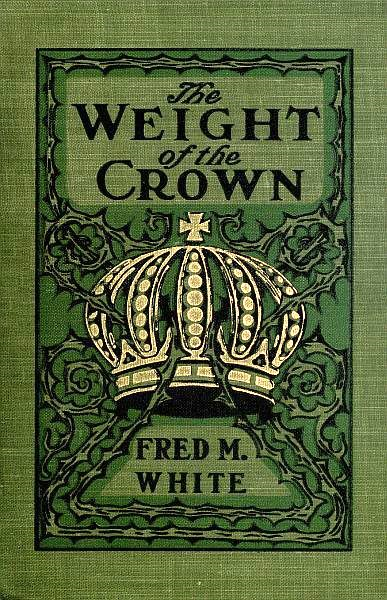